本書由 Dr. Awesome Doge 翻譯。
前言
封面上的蜜蜂有什麼含義？
蜜蜂是一種展現出高度複雜行為的物種，最終使蜂巢受益。每個蜜蜂按照一套簡單的規則自由運作，並通過“跳舞”來傳達重要的結果。舞蹈帶有重要的資訊，比如太陽的位置和從蜂巢到目標的相對地理座標。通過解讀這種舞蹈，蜜蜂可以轉播這些資訊或採取行動，從而實現“蜂巢思維”的意志。
雖然蜜蜂形成了一個基於種群的社會，擁有繁殖後代的蜂后，但在蜂巢中沒有中央權威或領導者。數千成員的種群表現出高度智能和複雜的行為，這社會網路中的個體相互交互而形成的“湧現”特性。
自然表明，去中心化的系統可以具有彈性，並且可以產生湧現的複雜性和令人難以置信的複雜性，而不需要中央機構，層級或複雜的部分。
快速術語表
這個快速術語表包含許多與以太坊相關的術語。這些術語在本書中都有使用，所以請將其加入書籤以便快速參考。
- 帳戶 Account
-
帳戶可以是外部擁有帳戶 (EOA, externally owned account) 或是合約帳戶 (contract address)。兩者必定包含地址、餘額、隨機數 (nonce)。而合約帳戶則是多了資料儲存空間 (storage) 及程式碼 (code) 的部份。
- 地址 Address
-
一般來說，以太坊區塊鏈上的地址代表的是 EOA 或是合約的地址，用來接收或是傳送交易(transaction)。更俱體地說，私鑰先使用 ECDSA 計算出公鑰，接著對公鑰作出 Keccak 雜湊，接著取其雜湊最右邊的40位元組，並以16進制字串方式表達該40位元組，然後在字串前面加上 “0x” 字串後，該字串即為該私鑰所對應之以太坊地址(Ethereum Address)。
- 斷言 Assert
-
在 Solidity 中，assert(false) 編譯為 0xfe, 是一個無效的操作碼，用盡所有剩餘的燃氣（Gas），並恢復所有更改。 當 assert() 語句失敗時，說明發生了嚴重的錯誤或異常，你必須修復你的程式碼。 你應該使用 assert 來避免永遠不應該發生的條件。
- 大端序 Big-endian
-
大端序是進位制數值系統的表示方法，將代表最大值的數字放在第一位 (即手寫順序的最左邊，或電腦記憶體中的最低位址)。反之，若將代表最小數值的數字放在第一位，該表示方法稱為小端序(little-endian)。
- 比特幣改進提議 BIPs
-
比特幣改進提議（Bitcoin Improvement Proposals）。比特幣社區成員提交的一組提案，旨在改進比特幣。例如，BIP-21 是改進比特幣統一資源識別碼（URI）方案的建議。
- 區塊 Block
-
區塊是關於所包含的交易的所需資訊（區塊頭）的集合，以及稱為ommer的一組其他區塊頭。它被礦工添加到以太坊網路中。
- 區塊鏈 Blockchain
-
在以太坊中，區塊鏈是由區塊所組成之序列，序列上的每個區塊都被工作量證明 (proof-of-work) 系統驗證過，每個區塊都連結至前一個區塊，可往前追溯至創始區塊 (genesis block)。在比特幣協議下會明定的區塊鏈的大區塊空間限制 (maximum block size)，但在以太坊中則沒有明確規定區塊大小，而是透過燃氣限制 (gas limit) 來規範每個區塊所能使用的指令上限。
- 拜占庭分叉 Byzantium Fork
-
拜占庭是大都會（Metropolis）發展階段的兩大分叉之一。它包括 EIP-649：大都會難度炸彈延遲和區塊獎勵減少，其中冰河時代（見下文）延遲1年，而區塊獎勵從5個以太坊減至3個以太坊。
- 編譯 Compiling
-
將高階程式語言（例如 Solidity）編寫的程式碼轉換為低階語言（例如 EVM Bytecode ）。
- 共識 Consensus
-
當大量節點（通常是網路上的大多數節點）在各自本地通過驗證的最佳區塊鏈中都有完全相同的區塊狀態。 不要與共識規則混淆。
- 共識規則 Consensus rules
-
完整節點為了與其他節點保持一致，所需遵循的區塊驗證規則。不要與共識混淆。
- 君士坦丁堡 Constantinople
-
大都會階段的第二部分，2018年中期的計劃。預計將包括切換到混合工作證明/權益證明共識演算法，以及其他變更。
- 合約帳戶 Contract account
-
合約帳戶附有程式碼，該程式碼在收到其它帳戶(合約帳戶 或 EOA) 的交易(transaction) 時便可執行。
- 合約創建交易 Contract creation transaction
-
一個特殊的交易，以“零地址”作為收件人，用於註冊合約並將其記錄在以太坊區塊鏈中（請參閱“零地址”）。
- 去中心化自治組織 DAO
-
去中心化自治組織（Decentralised Autonomous Organization）。 沒有層級管理的公司和其他組織。也可能是指2016年4月30日發佈的名為“The DAO”的合約，該合約於2016年6月遭到黑客攻擊，最終在第1,192,000個區塊激起了硬分叉（代號 DAO），恢復了被攻擊的 DAO 合約，並導致了以太坊和以太坊經典兩個競爭系統。
- 去中心化應用 DApp
-
去中心化應用（Decentralised Application）。 狹義上，它至少是智能合約和 web 用戶界面。更廣泛地說，DApp 是一個基於開放式、分散式、點對點基礎架構服務的 Web 應用程式。另外，許多 DApp 包括去中心化儲存和/或消息協議和平臺。
- 契約 Deed
-
ERC721 提案中引入的非同質性代幣（NFT, Non-Fungible Token）標準。與ERC20代幣不同，契約證明了所有權並且不可互換，雖然它們還未在任何管轄區被認可為合法檔案，至少目前沒有。
- 難度 Difficulty
-
該設定可調節全網進行工作量證明 (proof of work) 時的計算量。
- 數位簽章 Digital signature
-
數位簽章演算法是一個過程，用戶可以使用私鑰為文件生成稱為“簽名”的短字串數據，以便具有簽名、文件，和相應公鑰的任何人，都可以驗證（1 ）該檔案由該特定私鑰的所有者“簽名”，以及（2）該檔案在簽署後未被更改。
- 橢圓曲線數位簽章演算法 ECDSA
-
橢圓曲線數位簽章演算法（ Elliptic Curve Digital Signature Algorithm，ECDSA ）是以太坊用來確保資金只能由合法所有者使用的加密演算法。
- 以太坊改進建議 EIP
-
以太坊改進建議（Ethereum Improvement Proposals）。描述以太坊平臺的建議標準。 EIP 是向以太坊社區提供資訊的設計文件，描述新的功能，或處理過程、環境。有關更多資訊，請參見 https://github.com/ethereum/EIPs （另請參見下面的 ERC 定義）。
- 以太坊名稱服務 ENS
-
以太坊名稱服務（Ethereum Name Service）。更多資訊，參見 https://github.com/ethereum/ens/.
- 熵 Entropy
-
在密碼學領域，表示可預測性的缺乏或隨機性水平。在生成秘密資訊（如主私鑰）時，演算法通常依賴高熵源來確保輸出不可預測。
- 外部擁有帳戶 EOA
-
外部擁有帳戶（Externally Owned Account）。 由或為以太坊的真人用戶創建的帳戶。
- 以太坊註釋請求 ERC
-
以太坊註釋請求（Ethereum Request for Comments）。一些 EIP 被標記為 ERC，表示試圖定義以太坊使用的特定標準的建議。
- Ethash
-
以太坊1.0的工作量證明演算法。更多資訊，參見 https://github.com/ethereum/wiki/wiki/Ethash.
- 以太 Ether
-
以太（Ether），是以太坊生態系統中使用的原生貨幣，在執行智能合約時用來支付燃氣（Gas）費用。它的符合是 Ξ, 極客用的大寫 Xi 字符.
- 事件 Event
-
事件允許EVM日誌工具的使用。Dapp 可以監聽事件，並在事件發生時觸發 Javascript 的回呼函式 。更多資訊，參見 http://solidity.readthedocs.io/en/develop/contracts.html#events。
- 以太坊虛擬機 EVM
-
以太坊虛擬機（Ethereum Virtual Machine）。 一種以堆疊（Stack）為基底，執行 Bytecode 的虛擬機。在以太坊中，執行模型明確說明了系統狀態在給定一系列 Bytecode 指令和少量環境數據的情況下該如何發生改變。 這是通過虛擬狀態機的正式模型指定的。
- EVM組合語言 EVM Assembly Language
-
人類可讀形式的 Bytecode 。
- 備用函式 Fallback function
-
這是一個默認預設(default)的函式，當合約收到不含資料(data)欄位的交易(transaction)時，或是收到未被合約所宣告之函數呼叫時，這個備用的函式便會被執行。
- 水龍頭 Faucet
-
一個服務，為想要在testnet上做測試的開發人員提供免費的測試以太幣。
- Finney
-
以太幣的一種單位。1015 finney = 1 ether。
- 分叉 Fork
-
指因協議改變造成原始鏈一分為二，或指挖礦時因為兩條潛在區塊鏈而產生的暫時分歧。
- 前沿 Frontier
-
以太坊的試驗開發階段，從2015年7月至2016年3月。
- Ganache
-
私有以太坊區塊鏈，你可以在上面進行測試、執行命令，並控制此區塊鏈的運作以檢視狀態變化。
- 燃氣 Gas
-
以太坊用於執行智能合約的虛擬燃料。以太坊虛擬機使用會計機制來衡量 gas 的消耗量並限制計算資源的消耗。參見“圖靈完備”。 燃氣是執行智能合約的每條指令產生的計算單位。燃氣與以太幣（Ether）掛鉤。燃氣類似於行動網路上的通話時間。因此，以法定貨幣進行交易的價格是 gas x（ETH /gas）x（法定貨幣/ETH）。
- 燃氣限制 Gas limit
-
每筆交易或區塊中所有交易的最多 gas 使用上限。
- 創世區塊 Genesis block
-
區塊鏈中的第一個塊，用來初始化特定的網路和加密數位貨幣。
- Geth
-
Go語言的以太坊。Go 編寫的最突出的以太坊協議實現之一。
- 硬分叉 Hard fork
-
硬分叉也稱為硬分叉更改，是區塊鏈中的一種永久性分歧。通常發生在未升級節點無法驗證已升級節點（遵循新共識規則）創建的的區塊時。不要與分叉，軟分叉，軟體分叉或Git分叉混淆。
- 雜湊值 Hash
-
通過雜湊函式為不定長度的數據生成的固定長度指紋。
- 分層確定錢包 HD wallet
-
使用分層確定密鑰生成和傳輸協議的錢包（BIP32）。
- 分層確定錢包種子 HD wallet seed
-
HD錢包種子或根種子是一個可能很短的值，用作生成HD錢包的主私鑰和主鏈碼的種子。錢包種子可以用助記詞（mnemonic words）表示，使人們更容易複製，備份和恢復私鑰。
- 家園 Homestead
-
以太坊的第二個發展階段，於2016年3月在1,150,000區塊啟動。
- 互換客戶端地址協議 Inter exchange Client Address Protocol (ICAP)
-
以太坊地址編碼，與國際銀行帳號（IBAN）編碼部分兼容，為以太坊地址提供多樣的，校驗和的，可互操作的編碼。 ICAP地址可以編碼以太坊地址或通過以太坊名稱註冊表註冊的常用名稱。他們總是以XE開始。其目的是引入一個新的IBAN國家程式碼：XE，X表示"extended"， 加上以太坊的E，用於非管轄貨幣（例如XBT，XRP，XCP）。
- 冰河時代 Ice Age
-
以太坊在200,000區塊的硬分叉，提出難度指數級增長（又名難度炸彈），引發了到權益證明 Proof-of-Stake 的過渡。
- 集成開發環境 IDE (Integrated Development Environment)
-
集成的用戶界面，結合了程式碼編輯器、編譯器、執行環境和除錯器。
- 不可變的部署程式碼問題 Immutable Deployed Code Problem
-
一旦部署了合約(或庫)的程式碼，它就成為不可變的。修復可能的bug並添加新特性是軟體開發週期的關鍵。這對智能合約開發來說是一個挑戰。
- 內部交易（又稱“消息”）Internal transaction (also "message")
-
從一個合約地址發送到另一個合約地址或 EOA 的交易。
- 密鑰推導方法 Key Derivation Function (KDF)
-
也稱為密碼擴展演算法，它被keystore格式使用，以防止對密碼加密的暴力破解，字典或彩虹表攻擊。它重複對密碼進行雜湊。
- Keccak256
-
以太坊使用的加密雜湊方法。雖然在早期 Ethereum 程式碼中寫作 SHA-3，但是由於在 2015 年 8 月 SHA-3 完成標準化時，NIST 調整了填充演算法，所以 Keccak256 不同於標準的 NIST-SHA3。Ethereum 也在後續的程式碼中開始將 SHA-3 的寫法替換成 Keccak256 。
- Keystore 檔案
-
JSON 編碼的檔案，包含一個以密碼加密過後的（隨機生成）私鑰，以提供額外的安全性。
- LevelDB
-
LevelDB是一種開源的硬碟鍵值儲存系統。LevelDB是輕量的，單一目標的持久化庫，支持許多平臺。
- 庫 Library
-
以太坊中的庫，是一種特殊類型的合約：沒有可被支付的函式（payable function），沒有後備函式（fallback function），沒有數據儲存。所以它不能接收或儲存以太，或儲存數據。庫以預先部署程式碼的形式，提供其他合約調用唯讀計算。
- 輕量級客戶端 Lightweight client
-
輕量級客戶端是以太坊客戶端的其中一種，它不在本地儲存區塊鏈的副本，也不驗證區塊和交易。它提供了錢包的功能，可以創建和廣播交易。
- 消息 Message
-
內部交易，不會被序列化，且只在EVM中發送。
- 消息呼叫 Message call
-
將消息從一個帳戶傳送到另一個帳戶的動作。如果目標帳戶為 EVM 程式碼，虛擬機將被啟動，並帶有消息中附帶的狀態。
- METoken
-
Mastering Ethereum Token. 本書中用於演示的 ERC20 代幣。
- 大都會階段 Metropolis Stage
-
大都會是以太坊的第三個開發階段，在2017年10月啟動。
- 礦工 Miner
-
通過重複雜湊計算，為新的區塊尋找有效的工作量證明的網路節點。
- Mist
-
Mist是以太坊基金會創建的第一個以太坊瀏覽器。它還包含一個基於瀏覽器的錢包，這是 ERC20 代幣標準的首次實施（Fabian Vogelsteller，ERC20 的作者也是 Mist 的主要開發人員）。Mist 也是第一個引入camelCase校驗碼（EIP-155）的錢包。Mist 運行完整節點，提供完整的 DApp 瀏覽器，支持基於Swarm的儲存和ENS地址
- 網路 Network
-
將交易和區塊傳播到每個以太坊節點（網路參與者）的對等網路。
非同質性代幣 NFT (Non-Fungible Token) ERC721 提議的代幣標準。 NFT 可被追蹤及交易，但每一枚代幣都是唯一且有區別的。這些代幣不像 ERC20 標準的代幣一樣可相互替換。NFT 可用來代表數位所有權或是實體資產。
- 節點 Node
-
參與到對等網路的軟體客戶端。
- 隨機數 Nonce
-
密碼學中，隨機數指代只可以用一次的數值。在以太坊中用到兩類隨機數。
-
帳戶隨機數 - 這只是一個帳戶的交易計數。
-
工作量證明隨機數- 用於獲得工作證明的區塊中的隨機值（取決於當時的難度）。
-
- 叔塊 Ommer
-
祖父節點的子節點，但它本身並不是父節點。當礦工找到一個有效的區塊時，另一個礦工可能已經發布了一個競爭的區塊，並添加到區塊鏈頂部。像比特幣一樣，以太坊中的孤兒區塊可以被新的區塊作為ommers包含，並獲得部分獎勵。術語 "ommer" 是對父節點的兄弟姐妹節點的性別中立的稱呼，但也可以表示為“叔叔”。
- Parity
-
以太坊客戶端軟體最突出的支持共同操作（多重簽名）的實現之一。
- 權益證明 Proof-of-Stake (PoS)
-
權益證明是密碼貨幣區塊鏈協議旨在實現分佈式共識的一種方法。權益證明要求用戶證明一定數量的密碼貨幣（網路中的“股份”）的所有權，以便能夠參與交易驗證。
- 工作量證明 Proof-of-Work (PoW)
-
一份需要大量計算才能找到的數據（證明）。在以太坊，礦工必須找到符合網路難度目標的 Ethash 演算法數字解答。
- 收據 Receipt
-
以太坊客戶端返回的數據，表示特定交易的結果，包括交易的雜湊值，其區塊編號，使用的燃氣量，以及在部署智能合約時的合約地址。
- 重入攻擊 Re-entrancy Attack
-
當攻擊者合約（Attacker contracts）調用受害者合約（Victim contracts）的函式時，可以使用這種攻擊。攻擊者合約調用受害者合約中的某一個函式，並讓此函式在執行結束前回頭調用攻擊者合約，攻擊者合約執行後會再次調用受害者合約，並且不斷遞回下去。以這種方式，可以透過跳過受害者合約中的某些部分（如狀態檢查）來盜取資金。 攻擊者必須執行的唯一技巧是在用完燃氣之前中斷遞迴調用，並避免盜用的以太被還原。
- 獎勵 Reward
-
在每個新產生的區塊中會包含一定數量的以太幣，以獎勵找到工作量證明解答的礦工。
- 遞迴長度前綴 Recursive Length Prefix (RLP)
-
RLP 是一種編碼標準，由以太坊開發人員設計用來編碼和序列化任意複雜度和長度的物件（資料結構）。
- 中本聰 Satoshi Nakamoto
-
Satoshi Nakamoto 是設計比特幣及其原始實現Bitcoin Core的個人或團隊的名字。作為實現的一部分，他們也設計了第一個區塊鏈。在這個過程中，他們是第一個解決數位貨幣的雙重支付問題的。他們的真實身份至今仍是個謎。
- Vitalik Buterin
-
Vitalik Buterin 是俄國-加拿大的開發者和作家，以太坊和 Bitcoin 雜誌的聯合創始人。
- Gavin Wood
-
Gavin Wood 是英國的開發者，以太坊的聯合創始人和前 CTO。在2014年8月他提出了 Solidity，用於編寫智能合約的面向合約的程式語言。
- 密鑰（私鑰） Secret key (aka private key)
-
允許以太坊用戶通過創建數位簽章（參見公鑰，地址，ECDSA）證明帳戶或合約的所有權的加密數字。
- SHA
-
安全雜湊演算法（SHA, Secure Hash Algorithm） 是美國國家標準與技術研究院（NIST）發佈的一系列加密雜湊函數。
- SELFDESTRUCT 操作碼
-
只要整個網路存在，智能合同就會存在並可執行。如果它們被編程為自毀的或使用委託調用（delegatecall）或調用程式碼（callcode）執行該操作，它們將從區塊鏈中消失。 一旦執行自毀操作，儲存在合同地址處的剩餘Ether將被發送到另一個地址，並將儲存和程式碼從狀態中移除。 儘管這是預期的行為，但自毀合同的修剪可能或不會被以太坊客戶實施。 SELFDESTRUCT 之前稱作 SUICIDE, 在EIP6中, SUICIDE 重命名為 SELFDESTRUCT。
- 寧靜 Serenity
-
以太坊第四個也是最後一個開發階段。寧靜還沒有計劃發佈的日期。
- Serpent
-
語法類似於Python的過程式（命令式）程式語言。也可以用來編寫函數式（宣告式）程式碼，儘管它不是完全沒有副作用的。首先由Vitalik Buterin創建。
- 智能合約 Smart Contract
-
在以太坊的計算框架上執行的程式。
- Solidity
-
過程式（命令式）程式語言，語法類似於Javascript, C++ 或 Java。以太坊智能合約最流行和最常使用的語言。由 Gavin Wood（本書的聯合作者）首先創造。
- Solidity inline assembly
-
內聯彙編Solidity中包含的使用EVM彙編（EVM 程式碼的人類可讀形式）的程式碼。內聯彙編試圖解決手動編寫彙編時遇到的固有難題和其他問題。
- Spurious Dragon
-
在＃2,675,00塊的硬分叉，來解決更多的拒絕服務攻擊向量，以及另一種狀態清除。還有轉播攻擊保護機制。
- Swarm
-
一種去中心化（P2P）的儲存網路。與Web3和Whisper共同使用來構建 DApps。
- Tangerine Whistle
-
在 #2,463,00 塊的硬分叉，改變了某些IO密集操作的燃氣計算方式，並從拒絕服務攻擊中清除累積狀態，這種攻擊利用了這些操作的低燃氣成本。
- 測試網 Testnet
-
一個測試網路（簡稱testnet），用於模擬以太網主要網路的行為。
- 交易 Transaction
-
以特定地址為目標，由發送帳戶簽署並提交到以太坊區塊鏈的數據。交易包含元數據，例如交易的燃氣限額（Gas Limit）。
- Truffle
-
一個最常用的以太坊開發框架。包含一些 NodeJS 包，可以使用 Node Package Manager (NPM) 安裝。
- 圖靈完備 Turing Complete
-
在計算理論中，如果數據操縱規則（如計算機的指令集，程式設計語言或細胞自動機）可用於模擬任何圖靈機，則它被稱為圖靈完備或計算上通用的。這個概念是以英國數學家和計算機科學家阿蘭圖靈命名的。
- Vyper
-
一種高級程式語言，類似Serpent，有 Python 式的語法，旨在接近純函數式語言。由 Vitalik Buterin 首先創造。
- 錢包 Wallet
-
擁有你的所有密鑰的軟體。作為訪問和控制以太坊帳戶並與智能合約互動的界面。請注意，密鑰不需要儲存在你的錢包中，並且可以從不連網儲存裝置（例如USB或紙張）中存取以提高安全性。儘管名字為錢包，但它從不儲存實際的硬幣或代幣。
- Web3
-
Web 的第三個版本。有 Gavin Wood 首先提出，Web3 代表了 Web 應用程式的新願景和焦點：從集中擁有和管理的應用程式到基於去中心化協議的應用程式。
- Wei
-
以太的最小單位，1018 wei = 1 ether.
- Whisper
-
一種去中心化（P2P）消息系統。與Web3和Swarm一起使用來構建 DApps。
- 零地址 Zero address
-
特殊的以太坊地址，全部由
0組成（即0x0000000000000000000000000000000000000000)，被指定為創建一個智能合約所發起的交易（Transaction）的目標地址（即to參數的值）。
1. 什麼是以太坊
「世界的計算機」是對於以太坊平臺常見的一種描述。但那是什麼意思呢？讓我們首先從關注計算機科學的描述開始，然後對以太坊的功能和特性進行更實際的解讀，並將其與比特幣和其他分散式帳本技術（簡單起見，我們將經常使用「區塊鏈」指代）進行對比。
從計算機科學的角度來說，以太坊是一種確定性 (deterministic) 但實際上無界 (unbounded) 的狀態機。它有兩個基本功能，第一個是全球可存取的單例狀態，第二個是對狀態進行更改的虛擬機。
從更實際的角度來說，以太坊是一個開源的、全球的去中心化計算架構，上面可以拿來執行的程式碼稱之為 智能合約(smart contracts)。它運用區塊鏈來作到資料同步以及紀錄系統上狀態值的變化，也紀錄了稱為 _ether 的密碼貨幣，用來計劃並且限制執行資源的花費。
以太坊讓開發者能夠利用內建的經濟學方法來構建強大的去中心化應用程式。去中心化應用程能提供了高可用性、可審計性、透明度及中立性，因此也就能夠降低對於審查制度之依賴，並且能有效降低合約它方之違約風險。
1.1. 與比特幣的比較
很多之前有一些密碼貨幣的經驗人會加入以太坊，特別是比特幣。以太坊與其他開放區塊鏈共享許多通用元素：連接參與者的對等網路，用於狀態同步（工作量證明）的共識演算法，數位貨幣（以太）和全局帳本（區塊鏈）。
1.1.1. 區塊鏈的組件
開源、公開的區塊鏈通常包括以下組件：
-
一個連接參與者，並傳播交易和包含已驗證交易的區塊的點對點網路，基於標準的“gossip“協議。
-
狀態機中實現的一系列共識規則。
-
消息，以交易的形式表示，代表狀態轉移。
-
根據共識規則處理交易的狀態機。
-
分佈式資料庫，區塊鏈，記錄所有狀態轉移的日誌。
-
共識演算法（例如，Proof-of-Work），通過強制參與者競爭並使用共識規則約束他們，來分散區塊鏈的控制權。
-
上述內容的一個或多個開源軟體實現。
所有或大部分這些組件通常組合在一個軟體客戶端中。例如，在比特幣中，參考實現由 Bitcoin Core 開源項目開發，並作為 bitcoind 客戶端實現。在以太坊中，沒有參考實現，而是 參考規範，是在 [yellowpaper] 中對系統的數學描述。有許多客戶端根據參考規範建造。
過去，我們使用術語“區塊鏈”來表示上述所有組件，作為包含上述所有特性的技術組合的簡稱。然而，今天，區塊鏈這個詞已經被營銷商和姦商所淡化，他們期待炒作他們的項目併為其創業公司實現不切實際的估值。它自己實際上是毫無意義的。我們需要限定詞來幫助我們理解這些區塊鏈的特徵，例如 _開源、公開、全球、分散、中立和抗審查_等，以確定這些組件給予“區塊鏈”系統的重要湧現特徵。
並不是所有的區塊鏈都是相同的。當你被告知某樣東西是區塊鏈時，你還沒有得到答案，你需要問很多問題來澄清“區塊鏈”是什麼意思。首先詢問上面組件的描述，然後詢問這個“區塊鏈”是否顯示了 開源、公開 等特性。
1.2. 以太坊的開發
以太坊的目標和構建在很多方面都和之前的開源區塊鏈有所不同，包括比特幣。
以太坊的目的主要不是數位貨幣支付網路。但數位貨幣_ether_對於以太坊的運作來說既是不可或缺的也是必要的，以太也被視為一種_實用貨幣_來支付以太坊平臺的使用。
與具有非常有限的腳本語言的比特幣不同，以太坊被設計成一個通用可編程區塊鏈，運行一個_虛擬機_，能夠執行任意和無限複雜的程式碼。比特幣的腳本語言故意被限制為簡單的真/假消費條件判斷，以太坊的語言是_圖靈完備的_，這意味著它相當於一臺通用計算機，可以運行理論圖靈機可以運行的任何計算。
1.3. 以太坊的誕生
所有偉大的創新都解決了真正的問題，以太坊也不例外。當人們認識到比特幣模型的力量，並試圖超越密碼貨幣應用，轉向其他項目時，人們構思出了以太坊。但開發人員面臨著一個難題：要麼在比特幣之上構建，要麼啟動一個新的區塊鏈。以比特幣為基礎意味著處於網路的有意約束之中，並試圖找到解決方法。數據儲存的有限類型和大小似乎限制了可以在其上作為第二層解決方案運行的應用程式的類型。開發者需要構建僅使用有限的變數，交易類型和數據集的系統。對於需要更多自由度和更大靈活性的項目，啟動新的區塊鏈是唯一的選擇。但開始一個新的區塊鏈意味著要構建所有的基礎設施元素，測試等。
2013年底，年輕開發者和比特幣愛好者Vitalik Buterin開始考慮進一步擴展比特幣和Mastercoin（一種擴展比特幣，提供基本智能合約的疊加協議）的功能。 2013年10月，Vitalik向Mastercoin團隊提出了一個更通用的方法，該方案允許用靈活且可編寫腳本（但不是圖靈完備的）的合約取代Mastercoin的專業合約語言。雖然Mastercoin團隊印象深刻，但這一提議太過激進，無法適應他們的發展路線圖。
2013年12月，Vitalik開始分享一份白皮書，描述了以太坊背後的想法：一個圖靈完備的可編程和通用區塊鏈。幾十個人看到了這個早期的草案，並向Vitalik提供了反饋，幫助他逐漸提出提案。
本書的兩位作者都收到了白皮書的初稿，並對其進行了評論。Andreas M. Antonopoulos 對這個想法很感興趣，並向Vitalik詢問了很多關於使用單獨的區塊鏈實施智能合約執行的共識規則以及圖靈完備語言的影響等問題。Andreas非常關注以太坊的進展，但他正在寫作“Mastering Bitcoin”一書的早期階段，直到很久以後才直接參與以太坊。然而，Gavin Wood博士是第一批接觸Vitalik並提供幫助提供C ++編程技能的人員之一。Gavin成為了以太坊的聯合創始人，聯合設計師和CTO。
正如Vitalik在他的 "Ethereum Prehistory" 中所述:
當時的以太坊協議完全是我自己的創作。然而，從這裡開始，新的參與者開始加入。迄今為止協議方面最突出的是Gavin Wood。
…
將以太坊視為構建可編程金錢的平臺而帶來的微妙變化也可以歸功於Gavin，基於區塊鏈的合約可以保存數字資產並根據預設規則將其轉移到通用計算平臺。這起始於著重點和術語的細微變化，隨著對“Web 3”體系的日益重視，這種影響變得更加強烈，這種體系將Ethereum看作是一套去中心化技術的組成部分，另外兩個是Whisper和Swarm。
從2013年12月開始，Vitalik和Gavin完善並發展了這個想法，共同構建了形成以太坊的協議層。
以太坊的創始人們正在考慮一個並非針對特定目的的區塊鏈，而是通過成為_可編程的_來支持各種各樣的應用。這個想法是，通過使用像以太坊這樣的通用區塊鏈，開發人員可以編寫他們的特定應用程式，而不必開發對等網路，區塊鏈，共識演算法等底層機制。以太坊平臺旨在抽象這些詳細資訊併為去中心化區塊鏈應用程式提供確定性和安全的編程環境。
就像Satoshi一樣，Vitalik和Gavin不僅僅發明了一種新技術，他們以新穎的方式將新發明與現有技術結合起來，並提供了原型程式碼以向世界證明他們的想法。
創始人多年來一直致力於構建和完善願景。2015年7月30日，第一個以太坊地塊被開採。世界計算機開始為世界服務……
1.4. 以太坊開發的四個階段
以太坊的誕生是第一階段的啟動，名為“前沿（Frontier）”。以太坊的發展計劃分四個階段進行，每個新階段都會發生重大變化。每個階段都可能包含子版本，稱為“硬分叉”，它們以不向後兼容的方式改變功能。
四個主要的發展階段代號為前沿（Frontier），家園（Homestead），大都會（Metropolis）和寧靜（Serenity）。中間的硬分叉代號為“冰河時代（Ice Age）”，“DAO”，“蜜桔前哨（Tangerine Whistle）”，“假龍（Spurious Dragon）”，“拜占庭（Byzantium）”和“君士坦丁堡（Constantinople）”。它們在下面列出，以及硬分叉發生的塊號：
1.4.1. 之前的過渡
- Block #0
-
"Frontier" - 以太坊的初始階段, 從2015年7月30日持續到2016年3月。
- Block #200,000
-
"Ice Age" - 引入指數級難度增長的一個難題，激勵了到權益證明的過渡。
- Block #1,150,000
-
"Homestead" - 以太坊的第二階段，2016年3月啟動。
- Block #1,192,000
-
"DAO" - 恢復被破壞的DAO合約的硬分叉，導致以太坊和以太坊經典分成兩個競爭系統。
- Block #2,463,000
-
"Tangerine Whistle" - 改變某些IO密集操作的燃氣計算方法和清除拒絕服務攻擊（利用這些操作的低燃氣成本）累積狀態的硬分叉。
- Block #2,675,000
-
"Spurious Dragon" - 解決更多拒絕服務攻擊向量和另一種狀態清除的硬分叉，還包括轉播攻擊保護機制。
1.4.2. 當前狀態
我們目前位於_Metropolis_階段，該階段計劃為兩個次級版本的硬分叉 (參見 [hard_fork]) ，代號 Byzantium 我 Constantinople。拜占庭於2017年10月生效，君士坦丁堡預計將在2018年中期。
- Block #4,370,000
-
“大都會拜占庭” - 大都會是以太坊的第三階段，正是撰寫本書的時間，於2017年10月啟動。拜占庭是Metropolis的兩個硬分叉中的第一個。
1.4.3. 未來的計劃
在大都會拜占庭硬分叉之後，大都會還有一個硬分叉計劃。大都會之後是以太坊部署的最後階段，代號為Serenity。
- Constantinople
-
- 大都會階段的第二部分，計劃在2018年中期。預計將包括切換到混合的工作證明/權益證明共識演算法，以及其他變更。
- Serenity
-
以太坊的第四個也是最後一個階段。寧靜尚未有計劃的發佈日期。
1.5. 以太坊：通用的區塊鏈
原始區塊鏈（比特幣的區塊鏈）追蹤比特幣單位的狀態及其所有權。你可以將比特幣視為分佈式共識 狀態機，其中交易引起全局的_狀態轉移 _，從而更改比特幣的所有權。狀態轉移受共識規則的制約，允許所有參與者（最終）在開採數個區塊後在系統的共同（共識）狀態上匯合。
以太坊也是一個分佈式狀態機。但是，不僅僅追蹤貨幣所有權的狀態，以太坊追蹤通用數據儲存的狀態轉換。通常我們指的是任何可以表示為 鍵值對 key-value tuple_的數據。鍵值數據儲存簡單地儲存任何通過某個鍵引用的值。例如，儲存由“Book Title”鍵引用的值“Mastering Ethereum”。在某些方面，這與通用計算機使用的 _Random訪問儲存器（RAM） 的數據儲存模型具有相同的用途。以太坊有 memory 儲存程式碼和數據，它使用以太坊區塊鏈來跟蹤這些記憶體隨著時間的變化。就像通用的儲存程式的計算機一樣，以太坊可以將程式碼加載到其狀態機中並運行該程式碼，將結果狀態更改儲存在其區塊鏈中。與通用計算機的兩個重要差異在於，以太坊狀態的變化受共識規則的支配，並且狀態通過共享帳本全球分佈。以太坊回答了這樣一個問題：“跟蹤任何狀態並對狀態機進行編程，以創建一個在共識之下運行的全球計算機會怎樣？”。
1.6. 以太坊的組件
在Ethereum中，區塊鏈的組件 中描述的區塊鏈系統組件包括：
- P2P Network
-
以太坊在 以太坊主網 上運行，可以通過TCP連接埠30303訪問，運行稱作 ÐΞVp2p 的協議。
- Consensus rules
-
以太坊的共識規則，在參考規範，即 [yellowpaper] 中定義。
- Transactions
-
Ethereum交易（參見[transactions]）是網路消息，包括發送者，接收者，值和數據負載等。
- State Machine
-
以太坊的狀態轉移由 Ethereum虛擬機（EVM） 處理，這是一個執行 bytecode（機器語言指令）的基於棧的虛擬機。稱為“智能合約”的EVM程式以高階語言（如Solidity）編寫，並編譯為 Bytecode 以便在EVM上執行。
- Data structures
-
節點上使用本地端的資料庫 (database) 來儲存以太坊的狀態，大部份的節點通常是使用 Google 的 LevelDB ，交易紀錄以及系統狀態是經過序列並雜湊化成一個資料結構後，才存於資料庫內，而這個資料構的名稱為 梅克爾帕特里夏樹 (Merkle Patricia Tree)。
- Consensus Algorithm
-
以太坊使用的共識演算法是比特幣的「中本聰共識(Nakamoto Consensus)」，也就是使用連續的單一簽名區塊，透過 PoW 的權重來決定最長鏈，並以此當作全網最新狀態。然而，計劃在不久的將來，將過渡到稱為_Casper_的權益證明（Proof-of-Stake）系統。
- Economic security
-
以太坊目前使用名為_Ethash_的工作量證明（PoW）演算法，但在未來將會改為使用權益證明（PoS）。
- Clients
-
以太坊有幾個可互操作的客戶端軟體實現，其中最突出的是 Go-Ethereum（Geth）_和_Parity。
1.6.1. 其他參考文獻
”褐皮書”：為更廣泛的讀者以不太正式的語言重寫了“黃皮書”： https://github.com/chronaeon/beigepaper
以太坊狀態機 —— 一個“Awesome”資源列表 https://github.com/ethereum/wiki/wiki/Ethereum-Virtual-Machine-(EVM)-Awesome-List
LevelDB 資料庫 (最經常用於儲存區塊鏈本地副本): http://leveldb.org
Merkle Patricia Trees: https://github.com/ethereum/wiki/wiki/Patricia-Tree
Ethash 工作量證明共識演算法： https://github.com/ethereum/wiki/wiki/Ethash
Casper 權益證明 v1 實現指南: https://github.com/ethereum/research/wiki/Casper-Version-1-Implementation-Guide
Go-Ethereum (Geth) 客戶端: https://geth.ethereum.org/
Parity 以太坊客戶端: https://parity.io/
1.7. 以太坊和圖靈完整性
只要你開始閱讀關於以太坊的資訊，你將立即聽到“圖靈完備”一詞。他們說，與比特幣不同，以太坊是“圖靈完備”。這到底是什麼意思呢？
術語“圖靈完備”是以英國數學家阿蘭圖靈（Alan Turing）的名字命名的，他被認為是計算機科學之父。1936年，他創建了一個計算機的數學模型，該計算機由一個狀態機構成，該狀態機通過讀寫順序儲存器（類似於無限長度的磁帶）來操縱符號。通過這個構造，Alan Turing繼續提供了一個來回答（否定的）關於 通用可計算性（是否可以解決所有問題）問題的數學基礎。他證明了存在一些不可計算的問題。具體來說，他證明 停機問題 Halting Problem（試圖評估程式是否最終會停止運行）是不可解決的。
Alan Turing進一步將系統定義為_Turing Complete_，如果它可以用來模擬任何圖靈機。這樣的系統被稱為 通用圖靈機 Universal Turing Machine（UTM）。
以太坊在一個名為以太坊虛擬機的狀態機中執行儲存程式，在記憶體中讀寫數據的能力，使其成為一個圖靈完整系統，因此是一臺通用圖靈機。對於有限的儲存，以太坊可以計算任何圖靈機可以計算的演算法。
以太坊的突破性創新是將儲存程式計算機的通用計算架構與去中心化區塊鏈相結合，從而創建分佈式單狀態（單例）世界計算機。以太坊程式“到處”運行，但卻產生了共識規則所保證的共同（共識）狀態。
1.7.1. 圖靈完備是一個“特性”
聽說以太坊是圖靈完備的，你可能會得出這樣的結論：這是一個圖靈不完備系統中缺乏的功能。相反，情況恰恰相反。需要努力來限制一個系統，使它不是 Turing Complete 的。即使是最簡單的狀態機也會出現圖靈完備性。事實上，已知最簡單的Turing Complete狀態機（Rogozhin，1996）具有4個狀態並使用6個符號，狀態定義只有22個指令長。
圖靈完備不僅可以最簡單的系統中實現，而且有意設計為受限制的圖靈不完備的系統通常被認為是“意外圖靈完備的”。圖靈不完備的約束系統更難設計，必須仔細維護，以保持圖靈不完備。
關於“意外圖靈完備的”的有趣的參考資料可以在這裡找到： http://beza1e1.tuxen.de/articles/accidentally_turing_complete.html
以太坊是圖靈完備的事實意味著任何複雜的程式都可以在以太坊中計算。但是這種靈活性帶來了一些棘手的安全和資源管理問題。
1.7.2. 圖靈完備的含義
圖靈證明，你無法通過在計算機上模擬程式來預測程式是否會終止。簡而言之，我們無法預測程式的運行路徑。圖靈完備系統可以在“無限迴圈”中運行，這是一個用於描述不終止程式的術語（過分簡化地說）。創建一個運行永不結束的迴圈的程式是微不足道的。但由於起始條件和程式碼之間存在複雜的相互作用，無意識的無限迴圈可能會在沒有警告的情況下產生。在以太坊中，這提出了一個挑戰：每個參與節點（客戶端）必須驗證每個交易，運行它所調用的任何智能合約。但正如圖靈證明的那樣，以太坊在沒有實際運行（可能永遠運行）時，無法預測智能合約是否會終止，或者運行多久。可以意外，或有意地，創建智能合約，使其在節點嘗試驗證它時永久運行，實際上是拒絕服務攻擊。當然，在需要毫秒驗證的程式和永遠運行的程式之間，存在無限範圍的令人討厭的資源浪費，記憶體膨脹，CPU過熱程式，這些程式只會浪費資源。在世界計算機中，濫用資源的程式會濫用世界資源。如果以太坊無法預測資源使用情況，以太坊如何限制智能合約使用的資源？
為了應對這一挑戰，以太坊引入了稱為 燃氣 _gas_的計量機制。隨著EVM執行智能合約，它會仔細考慮每條指令（計算、數據訪問等）。每條指令都有一個以燃氣為單位的預定成本。當交易觸發智能合約的執行時，它必須包含一定量的燃氣，用以設定運行智能合約可消耗的計算上限。如果計算所消耗的燃氣量超過交易中可用的天然氣量，則EVM將終止執行。Gas是以太坊用於允許圖靈完備計算的機制，同時限制任何程式可以使用的資源。
2015年，攻擊者利用了一個成本遠低於應有成本的EVM指令。這允許攻擊者創建使用大量記憶體的交易，並花幾分鐘時間進行驗證。為了解決這一攻擊，以太坊必須在不向前兼容（硬分叉）的更改中改變特定指令的燃氣核算公式。但是，即使有這種變化，以太坊客戶端也不得不跳過驗證這些交易或浪費數週的時間來驗證這些交易。
1.8. 從通用區塊鏈到去中心化應用 (DApps)
以太坊作為一種可用於各種用途的通用區塊鏈的方式開始。但很快，以太坊的願景擴展為編程 去中心化應用（DApps） 的平臺。DApps代表比“智能合約”更廣闊的視角。DApp至少是一個智能合約和一個web用戶界面。更廣泛地說，DApp是一個基於開放的、去中心化的、點對點基礎架構服務的Web應用程式。
DApp至少由以下部分組成：
-
區塊鏈上的智能合約
-
一個Web前端用戶界面
另外，許多DApp還包括其他去中心化組件，例如：
-
去中心化（P2P）儲存協議和平臺。
-
去中心化（P2P）消息傳遞協議和平臺。
|
你可能會看到DApps拼寫為 ÐApps. Ð 字符是拉丁字符，稱為“ETH”，暗指以太坊。"ETH", 要顯示此字符，請在HTML中使用十進制實體 #208，並使用Unicode字符 0xCE（UTF-8）或 0x00D0（UTF-16）。 |
1.9. 全球資訊網的進化
2004年，“Web 2.0”一詞引人注目，描述了網路向用戶生成內容，響應接口和交互性的演變。Web 2.0不是技術規範，而是描述Web應用程式新焦點的術語。
DApps的概念旨在將全球資訊網引入其下一個自然演進，將去中心化對等協議引入Web應用程式的每個方面。用於描述這種演變的術語是 Web3，意思是網路的第三個“版本”。由Gavin Wood首先提出，_web3_代表了Web應用程式的新願景和焦點：從集中擁有和管理的應用程式到基於去中心化協議的應用程式。
在後面的章節中，我們將探索Ethereum + web3js + JavaScript庫，它將你的瀏覽器中運行的JavaScript應用程式與以太坊區塊鏈連接起來。web3.js 庫還包含一個名為 Swarm 的P2P儲存網路接口和一個稱為 Whisper 的P2P消息傳遞服務。通過在你的Web瀏覽器中運行的JavaScript庫中包含這三個組件，開發人員可以使用完整的應用程式開發套件來構建web3 DApps：
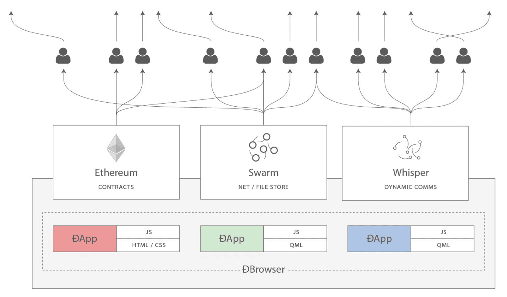
1.10. 以太坊的開發文化
到目前為止，我們已經談到了以太坊的目標和技術與其他區塊鏈之前的區別，比如比特幣。以太坊也有非常不同的開發文化。
在比特幣中，開發以保守原則為指導：所有變化都經過仔細研究，以確保現有系統都不會中斷。大部分情況下，只有在向後兼容時才會執行更改。允許現有客戶“選擇加入”，但如果他們決定不升級，將繼續運作。
相比之下，在以太坊中，開發文化的重點是速度和創新。這個咒語是“快速行動，解決事情”。如果需要進行更改，即使這意味著使之前的假設失效，破壞兼容性或強制客戶端進行更新，也會執行更改。以太坊的開發文化的特點是快速創新，快速進化和願意參與實驗。
這對開發者來說意味著什麼，就是你必須保持靈活性，隨著一些潛在的假設變化，準備重建你的基礎設施。不要以為任何東西都是靜態的或永久的。以太坊開發人員面臨的一個重大挑戰是將程式碼部署到不可變帳本與仍在快速發展的開發平臺之間的內在矛盾。你不能簡單地“升級”你的智能合約。你必須準備部署新的，遷移用戶，應用程式和資金，並重新開始。
具有諷刺意味的是，這也意味著構建具有更多自主權和更少集中控制的系統的目標是無法實現的。在接下來的幾年中，自治和分權要求平臺中的穩定性要比以太坊可能獲得的穩定性要高一點。為了“發展”平臺，你必須準備好取消並重啟你的智能合約，這意味著你必須保留一定程度的控制權。
但是，在積極的一面，以太坊正在快速發展。“自行車脫落”的機會很小 - 這個表達意味著爭論一些小細節，比如如何在大樓後面建造自行車棚。如果你開始騎腳踏車，你可能會突然發現其他的開發團隊改變了計劃，並且拋棄了自行車，轉而使用自動氣墊船。在以太坊有很少的神聖原則，最終標準或固定接口。
最終，以太坊核心協議的開發速度將會放慢，其接口將會變得固定。但與此同時，創新是推動原則。你最好跟上，因為沒有人會為你放慢速度。
1.11. 為什麼學習以太坊？
區塊鏈具有非常陡峭的學習曲線，因為它們將多個學科合併到一個領域：編程、資訊安全、密碼學、經濟學、分佈式系統、對等網路等。以太坊使得這一學習曲線不再陡峭，因此你可以很快就開始了。但就在一個看似簡單的環境表面之下，還有更多。當你學習並開始更深入的觀察時，總會有另一層複雜性和奇蹟。
以太坊是學習區塊鏈的絕佳平臺，它構建了一個龐大的開發者社區，比任何其他區塊鏈平臺都快。相比其他區塊鏈，以太坊是開發者為開發者開發的_開發者的區塊鏈_。熟悉JavaScript應用程式的開發人員可以進入以太坊並開始快速生成工作程式碼。在以太坊的頭幾年，通常看到T恤衫宣佈你可以用五行程式碼創建一個代幣。當然，這是一把雙刃劍。編寫程式碼很容易，但編寫_good_程式碼和_secure_程式碼非常困難。
1.12. 本書將教你什麼？
這本書深入以太坊的每一個組成部分。你將從一個簡單的交易開始，分析它的工作原理，建立一個簡單的合約，使其更好，並跟蹤它在以太坊系統中的路徑。
你將瞭解以太坊的工作方式，以及為什麼這樣設計。你將能夠理解每個組成部分的工作方式，它們如何組合在一起以及為什麼。
2. 以太坊基礎
2.1. 以太幣單位
以太坊的貨幣單位稱為以太幣 (ether) ，也被稱為ETH或符號 Ξ （來自看起來像程式化的大寫字母E的希臘字母“Xi”）或（不太常見的）♦，例如，1個以太，或1個ETH，或 Ξ1，或 ♦1
|
Ξ 使用Unicode字符U+039E，♦使用U+2666。 |
以太幣 (ether) 被細分為更小的單位，直到可能的最小單位，這被命名為 wei 。一個 ether 是 1×1018或1,000,000,000,000,000,000 個 wei。你可能會聽到人們也提到貨幣“以太坊”，但這是一個常見的初學者的錯誤。以太坊 (Ethereum) 是一個系統，以太幣 (ether) 是貨幣(currency)。
ether 的值總是在以太坊內部表示為 wei ，無符號整數值(unsigned integer) 。當你處理1個以太幣時，交易將編碼 10000000000000000000 wei作為值。
ether 的各種單位既有使用國際單位系統（System of Units, SI）的科學名稱，也有口語化的名字，向計算機和密碼學的許多偉大思想致敬。
表 Ether Denominations and Unit Names 顯示了各種單位，它們的俗名（通用）名稱和他們的SI名稱。為了與價值的內部表示保持一致，該表格顯示了所有面值的wei（第一行），在第七行中 ether 顯示為1018 wei：
| Value (in wei) | Exponent | Common Name | SI Name |
|---|---|---|---|
1 |
1 |
wei |
wei |
1,000 |
103 |
babbage |
kilowei or femtoether |
1,000,000 |
106 |
lovelace |
megawei or picoether |
1,000,000,000 |
109 |
shannon |
gigawei or nanoether |
1,000,000,000,000 |
1012 |
szabo |
microether or micro |
1,000,000,000,000,000 |
1015 |
finney |
milliether or milli |
1,000,000,000,000,000,000 |
1018 |
ether |
ether |
1,000,000,000,000,000,000,000 |
1021 |
grand |
kiloether |
1,000,000,000,000,000,000,000,000 |
1024 |
megaether |
2.2. 選擇一個以太坊錢包
以太坊錢包是你通往以太坊系統的門戶。它擁有你的密鑰，並且可以代表你創建和廣播交易。選擇一個以太坊錢包可能很困難，因為有很多不同功能和設計選擇。有些更適合初學者，有些更適合專家。即使你現在選擇一個你喜歡的，你可能會決定稍後切換到另一個錢包。以太坊本身在不斷變化，“最好”的錢包往往是適應它們的。
別擔心！如果你選擇一個錢包而不喜歡它的工作方式，那麼你可以很容易地更換錢包。你只需進行一項交易，即將資金從舊錢包發送到新錢包，或者通過匯出和匯入私鑰來移動密鑰。
首先，我們將選擇三種不同類型的錢包作為整本書的範例：行動錢包，桌面錢包和基於網路的錢包。我們選擇了這三款錢包，因為它們代表了廣泛的複雜性和功能。然而，選擇這些錢包並不是對其質量或安全性的認可。他們只是示範和測試。
起始錢包：
- MetaMask
-
MetaMask是一款瀏覽器擴展錢包，可在你的瀏覽器（Chrome、Firefox、Opera或Brave Browser）中運行。它易於使用且便於測試，因為它可以連接到各種以太坊節點和測試區塊鏈（請參閱“testnets”）。
- Jaxx
-
Jaxx是一款多平臺和多幣種錢包，可在各種作業系統上運行，包括Android、iOS、Windows、Mac和Linux。對於新用戶來說，它通常是一個不錯的選擇，因為它的設計簡單易用。
- MyEtherWallet (MEW)
-
MyEtherWallet是一款基於網路的錢包，可在任何瀏覽器中運行。它具有多個複雜的功能，我們將在許多範例中探討這些功能。
- Emerald Wallet
-
Emerald錢包設計用於以太坊經典區塊鏈，但與其他以太坊區塊鏈兼容。它是一款開源桌面應用程式，適用於Windows、Mac和Linux。Emerald錢包可以運行一個完整的節點或連接到一個公共的遠程節點，工作在“輕量”模式下。它還有一個配套工具來在命令行中執行所有操作。
我們將首先在桌面上安裝MetaMask
2.3. 控制和責任
像以太坊這樣的開放區塊鏈是安全的，因為它們是_去中心化的_。這意味著以太坊的每個用戶都應該控制自己的密鑰，這些密鑰可以控制對資金和合約的訪問。一些用戶選擇通過使用第三方保管人（比如交易所錢包）放棄對密鑰的控制權。在本書中，我們將教你如何控制和管理你自己的密鑰。
這種控制帶來了很大的責任。如果你丟失了你的鑰匙，你將無法獲得資金和合約。沒有人可以幫助你重新獲得訪問權 - 你的資金將永遠鎖定。以下是一些幫助你管理這一責任的提示：
-
提示你選擇密碼時：強化它，備份並不共享。如果你沒有密碼管理器，請將其寫下並存放在鎖定的抽屜或保險櫃中。只要你擁有帳戶的“keystore”檔案，就可以使用此密碼。
-
當系統提示你備份密鑰或助記詞時，請使用筆和紙進行物理備份。不要把這個任務放在“以後”，你會忘記。這些在你丟失了系統中保存的所有數據時使用。
-
不要在數位文件、數位照片、螢幕截圖、在線驅動器、加密的PDF等中儲存密鑰材料（加密或不加密），不要臨時湊合的安全性。使用密碼管理器或筆和紙。
-
在傳輸任何大量數據之前，先做一個小的測試交易（例如，1美元）。一旦你收到測試交易，請嘗試從該錢包中發送。如果你忘記密碼或因任何其他原因無法發送資金，最好是一個小小的損失。
-
請勿將金錢匯入本書所示的任何地址。私人密鑰被列在書中，有人會立即拿走這筆錢。
2.4. MetaMask 入門
打開Google Chrome瀏覽器並導航至：
搜索“MetaMask”並點擊狐狸的標誌。你應該看到這樣的擴展的詳細資訊頁面：
驗證你是否下載真正的MetaMask擴展非常重要，因為有時候人們可以將惡意擴展通過Google的過濾器。
-
在地址欄中顯示ID nkbihfbeogaeaoehlefnkodbefgpgknn
-
由https://metamask.io提供
-
有超過800個評論
-
擁有超過1,000,000名用戶
確認你正在查看正確的擴展程式後，請點擊“添加到Chrome”進行安裝。
2.5. 第一次使用MetaMask
一旦安裝了MetaMask，你應該在瀏覽器的工具欄中看到一個新圖示（狐狸頭）。點擊它開始。它將要求你接受條款和條件，然後通過輸入密碼來創建新的以太坊錢包：
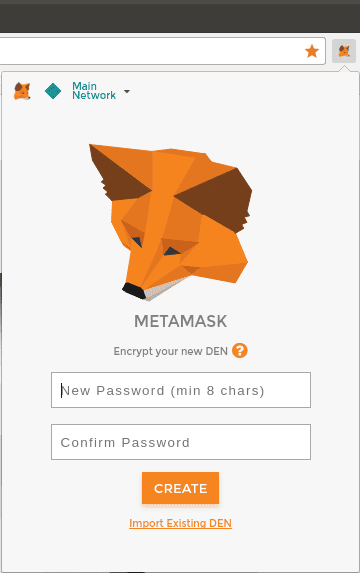
|
密碼控制對MetaMask的訪問，任何有權訪問你的瀏覽器的人無法使用它。 |
一旦你設置了密碼，MetaMask將為你生成一個錢包並向你顯示一個_助記詞備份_，由12個英文單詞組成。如果MetaMask或你的計算機出現問題，可以在任何兼容的錢包中使用這些詞來恢復對資金的訪問。你不需要通過密碼進行恢復。這12個字就足夠了。
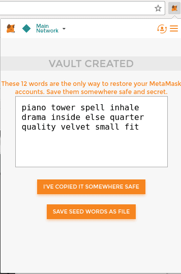
|
在紙上備份助記符（12個字），兩次。將兩份紙張備份存放在兩個單獨的安全位置，例如防火安全櫃，鎖定的抽屜或保險箱。將紙質備份視為你在Ethereum錢包中儲存的相同價值的現金。任何能夠訪問這些文字的人都可以訪問並竊取你的資金。 |
一旦確認你已安全儲存助記符，MetaMask將顯示你的以太坊帳戶詳細資訊：
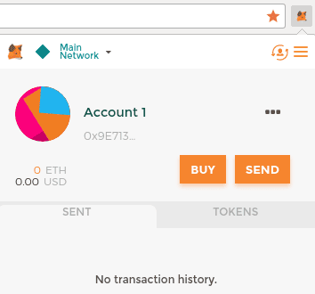
你的帳戶頁面會顯示你帳戶的名稱（預設情況下為“Account 1”），以太坊地址（範例中為0x9E713 …）以及彩色圖示，以幫助你將此帳戶與其他帳戶區分開來。在帳戶頁面的頂部，你可以看到你當前正在使用哪個以太坊網路（範例中的“主網路”）。
恭喜！你已經建立了你的第一個以太坊錢包！
2.6. 切換網路
正如你在MetaMask帳戶頁面上所看到的，你可以在多個以太坊網路中進行選擇。預設情況下，MetaMask將嘗試連接到“主網路”。其他選擇是公共測試網，你選擇的任何以太坊節點或在你自己的計算機上運行私有區塊鏈的節點（本地主機）：
- Main Ethereum Network
-
主要的，公開的以太坊區塊鏈。真正的ETH，真正的價值，真正的後果。
- Ropsten Test Network
-
以太坊公開測試區塊鏈和網路，使用工作證明共識（挖礦）。在這個網路上的ETH沒有價值。Ropsten的問題在於攻擊者鑄造了數以萬計的區塊，產生巨大的重組並將燃氣極限推到9B。當時需要一個新的公共測試網，但之後（2017年3月25日）Ropsten也復活了！
- Kovan Test Network
-
以太坊公開測試區塊鏈和網路，使用“Aura”協議進行權威證明（Proof-of-Authority）共識（聯合簽名）。在這個網路上的ETH沒有價值。該測試網路僅由“Parity”支持。其他以太坊客戶使用稍後提出的"Clique"協議作為權威證明。
- Rinkeby Test Network
-
以太坊公開測試區塊鏈和網路，使用“Clique”協議進行權威證明共識（聯合簽名）。在這個網路上的ETH沒有價值。
- Localhost 8545
-
連接到與瀏覽器在同一臺計算機上運行的節點。該節點可以是任何公共區塊鏈（主要或測試網路）或私人測試網路的一部分（參見[ganache]）。
- Custom RPC
-
允許你將MetaMask連接到任何具有geth兼容的遠程過程調用（RPC）接口的節點。該節點可以是任何公共或私有區塊鏈的一部分。
有關各種以太坊測試網以及如何在它們之間進行選擇的更多資訊，請參見 [testnets]。
|
你的MetaMask錢包在連接的所有網路上使用相同的私鑰和以太坊地址。但是，每個以太坊網路上的以太坊地址餘額將有所不同。例如，你的密鑰可以控制Ropsten上的以太和合約，但不能控制主網上的。 |
2.7. 獲得一些測試以太幣
我們的首要任務是給我們的錢包儲值。我們不會在主網上這樣做，因為真正的以太網需要花費金錢，處理它需要更多的經驗。現在，我們將使用一些testnet ether加載我們的錢包。
將MetaMask切換到_Ropsten測試網路_。然後點擊“Buy”，然後點擊“Ropsten Test Faucet”。MetaMask將打開一個新的網頁：
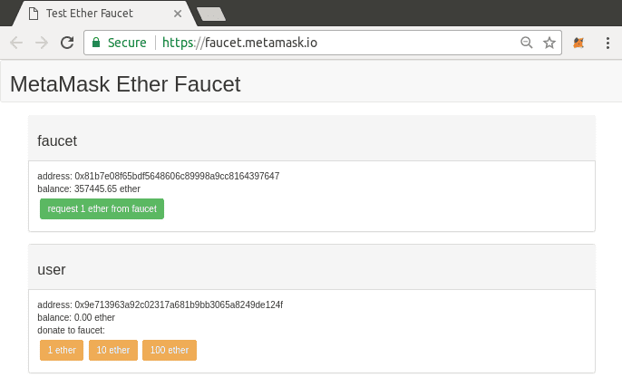
你可能會注意到該網頁已經包含你的MetaMask錢包的以太坊地址。MetaMask集成了支持以太坊的網頁（ 參見 [dapps]）與你的MetaMask錢包整合在一起。MetaMask可以在網頁上“查看”以太坊地址，例如，你可以向顯示以太坊地址的網上商店發送付款。如果網頁請求，MetaMask也可以使用自己的錢包地址填入網頁，作為收件人地址。在此頁面中，faucet應用程式要求MetaMask提供一個錢包地址以發送測試以太網。
按綠色"request 1 ether from faucet"按鈕。你會看到一個交易ID出現在頁面的下方。faucet應用程式創建了一個交易 - 付款給你。交易ID如下所示：
0x7c7ad5aaea6474adccf6f5c5d6abed11b70a350fbc6f9590109e099568090c57
幾秒鐘後，新交易將由Ropsten礦工開採，你的MetaMask錢包將顯示1 ETH的餘額。點擊交易ID，你的瀏覽器會將你帶到一個_block explorer_，該網站允許你查看和瀏覽區塊，地址和交易。MetaMask使用 etherscan.io 區塊瀏覽器，這是受歡迎的以太坊區塊瀏覽器之一。包含Ropsten Test Faucet支付的交易顯示在 Etherscan Ropsten Block Explorer 中。
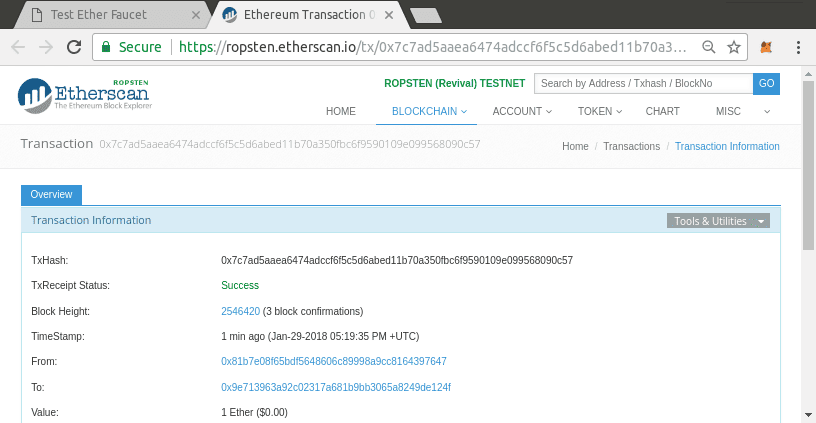
交易記錄在Ropsten區塊鏈中，任何人都可以隨時查看，只需搜索交易ID或訪問鏈接即可：
嘗試訪問該鏈接，或將交易雜湊值輸入到 ropsten.etherscan.io 網站中，親自查看。
2.8. 使用MetaMask發送ether
一旦我們從Ropsten Test Faucet接收到我們的第一個測試ether，我們將試著發送一些ether回到faucet。正如你在Ropsten Test Faucet頁面上看到的那樣，你可以選擇“donate”1個ETH。這個選項是可用的，所以一旦你完成了測試，你可以返回剩餘的測試ether，以便其他人可以使用它。儘管測試ether沒有價值，但有些人囤積測試ether，使其他人難以使用測試網路。囤積測試ether令人不悅！
幸運的是，我們不是測試ether的囤積者，我們希望練習發送ether。
點擊橙色的“1 ether”按鈕來告訴MetaMask創建支付Faucet 1 ether的交易。MetaMask將準備一個交易並彈出一個視窗，並顯示確認資訊：
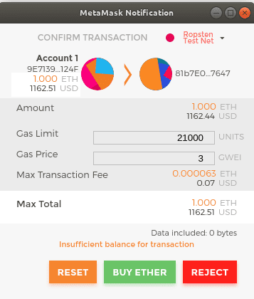
哎！你可能注意到你無法完成交易。MetaMask表示“交易餘額不足”。乍一看這可能會讓人困惑：我們有1個ETH，我們想要發送1個ETH，為什麼MetaMask說我們沒有足夠的資金？
答案是因為_gas_的成本。以太坊交易需要支付礦工收取的費用，以驗證交易。以太坊的費用以_gas_虛擬貨幣收取。作為交易的一部分，你使用ether支付gas。
|
測試網路也需要費用。如果沒有費用，測試網路的行為將與主網路不同，從而使其成為不適當的測試平臺。費用還可以保護測試網路免受拒絕服務攻擊和構造不良的合約（如無限迴圈），就像保護主網路一樣。 |
當你發送交易時，Metamask以3 GWEI（即3 gigawei）計算最近成功交易的平均gas價格。Wei是以太貨幣的最小的細分，正如我們在 以太幣單位 中所討論的那樣。發送基本交易的gas成本為21000個gas單位。因此，你花費的ETH的最大數量為3 * 21000 GWEI = 63000 GWEI = 0.000063 ETH。請注意，平均gas價格可能波動，因為它們主要由礦工決定。我們將在後面的章節中看到如何增加/減少gas限制，以確保你的交易在需要時優先處理。
這表明：1 ETH交易的成本是1.000063 ETH。MetaMask在顯示總數時會將此近似到1 ETH，但你需要的實際金額為1.000063 ETH，並且你只有1個ETH。點擊“Reject”取消此交易。
讓我們再來測試一下吧！再次點擊綠色的“request 1 ether from the faucet”按鈕，等待幾秒鐘。別擔心，faucet應該有足夠的ether，如果你要的話，會給你更多的東西。
一旦你有2 ETH的餘額，你可以再試一次。這次，當你點擊橙色的“1 ether”捐贈按鈕時，你有足夠的餘額來完成交易。MetaMask彈出付款視窗時點擊“Submit”。所有這一切之後，你應該看到0.999937 ETH的餘額，因為你使用0.000063 ETH的gas發送了1個ETH到faucet。
2.9. 探索地址的交易歷史
到目前為止，你已經成為使用MetaMask發送和接收測試ether的專家。你的錢包已收到至少兩次付款並至少發送了一次。讓我們看看所有這些交易，使用 ropsten.etherscan.io 區塊瀏覽器。你可以複製你的錢包地址並將其粘貼到瀏覽器的搜索框中，或者你可以讓MetaMask為你打開該頁面。在MetaMask中你的帳戶圖示旁邊，你會看到一個顯示三個點的按鈕。點擊它顯示與帳戶相關的選項菜單：
選擇 "View Account on Etherscan"，在瀏覽器中打開一個網頁，顯示你帳戶的交易記錄：
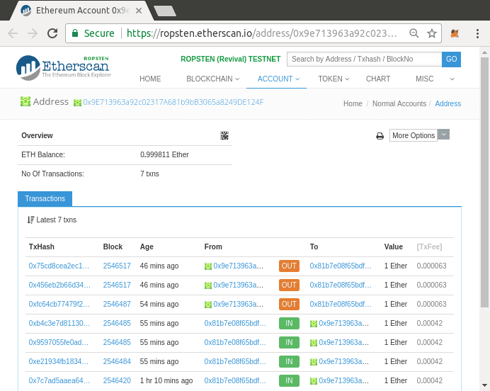
在這裡你可以看到你的以太坊地址的整個交易歷史。它顯示了Ropsten區塊鏈上記錄的所有交易，其中你的地址是交易的發件人或收件人。點擊其中幾項交易即可查看更多詳細資訊。
你可以瀏覽任何地址的交易歷史記錄。查看你是否可以瀏覽Ropsten Test Faucet地址的交易歷史記錄（提示：它是在你的地址中最早付款中列出的“發件人”地址）。你可以看到從faucet發送給你的和其他地址的測試ether。你看到的每筆交易都可能帶給你更多的地址和交易。不久之後，你將迷失在相互關聯的數據迷宮中。公共區塊鏈包含大量的資訊，所有這些都可以通過編程方式進行探索，我們將在未來的例子中看到。
2.10. 世界計算機 (World Computer) 介紹
你現在已經創建好一個錢包，也能傳送與接收 ether了，到目前為止，我們已經將以太坊視為一種密碼貨幣 (cryptocurrency)。但是以太坊的功能其實比這些多太多了。事實上，整個乙太坊是一個去中心化的世界計算機 (World Computer)，而密碼貨幣的功能則是從屬於以太坊的功能。一個執行於以太坊虛擬機器 (Ethereum Virtual Machine, EVM) 中的電腦程式，它稱之為智能合約，它就是這個世界計算機的電腦程式，當你執行這程式時，就是用乙太幣用來支付執行費用。
EVM 是一個全域單例 (global singleton) ，這意味著它的運作方式就好像它是一個全域的單一實體計算機，無處不在。以太坊網路上的每個節點運行 EVM 副本於本地，用以驗證合約執行，而以太坊區塊鏈上，記錄著這台世界計算機處理的交易以及智能合約上的狀態 (State) 之變化紀錄。更多更棒的細節我們可以在 以太坊虛擬機 這一章看到。
2.11. 外部擁有帳戶（EOAs）和合約
我們在 MetaMask 錢包中創建的帳戶類型稱為 Externally Owned Account（EOA） 。外部擁有帳戶是那些擁有私人密鑰的帳戶，它控制對資金或合約的訪問。現在，你可能猜測還有另一種帳戶，_合約_帳戶。合約帳戶由以太坊區塊鏈記錄，由EVM執行的軟體程式的邏輯所擁有（和控制）。
將來，所有以太坊錢包可能會作為以太坊合約運行，模糊了外部擁有帳戶和合約帳戶之間的區別。但是永遠保持的重要區別在於：人們通過EOA做出決定，而軟體通過合約做出決定。
合約有一個地址，就像EOAs（錢包）一樣。合約可以發送和接收ether，就像錢包一樣。當交易目的地是合約地址時，它會導致該合約在EVM中_運行_，並將交易作為其輸入。
除了ether之外，交易還可以包含_數據_，用於指示合約中要運行的特定方法以及傳遞給該方法的參數。通過這種方式，交易通過合約_調用_方法。最後，合約可以產生調用其他合約的交易，建立複雜的執行路徑。其中一個典型的用法是合約A調用合約B，以便在合約A的用戶之間保持共享狀態。
在接下來的幾節中，我們將編寫我們的第一份合約。然後，我們將使用MetaMask錢包和測試ether在Ropsten測試網上創建，資助，使用該合約。
2.12. 一個簡單的合約：一個 test ether faucet
以太坊有許多不同的高階語言，所有這些語言都可用於編寫合約並生成EVM Bytecode 。你可以閱讀 以太坊高階語言簡介 中許多最成功和有趣的內容。一種智能合約編程的主要高階語言：Solidity。本書的合著者Gavin Wood創建了Solidity，已經成為以太坊及以太坊外最廣泛使用的語言。我們將使用Solidity編寫我們的第一份合約。
作為我們的第一個例子，我們將編寫一個控制_faucet_的合約。我們已經使用了faucent在Ropsten測試網路上獲得測試ether。faucet是一件相對簡單的事情：它給任何地址發放ether，可以定期補充。你可以將faucet實現為由人類（或網路伺服器）控制的錢包，但我們將編寫一個實現faucet的Solidity合約：
1
2
3
4
5
6
7
8
9
10
11
12
13
14
15
16
// Our first contract is a faucet!
contract Faucet {
// Give out ether to anyone who asks
function withdraw(uint withdraw_amount) public {
// Limit withdrawal amount
require(withdraw_amount <= 100000000000000000);
// Send the amount to the address that requested it
msg.sender.transfer(withdraw_amount);
}
// Accept any incoming amount
function () public payable {}
這是一個非常簡單的合約，簡單到我們可以很容易實現它。這也是一個有*缺陷*的合約，顯示出一些不良做法和安全漏洞。在後面章節中我們的學習方式將使用審查各種缺陷的方式來進行。但現在，讓我們逐行看下這個合約作了些什麼以及如何作到的。你將發現 Solidity 與其它的程式語言相似，例如像 JavaScript, Java 或是 C++。
第一行程式是註解
// Version of Solidity compiler this program was written for
註解是讓人類閱讀的並且不包含於可執行的 EVM Bytecode 之中。我們通常會將註解放在程式碼之前來試著解釋該程式碼；有時也會放在同一行程式碼的後面，而作法是使用雙斜線 // 來作為註解作為開頭。註解從兩個正斜線 // 開始直到該行的結束都是註解內容，這些註解內容就如同空白行一樣是不會被執行的。
下一行程式碼, 是我們的_真正的_合約的開始：
contract Faucet {
這一行宣告了一個合約物件，類似於其他物件導向語言中的類別宣告，這裡的大括號所以定義的是一個範圍 (scope)，就如同許多其他編程語言中使用大括號的方式一樣，大括號（{}）間的所有程式構成了合約的定義。
接下來，我們宣告 faucet 合約的第一個函數：
function withdraw(uint withdraw_amount) public {
函數名為 withdraw，它接收一個無符號整數（uint）名為 withdraw_amount 的參數。它被宣告為 public 函數，意味著它可以被其他合約呼叫。函數定義在大括號之間。+withdraw+函數的第一個參數設置了取款限制：
require(withdraw_amount <= 100000000000000000);
它使用內建的 Solidity 函數 require 來測試前提條件，即 withdraw_amount 小於或等於 100,000,000,000,000,000 wei，它是 ether 的基本單位（參見 Ether Denominations and Unit Names），等於 0.1 ether。如果 withdraw 函數的 withdraw_amount 參數大於該數值，則此處的 require 函數將導致合約停止執行、失敗並且丟出例外 (exception) ，注意，在 Solidity 中的每一行程式敘述 (statement) 需要以分號作為結束。
這部分的合約程式是我們 faucet 的主要邏輯。它透過設定提款限額來控制合約的資金流出。這是一個非常簡單的控制例子，但卻可以讓你看到可編程區塊鏈的強大功能：一個控制貨幣的去中心化軟體。
接下來是實際的提款：
Next comes the actual withdrawal:
msg.sender.transfer(withdraw_amount);
這裡發生了一些有趣的事情。msg 物件是所有合約都取得的一個輸入。msg 物件代表的是促使該合約執行起來的那筆交易 (transaction)。而屬性 sender 是指此比交易發送者的地址；而它的函數 transfer 是一個內建函數，將此合約上的 ether 轉帳至該地址去。從後往前讀，意思就是把錢轉帳至該 msg 的傳送者 sender 去，也就是觸發該合約執行的交易發起者。transfer 只需要用到一個參數，該參數的傳入值即為 withdraw 函數中的 withdraw_amount 函數參數。
緊接著的一行是結束大括號，表示 withdraw 函數定義的結束。
下面我們又宣告了一個函數：
function () public payable {}
此函數是所謂的_“fallback”_或_default_函數，如果合約的交易沒有命名合約中任何已宣告的功能或任何功能，或者不包含數據，則觸發此函數。合約可以有一個這樣的預設功能（沒有名字），它通常是接收ether的那個。這就是為什麼它被定義為 public 和 payable 函數，這意味著它可以接受合約中的ether。除了大括號中的空白定義 {} 所指示的以外，它不會執行任何操作。如果我們進行一次向這個合約地址發送ether的交易，就好像它是一個錢包一樣，該函數將處理它。
在我們的預設函數下面是最後一個關閉大括號，它關閉了合約 faucet 的定義。就是這樣！
2.13. 編譯faucet合約
現在我們已經有了我們的第一個範例合約，我們需要使用Solidity編譯器將Solidity程式碼轉換為EVM字節程式碼，以便它可以由EVM執行。
Solidity編譯器是獨立的可執行檔案，作為不同框架的一部分，也捆綁在一個_Integrated Development Environment（IDE）_中。為了簡單起見，我們將使用一種更流行的IDE，稱為Remix。
使用你的Chrome瀏覽器（使用我們之前安裝的MetaMask錢包）導航到以下位置的Remix IDE：
當你第一次加載Remix時，它將以一個名為 ballot.sol 的範例合約開始。我們不需要這個，所以讓我們關閉它，點擊標籤邊的 x ：
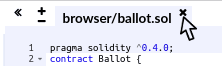
現在，點擊左側工具欄中的圓形加號，添加一個新選項卡，命名新檔案 Faucet.sol：
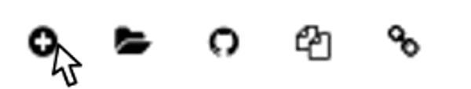
打開新選項卡後，複製並粘貼範例 Faucet.sol：
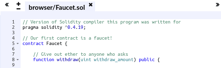
現在我們已將 Faucet.sol 合約加載到Remix IDE中，IDE將自動編譯程式碼。如果一切順利，你會看到一個綠色的方塊，右邊出現一個帶有“faucet”的綠色方塊，在Compile選項卡下，確認編譯成功：
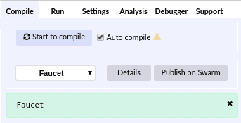
如果出現問題，最可能的問題是Remix IDE正在使用與+0.4.19+版本不同的Solidity編譯器。在這種情況下，我們的編譯指示將阻止+Faucet.sol+編譯。要更改編譯器版本，請轉到“Settings”選項卡，並重試。
Solidity編譯器現在已將我們的+ Faucet.sol +編譯為EVM Bytecode 。如果你好奇， Bytecode 如下所示：
PUSH1 0x60 PUSH1 0x40 MSTORE CALLVALUE ISZERO PUSH2 0xF JUMPI PUSH1 0x0 DUP1 REVERT JUMPDEST PUSH1 0xE5 DUP1 PUSH2 0x1D PUSH1 0x0 CODECOPY PUSH1 0x0 RETURN STOP PUSH1 0x60 PUSH1 0x40 MSTORE PUSH1 0x4 CALLDATASIZE LT PUSH1 0x3F JUMPI PUSH1 0x0 CALLDATALOAD PUSH29 0x100000000000000000000000000000000000000000000000000000000 SWAP1 DIV PUSH4 0xFFFFFFFF AND DUP1 PUSH4 0x2E1A7D4D EQ PUSH1 0x41 JUMPI JUMPDEST STOP JUMPDEST CALLVALUE ISZERO PUSH1 0x4B JUMPI PUSH1 0x0 DUP1 REVERT JUMPDEST PUSH1 0x5F PUSH1 0x4 DUP1 DUP1 CALLDATALOAD SWAP1 PUSH1 0x20 ADD SWAP1 SWAP2 SWAP1 POP POP PUSH1 0x61 JUMP JUMPDEST STOP JUMPDEST PUSH8 0x16345785D8A0000 DUP2 GT ISZERO ISZERO ISZERO PUSH1 0x77 JUMPI PUSH1 0x0 DUP1 REVERT JUMPDEST CALLER PUSH20 0xFFFFFFFFFFFFFFFFFFFFFFFFFFFFFFFFFFFFFFFF AND PUSH2 0x8FC DUP3 SWAP1 DUP2 ISZERO MUL SWAP1 PUSH1 0x40 MLOAD PUSH1 0x0 PUSH1 0x40 MLOAD DUP1 DUP4 SUB DUP2 DUP6 DUP9 DUP9 CALL SWAP4 POP POP POP POP ISZERO ISZERO PUSH1 0xB6 JUMPI PUSH1 0x0 DUP1 REVERT JUMPDEST POP JUMP STOP LOG1 PUSH6 0x627A7A723058 KECCAK256 PUSH9 0x13D1EA839A4438EF75 GASLIMIT CALLVALUE LOG4 0x5f PUSH24 0x7541F409787592C988A079407FB28B4AD000290000000000
你是不是很高興使用像Solidity這樣的高階語言，而不是直接在EVM Bytecode 中編程？我也是！
2.14. 在區塊鏈上創建合約
我們有一個合約，已經將它編譯成 Bytecode 。現在，我們需要在以太坊區塊鏈上“登記”合約。我們將使用Ropsten測試網來測試我們的合約，所以這就是我們想要記錄的區塊鏈。
在區塊鏈上註冊合約涉及創建一個特殊交易，其目標是地址0x0000000000000000000000000000000000000000，也稱為_zero address_。零地址是一個特殊的地址，告訴以太坊區塊鏈你想註冊一個合約。幸運的是，Remix IDE將為你處理所有這些交易並將交易發送給MetaMask。
首先，切換到“Run”選項卡，並在“Environment”下拉列表框中選擇“Injected Web3”。這將Remix IDE連接到MetaMask錢包，並通過MetaMask連接到Ropsten測試網路。一旦你這樣做，你可以在Evironment下看到“Ropsten”。另外，在Account選擇框中，它顯示你的錢包的地址：
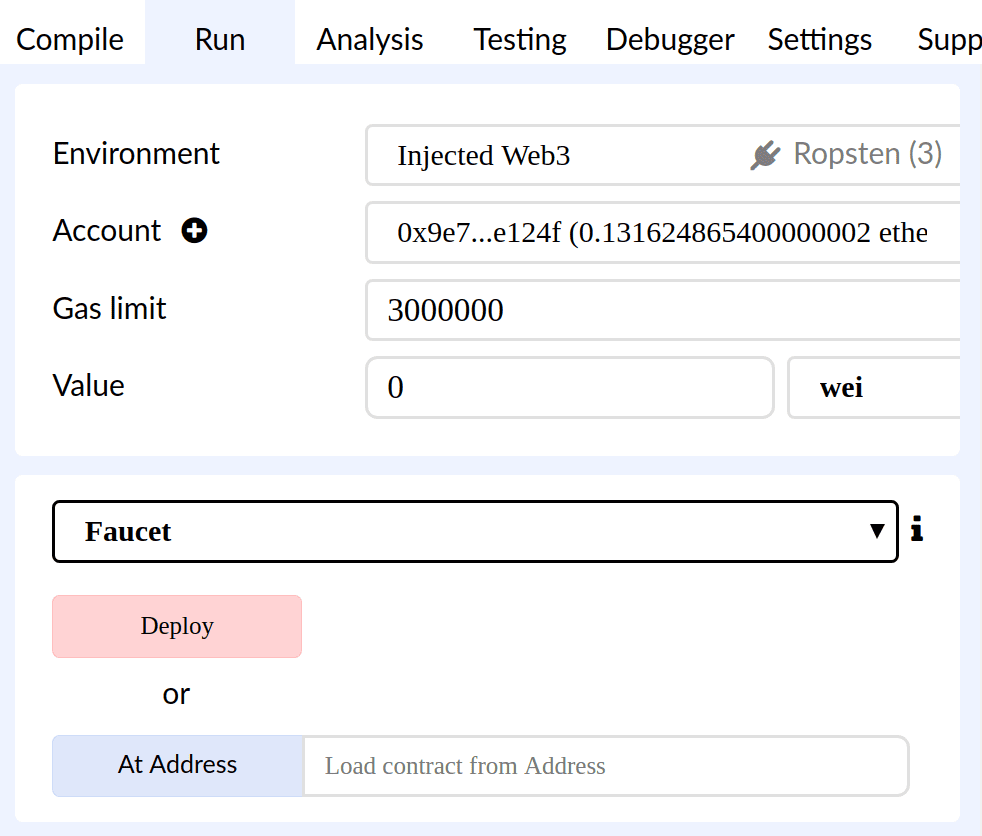
在剛剛確認的“Run”設置下方，是Faucet合約，隨時可以創建。點擊“Create”或“Deploy“按鈕：
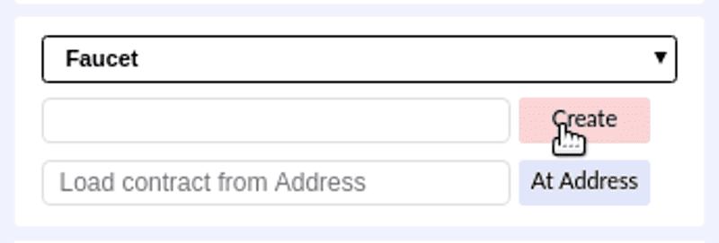
Remix IDE將構建特殊的“creation“交易，MetaMask會要求你批准它。從MetaMask中可以看到，合約創建交易沒有ether，但它有258個字節（編譯的合約），並且會消耗10個Gwei。點擊“Submit”來批准：
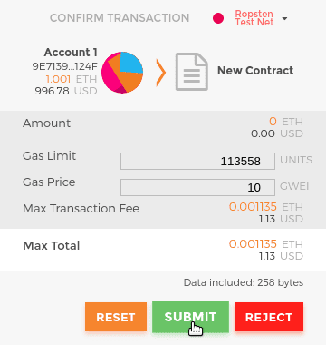
現在，等待：合約在Ropsten上開採需要大約15到30秒的時間。Remix IDE似乎不會做太多，耐心等待。
合約創建後，它會顯示在“運行”選項卡的底部：
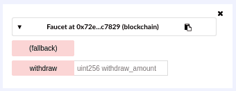
請注意，Faucet合約現在有自己的地址：Remix將其顯示為 Faucet at 0x72e....c7829。右邊的小剪貼板符號允許你將合約地址複製到剪貼板中。我們將在下一節中使用它。
2.15. 與合約交互
讓我們回顧一下我們迄今為止學到的東西：以太坊合約是控制貨幣的程式，運行在名為EVM的虛擬機內。它們是由一個特殊的交易創建的，該交易提交它們的 Bytecode 以記錄在區塊鏈中。一旦他們在區塊鏈上創建，他們就擁有一個以太坊地址，就像錢包一樣。只要有人將交易發送到合約地址，它就會導致合約在EVM中運行，並將交易作為其輸入。發送到合約地址的交易可能包含以太網或數據或兩者都有。如果它們含有ether，則將其“存入”合約餘額。如果它們包含數據，則數據可以在合約中指定一個命名函數並調用它，並將參數傳遞給該函數。
2.15.1. 在區塊瀏覽器中查看合約地址
現在，我們在區塊鏈中登記了一份合約，我們可以看到它有一個以太坊地址。讓我們在 ropsten.etherscan.io 區塊瀏覽器中查看它，看看合約是什麼樣子。通過點擊名稱旁邊的剪貼板圖示來複制合約的地址。
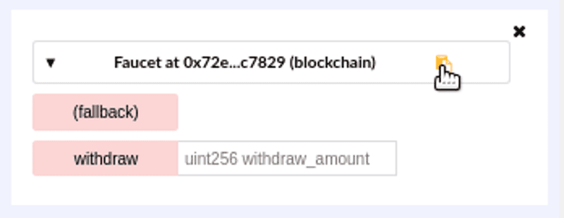
保持Remix打開在標籤中，我們稍後會再回來。現在，將瀏覽器導航至 ropsten.etherscan.io 並將地址粘貼到搜索框中。你應該看到合約的以太坊地址記錄：
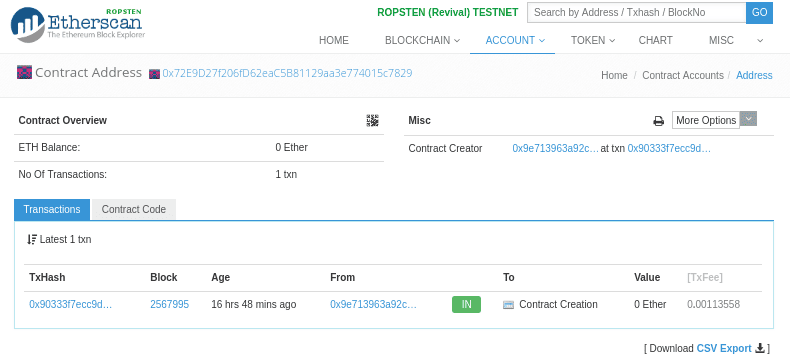
2.15.2. 為合約提供資金
現在，合約其歷史上只有一筆交易：合約創建交易。如你所見，合約也沒有ether（零餘額）。這是因為我們沒有在創建交易中向合約發送任何提示，儘管我們可以提供。
讓我們向合約發一些ether！你仍然應該在剪貼板中擁有合約的地址（如果沒有，請從Remix再次複製）。打開MetaMask，然後向它發送1個ether，就像任何其他以太坊地址一樣：
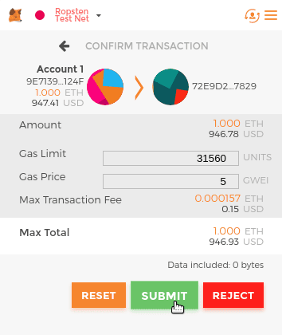
一分鐘後，如果你刷新etherscan區塊瀏覽器，它會向合約地址顯示另一個交易，並更新1 ether的餘額。
還記得我們的 Faucet.sol 程式碼中的未命名預設公共付費功能？它看起來像這樣：
function () public payable {}
當你將交易發送到合約地址時，沒有指定要調用哪個函數的數據，它將調用預設函數。由於我們將它宣告為+payable+，因此它接受1 ether並存入合約賬戶餘額中。你的交易導致合約在EVM中運行，更新其餘額。我們資助了我們的faucet！
2.15.3. 從我們的合約中提取
接下來，讓我們從faucet中提取一些資金。要提取，我們必須構造一個調用 withdraw 函數並將 withdraw_amount 參數傳遞給它的交易。為了保持現在簡單，Remix將為我們構建該交易，並且MetaMask將提交它以供我們批准。
返回到Remix選項卡並在“Run”選項卡下查看合約。你應該看到一個標記為 withdraw 的紅色框，其中帶有一個標記為 uint256 withdraw_amount：
這是合約的Remix界面。它允許我們構造調用合約中定義的函數的交易。我們將輸入 withdraw_amount 並點擊 withdraw 按鈕以生成交易。
首先，我們來看看 withdraw_amount。我們要試著提取0.1 ether，這是我們合約允許的最高金額。請記住，以太坊中的所有貨幣值都以 wei + 計價，而我們的 +withdraw 函數預期 withdraw_amount 也以 wei 計價。我們想要的數量是0.1 ether，這是 100000000000000000 wei（1後面跟著17個零）。
|
由於JavaScript的限制，Remix無法處理1017這樣大的數字。相反，我們用雙引號括起來，讓Remix以字串的形式接收它，並將它作為 BigNumber 進行操作。如果我們不把它放在引號中，那麼Remix IDE將無法處理它並顯示“Error encoding arguments：Error：Assertion failed” 。 譯者注：翻譯此書時，已經支持直接輸入數字 |
輸入“100000000000000000”（帶引號）到 withdraw_amount 框中，然後單擊 withdraw 按鈕：
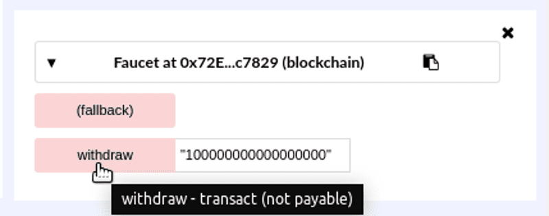
MetaMask將彈出一個交易視窗供你批准。點擊“Submit”將你的提款通知發送至合約：
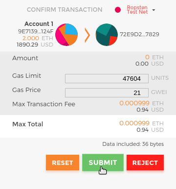
等一下，然後重新加載 etherscan 區塊瀏覽器以查看在ether合約地址歷史記錄中反映的交易：
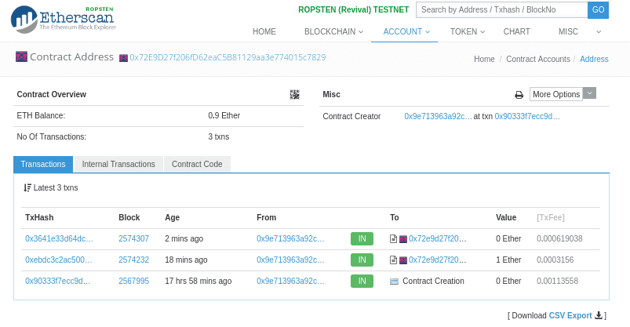
我們現在看到一個新的交易，其中合約地址是目標地址，0 ether。合約餘額已經改變，現在是0.9 ether，因為它按要求給了我們0.1 ether。但是我們在合約地址歷史記錄中看不到“OUT”交易。
提款的交易在哪裡？合約的地址歷史記錄頁面中出現了一個名為“內部交易”的新選項卡。由於0.1 ether傳輸源於合約程式碼，因此它是一個內部交易（也稱為_message_）。點擊“內部交易”標籤查看：
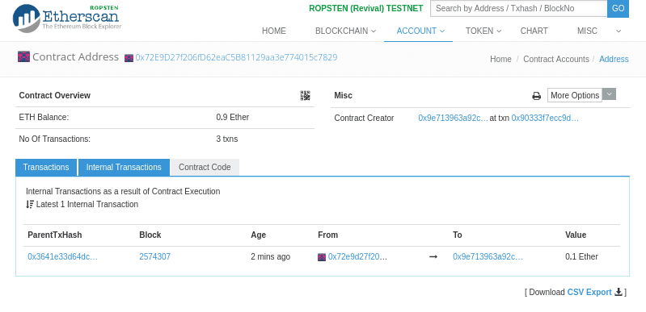
這個“內部交易”是由合約在這行程式碼中發送的（Faucet.sol 的 withdraw 方法）
msg.sender.transfer(withdraw_amount);
回顧一下：我們從MetaMask錢包發送了一個包含數據指令的交易，以 0.1 ether 的+withdraw_amount+ 參數調用 withdraw 函數。該交易導致合約在EVM內部運行。當EVM運行faucet合約的 withdraw 功能時，首先它調用+require+函數並驗證我們的金額小於或等於最大允許提款0.1 ether。然後它調用 transfer 函數向我們發送ether。運行 transfer 函數生成一個內部交易，從合約的餘額中將0.1以太幣存入我們的錢包地址。這就是 etherscan 中“內部交易”標籤中顯示的內容。
2.16. 總結
本章中，我們使用MetaMask創建了一個錢包，並且使用Ropsten測試網路上的一個faucet為它儲值。我們收到了發送到錢包以太坊地址的ether。然後我們把ether發送到faucet的以太坊地址。
接下來，我們在Solidity中寫了一個faucet合約。使用Remix IDE將合約編譯為EVM Bytecode 。使用Remix進行交易，並在Ropsten區塊鏈上登記faucet合約。一旦登記，faucet合約有一個以太坊地址，我們發送一些ether。最後，我們構建了一個交易來調用 withdraw 函數，併成功請求了0.1 ether。該合約檢查了我們的請求，發送給我們0.1 ether並進行內部交易。
可能看起來不多，但我們剛剛成功地與控制去中心化世界計算機上資金的軟體進行了交互。
我們將在“智能合約”中做更多的智能合約編程，並瞭解最佳實踐和安全考慮。
3. 以太坊客戶端
以太坊客戶端 (Ethereum client) 是一隻軟體應用程式，它依以太坊協定標準實現，並且在點對點網路 (peer-to-pper network) 上與其它以太坊客戶端溝通。不同的以太坊客戶端只要遵守這些協定及通訊，就可以互相操作。雖然不同的以太坊客戶端由不同的團隊或不同的程式語言來實現，而它們說的是相同的語言並且遵照相同規定；因此，在同一個以太坊網路下，這些客戶端可以彼此操作與互動。
以太坊是一個開放原始碼 (open source) 專案，原始碼可在開源授權（LGPL v3.0）許可下使用，可免費下載並用於任何目的。開放原始碼意味著不僅僅是免費使用。這也意味著以太坊由開源社群的志願者所開發，任何人都可以修改。越多人關注此專案，它的程式碼就越可以被信賴。
一個名為"黃皮書 (Yellow Paper)" 的正式標準定義了以太坊。(請見以太坊黃皮書，連結：https://ethereum.github.io/yellowpaper/paper.pdf)
這與比特幣相反，比特幣沒有任何正式的定義。比特幣的“規範”是比特幣核心的參考實現，以太坊的規範定義在一篇結合了英文和數學的（正式的）規範的論文中。 這個正式的規範，除了各種以太坊改進建議之外，還定義了以太坊客戶端的標準行為。隨著對以太坊的重大改變，黃皮書會定期更新。
作為以太坊明確的正式規範的結果，以太坊客戶端有許多獨立開發的，可互操作的軟體實現。以太坊在網路上運行的實現方式比任何其他區塊鏈都多。
4. 以太坊網路
現今存在各式各樣基於乙太坊的網路，它們雖然大程度符合以太坊黃皮書 (Ethereum Yellow Paper) 的正式規範。但它們之間並不一定能互相操作。
這些基於以太坊的網路有：Ethereum、Ethereum Classic、Ella，Expanse、Ubiq、Musicoin 等等。雖然它們幾乎相容於乙太坊協議(Ethereum protocol)，但這些網路通常各自有一些特別功能及屬性，而乙太坊用戶端 (Ethereum client) 軟體為了支持這些不同網路，需要為各別網路進行小修改才有辦法達成。因此，並非每個版本的乙太坊用戶端 (Ethereum client) 軟體總能夠支持所有基於以太坊的網路。
目前，乙太坊協議 (Ethereum protocol) 有六種實作，以不同的程式語言編寫完成：Go 語言編寫的 Geth、Rust 語言編寫的 parity、C++ 編寫的 cpp-ethereum、Python 編寫的 pyethereum 、Scala 編寫的 mantis 以及 Java 編寫的harmony。
在本節中，我們將看看兩個最常見的乙太坊客戶端，Geth 和 Parity。我們將學習如何使用它們的客戶端去啟動節點(node)，並且探索它們的命令列(command-line options) 操作方式以及應用程式編程介面（API）。
4.1. 我應該運行一個全節點 (full node) 嗎？
區塊鏈的健康、彈性以及抗審查性，需要依靠大量分佈於世界各地並且獨立運作的全節點 (full node) 。每個全節點會協助新節點取得區塊資料，這麼作不僅能幫助營運的新節點取得受到公信力及獨立性驗證過的合約及交易資料，也能讓新節點能自行完整的營運。
但是，運行完整的節點會導致硬體資源和帶寬的巨大成本。完整的節點必須下載超過80GB的數據（截至2018年4月;取決於客戶端）並將其儲存在本地硬碟上。隨著新的交易和區塊的添加，這種數據負擔每天都會迅速增加。完整節點的硬體要求 中有關於此主題的更多資訊。
在以太坊開發中，運行在活躍網路（主網）上的完整節點不是必需的。你可以使用_testnet_節點（它儲存小型公共測試區塊鏈的副本），或本地私有區塊鏈（參見 [ganache]），或服務提供商提供的基於雲的以太坊客戶端（參見 [infura]），做幾乎任何事。
你還可以選擇運行輕量級客戶端，該客戶端不會儲存區塊鏈的本地副本或驗證塊和交易。這些客戶端提供錢包的功能，並可以創建和廣播交易。
輕量級客戶端可用於連接到現有網路，例如你自己的完整節點，公共區塊鏈，公開或許可的（PoA）測試網或私有本地區塊鏈。在實踐中，你可能會使用輕量級客戶端，如MetaMask、Emerald Wallet、MyEtherWallet或MyCrypto作為在所有不同節點選項之間切換的便捷方式。
儘管存在一些差異，術語“輕量級客戶端”和“錢包”可以互換使用。通常，輕量級客戶端除了提供錢包的交易功能外，還提供API（如web3js API）。
不要將以太坊中輕量級錢包的概念與比特幣中簡化支付驗證（SPV）客戶端的概念混淆。SPV客戶驗證區塊頭並使用merkle證明來驗證區塊鏈中是否包含交易。以太坊輕量級客戶端通常不驗證區塊頭或交易。他們完全信任由第三方運營的完整客戶端，讓他們通過RPC訪問區塊鏈。
4.1.1. 完整節點的優點和缺點
選擇運行一個完整的節點可以幫助各種基於以太坊的網路，但也會給你帶來一些溫和的或適中的成本。我們來看看一些優點和缺點。
優點：
-
支持基於以太坊的網路的彈性和抗審查。
-
權威性驗證所有交易。
-
可以與公共區塊鏈上的任何合約進行交互（無需中介）。
-
如有必要，可以離線查詢（只讀）區塊鏈狀態（帳戶、合約等）。
-
可以在不讓第三方知道你正在讀取的資訊的情況下查詢區塊鏈。
-
可以直接將自己的合約部署到公共區塊鏈中（無需中介）。
缺點：
-
需要大量且不斷增長的硬體和帶寬資源。
-
需要幾個小時或幾天才能完成第一次初始下載的同步。
-
必須維護，升級並保持聯機才能保持同步。
4.1.2. 公共測試網的優點和缺點
無論你是否選擇運行完整節點，你可能都需要運行公共testnet節點。我們來看看使用公共測試網的一些優點和缺點。
優點：
-
測試網路節點需要同步並儲存少得多的數據，根據網路大小約為10GB（截至2018年4月）。
-
測試網路節點可以在幾個小時內完全同步。
-
部署合約或進行交易需要測試ether，它沒有價值，可以從幾個“faucet”免費獲得。
-
Testnets是與其他許多用戶和合約共享的區塊鏈，運行“live”。
缺點：
-
你不能在測試網上使用“真實”的錢，它以測試ether運轉。
-
因此，你無法針對真正對手進行安全性測試，因為沒有任何風險。
-
公共區塊鏈的某些方面無法在testnet上真實地測試。例如，交易費雖然是發送交易所必需的，但由於gas是免費的，因此不需要在測試網上考慮。測試網不會像公共網路那樣經歷網路擁塞。
4.1.3. 本地實例（TestRPC）的優點和缺點
對於許多測試目的，最好的選擇是使用 testrpc 節點啟動一個實例私有區塊鏈。TestRPC創建一個本地私有區塊鏈，你可以與之交互，而無需任何其他參與者。它分享了公共測試網的許多優點和缺點，但也有一些差異。
優點：
-
不同步，硬碟上幾乎沒有數據。你自己挖掘第一塊。
-
無需測試ether，你可以將挖礦獎勵“獎勵”給自己，用於測試。
-
沒有其他用戶，只有你。
-
沒有其他合約，只有你啟動後部署的合約。
缺點：
-
沒有其他用戶意味著它不像公共區塊鏈一樣。沒有交易空間或交易排序的競爭。
-
除你之外沒有礦工意味著採礦更具可預測性，因此你無法測試公開區塊鏈上發生的一些情況。
-
沒有其他合約意味著你必須部署所有你想測試的內容，包括依賴項和合約庫。
-
你不能重新創建一些公共合約及其地址來測試一些場景（例如DAO合約）。
4.2. 運行以太坊客戶端
如果你有時間和資源，你應該嘗試運行一個完整的節點，即使只是為了更多地瞭解這個過程。在接下來的幾節中，我們將下載，編譯和運行以太坊客戶Go-Ethereum（Geth）和Parity。這需要熟悉在作業系統上使用命令行界面。無論你選擇將它們作為完整節點，作為testnet節點還是作為本地私有區塊鏈的客戶端運行，都值得安裝這些客戶端。
4.2.1. 完整節點的硬體要求
在我們開始之前，你應該確保你有一臺具有足夠資源的計算機來運行以太坊完整節點。你將需要至少80GB的硬碟空間來儲存以太坊區塊鏈的完整副本。如果你還想在以太坊測試網上運行完整節點，則至少需要額外的15GB。下載80GB的區塊鏈數據可能需要很長時間，因此建議你使用快速的Internet連接。
同步以太坊區塊鏈是非常密集的輸入輸出（I / O）。最好有一個固態硬碟（SSD）。如果你有機械硬碟驅動器（HDD），則至少需要8GB的RAM能用作緩存。否則，你可能會發現你的系統速度太慢，無法完全保持同步。
最低要求：
-
2核心CPU。
-
固態硬碟（SSD），至少80GB可用空間。
-
最小4GB記憶體，如果你使用HDD而不是SSD，則至少8GB。
-
8+ MBit/sec下載速度的互聯網。
這些是同步基於以太坊的區塊鏈的完整（但已修剪）副本的最低要求。
在編寫本文時（2018年4月），Parity程式碼庫的資源往往更輕，如果你使用有限的硬體運行，那麼使用Parity可能會看到最好的結果。
如果你想在合理的時間內同步並儲存我們在本書中討論的所有開發工具，庫，客戶端和區塊鏈，你將需要一臺功能更強大的計算機。
推薦規格：
-
4個以上核心的快速CPU。
-
16GB+ RAM。
-
至少有500GB可用空間的快速SSD。
-
25+ MBit/sec下載速度的互聯網。
很難預測區塊鏈的大小會增加多快，以及何時需要更多的硬碟空間，所以建議你在開始同步之前檢查區塊鏈的最新大小。
4.2.2. 構建和運行客戶端（節點）的軟體要求
本節介紹Geth和Parity客戶端軟體。並假設你正在使用類Unix的命令行環境。這些範例顯示了在運行Bash shell（命令行執行環境）的Ubuntu Linux作業系統上輸入的輸出和命令。
通常，每個區塊鏈都有自己的Geth版本，而Parity支持多個以太坊區塊鏈（Ethereum、Ethereum Classic、Ellaism、Expanse、Musicoin）。
在我們開始之前，我們可能需要滿足一些先決條件。如果你從未在你當前使用的計算機上進行任何軟體開發，則可能需要安裝一些基本工具。對於以下範例，你需要安裝 git，源程式碼管理系統; Golang，Go程式語言和標準庫; 和Rust，一種系統程式語言。
可以按照以下說明安裝Git： https://git-scm.com/
可以按照以下說明安裝Go： https://golang.org/
|
Geth的要求各不相同，但如果你堅持使用Go版本1.10或更高版本，你應該能夠編譯你想要的任何版本的Geth。當然，你應該總是參考你選擇的Geth的文件。 如果安裝在你的作業系統上的Golang版本或者從系統的軟體包管理器中獲得的版本遠遠早於1.10，請將其刪除並從golang.org安裝最新版本。 |
Rust可以按照以下說明進行安裝： https://www.rustup.rs/
|
Parity需要Rust版本1.24或更高版本。 |
Parity還需要一些軟體庫，例如OpenSSL和libudev。要在Linux（Debian）兼容系統上安裝，請執行以下操作：
$ sudo apt-get install openssl libssl-dev libudev-dev
對於其他作業系統，請使用作業系統的軟體包管理器或遵循Wiki說明（https://github.com/paritytech/parity/wiki/Setup）來安裝所需的庫。
現在你已經安裝了 git、golang、rust 和必要的庫，讓我們開始工作吧！
4.2.3. Parity
Parity是完整節點以太坊客戶端和DApp瀏覽器的實現。Parity是由Rust從頭開始編寫的，系統程式語言是為了構建一個模塊化，安全和可擴展的以太坊客戶端。Parity由英國公司Parity Tech開發，並以GPLv3開源許可證發佈。
|
披露：本書的作者之一Gavin Wood是Parity Tech的創始人，並撰寫了大部分Parity客戶端。Parity代表了約28%的以太坊客戶端。 |
要安裝Parity，你可以使用Rust包管理器+cargo+或從GitHub下載源程式碼。軟體包管理器也下載源程式碼，所以兩種選擇之間沒有太大區別。在下一節中，我們將向你展示如何自己下載和編譯Parity。
安裝 Parity
Parity Wiki提供了在不同環境和容器中構建Parity的說明：
我們將從源程式碼構建奇偶校驗。這假定你已經使用 rustup 安裝了Rust（見 構建和運行客戶端（節點）的軟體要求）。
首先，讓我們從GitHub獲取源程式碼：
$ git clone https://github.com/paritytech/parity
現在，我們轉到+parity+目錄並使用+cargo+構建可執行檔案：
$ cd parity $ cargo build
如果一切順利，你應該看到如下所示的內容：
$ cargo build
Updating git repository `https://github.com/paritytech/js-precompiled.git`
Downloading log v0.3.7
Downloading isatty v0.1.1
Downloading regex v0.2.1
[...]
Compiling parity-ipfs-api v1.7.0
Compiling parity-rpc v1.7.0
Compiling parity-rpc-client v1.4.0
Compiling rpc-cli v1.4.0 (file:///home/aantonop/Dev/parity/rpc_cli)
Finished dev [unoptimized + debuginfo] target(s) in 479.12 secs
$
讓我們通過調用+--version+選項來運行+parity+以查看它是否已安裝：
$ parity --version Parity version Parity/v1.7.0-unstable-02edc95-20170623/x86_64-linux-gnu/rustc1.18.0 Copyright 2015, 2016, 2017 Parity Technologies (UK) Ltd License GPLv3+: GNU GPL version 3 or later <http://gnu.org/licenses/gpl.html>. This is free software: you are free to change and redistribute it. There is NO WARRANTY, to the extent permitted by law. By Wood/Paronyan/Kotewicz/Drwięga/Volf Habermeier/Czaban/Greeff/Gotchac/Redmann $
現在已安裝了Parity，我們可以同步區塊鏈並開始使用一些基本的命令行選項。
4.2.4. Go-Ethereum (Geth)
Geth是Go語言實現的，它被積極開發並被視為以太坊客戶端的“官方”實現。通常情況下，每個基於以太坊的區塊鏈都會有自己的Geth實現。如果你正在運行Geth，那麼你需要確保使用以下某個儲存庫鏈接為區塊鏈獲取正確的版本。
版本庫鏈接
Ethereum Classic: https://github.com/ethereumproject/go-ethereum
Musicoin: https://github.com/Musicoin/go-musicoin
|
你也可以跳過這些說明併為你選擇的平臺安裝預編譯的二進制檔案。預編譯的版本安裝起來更容易，可以在上面版本庫的“版本”部分找到。但是，你可以通過自己下載和編譯軟體來了解更多資訊。 |
複製儲存庫
我們的第一步是複製git倉庫，以獲得源程式碼的副本。
要創建此儲存庫的本地副本，請使用 git 命令，如下所示，在你的主目錄或用於開發的任何目錄下：
$ git clone <Repository Link>
在將儲存庫複製到本地系統時，你應該看到進度報告：
Cloning into 'go-ethereum'... remote: Counting objects: 62587, done. remote: Compressing objects: 100% (26/26), done. remote: Total 62587 (delta 10), reused 13 (delta 4), pack-reused 62557 Receiving objects: 100% (62587/62587), 84.51 MiB | 1.40 MiB/s, done. Resolving deltas: 100% (41554/41554), done. Checking connectivity... done.
現在我們有了Geth的本地副本，我們可以為我們的平臺編譯一個可執行檔案。
從源程式碼構建Geth
要構建Geth，切換到下載源程式碼的目錄並使用 make 命令：
$ cd go-ethereum $ make geth
如果一切順利，你將看到Go編譯器構建每個組件，直到它生成+ geth +可執行檔案：
build/env.sh go run build/ci.go install ./cmd/geth >>> /usr/local/go/bin/go install -ldflags -X main.gitCommit=58a1e13e6dd7f52a1d5e67bee47d23fd6cfdee5c -v ./cmd/geth github.com/ethereum/go-ethereum/common/hexutil github.com/ethereum/go-ethereum/common/math github.com/ethereum/go-ethereum/crypto/sha3 github.com/ethereum/go-ethereum/rlp github.com/ethereum/go-ethereum/crypto/secp256k1 github.com/ethereum/go-ethereum/common [...] github.com/ethereum/go-ethereum/cmd/utils github.com/ethereum/go-ethereum/cmd/geth Done building. Run "build/bin/geth" to launch geth. $
讓我們在停止並更改它的配置之前運行 geth 以確保它工作：
$ ./build/bin/geth version Geth Version: 1.6.6-unstable Git Commit: 58a1e13e6dd7f52a1d5e67bee47d23fd6cfdee5c Architecture: amd64 Protocol Versions: [63 62] Network Id: 1 Go Version: go1.8.3 Operating System: linux GOPATH=/usr/local/src/gocode/ GOROOT=/usr/local/go
你的 geth version 命令可能會稍微不同，但你應該看到類似上面的版本報告。
最後，我們可能希望將 geth 命令複製到作業系統的應用程式目錄（或命令行執行路徑上的目錄）。在Linux上，我們使用以下命令：
$ sudo cp ./build/bin/geth /usr/local/bin
先不要開始運行 geth，因為它會以“緩慢的方式”開始將區塊鏈同步，這將花費太長的時間（幾周）。基於以太坊的區塊鏈首次同步 解釋了以太坊區塊鏈的初始同步帶來的挑戰。
4.3. 基於以太坊的區塊鏈首次同步
通常，在同步以太坊區塊鏈時，你的客戶端將下載並驗證自創世區塊以來的每個區塊和每個交易。
雖然可以通過這種方式完整同步區塊鏈，但同步會花費很長時間並且對計算資源要求較高（RAM更多，儲存速度更快）。
許多基於以太坊的區塊鏈在2016年底遭受了拒絕服務（DoS）攻擊。受此攻擊影響的區塊鏈在進行完全同步時傾向於緩慢同步。
例如，在以太坊中，新客戶端在到達區塊2,283,397之前會進展迅速。該塊在2016年9月18日開採，標誌著DoS攻擊的開始。從這個區塊到2,700,031區塊（2016年11月26日），交易驗證變得非常緩慢，記憶體密集並且I/O密集。這導致每塊的驗證時間超過1分鐘。以太坊使用硬分叉實施了一系列升級，以解決在拒絕服務中被利用的底層漏洞。這些升級還通過刪除由垃圾郵件交易創建的大約2000萬個空帳戶來清理區塊鏈。<<[1]>>
如果你正在使用完整驗證進行同步，則客戶端會放慢速度並可能需要幾天或更長時間才能驗證受此DoS攻擊影響的任何塊。
大多數以太坊客戶端包括一個選項，可以執行“快速”同步，跳過交易的完整驗證，同步到區塊鏈的頂端後，再恢復完整驗證。
對於Geth，啟用快速同步的選項通常稱為 --fast。你可能需要參考你選擇的以太坊鏈的具體說明。
對於Parity，較舊版本（<1.6），該選項為 --warp，較新版本（>=1.6）上預設啟用（無需設置配置選項）。
|
Geth和Parity只能在空的區塊資料庫啟動時進行快速同步。如果你已經開始沒有“快速”模式的同步，則Geth和Parity無法切換。刪除區塊鏈數據目錄並從頭開始“快速”同步比繼續完整驗證同步更快。刪除區塊鏈數據時請小心不要刪除任何錢包！ |
4.3.1. JSON-RPC接口
以太坊客戶端提供應用程式編程接口（API）和一組遠程過程調用（RPC）命令，這些命令被編碼為JavaScript物件表示法（JSON）。這被稱為_JSON-RPC API_。本質上，JSON-RPC API是一個接口，允許我們將使用以太坊客戶端的程式作為_gateway_編寫到以太坊網路和區塊鏈中。
通常，RPC接口作為連接埠+8545+上的HTTP服務提供。出於安全原因，預設情況下，它僅受限於從本地主機（你自己的計算機的IP地址為+127.0.0.1+）接受連接。
要訪問JSON-RPC API，可以使用專門的庫，用你選擇的程式語言編寫，它提供與每個可用的RPC命令相對應的“樁（stub）”函數調用。或者，你可以手動構建HTTP請求併發送/接收JSON編碼的請求。你甚至可以使用通用命令行HTTP客戶端（如 curl ）來調用RPC接口。讓我們嘗試一下（確保你已經配置並運行了Geth）：
$ curl -X POST -H "Content-Type: application/json" --data \
'{"jsonrpc":"2.0","method":"web3_clientVersion","params":[],"id":1}' \
http://localhost:8545
{"jsonrpc":"2.0","id":1,
"result":"Geth/v1.8.0-unstable-02aeb3d7/linux-amd64/go1.8.3"}
在這個例子中，我們使用 curl 建立一個HTTP連接來訪問 http://localhost:8545。我們已經運行了 geth，它將JSON-RPC API作為連接埠8545上的HTTP服務提供。我們指示 curl 使用HTTP POST 命令並將內容標識為 Content-Type: application/json。最後，我們傳遞一個JSON編碼的請求作為我們HTTP請求的+data+部分。我們的大多數命令行只是設置 curl 來正確地建立HTTP連接。有趣的部分是我們發佈的實際的JSON-RPC命令：
{"jsonrpc":"2.0","method":"web3_clientVersion","params":[],"id":4192}
JSON-RPC請求根據JSON-RPC 2.0規範格式化，你可以在這裡看到： http://www.jsonrpc.org/specification
每個請求包含4個元素：
- jsonrpc
-
JSON-RPC協議的版本。這_必須_是“2.0”。
- method
-
要調用的方法的名稱。
- params
-
一個結構化值，用於保存在調用方法期間要使用的參數值。該元素可以省略。
- id
-
由客戶端建立的識別碼，必須包含字串，數字或NULL值（如果包含）。如果包含，伺服器必須在Response物件中使用相同的值進行回覆。該元素用於關聯兩個物件之間的上下文。
|
id 參數主要用於在單個JSON-RPC調用中進行多個請求的情況，這種做法稱為_批處理_。批處理用於避免每個請求的新HTTP和TCP連接的開銷。例如，在以太坊環境中，如果我們想要在一個HTTP連接中查詢數千個交易，我們將使用批處理。批處理時，為每個請求設置不同的 id，然後將其與來自JSON-RPC伺服器的每個響應中的+id+進行匹配。實現這個最簡單的方法是維護一個計數器併為每個請求增加值。 |
The response we receive is:
{"jsonrpc":"2.0","id":4192,
"result":"Geth/v1.8.0-unstable-02aeb3d7/linux-amd64/go1.8.3"}
這告訴我們JSON-RPC API由Geth客戶端版本1.8.0提供服務。
讓我們嘗試一些更有趣的事情。在下一個例子中，我們要求JSON-RPC API獲取當前的gas價格，以wei為單位：
$ curl -X POST -H "Content-Type: application/json" --data \
'{"jsonrpc":"2.0","method":"eth_gasPrice","params":[],"id":4213}' \
http://localhost:8545
{"jsonrpc":"2.0","id":4213,"result":"0x430e23400"}
響應 0x430e23400 告訴我們，當前的gas價格是1.8wei（gigawei或十億wei）。
Parity的Geth兼容模式
有一個特殊的“Geth兼容模式”，它提供了一個與+geth+相同的JSON-RPC API。要在Geth兼容模式下運行奇偶校驗，請使用+--geth+開關：
$ parity --geth
4.4. 輕量級以太坊客戶
輕量級客戶端提供了完整客戶端的一部分功能。他們不儲存完整的以太坊區塊鏈，因此它們的啟動速度更快，所需的數據儲存量也更少。
輕量級客戶端提供以下一項或多項功能：
-
管理錢包中的私鑰和以太坊地址。
-
創建、簽署和廣播交易。
-
使用數據與智能合約進行交互。
-
瀏覽並與DApps交互。
-
提供到區塊瀏覽器等外部服務的鏈接。
-
轉換ether單位並從外部來源查詢匯率。
-
將web3實例作為JavaScript物件注入到Web瀏覽器中。
-
使用另一個客戶端提供/注入瀏覽器的web3實例。
-
在本地或遠程以太網節點上訪問RPC服務。
一些輕量級客戶端（例如行動（智慧型手機）錢包）僅提供基本的錢包功能。其他輕量級客戶端是完全開發的DApp瀏覽器。輕量級客戶端通常提供完整節點以太坊客戶端的某些功能，而無需同步以太坊區塊鏈的本地副本。
我們來看看一些最受歡迎的輕量級客戶端及其提供的功能。
4.5. 行動（智慧型手機）錢包
所有的行動錢包都是輕量級的客戶端，因為智慧型手機沒有足夠的資源來運行完整的以太坊客戶端。
流行的行動錢包包括Jaxx，Status和Trust Wallet。我們列舉這些作為流行手機錢包的例子（不是對這些錢包的安全或功能的認可）。
- Jaxx
-
基於BIP39助記種子的多幣種手機錢包，支持比特幣、萊特幣、以太坊、以太坊經典、ZCash、各種ERC20代幣和許多其他貨幣。Jaxx可在Android、iOS上作為瀏覽器插件錢包使用，桌面錢包可用於各種作業系統。可以在https://jaxx.io找到它。
- Status
-
行動錢包和DApp瀏覽器，支持各種代幣和流行的DApps。適用於iOS和Android智慧型手機。可以在https://status.im找到它。
- Trust Wallet
-
支持ERC20和ERC223代幣的行動以太坊，以太坊經典錢包。Trust Wallet適用於iOS和Android智慧型手機。可以在https://trustwalletapp.com/找到它。
- Cipher Browser
-
全功能的啟用以太坊的行動DApp瀏覽器和錢包。允許與以太坊應用程式和代幣集成。可以在https://www.cipherbrowser.com找到它
4.6. 瀏覽器錢包
各種錢包和DApp瀏覽器可用作瀏覽器的插件或擴展，例如Chrome和Firefox：運行在瀏覽器內的輕量級客戶端。
一些比較流行的是MetaMask、Jaxx和MyEtherWallet/MyCrypto。
4.6.1. MetaMask
MetaMask 在 [intro] 中介紹，它是一個多功能的基於瀏覽器的錢包，RPC客戶端和基本合約瀏覽器。它可用於Chrome、Firefox、Opera和Brave Browser。在以下位置找到MetaMask：
乍看，MetaMask是一款基於瀏覽器的錢包。但是，與其他瀏覽器錢包不同，MetaMask將web3實例注入瀏覽器，作為連接到各種以太坊區塊鏈（例如mainnet、Ropsten testnet、Kovan testnet、本地RPC節點等）的RPC客戶端。能夠注入web3實例並充當外部RPC服務的入口，使MetaMask成為開發人員和用戶非常強大的工具。例如，它可以與MyEtherWallet或MyCrypto相結合，充當這些工具的web3提供者和RPC網關。
4.6.3. MyEtherWallet (MEW)
MyEtherWallet是一款基於瀏覽器的JavaScript輕量級客戶端，提供：
-
在JavaScript中運行的軟體錢包。
-
通往諸如Trezor和Ledger等流行硬體錢包的橋樑。
-
一個web3界面，可以連接到另一個客戶端注入的web3實例（例如MetaMask）。
-
可以連接到以太坊完整客戶端的RPC客戶端。
-
給定合約地址和應用程式二進制接口（ABI），可以與智能合約交互的基本接口。
MyEtherWallet對於測試和作為硬體錢包界面非常有用。它不應該被用作主要的軟體錢包，因為它在瀏覽器環境中會受到威脅，並且不是一個安全的密鑰儲存系統。
訪問MyEtherWallet和其他基於瀏覽器的JavaScript錢包時，你必須非常小心，因為它們經常是釣魚攻擊的目標。始終使用書籤而不是搜索引擎或鏈接訪問正確的網址。MyEtherWallet可以在以下網址找到：
4.6.4. MyCrypto
就在本書第一版出版之前，MyEtherWallet項目分為由兩個獨立開發團隊主導的競爭實現：一個“分叉”，就像在開源開發中所稱的那樣。這兩個項目被稱為MyEtherWallet（原始品牌）和MyCrypto。在拆分時，MyCrypto提供與MyEtherWallet相同的功能。由於兩個開發團隊採取不同的目標和優先事項，這兩個項目可能會出現分歧。
與MyEtherWallet一樣，在瀏覽器中訪問MyCrypto時必須非常小心。始終使用書籤，或者非常小心地輸入URL（然後將其書籤以備將來使用）。
MyCrypto可以在以下網址找到：
4.6.5. Mist
Mist是以太坊基金會創建的第一個啟用以太坊的瀏覽器。它還包含一個基於瀏覽器的錢包，這是有史以來第一個實現ERC20代幣標準的（Fabian Vogelsteller，ERC20的作者也是Mist的主要開發人員）。Mist也是第一個引入camelCase校驗和的軟體包（EIP-155，參見 [eip-155] ）。Mist運行一個完整的節點，並提供完整的DApp瀏覽器，支持基於Swarm的儲存和ENS地址。可以在以下網址找到：
References
-
[[[1]]] EIP-161: http://eips.ethereum.org/EIPS/eip-161 == 以太坊測試網（Testnets）
4.7. 什麼是測試網？
測試網路（簡稱testnet）用於模擬以太網主網的行為。有一些公開的測試網路可以替代以太坊區塊鏈。這些網路上的貨幣毫無價值，但它們仍然很有用，因為合約和協議變更的功能可以在不中斷以太網主網或使用真實貨幣的情況下進行測試。當主網（簡稱mainnet）即將包含對以太坊協議的任何重大改變時，其測試主要在這些測試網路上完成。這些測試網路也被大量開發人員用於在部署到主網之前測試應用程式。
4.8. 使用 Testnets
你可以連接到公共可用的測試網路或創建你自己的私人測試網路。首先，讓我們使用公共測試網來更簡單地起步。要使用公共測試網路，需要一些測試網路以及到該網路的連接。對於testnet ether，使用“faucet”，faucet緩慢地分配測試ether，向任何詢問的人“滴送”少量ether。要連接到一個測試網路，你需要一個以太坊客戶端，完整的客戶端，比如geth，或者完整的客戶端的網關，比如MetaMask。
4.9. 獲取測試以太網
由於測試網不以真正的金錢運作，礦工保護測試網的動機很弱。因此，測試網必須保護自己免受濫用和攻擊。因此，為這些測試網創建了水龍頭，以受控的方式向開發人員分發免費的測試ether（大多數faucet每隔幾秒左右"滴注"ether）。這種以太網的受控分配可防止用戶濫用鏈，因為提供有限的ether供應可防止他們向鏈中寫入過多內容或執行太多交易。另外，一些testnets已經實施了認證證明（Proof of Authentication）方案，使用faucet需要具有適當社交媒體網站的認證的憑證。
4.10. 連接到Testnets
4.10.1. Metamask
Metamask完全支持Ropsten，Kovan和Rinkeby測試網，但也可以連接到其他測試網和本地網。在Metamask中，只需單擊“main network”下拉菜單，即可切換網路。MetaMask還提供了一個“buy”測試ether的選項，該選項將你引導至你可以請求免費測試以太網的faucet。如果使用Ropsten測試網，則可以從Ropsten測試faucet服務中獲取ether。你可以從此頁面訪問此faucet。它需要Metamask擴展才能工作。https://faucet.metamask.io/
Infura
當MetaMask連接到測試網路時，它使用Infura服務提供商來訪問JSON-RPC接口。Infura誕生的目的是為ConsenSys內部項目提供穩定可靠的RPC訪問。除了JSON-RPC API之外，Infura還提供REST（表述性狀態轉移）API、IPFS（星際檔案系統，即去中心化儲存）API和Websockets（即流式傳輸）API。
Infura為Ethereum主網，Ropsten、Kovan、Rinkeby和INFURAnet（用於Infura的定製測試網路）提供網關API。
要通過MetaMask使用Infura進行較低級別的活動，你不需要帳戶。要直接使用API，你需要註冊一個帳戶並使用Infura提供的API密鑰。
有關Infura的更多資訊，請訪問：
4.10.2. Remix集成開發環境（IDE）
Remix IDE可用於在主網和測試網上部署和交互智能合約，包括Ropsten、Rinkeby和Kovan（Web3提供者使用Infura地址和API密鑰或通過Injected Web3使用MetaMask中選擇的網路）和Ganache（ Web3提供端點http://localhost:8545）
4.10.3. Geth
Geth本身支持Ropsten和Rinkeby網路。要連接到Ropsten網路，請使用命令行參數：
geth --testnet
這將開始同步Ropsten區塊鏈。名為 testnet 的新目錄將在你的主Ethereum數據目錄中創建。一個 keystore 目錄將在 testnet 內部創建，並將儲存你的testnet帳戶的私鑰。在撰寫本文時，Ropsten區塊鏈比以太坊主區塊鏈小得多：大約14GB的數據。由於測試網需要的資源較少，因此首先在測試網上設置並測試你的程式碼會更簡單。
與testnet的交互與mainnet類似。你可以使用控制台啟動Geth testnet，方法是運行：
geth --testnet console
這使得執行操作成為可能，例如開設新賬戶、檢查餘額、檢查其他以太坊地址的餘額等。 在Geth控制台之外運行時，只需將`--testnet`參數添加到命令行指令中，就可以執行類似於在主網上執行的操作。作為列舉所有可用的testnet帳戶及其地址的範例，請運行：
geth --testnet account list
|
雖然小得多，但測試網仍需要一些時間才能完全同步。 |
你可以通過在geth交互式控制台中運行以下命令來檢查geth是否已完成同步測試網路：
eth.getBlock("latest").number
一旦你的testnet節點完全同步，這應該返回一個非0的數字。你可以將該編號與已知的testnet區塊瀏覽器中的最新區塊進行比較，例如https://ropsten.etherscan.io/
同樣，要連接到Rinkeby測試網路，請使用命令行參數：
geth --rinkeby
4.10.4. Parity
Parity客戶端支持Ropsten和Kovan測試網路。你可以用+chain+參數選擇你要連接的網路。例如，要同步Ropsten測試網路：
parity --chain ropsten
同樣，要同步Kovan測試網路，請使用：
parity --chain kovan
5. 深入以太坊Testnets
在這個階段你可能會想：“我明白我為什麼要使用測試網路，但為什麼會有這麼多呢？”
5.1. 工作量證明（挖礦）Proof-of-Work (Mining) 與 權威證明（聯合簽名）Proof-of-Authority (Federated Signing)
5.2. Morden（原始測試網）
5.3. Ropsten
如果你想開始在Ropsten網路上測試合約，有幾個faucet可以供給你Ropsten的ether。如果faucet不起作用，請嘗試不同的faucet。
-
http://faucet.ropsten.be:3001/ 這個faucet提供了應該排隊接收測試以太的地址的可能性。
-
bitfwd Ropsten Faucet https://faucet.bitfwd.xyz/。
-
Kyber Network Ropsten Faucet https://faucet.kyber.network/。
-
MetaMask Ropsten Faucet https://faucet.metamask.io/
-
Ropsten Testnet Mining Pool http://pool.ropsten.ethereum.org/
-
Etherscan Ropsten Pool https://ropsten.etherscan.io/
5.4. Rinkeby
Rinkeby水龍頭位於https://faucet.rinkeby.io/。 要請求測試ether，有必要在Twitter，Google Plus或Facebook上發佈公開資訊。https://www.rinkeby.io/ https://rinkeby.etherscan.io/
5.5. Kovan
Kovan testnet支持各種方法來請求測試ether。 更多資訊可以在 https://github.com/kovan-testnet/faucet/blob/master/README.md 找到。
6. 以太坊經典Testnets
6.1. Morden
以太坊經典目前運行著Morden測試網的一個變體，與以太坊經典活躍網路保持功能相同。你可以通過gastracker RPC或者為`geth`或`parity`提供一個標誌來連接它.
Faucet: http://testnet.epool.io/
Gastracker RPC: https://web3.gastracker.io/morden
Block Explorer: http://mordenexplorer.ethertrack.io/home
Geth flag: geth --chain=morden
Parity flag: parity --chain=classic-testnet
6.2. 以太坊測試網的歷史
Olympic, Morden to Ropsten, Kovan, Rinkeby
Olympic testnet (Network ID: 0) 是Frontier首個公共測試網（簡稱Ethereum 0.9）。它於2015年初推出，2015年中期被Morden取代時棄用。
Ethereum’s Morden testnet (Network ID: 2) 與Frontier一起發佈，從2015年7月開始運行，直到2016年11月不再使用。雖然任何使用以太坊的人都可以創建測試網，但Morden是第一個“官方”公共測試網，取代了Olympic測試網。由於臃腫區塊鏈的長同步時間以及Geth和Parity客戶端之間的共識問題，測試網路重新啟動並重新生成為Ropsten。
Ropsten (Network ID: 3) 是一個針對Homestead的公共跨客戶端測試網，於2016年晚些時候推出，並作為公共測試網順利運行至2017年2月底。根據Ethereum的核心開發人員PéterSzilágyi的說法，二月的時候，“惡意行為者決定濫用低PoW，並逐步將gas限制提高到90億（從普通的470萬），發送巨大交易損害了整個網路”。Ropsten在2017年3月被恢復。https://github.com/ethereum/ropsten
Kovan (Network ID: 42) 是由Parity的權威證明（PoA）共識演算法驅動的Homestead的公共Parity測試網路。該測試網不受垃圾郵件攻擊的影響，因為ether供應由可信方控制。這些值得信賴的各方是在Ethereum上積極開發的公司。 儘管看起來這應該是以太坊測試網問題的解決方案，但在以太坊社區內似乎存在關於Kovan測試網的共識問題。https://github.com/kovan-testnet/proposal
Rinkeby (Network ID: 4) 是由Ethereum團隊於2017年4月開始的Homestead發佈的Geth測試網路，並使用PoA共識協議。以斯德哥爾摩的地鐵站命名，它幾乎不受垃圾郵件攻擊的影響（因為以太網供應由受信任方控制）。請參閱EIP 225：https://github.com/ethereum/EIPs/issues/225
6.3. 工作量證明（挖礦）Proof-of-Work (Mining) 與 權威證明（聯合簽名）Proof-of-Authority (Federated Signing)
Proof-of-Work 是一種協議，必須執行挖礦（昂貴的計算機計算）以在區塊鏈（分佈式賬本）上創建新的區塊（去信任的交易）。 缺點：能源消耗。集中的雜湊算力與集中的採礦農場，不是真正的分佈式。挖掘新塊體所需的大量計算能力對環境有影響。
Proof-of-Authority 是一種協議，它只將造幣的負載分配給授權和可信的簽名者，他們可以根據自己的判斷並隨時以發幣頻率分發新的區塊。https://github.com/ethereum/EIPs/issues/225 優點：具有最顯赫的身份的區塊鏈參與者通過演算法選擇來驗證塊來交付交易。
6.4. 運行本地測試網
6.4.1. Ganache: 以太坊開發的個人區塊鏈
你可以使用Ganache部署合約，開發應用程式並運行測試。它可用作Windows，Mac和Linux的桌面應用程式。
6.4.2. Ganache CLI: Ganache 作為命令行工具。
這個工具以前稱為“ethereumJS TestRPC”。
$ npm install -g ganache-cli
讓我們開始以太坊區塊鏈協議的節點模擬。 * []檢查`--networkId`和`--port`flag values是否與truffle.js中的配置相匹配 * []檢查`--gasLimit`flag values是否與https://ethstats.net上顯示的最新主網gas極限（即8000000 gas）相匹配，以避免不必要地遇到`gas’異常。請注意，4000000000的“--gasPrice”代表4 gwei的gas價格。 * []可以輸入一個`--mnemonic’flag values來恢復以前的高清錢包和相關地址
$ ganache-cli \ --networkId=3 \ --port="8545" \ --verbose \ --gasLimit=8000000 \ --gasPrice=4000000000;
7. 密鑰、地址
以太坊的基礎技術之一是 密碼學 cryptography，它是數學的一個分支，廣泛用於計算機安全。密碼學在希臘文中的意思是“祕密寫作”，但密碼學的科學不僅僅包含祕密寫作，它被稱為加密。加密也可以用來檢驗證明 (prove) 祕密中的知識之正確性而不洩露該祕密（數位簽章），或者證明數據的真實性（數字指紋）。這些類型的密碼學證明是以太坊和大多數區塊鏈系統的關鍵數學工具，廣泛用於以太坊應用。諷刺的是，加密並不是以太坊的重要組成部分，因為它的通信和交易數據沒有加密，也不需要加密以保護系統。在本章中，我們將以密鑰和地址的形式介紹一些以太坊用來控制資金所有權的密碼學。
7.1. 簡介
以太坊有兩種不同類型的帳戶，可以擁有和控制ether：外部擁有帳戶（EOA）和_合同_。在本節中，我們將研究使用密碼學來確定外部擁有帳戶（即私人密鑰）對ether的所有權。
EOAs中以太的所有權通過 數字密鑰 digital keys，以太坊地址_和_數位簽章 建立 。數字密鑰實際上並不儲存在區塊鏈中或在以太坊網路上傳輸，而是由用戶創建並儲存在檔案或稱為_錢包_的簡單資料庫中。用戶錢包中的數字密鑰完全獨立於以太坊協議，可以由用戶的錢包軟體生成和管理，無需參考區塊鏈或訪問互聯網。數字密鑰可實現以太坊的許多有趣特性，包括去中心化的信任和控制以及所有權證明。
以太坊交易需要將有效的數位簽章包含在區塊鏈中，該簽名只能使用密鑰生成；因此，任何擁有該密鑰副本的人都可以控制ether。以太坊交易中的數位簽章證明了資金的真正所有者。
數字密鑰成對組成，密鑰和公鑰。將公鑰視為類似於銀行帳號，私鑰類似於私密PIN，用於控制帳戶。以太坊的用戶很少看到這些數字密鑰。在大多數情況下，它們儲存在錢包檔案內並由以太坊錢包軟體管理。
在以太坊交易的付款部分中，預期收款人由_以太坊地址_表示，該地址與支票上的收款人名稱相同（即“付款給誰”）。在大多數情況下，以太坊地址是從公鑰生成並對應的。但是，並非所有以太坊地址都代表公鑰。他們也可以代表合同，我們將在 [contracts] 中看到。以太坊地址是用戶常會看到的唯一密鑰表示，因為這是他們需要與世界分享的部分。
首先，我們將介紹密碼學並解釋以太坊使用的數學。接下來，我們將看看密鑰是如何生成，儲存和管理的。最後，我們將回顧用於表示私鑰和公鑰以及地址的各種編碼格式。
7.2. 公鑰密碼技術和密碼貨幣
公鑰密碼技術是現代資訊安全的核心概念。首先由Martin Hellman，Whitfield Diffie和Ralph Merkle在20世紀70年代公開發明的，這是一個巨大的突破，它激起了公眾對密碼學領域的廣泛興趣。在70年代以前，強大的密碼學知識在政府的控制下，很少有公開的研究，直到公鑰密碼技術研究的公開發表。
公鑰密碼系統使用唯一的密鑰來保護資訊。這些獨特的密鑰基於具有獨特屬性的數學函數：它們很容易在一個方向上計算，但很難在相反方向上計算。基於這些數學函數，密碼學能夠創建數字密鑰和不可偽造的數位簽章，這些簽名由數學定律保證。
例如，計算兩個大質數的乘積是微不足道的。但是給定兩個大質數的乘積，很難找到這兩個質數（稱為_素因式分解_問題）。假設我提供數字6895601並告訴你它是兩個質數的乘積。找到這兩個質數要比讓它們相乘生產6895601要困難得多。
如果你知道一些祕密資訊，這些數學函數可以很容易地被反轉。在我們上面的例子中，如果我告訴你一個主質數是1931，你可以簡單地用一個簡單的除法找到另一個：6895601/1931 = 3571。這樣的函數被稱為_trapdoor函數_因為給定一個祕密資訊，你可以採取一個快捷方式，使得反轉該函數很簡單。
在密碼學中有用的另一類數學函數基於橢圓曲線上的算術運算。在橢圓曲線算術中，乘以模數是簡單的，但是除法是不可能的（一個被稱為_離散對數_的問題）。橢圓曲線密碼術在現代計算機系統中被廣泛使用，並且是以太坊（和其他密碼貨幣）數字密鑰和數位簽章的基礎。
|
更多關於密碼學和現代密碼學中使用的數學函數： Trapdoor函數： https://en.wikipedia.org/wiki/Trapdoor_function 橢圓曲線密碼學： https：//en.wikipedia.org/wiki/Elliptic_curve_cryptography |
在以太坊，我們使用公鑰加密技術來創建一個密鑰對，以控制對ether的訪問，並允許我們對合同進行身份驗證。密鑰對由私鑰和唯一公鑰組成，並且被認為是“一對兒”，因為公鑰是從私鑰中派生出來的。公鑰用於接收資金，私鑰用於創建數位簽章來簽署交易以支付資金。數位簽章也可用於驗證合同的所有者或用戶，我們將在 << contract_authentication>> 中看到。
公鑰和私鑰之間存在數學關係，允許私鑰用於在消息上生成簽名。該簽名可以在不公開私鑰的情況下使用公鑰進行驗證。
當使用ether時，當前所有者在交易中呈現她的公鑰和簽名（每次不同，但是使用相同的私鑰創建）。通過公鑰和簽名，以太坊系統中的每個人都可以獨立驗證並接受交易的有效性，從而確認在轉移ether的人擁有他們。
|
在大多數錢包實現中，為了方便起見，私鑰和公鑰一起儲存為_key pair_。但是，公鑰可以由私鑰進行簡單計算，因此只儲存私鑰也是可以的。 |
7.3. 私鑰
私鑰只是一個隨機選取的數字。私有密鑰的所有權和控制權是用戶控制與相應以太坊地址相關聯的所有資金的基礎，也是對該地址的合同的訪問權授權。通過證明交易中使用的資金的所有權，私鑰用於創建花費ether所需的簽名。私鑰在任何時候都必須保密，因為向第三方透露密鑰相當於讓他們控制以太和由該密鑰保證的合同。私鑰還必須備份並防止意外丟失。如果它丟失了，無法恢復，它保護的資金也將永遠丟失。
|
以太坊私鑰只是一個數字。你可以使用硬幣，鉛筆和紙隨機挑選你的私鑰：投擲硬幣256次，得到可以在以太坊錢包中使用的隨機二進制數字作為私鑰。然後可以從私鑰生成公鑰和地址。 |
7.4. 從隨機數生成私鑰
生成密鑰的第一步也是最重要的一步是找到一個安全的熵源或隨機源。創建以太坊私鑰基本上與“選擇1到2256之間的數字”相同。只要不可預測和不可重複，用於選擇該數字的確切方法並不重要。以太坊軟體使用底層作業系統的隨機數生成器生成256位熵（隨機性）。通常，作業系統隨機數生成器是由一個人為的隨機源進行初始化的，這就是為什麼可能會要求你將鼠標左右搖擺幾秒鐘，或者按下鍵盤上的隨機鍵。
更確切地說，可能的私鑰範圍略小於2256。在以太坊中，私鑰可以是+1+和+n-1+之間的任何數字，其中n是定義為使用的橢圓曲線的階數的常數（n = 1.158*1077，略小於2256）（參見橢圓曲線密碼學解釋）。為了創建這樣的密鑰，我們隨機選擇一個256位數字並檢查它是否小於+n-1+。在編程方面，這通常是通過將從密碼學安全的隨機源收集的更大的隨機比特串提供給256位雜湊演算法（如Keccak-256或SHA256）（參見 [cryptographic_hash_algorithm]），產生一個256位數字。如果結果小於+n-1+，我們有一個合適的私鑰。否則，我們只需再次嘗試使用另一個隨機數。
|
不要編寫自己的程式碼來創建隨機數或使用你的程式語言提供的“簡單”隨機數發生器。使用密碼學安全的偽隨機數字發生器（CSPRNG）和來自足夠熵源的種子。研究你選擇的隨機數生成器庫的文件，以確保其是密碼學安全的。正確實施CSPRNG對於密鑰的安全至關重要。 |
以下是以十六進制格式顯示的隨機生成的私鑰（k）（256位，顯示為64個十六進制數字，每個4位）：
f8f8a2f43c8376ccb0871305060d7b27b0554d2cc72bccf41b2705608452f315
|
以太坊的私人密鑰空間的大小（2256）是一個難以置信的大數目。十進制大約是1077。可見宇宙估計含有1080原子。 |
7.5. 公鑰
以太坊公鑰是一個橢圓曲線上的_點_ point，意思是它是一組滿足橢圓曲線方程的X和Y座標。
簡單來說，以太坊公鑰是兩個數字，並聯在一起。這些數字是通過一次單向的計算從私鑰生成的。這意味著，如果你擁有私鑰，則計算公鑰是微不足道的。但是你不能從公鑰中計算私鑰。
MATH即將發生！不要驚慌。如果你發現難以閱讀前一段，則可以跳過接下來的幾節。有很多工具和庫會為你做數學。
公鑰使用橢圓曲線乘法和私鑰計算，這是不可逆的：K = k * G，其中_k_是私鑰，G_是一個稱為_generator point_的常數點，_K_是結果公鑰。如果你知道_K，那麼稱為“尋找離散對數”的逆運算就像嘗試所有可能的_k_值一樣困難，也就是蠻力搜索。
簡單地說：橢圓曲線上的算術不同於“常規”整數算術。點（G）可以乘以整數（k）以產生另一點（K）。但是沒有_除法_這樣的東西，所以不可能簡單地用公共密鑰K除以點G來計算私鑰k。這是公鑰密碼技術和密碼貨幣中描述的單向數學函數。
|
橢圓曲線乘法是密碼學家稱之為“單向”函數的一種函數：在一個方向（乘法）很容易完成，而在相反方向（除法）不可能完成。私鑰的所有者可以很容易地創建公鑰，然後與世界共享，因為知道沒有人能夠反轉該函數並從公鑰計算私鑰。這種數學技巧成為證明以太坊資金所有權和合同控制權的不可偽造和安全數位簽章的基礎。 |
在我們演示如何從私鑰生成公鑰之前，我們先來看一下橢圓曲線加密。
7.6. 橢圓曲線密碼學解釋
橢圓曲線密碼術是一種基於離散對數問題的非對稱或公鑰密碼體系，如橢圓曲線上的加法和乘法運算。
A visualization of an elliptic curve 是橢圓曲線的一個例子，類似於以太坊使用的曲線。
|
以太坊使用與比特幣完全相同的橢圓曲線，稱為 secp256k1 。這使得重新使用比特幣的許多橢圓曲線庫和工具成為可能。 |
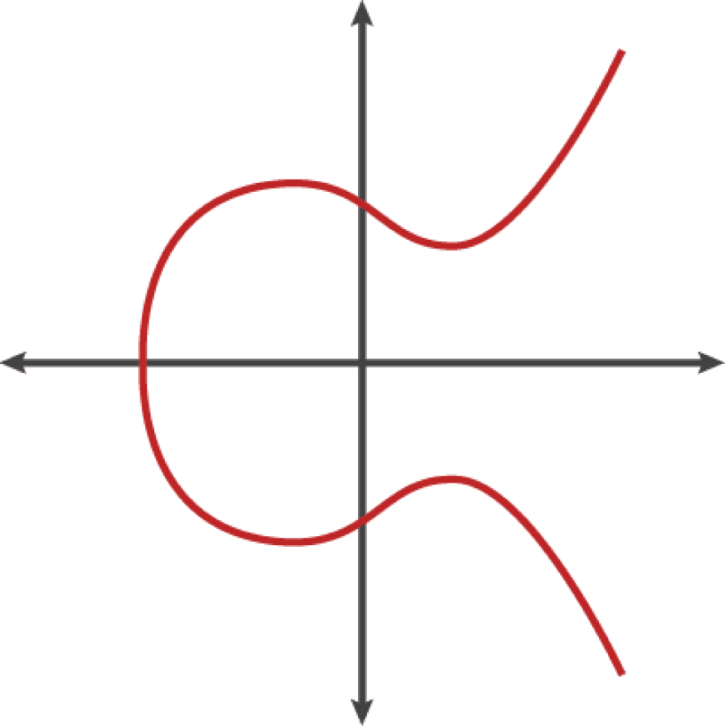
以太坊使用特定的橢圓曲線和一組數學常數，由國家標準與技術研究院（NIST）制定的名為 secp256k1 的標準中所定義的。secp256k1 曲線由以下函數定義，該函數產生一個橢圓曲線：
或
mod p (模質數p) 表示該曲線在質數階_p_的有限域上，也寫作 Fp, 其中 p = 2256 – 232 – 29 – 28 – 27 – 26 – 24 – 1, 一個非常大的質數。
因為這條曲線是在有限的質數階上而不是在實數上定義的，所以它看起來像是一個散佈在二維中的點的模式，使得難以可視化。然而，數學與實數上的橢圓曲線的數學是相同的。作為一個例子，Elliptic curve cryptography: visualizing an elliptic curve over F(p), with p=17 在一個更小的質數階17的有限域上顯示了相同的橢圓曲線，顯示了一個網格上的點的圖案。secp256k1 以太坊橢圓曲線可以被認為是一個更復雜的模式，在一個不可思議的大網格上的點。
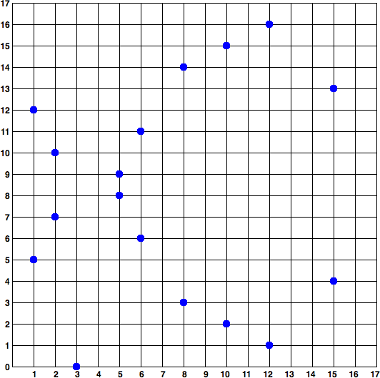
例如，以下是座標為（x，y）的點Q，它是 secp256k1 曲線上的一個點：
Q = (49790390825249384486033144355916864607616083520101638681403973749255924539515, 59574132161899900045862086493921015780032175291755807399284007721050341297360)
Using Python to confirm that this point is on the elliptic curve 顯示了如何使用Python檢查它。變數x和y是上述點Q的座標。變數p是橢圓曲線的主要階數（用於所有模運算的質數）。Python的最後一行是橢圓曲線方程（Python中的％運算符是模運算符）。如果x和y確實是橢圓曲線上的點，那麼它們滿足方程，結果為零（0L+是零值的長整數）。通過在命令行上鍵入+python 並複製下面的每行（不包括提示符 >>>），親自嘗試一下：
Python 3.4.0 (default, Mar 30 2014, 19:23:13)
[GCC 4.2.1 Compatible Apple LLVM 5.1 (clang-503.0.38)] on darwin
Type "help", "copyright", "credits" or "license" for more information.
>>> p = 115792089237316195423570985008687907853269984665640564039457584007908834671663
>>> x = 49790390825249384486033144355916864607616083520101638681403973749255924539515
>>> y = 59574132161899900045862086493921015780032175291755807399284007721050341297360
>>> (x ** 3 + 7 - y**2) % p
0L7.7. 橢圓曲線算術運算
很多橢圓曲線數學看起來很像我們在學校學到的整數算術。具體而言，我們可以定義一個加法運算符，而不是添加數字就是在曲線上添加點。一旦我們有了加法運算符，我們也可以定義一個點和一個整數的乘法，等於重複加法。
A lot of elliptic curve math looks and works very much like the integer arithmetic we learned at school. Specifically, we can define an addition operator, which instead of adding numbers is adding points on the curve. Once we have the addition operator, we can also define multiplication of a point and a whole number, such that it is equivalent to repeated addition.
加法定義為給定橢圓曲線上的兩個點 P1 and P2 , 第三個點 P3 = P1 + P2, 也在橢圓曲線上。
在幾何上，這個第三點 P3 是通過在 P1 和 P2 之間畫一條直線來計算的。這條線將在另外一個地方與橢圓曲線相交。稱此點為 P3' = (x, y)。然後在x軸上反射得到 P3 = (x, –y)。
在橢圓曲線數學中，有一個叫做“無窮點”的點，它大致對應於零點的作用。在計算機上，它有時用 x = y = 0表示（它不滿足橢圓曲線方程，但它是一個容易區分的情況，可以檢查）。有幾個特殊情況解釋了“無窮點”的需要。
如果 P1 和 P2 是同一點，P1 and P2 之間的直線應該延伸到曲線上 P1 的切線。 該切線恰好與曲線在一個新點相交。你可以使用微積分技術來確定切線的斜率。我們將我們的興趣侷限在具有兩個整數座標的曲線上，這些技巧令人好奇地工作！
在某些情況下（即，如果 P1 和 P2 具有相同的x值但不同的y值），切線將精確地垂直，在這種情況下P3 =“無窮點”。
如果 P1 是“無窮點”，那麼 P1 + P2 = P2。 類似地, 如果 P2 是“無窮點”，P1 + P2 = P1。這顯示了無窮點如何扮演零在“正常”算術中扮演的角色。
+ 是可結合的, (A + B) + C = A + (B + C). 這表示 A + B + C 不加括號也沒有歧義。
現在我們已經定義了加法，我們可以用擴展加法的標準方式來定義乘法。對於橢圓曲線上的點P，如果k是整數，則 k * P = P + P + P + … + P (k 次)。請注意，在這種情況下，k有時會被混淆地稱為“指數”。
7.8. 生成一個公鑰
以一個隨機生成的數字_k_的私鑰開始，我們通過將它乘以稱為_generator point_ G_的曲線上的預定點，在曲線上的其他位置產生另一個點，這是相應的公鑰_K。生成點被指定為+secp256k1+標準的一部分，對於+secp256k1+的所有實現始終相同，並且從該曲線派生的所有密鑰都使用相同的點_G_：
其中_k_是私鑰，G_是生成點，_K_是生成的公鑰，即曲線上的一個點。因為所有以太坊用戶的生成點始終相同，所以_G_乘以_G_的私鑰總是會導致相同的公鑰_K。k_和_K_之間的關係是固定的，但只能從_k_到_K_的一個方向進行計算。這就是為什麼以太坊地址（來自_K）可以與任何人共享，並且不會洩露用戶的私鑰（k）。
正如我們在 橢圓曲線算術運算中所描述的那樣，k * G的乘法相當於重複加，G + G + G + … + G ，重複k次。總而言之，為了從私鑰_k_生成公鑰_K_，我們將生成點_G_添加到自己_k_次。
|
私鑰可以轉換為公鑰，但公鑰不能轉換回私鑰，因為數學只能單向工作。 |
讓我們應用這個計算來找到我們在 私鑰 中給出的特定私鑰的公鑰：
K = f8f8a2f43c8376ccb0871305060d7b27b0554d2cc72bccf41b2705608452f315 * G
密碼庫可以幫助我們使用橢圓曲線乘法計算K值。得到的公鑰_K_被定義為一個點 K = (x,y) ：
K = (x, y) where, x = 6e145ccef1033dea239875dd00dfb4fee6e3348b84985c92f103444683bae07b y = 83b5c38e5e2b0c8529d7fa3f64d46daa1ece2d9ac14cab9477d042c84c32ccd0
在以太坊中，你可以看到公鑰以66個十六進制字符（33字節）的十六進制序列表示。這是從行業聯盟標準高效密碼組（SECG）提出的標準序列化格式採用的，在http://www.secg.org/sec1-v2.pdf[Standards for Efficient Cryptography（SEC1）]中有記載。該標準定義了四個可用於識別橢圓曲線上點的可能前綴：
Prefix |
Meaning |
Length (bytes counting prefix) |
|
0x00 |
Point at Infinity |
1 |
|
0x04 |
Uncompressed Point |
65 |
|
0x02 |
Compressed Point with even Y |
33 |
|
0x03 |
Compressed Point with odd Y |
33 |
以太坊只使用未壓縮的公鑰，因此唯一相關的前綴是（十六進制）04。順序連接公鑰的X和Y座標：
04 + X-coordinate (32 bytes/64 hex) + Y coordinate (32 bytes/64 hex)
因此，我們在 Example public key calculated from the example private key 中計算的公鑰被序列化為：
046e145ccef1033dea239875dd00dfb4fee6e3348b84985c92f103444683bae07b83b5c38e5e2b0c8529d7fa3f64d46daa1ece2d9ac14cab9477d042c84c32ccd0
7.9. 橢圓曲線庫
密碼貨幣相關項目中使用了secp256k1橢圓曲線的幾個實現：
- OpenSSL
-
OpenSSL庫提供了一套全面的加密原語，包括secp256k1的完整實現。例如，要派生公鑰，可以使用函數+EC_POINT_mul()+。https://www.openssl.org/
- libsecp256k1
-
Bitcoin Core的libsecp256k1是secp256k1橢圓曲線和其他密碼原語的C語言實現。橢圓曲線密碼學的libsecp256是從頭開始編寫的，代替了Bitcoin Core軟體中的OpenSSL，在性能和安全性方面被認為是優越的。https://github.com/bitcoin-core/secp256k1
7.10. 加密雜湊函數
加密雜湊函數在整個以太坊使用。事實上，雜湊函數幾乎在所有密碼系統中都有廣泛應用，這是密碼學家布魯斯•施奈爾（Bruce Schneier）所說的一個事實，他說：“單向雜湊函數遠不止於加密演算法，而是現代密碼學的主要工具。
在本節中，我們將討論雜湊函數，瞭解它們的基本屬性以及這些屬性如何使它們在現代密碼學的很多領域如此有用。我們在這裡討論雜湊函數，因為它們是將以太坊公鑰轉換成地址的一部分。
簡而言之，“雜湊函數是可用於將任意大小的數據映射到固定大小的數據的函數。” Source：Wikipedia。雜湊函數的輸入稱為 原象 _ pre-image_ 或 消息 message。輸出被稱為 雜湊 hash_或 _摘要 digest。雜湊函數的一個特殊子類別是 加密雜湊函數，它具有對密碼學有用的特定屬性。
加密雜湊函數是一種_單向_雜湊函數，它將任意大小的數據映射到固定大小的位串，如果知道輸出，計算上不可能重新創建輸入。確定輸入的唯一方法是對所有可能的輸入進行蠻力搜索，檢查匹配輸出。
加密雜湊函數有五個主要屬性 (Source: Wikipedia/Cryptographic Hash Function):
- 確定性
-
任何輸入消息總是產生相同的雜湊摘要。
- 可驗證性
-
計算消息的雜湊是有效的（線性性能）。
- 不相關
-
對消息的小改動（例如，一位改變）會大幅改變雜湊輸出，以致它不能與原始消息的雜湊相關聯。
- 不可逆性
-
從雜湊計算消息是不可行的，相當於通過可能的消息進行蠻力搜索。
- 碰撞保護
-
計算兩個不同的消息產生相同的雜湊輸出應該是不可行的。
碰撞保護對於防止以太坊中的數位簽章偽造至關重要。
這些屬性的組合使加密雜湊函數可用於廣泛的安全應用程式，包括：
-
數據指紋識別
-
消息完整性（錯誤檢測）
-
工作證明
-
認證（密碼雜湊和密鑰擴展）
-
偽隨機數發生器
-
原象承諾
-
唯一識別碼
通過研究系統的各個層面，我們會在以太坊找到它的很多應用。
7.11. 以太坊的加密雜湊函數 - Keccak-256
以太坊在許多地方使用_Keccak-256_加密雜湊函數。Keccak-256被設計為於2007年舉行的SHA-3密碼雜湊函數競賽的候選者。Keccak是獲勝的演算法，在2015年被標準化為 FIPS（聯邦資訊處理標準）202。
然而，在以太坊開發期間，NIST標準化工作正在完成。在標準過程完成後，NIST調整了Keccak的一些參數，據稱可以提高效率。這與英雄告密者愛德華斯諾登透露的檔案暗示NIST可能受到國家安全局的不當影響同時發生，故意削弱Dual_EC_DRBG隨機數生成器標準，有效地在標準隨機數生成器中放置一個後門。這場爭論的結果是對所提議修改的反對以及SHA-3標準化的嚴重拖延。當時，以太坊基金會決定實施最初的Keccak演算法。
|
雖然你可能在Ethereum文件和程式碼中看到“SHA3”，但很多（如果不是全部）這些實例實際上是指Keccak-256，而不是最終確定的FIPS-202 SHA-3標準。實現差異很小，與填充參數有關，但它們的重要性在於Keccak-256在給定相同輸入的情況下產生與FIPS-202 SHA-3不同的雜湊輸出。 |
由於Ethereum中使用的雜湊函數（Keccak-256）與最終標準（FIP-202 SHA-3）之間的差異造成了混淆，因此正在努力將程式碼中所有的 sha3 的所有實例，操作碼和庫重新命名為 keccak256。詳情請參閱https://github.com/ethereum/EIPs/issues/59[ERC-59]。
7.12. 我正在使用哪個雜湊函數？
如何判斷你使用的軟體庫是FIPS-202 SHA-3還是Keccak-256（如果兩者都可能被稱為“SHA3”）？
一個簡單的方法是使用_test vector_，一個給定輸入的預期輸出。最常用於雜湊函數的測試是_empty input_。如果你使用空字串作為輸入運行雜湊函數，你應該看到以下結果：
Keccak256("") =
c5d2460186f7233c927e7db2dcc703c0e500b653ca82273b7bfad8045d85a470
SHA3("") =
a7ffc6f8bf1ed76651c14756a061d662f580ff4de43b49fa82d80a4b80f8434a
因此，無論調用什麼函數，都可以通過運行上面的簡單測試來測試它是否是原始的Keccak-256或最終的NIST標準FIPS-202 SHA-3。請記住，以太坊使用Keccak-256，儘管它在程式碼中通常被稱為SHA-3。
接下來，讓我們來看一下Ethereum中Keccak-256的第一個應用，即從公鑰生成以太坊地址。
7.13. 以太坊地址
以太坊地址是 唯一識別碼 unique identifiers，它們是使用單向雜湊函數（Keccak-256）從公鑰或合約派生的。
在我們之前的例子中，我們從一個私鑰開始，並使用橢圓曲線乘法來派生一個公鑰：
Private Key k:
k = f8f8a2f43c8376ccb0871305060d7b27b0554d2cc72bccf41b2705608452f315
Public Key K (X and Y coordinates concatenated and shown as hex):
K = 6e145ccef1033dea239875dd00dfb4fee6e3348b84985c92f103444683bae07b83b5c38e5e2b0c8529d7fa3f64d46daa1ece2d9ac14cab9477d042c84c32ccd0
|
值得注意的是，在計算地址時，公鑰沒有用前綴（十六進制）04格式化。 |
我們使用Keccak-256來計算這個公鑰的_hash_：
Keccak256(K) = 2a5bc342ed616b5ba5732269001d3f1ef827552ae1114027bd3ecf1f086ba0f9
然後我們只保留最後的20個字節（大端序中的最低有效字節），這是我們的以太坊地址：
001d3f1ef827552ae1114027bd3ecf1f086ba0f9
大多數情況下，你會看到帶有前綴“0x”的以太坊地址，表明它是十六進制編碼，如下所示：
0x001d3f1ef827552ae1114027bd3ecf1f086ba0f9
7.14. 以太坊地址格式
以太坊地址是十六進制數字，從公鑰的Keccak-256雜湊的最後20個字節匯出的識別碼。
與在所有客戶端的用戶界面中編碼的比特幣地址不同，它們包含內建校驗和來防止輸入錯誤的地址，以太坊地址以原始十六進制形式呈現，沒有任何校驗和。
該決定背後的基本原理是，以太坊地址最終會隱藏在系統高層的抽象（如名稱服務）之後，並且必要時應在較高層添加校驗和。
回想起來，這種設計選擇導致了一些問題，包括由於輸入錯誤地址和輸入驗證錯誤而導致的資金損失。以太坊名稱服務的開發速度低於最初的預期，諸如ICAP之類的替代編碼被錢包開發商採用得非常緩慢。
7.14.1. 互換客戶端地址協議 Inter Exchange Client Address Protocol (ICAP)
_互換客戶端地址協議（ICAP）_是一種部分與國際銀行帳號（IBAN）編碼兼容的以太坊地址編碼，為以太坊地址提供多功能，校驗和互操作編碼。ICAP地址可以編碼以太坊地址或通過以太坊名稱註冊表註冊的常用名稱。
閱讀以太坊Wiki上的ICAP：https://github.com/ethereum/wiki/wiki/ICAP:-Inter-exchange-Client-Address-Protocol
IBAN是識別銀行帳號的國際標準，主要用於電匯。它在歐洲單一歐元支付區（SEPA）及其以後被廣泛採用。IBAN是一項集中和嚴格監管的服務。ICAP是以太坊地址的分散但兼容的實現。
一個IBAN由含國家程式碼，校驗和和銀行帳戶識別碼（特定國家）的34個字母數字字符（不區分大小寫）組成。
ICAP使用相同的結構，通過引入代表“Ethereum”的非標準國家程式碼“XE”，後面跟著兩個字符的校驗和以及3個可能的帳戶識別碼變體：
- Direct
-
最多30個字母數字字符big-endian base-36整數，表示以太坊地址的最低有效位。由於此編碼適合小於155位，因此它僅適用於以一個或多個零字節開頭的以太坊地址。就欄位長度和校驗和而言，它的優點是它與IBAN兼容。範例：XE60HAMICDXSV5QXVJA7TJW47Q9CHWKJD（33個字符長）
- Baasic
-
與“Direct”編碼相同，只是長度為31個字符。這使它可以編碼任何以太坊地址，但使其與IBAN欄位驗證不兼容。範例：XE18CHDJBPLTBCJ03FE9O2NS0BPOJVQCU2P（35個字符長）
- Indrect
-
編碼通過名稱註冊表提供程式解析為以太坊地址的識別碼。使用由_asset identifier_（例如ETH），名稱服務（例如XREG）和9個字符的名稱（例如KITTYCATS）組成的16個字母數字字符，這是一個人類可讀的名稱。範例：XE## ETHXREGKITTYCATS（20個字符長），其中“##”應由兩個計算校驗和字符替換。
我們可以使用 helpeth 命令行工具來創建ICAP地址。讓我們嘗試使用我們的範例私鑰（前綴為0x並作為參數傳遞給helpeth）：
$ helpeth keyDetails -p 0xf8f8a2f43c8376ccb0871305060d7b27b0554d2cc72bccf41b2705608452f315 Address: 0x001d3f1ef827552ae1114027bd3ecf1f086ba0f9 ICAP: XE60 HAMI CDXS V5QX VJA7 TJW4 7Q9C HWKJ D Public key: 0x6e145ccef1033dea239875dd00dfb4fee6e3348b84985c92f103444683bae07b83b5c38e5e2b0c8529d7fa3f64d46daa1ece2d9ac14cab9477d042c84c32ccd0
helpeth 命令為我們構建了一個十六進制以太坊地址以及一個ICAP地址。我們範例密鑰的ICAP地址是：
XE60HAMICDXSV5QXVJA7TJW47Q9CHWKJD
由於我們的範例以太坊地址恰好以零字節開始，因此可以使用IBAN格式中有效的“Direct”ICAP編碼方法進行編碼。因為它是33個字符長。
如果我們的地址不是從零開始，那麼它將被編碼為“Basic”編碼，這將是35個字符長並且作為IBAN格式無效。
|
以零字節開始的任何以太坊地址的概率是1/256。為了生成這樣一個類型，在我們找到一個作為IBAN兼容的“Direct”編碼之前，它將平均用256個不同的隨機私鑰進行256次嘗試ICAP地址。 |
不幸的是，現在，只有幾個錢包支持ICAP。
7.14.2. 使用大寫校驗和的十六進制編碼 (EIP-55)
由於ICAP或名稱服務部署緩慢，因此提出了一個新的標準，以太坊改進建議55（EIP-55）。你可以閱讀詳細資訊：
通過修改十六進制地址的大小寫，EIP-55為以太坊地址提供了向後兼容的校驗和。這個想法是，以太坊地址不區分大小寫，所有錢包都應該接受以大寫字母或小寫字母表示的以太坊地址，在解釋上沒有任何區別。
通過修改地址中字母字符的大小寫，我們可以傳達一個校驗和，可以用來保護地址完整性，防止輸入或讀取錯誤。不支持EIP-55校驗和的錢包簡單地忽略地址包含混合大寫的事實。但那些支持它的人可以驗證它並以99.986％的準確度檢測錯誤。
混合大小寫編碼很微妙，最初你可能不會注意到它。我們的範例地址是：
0x001d3f1ef827552ae1114027bd3ecf1f086ba0f9
使用 EIP-55 混合大小寫校驗和，它變為：
0x001d3F1ef827552Ae1114027BD3ECF1f086bA0F9
你能看出區別嗎？一些來自十六進制編碼字母表的字母（AF）字符現在是大寫字母，而另一些則是小寫字母。除非你仔細觀察，否則你甚至可能沒有注意到其中的差異。
EIP-55實施起來相當簡單。我們採用小寫十六進制地址的Keccak-256雜湊。這個雜湊作為地址的數字指紋，給我們一個方便的校驗和。輸入（地址）中的任何小改動都會導致雜湊結果（校驗和）發生很大變化，從而使我們能夠有效地檢測錯誤。然後我們的地址的雜湊被編碼為地址本身的大寫字母。讓我們一步步分解它：
-
計算小寫地址的雜湊，不帶 0x 前綴：:
Keccak256("001d3f1ef827552ae1114027bd3ecf1f086ba0f9")
23a69c1653e4ebbb619b0b2cb8a9bad49892a8b9695d9a19d8f673ca991deae1
-
如果雜湊的相應十六進制數字大於或等於 0x8，則將每個字母地址字符大寫。如果我們排列地址和雜湊，這將更容易顯示：
Address: 001d3f1ef827552ae1114027bd3ecf1f086ba0f9 Hash : 23a69c1653e4ebbb619b0b2cb8a9bad49892a8b9...
我們的地址在第四個位置包含一個字母 d。雜湊的第四個字符是 6，小於+8+。所以，我們保持 d 小寫。我們地址中的下一個字母字符是 f，位於第六位。十六進制雜湊的第六個字符是 c，它大於+8 。因此，我們在地址中大寫 +F，等等。正如你所看到的，我們只使用雜湊的前20個字節（40個十六進制字符）作為校驗和，因為我們只有20個字節（40個十六進制字符）能正確地大寫。
檢查自己產生的混合大寫地址，看看你是否可以知道在地址雜湊中哪些字符被大寫和它們對應的字符：
Address: 001d3F1ef827552Ae1114027BD3ECF1f086bA0F9 Hash : 23a69c1653e4ebbb619b0b2cb8a9bad49892a8b9...
7.14.3. 在EIP-55編碼地址中檢測錯誤
現在，我們來看看EIP-55地址如何幫助我們發現錯誤。假設我們已經打印出ETHER-E編碼的以太坊地址：
0x001d3F1ef827552Ae1114027BD3ECF1f086bA0F9
現在，讓我們在閱讀該地址時犯一個基本錯誤。最後一個字符之前的字符是大寫字母“F”。對於這個例子，我們假設我們誤解為大寫“E”。我們在錢包中輸入（不正確的地址）：
0x001d3F1ef827552Ae1114027BD3ECF1f086bA0E9
幸運的是，我們的錢包符合EIP-55標準！它注意到混合大寫字母並試圖驗證地址。它將其轉換為小寫，並計算校驗和雜湊值：
Keccak256("001d3f1ef827552ae1114027bd3ecf1f086ba0e9")
5429b5d9460122fb4b11af9cb88b7bb76d8928862e0a57d46dd18dd8e08a6927
如你所見，即使地址只改變了一個字符（事實上，“e”和“f”只相隔1位），地址的雜湊值已經根本改變了。這是雜湊函數的特性，使它們對校驗和非常有用！
現在，讓我們排列這兩個並檢查大小寫：
001d3F1ef827552Ae1114027BD3ECF1f086bA0E9 5429b5d9460122fb4b11af9cb88b7bb76d892886...
這都是錯的！幾個字母字符不正確地大寫。請記住，大寫是_正確的_校驗和的編碼。
我們輸入的地址的大小寫與剛剛計算的校驗和不匹配，這意味著地址中的內容發生了變化，並且引入了錯誤。
8. 錢包
在以太坊中，“錢包”一詞有幾個不同的含義。
在較高層次上，錢包是作為主要用戶界面的應用程式。錢包控制對用戶資金的訪問，管理密鑰和地址，追蹤餘額以及創建和簽署交易。另外，一些以太坊錢包還可以與合約（如代幣）進行交互。
狹義上講，從開發者的角度來看，“錢包”一詞是指用於儲存和管理用戶密鑰的系統。每個“錢包”都有一個密鑰管理組件。對於一些錢包來說，這就是全部。其他一些錢包是更廣泛類別的一部分，即“瀏覽器”，它是以太坊去中心化應用或“DApps”的接口。在“錢包”這個術語下混合的各種類別之間沒有明確的區別。
在本節中，我們將把錢包看作私鑰的容器，並將其視為用於管理密鑰的系統。
8.1. 錢包技術概覽
在本節中，我們總結了用於構建用戶友好，安全，和靈活的以太坊錢包的技術。
關於以太坊的一個常見誤解是以太坊錢包包含ether或代幣。實際上，錢包只包含密鑰。ether或其他代幣記錄在以太坊區塊鏈中。用戶通過使用錢包中的密鑰簽署交易來控制網路上的代幣。從某種意義上說，以太坊錢包是一個 鑰匙串 keychain。
|
以太坊錢包包含密鑰，而不是ether或令牌。每個用戶都有一個包含密鑰的錢包。錢包真的是包含私鑰/公鑰的鑰匙串（參見[private_public_keys]）。用戶使用密鑰簽署交易，從而證明他們擁有ether。ether儲存在區塊鏈上。 |
有兩種主要類型的錢包，通過它們包含的密鑰是否彼此相關來區分。
第一種類型是 非確定性錢包 nondeterministic wallet，其中每個密鑰都是從隨機數中獨立生成的。密鑰不相互關聯。這種類型的錢包也被稱為“Just a Bunch Of Keys”，JBOK錢包。
第二種類型的錢包是 確定性錢包 deterministic wallet，其中所有密鑰都來自單個主密鑰，稱為_種子_ seed。這種類型的錢包中的所有鑰匙都是相互關聯的，如果有原始種子，可以再次生成。確定性錢包中使用了許多不同的 密鑰推導方法。最常用的派生方法使用樹狀結構，稱為 _分層確定 _hierarchical deterministic_或_HD_錢包。
確定性錢包是從種子初始化的。為了使這些更容易使用，種子被編碼為一些英文單詞（或其他語言的詞），稱為 mnemonic code 助記詞，接下來的幾節將從較高的層次介紹這些技術。
8.1.1. 非確定性（隨機）錢包
在第一個以太坊錢包（由Ethereum pre-sale創建）中，錢包檔案儲存一個隨機生成的私鑰。這些錢包正在被確定性的錢包取代，因為它們管理，備份和匯入很麻煩。隨機密鑰的缺點是，如果你生成了許多密鑰，你必須保留所有密鑰的副本。每個密鑰都必須備份，否則如果錢包變得不可訪問，則其控制的資金將不可撤銷地丟失。此外，以太坊地址重用可以通過將多個交易和地址相互關聯來降低隱私。0型非確定性錢包是很少的選擇，特別是如果你想避免地址重用，因為它意味著管理許多密鑰，需要經常備份。
許多以太坊客戶端（包括 go-ethereum 或 geth）使用_keystore_檔案，這是一個JSON編碼的檔案，其中包含一個（隨機生成的）私鑰，由一個密碼加密以提高安全性。JSON檔案的內容如下所示：
{
"address": "001d3f1ef827552ae1114027bd3ecf1f086ba0f9",
"crypto": {
"cipher": "aes-128-ctr",
"ciphertext": "233a9f4d236ed0c13394b504b6da5df02587c8bf1ad8946f6f2b58f055507ece",
"cipherparams": {
"iv": "d10c6ec5bae81b6cb9144de81037fa15"
},
"kdf": "scrypt",
"kdfparams": {
"dklen": 32,
"n": 262144,
"p": 1,
"r": 8,
"salt": "99d37a47c7c9429c66976f643f386a61b78b97f3246adca89abe4245d2788407"
},
"mac": "594c8df1c8ee0ded8255a50caf07e8c12061fd859f4b7c76ab704b17c957e842"
},
"id": "4fcb2ba4-ccdb-424f-89d5-26cce304bf9c",
"version": 3
}keystore格式使用_Key派生函數（KDF），也稱為密碼擴展演算法，該演算法可防止對密碼加密的暴力破解，字典或彩虹表攻擊。簡而言之，私鑰沒有直接由密碼短語加密。相反，通過反覆對它進行雜湊，密碼被_拉長。雜湊函數重複執行262144輪，可以在keystore JSON中的參數 crypto.kdfparams.n 看到。試圖暴力破解密碼短語的攻擊者必須對每個嘗試的密碼應用262144輪雜湊，這足以減緩攻擊行為，從而使破解足夠複雜性和夠長的密碼短語是不可行的。
有許多軟體庫可以讀寫keystore格式，例如JavaScript庫 keythereum：
|
除簡單測試以外，不鼓勵使用非確定性錢包，他們太麻煩了，無法備份和使用。相反，使用具有_mnemonic_種子的基於行業標準的_HD錢包_。 |
8.1.2. 確定性（種子）錢包
確定性或“種子”錢包是包含私鑰的錢包，所有私鑰都來源於共同的種子，使用單向雜湊函數生成。種子是隨機生成的數字，可以與其他數據（如索引編號或“鏈碼”（請參閱HD 錢包 (BIP-32/BIP-44)））組合以匯出私鑰。在確定性錢包中，種子足以恢復所有派生的密鑰，因此在創建時的單個備份就足夠了。種子也足以用於錢包的匯入和匯出，允許在不同實現的錢包之間輕鬆遷移所有用戶密鑰。
8.1.3. HD 錢包 (BIP-32/BIP-44)
確定性錢包的開發使得從單個”種子“中獲得許多密鑰變得容易。確定性錢包的最先進的形式是由比特幣的BIP-32標準定義的HD錢包。HD錢包包含以樹狀結構匯出的密鑰，以便父密鑰可以生成一系列的子密鑰，每個子密鑰可以派生一系列孫子密鑰等等，可以達到無限深度。這個樹狀結構在 [hd_wallet] 中進行說明。
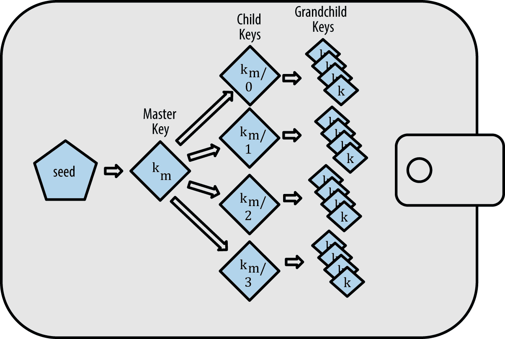
與隨機（非確定性）密鑰相比，HD錢包具有兩大優勢。首先，樹狀結構可以用來表達額外的組織含義，例如，使用特定分支的子密鑰來接收傳入的支付，使用不同分支的子密鑰來接收支付時產生的零錢。密鑰的分支也可用於公司設置，將不同分支分配給部門，子公司，特定職能或會計類別。
HD錢包的第二個優點是用戶可以創建一系列公鑰而無需訪問相應的私鑰。這允許HD錢包用於不安全的伺服器上，或者僅用於只查看或只接收的地方，其中錢包沒有可以花費資金的私鑰。
8.1.4. 種子和助記詞（BIP-39）
HD錢包是管理許多密鑰和地址的非常強大的機制。如果將它們與一系列英文單詞（或另一種語言的單詞）相結合，更易於轉錄，和跨錢包的匯出匯入。這被稱為_mnemonic_，標準由BIP-39定義。今天，許多以太坊錢包（以及用於其他密碼貨幣的錢包）都使用此標準，並且可以使用可互操作的助記詞匯入和匯出種子以進行備份和恢復。
我們從實際的角度來看一下。下列哪種種子更容易轉錄，在紙上記錄，無誤地讀取，匯出並匯入另一個錢包？
FCCF1AB3329FD5DA3DA9577511F8F137
wolf juice proud gown wool unfair wall cliff insect more detail hub
8.1.5. 錢包最佳實踐
隨著密碼貨幣錢包技術的成熟，某些常見行業標準使錢包廣泛地互操作，易於使用，安全和靈活。這些標準還允許錢包從多個不同的密碼貨幣中獲取密鑰，所有這些都來自助記詞。這些通用標準是：
-
基於 BIP-39 的助記詞
-
基於 BIP-32 的HD錢包
-
基於 BIP-43 的多用途HD錢包
-
基於 BIP-44 的多幣種和多帳戶錢包
這些標準可能會改變，或者可能會因未來的發展而過時，但現在它們形成了一套互聯技術，已成為大多數密碼貨幣的事實上的錢包標準。
這些標準已廣泛的被軟體和硬體錢包採用，使所有這些錢包可以互操作。用戶可以匯出其中一個錢包上生成的助記詞並將其匯入另一個錢包，恢復所有交易，密鑰和地址。
支持這些標準的軟體錢包有 Jaxx，MetaMask，MyEtherWallet（MEW），硬體錢包有：Keepkey，Ledger和Trezor。
以下各節詳細介紹了這些技術。
|
如果你正在實現以太坊錢包，則應該將其作為HD錢包構建，並將種子編碼為易於備份的助記詞，並遵循BIP-32，BIP-39，BIP-43和BIP -44標準，如以下各節所述。 |
8.1.6. 助記詞 (BIP-39)
助記詞是表示（編碼）派生確定性錢包的種子的隨機數的單詞序列。單詞序列足以重新創建種子，從而重新創建錢包和所有派生的密鑰。使用助記詞實現的確定性錢包會在首次創建錢包時向用戶展示12至24個字的序列。該單字序列是錢包的備份，可用於在相同或任何兼容的錢包應用程式中恢復和重新創建所有密鑰。
|
助記詞經常與“腦錢包”混淆。他們不一樣。主要區別在於腦錢包由用戶選擇的單詞組成，而助記詞由錢包隨機創建並呈現給用戶。這個重要的區別使助記詞更加安全，因為人類是非常貧乏的隨機性來源。 |
助記詞在BIP-39中定義。請注意，BIP-39是助記詞編碼標準的一個實現。有一個不同的標準，帶有一組不同的單詞，在BIP-39之前用於Electrum比特幣錢包。BIP-39由Trezor硬體錢包背後的公司提出，與Electrum的實現不兼容。但是，BIP-39現在已經在數十種可互操作實現方面取得了廣泛的行業支持，應該被視為事實上的行業標準。此外，BIP-39可用於生產支持以太坊的多幣種錢包，而Electrum種子不能。
BIP-39定義了助記詞和種子的創建，我們在這裡通過九個步驟來描述它。為了清楚起見，該過程分為兩部分：步驟1至6展示在[generate_mnemonic_words] 中，步驟7至9展示在 從助記詞到種子 中。
生成助記詞
助記詞是由錢包使用BIP-39中定義的標準化流程自動生成的。錢包從熵源開始，添加校驗和，然後將熵映射到單詞列表：
-
創建一個128到256位的隨機序列（熵）。
-
通過取其SHA256雜湊的第一部分（熵長度/32）來創建隨機序列的校驗和。
-
將校驗和添加到隨機序列的末尾。
-
將序列按照11bits劃分。
-
將每個11bits的值映射到預定義字典中的2048個詞中的一個。
-
助記詞就是單詞的序列。
Generating entropy and encoding as mnemonic words 展示了如何使用熵來生成助記詞。
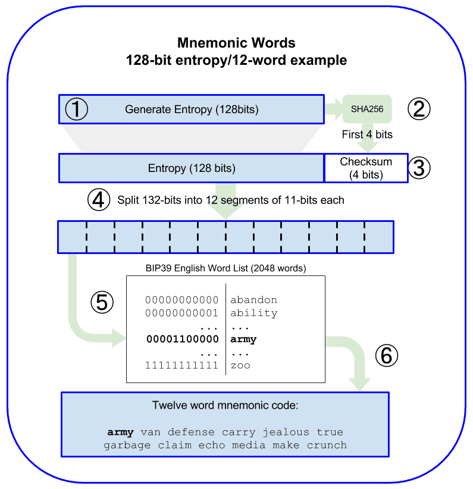
Mnemonic codes: entropy and word length 展示熵數據的大小和助記詞的長度關係。
| Entropy (bits) | Checksum (bits) | Entropy + checksum (bits) | Mnemonic length (words) |
|---|---|---|---|
128 |
4 |
132 |
12 |
160 |
5 |
165 |
15 |
192 |
6 |
198 |
18 |
224 |
7 |
231 |
21 |
256 |
8 |
264 |
24 |
從助記詞到種子
助記符字表示長度為128到256位的熵。然後使用使用密鑰擴展函數PBKDF2將熵匯出成更長的（512位）種子。然後使用生成的種子構建確定性錢包並派生其密鑰。
密鑰擴展函數有兩個參數：助記詞和_salt_。在密鑰擴展函數中使用鹽的目的是使得構建能夠進行暴力攻擊的查找表不可行。在BIP-39標準中，鹽有另一個目的 —— 它允許引入密碼，作為保護種子的附加安全因素，我們將在 BIP-39中的可選密碼短語 中詳細描述。
步驟7到9中從 生成助記詞 描述的過程後繼續：
- PBKDF2密鑰擴展函數的第一個參數是步驟6產生的助記詞。
- PBKDF2密鑰擴展函數的第二個參數是鹽。鹽由用戶提供的密碼字串和“mnemonic”組合起來。
- PBKDF2使用2048輪HMAC-SHA512雜湊演算法，擴展助記詞和鹽，生成512位的種子。
[fig_5_7] 展示如何使用助記詞來生成種子。
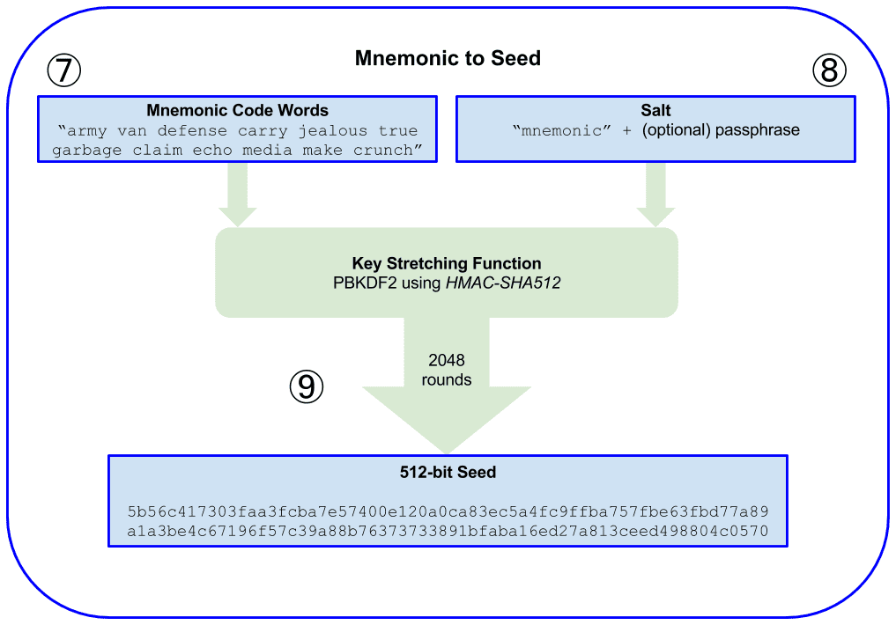
|
密鑰擴展函數及其2048輪雜湊對抵禦助記詞或密碼攻擊具有一定的有效保護作用。它使（在計算中）嘗試超過幾千個密碼和助記詞組合的成本高昂，因為可能派生的種子數量很大（2512）。 |
表格 #mnemonic_128_no_pass, #mnemonic_128_w_pass, 和 #mnemonic_256_no_pass 展示了一些助記詞和它們生成的種子的例子（沒有密碼）。
Entropy input (128 bits) |
0c1e24e5917779d297e14d45f14e1a1a |
|---|---|
Mnemonic (12 words) |
army van defense carry jealous true garbage claim echo media make crunch |
Passphrase |
(none) |
Seed (512 bits) |
5b56c417303faa3fcba7e57400e120a0ca83ec5a4fc9ffba757fbe63fbd77a89a1a3be4c67196f57c39 a88b76373733891bfaba16ed27a813ceed498804c0570 |
Entropy input (128 bits) |
0c1e24e5917779d297e14d45f14e1a1a |
|---|---|
Mnemonic (12 words) |
army van defense carry jealous true garbage claim echo media make crunch |
Passphrase |
SuperDuperSecret |
Seed (512 bits) |
3b5df16df2157104cfdd22830162a5e170c0161653e3afe6c88defeefb0818c793dbb28ab3ab091897d0 715861dc8a18358f80b79d49acf64142ae57037d1d54 |
Entropy input (256 bits) |
2041546864449caff939d32d574753fe684d3c947c3346713dd8423e74abcf8c |
|---|---|
Mnemonic (24 words) |
cake apple borrow silk endorse fitness top denial coil riot stay wolf luggage oxygen faint major edit measure invite love trap field dilemma oblige |
Passphrase |
(none) |
Seed (512 bits) |
3269bce2674acbd188d4f120072b13b088a0ecf87c6e4cae41657a0bb78f5315b33b3a04356e53d062e5 5f1e0deaa082df8d487381379df848a6ad7e98798404 |
BIP-39中的可選密碼短語
BIP-39標準允許在派生種子時使用可選的密碼短語。如果沒有使用密碼短語，助記詞將被一個由常量字串+"mnemonic"+ 組成的鹽擴展，從任何給定的助記詞中產生一個特定的512位種子。如果使用密碼短語，則擴展函數會從同一助記詞中生成一個_不同的_種子。事實上，對於一個助記符，每個可能的密碼都會生成不同的種子。本質上，沒有“錯誤的”密碼。所有密碼都是有效的，它們都會生成不同的種子，形成一大批可能未初始化的錢包。可能的錢包的集合非常大（2512），因此沒有暴力或意外猜測正在使用的錢包的可能。
|
BIP-39中沒有“錯誤”的密碼短語。每個密碼都會生成一些空錢包，除非以前使用過。 |
可選的密碼短語創造了兩個重要的特性：
-
第二個使得只有助記詞沒有用的因素（需要記憶的東西），從而保護助記詞備份免受小偷的威脅。
-
一種似是而非的拒絕形式或“脅迫錢包”，一個選定的密碼短語會導致一個帶有少量資金的錢包，用於將攻擊者從包含大部分資金的“真實”錢包吸引開。
但是，重要的是要注意使用密碼也會導致丟失的風險。
-
如果錢包所有者無行為能力或死亡，且其他人不知道密碼，則種子無用，錢包中儲存的所有資金將永遠丟失。
-
相反，如果所有者在與種子相同的位置備份密碼，它會失去第二個因素的目的。
雖然密碼短語非常有用，但只能結合精心策劃的備份和恢復過程，考慮到主人存活的可能性，並允許其家人恢復密碼貨幣資產。
使用助記詞
BIP-39 以許多不同的程式語言實現為庫：
- python-mnemonic
-
SatoshiLabs團隊提出的BIP-39標準的參考實現，使用Python
- Consensys/eth-lightwallet
-
輕量級JS Ethereum節點和瀏覽器錢包（使用BIP-39）
- npm/bip39
-
比特幣BIP39的JavaScript實現：用於生成確定性密鑰的助記詞
在獨立網頁中還有一個BIP-39生成器，對於測試和實驗非常有用。A BIP-39 generator as a standalone web page 展示了生成助記詞，種子和擴展私鑰的獨立網頁。
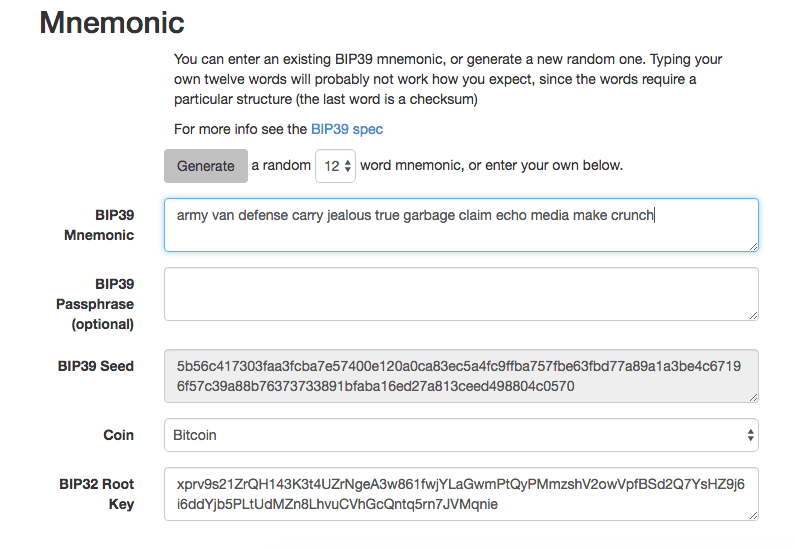
頁面（https://iancoleman.github.io/bip39/）可以在瀏覽器中離線使用，也可以在線訪問。
8.1.7. 從種子創建HD錢包
HD錢包是由單個_根種子_創建的，該_種子_是128,256或512位隨機數。最常見的情況是，這個種子是從_助記詞_生成的，詳見前一節。
HD錢包中的每個密鑰都是從這個根種子確定性地派生出來的，這使得可以在任何兼容的HD錢包中從該種子重新創建整個HD錢包。這使得備份，恢復，匯出和匯入包含數千乃至數百萬個密鑰的HD錢包變得很容易，只需傳輸根種子的助記詞即可。
[[bip32_bip43/44]] ==== 分層確定性錢包（BIP-32）和路徑（BIP-43/44）
大多數HD錢包遵循BIP-32標準，這已成為確定性密鑰事實上的行業標準代。你可以在以下網址閱讀詳細說明：
我們不會在這裡討論BIP-32的細節，只是瞭解如何在錢包中使用BIP-32。在許多軟體庫中提供了許多可互操作的BIP-32實現：
- Consensys/eth-lightwallet
-
輕量級JS Ethereum節點和瀏覽器錢包（使用BIP-32）
還有一個BIP-32獨立的網頁生成器，對BIP-32的測試和實驗非常有用：
|
獨立的BIP-32生成器不是HTTPS網站。提醒你，使用這個工具是不安全的。它僅用於測試。你不應使用本網站製作的密鑰（使用實際資金）。 |
擴展公鑰和私鑰
在BIP-32術語中，可以擴展併產生“孩子”的父密鑰稱為 擴展密鑰 extended key。如果它是一個私有密鑰，它是由前綴_xprv_區分的 擴展私鑰 extended_private_key：
xprv9s21ZrQH143K2JF8RafpqtKiTbsbaxEeUaMnNHsm5o6wCW3z8ySyH4UxFVSfZ8n7ESu7fgir8imbZKLYVBxFPND1pniTZ81vKfd45EHKX73
擴展公鑰 extended public key 由前綴 xpub 區分:
xpub661MyMwAqRbcEnKbXcCqD2GT1di5zQxVqoHPAgHNe8dv5JP8gWmDproS6kFHJnLZd23tWevhdn4urGJ6b264DfTGKr8zjmYDjyDTi9U7iyT
HD錢包的一個非常有用的特點是能夠從公開的父公鑰中派生子公鑰，而不需要擁有私鑰。這為我們提供了兩種派生子公鑰的方法：從子私鑰派生，或直接從父公鑰派生。
因此，可以使用擴展公鑰匯出HD錢包結構分支中的所有 公鑰（只有公鑰）。
此快捷方式可用於創建非常安全的公鑰 - 部署中的伺服器或應用程式只有擴展公鑰的副本，沒有任何私鑰。這種部署可以產生無限數量的公鑰和以太坊地址，但無法花費發送到這些地址的任何資金。與此同時，在另一個更安全的伺服器上，擴展私鑰可以匯出所有相應的私鑰來簽署交易並花費金錢。
此解決方案的一個常見應用是在為電子商務應用程式提供服務的Web伺服器上安裝擴展公鑰。網路伺服器可以使用公鑰派生函數為每個交易（例如，針對客戶購物車）創建新的以太坊地址。Web伺服器將不會有任何易被盜的私鑰。如果沒有HD錢包，唯一的方法就是在單獨的安全伺服器上生成數千個以太坊地址，然後將其預先加載到電子商務伺服器上。這種方法很麻煩，需要不斷的維護以確保電子商務伺服器不會“用完”密鑰。
此解決方案的另一個常見應用是冷錢包或硬體錢包。在這種情況下，擴展私鑰可以儲存在硬體錢包中，而擴展公鑰可以保持在線。用戶可以隨意創建“接收”地址，而私鑰可以安全地在離線狀態下儲存。要花費資金，用戶可以在離線簽署的以太坊客戶端上使用擴展私鑰或在硬體錢包設備上籤署交易。
強化子密鑰派生
從xpub派生公鑰的分支是非常有用的，但它帶有潛在風險。訪問xpub不能訪問子私鑰。但是，因為xpub包含鏈碼，所以如果某個子私鑰已知，或者以某種方式洩漏，則可以與鏈碼一起使用，以派生所有其他子私鑰。一個洩露的子私鑰和一個父鏈碼一起揭示了所有子私鑰。更糟的是，可以使用子私鑰和父鏈碼來推導父私鑰。
為了應對這種風險，HD錢包使用一種稱為 強化派生 _hardened derivation_的替代派生函數，該函數“破壞”父公鑰和子鏈碼之間的關係。強化派生函數使用父私鑰來派生子鏈碼，而不是父公鑰。這會在父/子序列中創建一個“防火牆”，鏈碼不能用於危害父代或同級私鑰。
簡而言之，如果你想使用xpub的便利來派生公鑰的分支，而不會讓自己面臨洩漏鏈碼的風險，所以應該從強化父項而不是普通父項派生。作為最佳做法，主密鑰的1級子密鑰級始終通過強化派生派生，以防止主密鑰受到破壞。
正常和強化派生的索引號
BIP-32派生函數中使用的索引號是一個32位整數。為了便於區分通過常規派生函數派生的密鑰與通過強化派生函數派生的密鑰，該索引號分為兩個部分。0到231-1（0x0到0x7FFFFFFF）之間的索引號僅用於常規派生。231和232-1（0x80000000至0xFFFFFFFF）之間的索引號僅用於強化派生。因此，如果索引號小於231，則子項是常規的，如果索引號等於或大於231，則子項是強化的。
為了使索引號更容易閱讀和展示，強化子項的索引號從零開始展示，但帶有一個主要符號。第一個正常子密鑰展示為0，而第一個強化子密鑰（索引0x80000000）展示為0'。然後，按順序，第二個強化子密鑰將具有索引0x80000001，並將展示為1'，依此類推。當你看到HD錢包索引i'時，表示231+i。
HD錢包密鑰識別碼（路徑）
HD錢包中的密鑰使用“路徑”命名約定來標識，樹的每個級別都用斜槓（/）字符分隔（參見 HD wallet path examples）。從主密鑰派生的私鑰以“m”開頭。從主公鑰派生的公鑰以“M”開始。因此，主私鑰的第一個子私鑰為m/0。第一個子公鑰是M/0。第一個孩子的第二個孩子是m/0/1，依此類推。
從右向左讀取一個密鑰的“祖先”，直到你到達從派生出它的主密鑰。例如，識別碼 m/x/y/z 描述了密鑰 m/x/y 的第z個子密鑰，密鑰 m/x/y 是密鑰 m/x 的第y個子密鑰，密鑰 m/x 是 m 的第 x 個子密鑰。
| HD path | Key described |
|---|---|
m/0 |
The first (0) child private key from the master private key (m) |
m/0/0 |
The first grandchild private key of the first child (m/0) |
m/0'/0 |
The first normal grandchild of the first hardened child (m/0') |
m/1/0 |
The first grandchild private key of the second child (m/1) |
M/23/17/0/0 |
The first great-great-grandchild public key of the first great-grandchild of the 18th grandchild of the 24th child |
HD錢包樹狀結構導航
HD錢包樹結構提供了巨大的靈活性。每個父擴展密鑰可以有40億子密鑰：20億正常子密鑰和20億強化子密鑰。這些子密鑰中的每一個又可以有另外40億子密鑰，以此類推。這棵樹可以像你想要的一樣深，無限的世代。然而，這些靈活性，使得在這個無限樹中導航變得非常困難。在實現之間轉移HD錢包尤其困難，因為內部組織分支和子分支的可能性是無窮無盡的。
通過為HD錢包的樹狀結構創建一些標準，兩個BIP為這種複雜性提供瞭解決方案。BIP-43建議使用第一個強化子密鑰作為表示樹結構“目的”的特殊識別碼。基於BIP-43，HD錢包應該只使用樹的一個1級分支，索引號通過定義其目的來標識樹的其餘部分的結構和名稱空間。例如，僅使用分支m/i'/的HD錢包表示特定目的，而該目的由索引號“i”標識。
擴展該規範，BIP-44提出了一個多幣種多帳戶結構作為BIP-43下的“目的”號碼+44'+。遵循BIP-44的HD錢包通過僅使用樹的一個分支的事實來標識：m / 44'/。
BIP-44指定了包含五個預定義層級的結構
m / purpose' / coin_type' / account' / change / address_index
第一級“purpose”始終設置為+44'+。第二級“coin_type”指定密碼貨幣類型，允許多貨幣HD錢包，其中每種貨幣在第二級下具有其自己的子樹。標準檔案中定義了幾種貨幣，稱為SLIP0044：
一些例子: Ethereum 是 m/44'/60', Ethereum Classic is m/44'/61', Bitcoin 是 m/44'/0', 所有貨幣的 Testnet 是 m/44'/1'.
樹的第三層“account”, 允許用戶將他們的錢包分割成邏輯上的子賬戶，用於會計或組織管理目的。例如HD錢包可能包含兩個以太坊“賬戶”： m/44'/60'/0' 和 m/44'/60'/1'. 每個賬戶都是自己的子樹的根。
由於BIP-44最初是為比特幣創建的，因此它包含一個在以太坊世界中不相關的“怪癖”。在路徑的第四層“change”時，HD錢包有兩個子樹，一個用於創建接收地址，另一個用於創建零錢地址。以太坊只使用“接收”路徑，因為沒有零錢地址這樣的東西。請注意，雖然以前的層級使用強化派生，但此層級使用正常派生。這是為了允許樹的這個層級匯出擴展公鑰在非安全環境中使用。可用地址由HD錢包作為第四級的孩子派生，使樹的第五級成為“address_index”。例如，在主賬戶中以太坊付款的第三個接收地址為M/44'/60'/0'/0/2。BIP-44 HD wallet structure examples 展示了幾個例子。
| HD path | Key described |
|---|---|
M/44'/60'/0'/0/2 |
The third receiving public key for the primary Ethereum account |
M/44'/0'/3'/1/14 |
The fifteenth change-address public key for the fourth Bitcoin account |
m/44'/2'/0'/0/1 |
The second private key in the Litecoin main account, for signing transactions |
9. 交易 (Transactions)
交易 (transaction) 是由外部擁有帳戶 (EOA) 發起的簽名訊息，由以太坊網路發送，並紀錄以太坊區塊鏈上。在這個基本定義背後，有很多令人驚訝和著迷的細節。看待交易的另一種方式是，它是唯一能觸發狀態改或是或促使合約在 EVM 中執行的東西。以太坊是一個全域單例 (global singleton) 的狀態機(state machine)，交易是唯一能夠轉動這狀態機去改變狀態的方法。合約無法自行運行。以太坊不會在後臺運行。所有的狀態改變與執行皆始於交易。
在本節中，我們將剖析交易，展示它們的工作方式，並瞭解詳細資訊。請注意，本章的大部分內容針對的是那些有興趣於使用低階的方式管理自己的交易的人，也許是因為他們正在撰寫錢包的應用程序; 您可能會發現有趣的細節，但如果您對使用現有的錢包應用程序感到滿意就不必擔心這一點！
9.1. 交易的結構
首先讓我們來看看交易的基本結構，因為它是在以太坊網路上進行序列化和傳輸的。接收序列化交易的每個客戶端和應用程式將使用其自己的內部資料結構將其儲存在記憶體中，還會使用網路序列化交易本身中不存在的元數據進行修飾。交易的網路序列化是交易結構的唯一通用標準。
交易是一個序列化的二進制消息，其中包含以下數據：
- nonce
-
由始發EOA（外部擁有帳戶）發出的序列號，用於防止消息重播。
- gas price
-
發起人願意支付的gas價格（以wei為單位）。
- start gas
-
發起人願意支付的最大gas量。
- to
-
目標以太坊地址。
- value
-
發送到目標地址的ether數量。
- data
-
變長二進制數據。
- v,r,s
-
始發EOA的ECDSA簽名的三個組成部分。
交易消息的結構使用遞迴長度前綴（RLP）編碼方案（參見 [rlp] ）進行序列化，該方案是專門為以太坊中準確和字節完美的數據序列化而創建的。以太坊中的所有數字都被編碼為大端序整數，其長度為8位的倍數。
請注意，欄位的標籤（“to”，“start gas”等）在這裡是為清楚起見而顯示，但不是包含欄位值的RLP編碼交易序列化數據的一部分。通常，RLP不包含任何欄位分隔符或標籤。RLP的長度前綴用於標識每個欄位的長度。因此，超出定義長度的任何內容都屬於結構中的下一個欄位。
雖然這是實際傳輸的交易結構，但大多數內部表示和用戶界面可視化都使用來自交易或區塊鏈的附加資訊來修飾它。
例如，你可能會注意到沒有表示發起人EOA的地址的“from”數據。EOA的公鑰可以很容易地從ECDSA簽名的+v,r,s+組成部分中派生出來。EOA的地址又可以很容易地從公鑰中派生出來。當你看到顯示“from”欄位的交易時，是該交易所用的軟體添加了該欄位。客戶端軟體經常添加到交易中的其他元數據包括塊編號（被挖掘之後生成）和交易ID（計算出的雜湊）。同樣，這些數據來源於交易，但不是交易資訊本身的一部分。
9.1.1. 交易的隨機數（nonce）
nonce是交易中最重要和最少被理解的組成部分之一。黃皮書中的定義（見 [yellow_paper] ）寫道：
nonce：與此地址發送的交易數量相等的標量值，或者，對於具有關聯程式碼的帳戶，表示此帳戶創建的合約數量。
嚴格地說，nonce是始發地址的一個屬性（它只在發送地址的上下文中有意義）。但是，該nonce並未作為賬戶狀態的一部分顯式儲存在區塊鏈中。相反，它是根據來源於此地址的已確認交易的數量動態計算的。
nonce值也用於防止帳戶餘額的錯誤計算。例如，假設一個賬戶有10個以太的餘額，並且簽署了兩個交易，都花費6個ether，分別具有nonce 1和nonce 2。這兩筆交易中哪一筆有效？在以太坊這樣的分佈式系統中，節點可能無序地接收交易。nonce強制任何地址的交易按順序處理，不管間隔時間如何，無論節點接收到的順序如何。這樣，所有節點都會計算相同的餘額。支付6以太幣的交易將被成功處理，賬戶餘額減少到4 ether。無論什麼時候收到，所有節點都認為與帶有nonce 2的交易無效。如果一個節點先收到nonce 2的交易，會持有它，但在收到並處理完nonce 1的交易之前不會驗證它。
使用nonce確保所有節點計算相同的餘額，並正確地對交易進行排序，相當於比特幣中用於防止“雙重支付”的機制。但是，因為以太坊跟蹤賬戶餘額並且不會單獨跟蹤獨立的幣（在比特幣中稱為UTXO），所以只有在賬戶餘額計算錯誤時才會發生“雙重支付”。nonce機制可以防止這種情況發生。
跟蹤nonce
實際上，nonce是源自帳戶的 已確認（已開採）交易數量的最新計數。要找到nonce是什麼，你可以詢問區塊鏈，例如通過web3界面：
web3.eth.getTransactionCount("0x9e713963a92c02317a681b9bb3065a8249de124f")
40
|
該nonce是一個基於零的計數器，意味著第一個交易的nonce是0.在 Retrieving the transaction count of our example address中，我們有一個交易的計數為40，這意味著從0到39nonce已經被看到。下一個交易的nonce將是40。 |
你的錢包將跟蹤其管理的每個地址的nonce。這很簡單，只要你只是從單一點發起交易即可。假設你正在編寫自己的錢包軟體或其他一些發起交易的應用程式。你如何跟蹤nonce？
當你創建新的交易時，你將分配序列中的下一個nonce。但在確認之前，它不會計入 getTransactionCount 的總數。
不幸的是，如果我們連續發送一些交易，getTransactionCount 函數會遇到一些問題。有一個已知的錯誤，其中 getTransactionCount 不能正確計數待處理(pending)交易。我們來看一個例子：
web3.eth.getTransactionCount("0x9e713963a92c02317a681b9bb3065a8249de124f", "pending")
40
web3.eth.sendTransaction({from: web3.eth.accounts[0], to: "0xB0920c523d582040f2BCB1bD7FB1c7C1ECEbdB34", value: web3.toWei(0.01, "ether")});
web3.eth.getTransactionCount("0x9e713963a92c02317a681b9bb3065a8249de124f", "pending")
41
web3.eth.sendTransaction({from: web3.eth.accounts[0], to: "0xB0920c523d582040f2BCB1bD7FB1c7C1ECEbdB34", value: web3.toWei(0.01, "ether")});
web3.eth.getTransactionCount("0x9e713963a92c02317a681b9bb3065a8249de124f", "pending")
41
web3.eth.sendTransaction({from: web3.eth.accounts[0], to: "0xB0920c523d582040f2BCB1bD7FB1c7C1ECEbdB34", value: web3.toWei(0.01, "ether")});
web3.eth.getTransactionCount("0x9e713963a92c02317a681b9bb3065a8249de124f", "pending")
41
如你所見，我們發送的第一筆交易將交易計數增加到了41，顯示了待處理交易。但是當我們連續發送3個更多的交易時，getTransactionCount 調用並沒有正確計數。它只計算一個，即使在mempool中有3個待處理交易。如果我們等待幾秒鐘，一旦塊被挖掘，getTransactionCount 調用將返回正確的數字。但在此期間，雖然有多項交易待處理，但對我們無幫助。
當你構建生成交易的應用程式時，無法依賴 getTransactionCount 處理未完成的交易。只有在待處理和已確認相同（所有未完成的交易都已確認）時，才能信任 getTransactionCount 的輸出以開始你的nonce計數器。此後，請跟蹤你的應用中的nonce，直到每筆交易被確認。
Parity的JSON RPC接口提供 parity_nextNonce 函數，該函數返回應在交易中使用的下一個nonce。parity_nextNonce 函數可以正確地計算nonce，即使你連續快速構建多個交易，但沒有確認它們。
Parity 有一個用於訪問JSON RPC接口的Web控制台，但在這裡我們使用命令行HTTP客戶端來訪問它：
curl --data '{"method":"parity_nextNonce","params":["0x9e713963a92c02317a681b9bb3065a8249de124f"],"id":1,"jsonrpc":"2.0"}' -H "Content-Type: application/json" -X POST localhost:8545
{"jsonrpc":"2.0","result":"0x32","id":1}
nonce的間隔，重複的nonce和確認
如果你正在以編程方式創建交易，跟蹤nonce是十分重要的，特別是如果你同時從多個獨立進程執行此操作。
以太坊網路根據nonce順序處理交易。這意味著如果你使用nonce +0+傳輸一個交易，然後傳輸一個具有nonce +2+的交易，則第二個交易將不會被挖掘。它將儲存在mempool中，以太坊網路等待丟失的nonce出現。所有節點都會假設缺少的nonce只是延遲了，具有nonce +2+的交易被無序地接收到。
如果你隨後發送一個丟失的nonce 1+的交易，則交易（交易+1+和+2）將被開採。一旦你填補了空白，網路可以挖掘它在mempool中的失序交易。
這意味著如果你按順序創建多個交易，並且其中一個交易未被挖掘，則所有後續交易將“卡住”，等待丟失的事件。交易可以在nonce序列中產生無意的“間隙”，比如因為它無效或gas不足。為了讓事情繼續進行，你必須傳輸一個具有丟失的nonce的有效交易。
另一方面，如果你不小心重複一個nonce，例如傳輸具有相同nonce的兩個交易，但收件人或值不同，則其中一個將被確認，另一個將被拒絕。哪一個被確認將取決於它們到達第一個接收它們的驗證節點的順序。
正如你所看到的，跟蹤nonce是必要的，如果你的應用程式沒有正確地管理這個過程，你會遇到問題。不幸的是，如果你試圖併發地做到這一點，事情會變得更加困難，我們將在下一節中看到。
併發，交易的發起和隨機數
併發是計算機科學的一個複雜方面，有時候它會突然出現，特別是在像Ethereum這樣的去中心化/分佈式實時系統中。
簡單來說，併發是指多個獨立系統同時進行計算。這些可以在相同的程式（例如線程）中，在相同的CPU（例如多進程）上，或在不同的計算機（即分佈式系統）上。按照定義，以太坊是一個允許操作（節點，客戶端，DApps）併發的系統，但是強制實施一個單一的狀態（例如，對於每個開採的區塊只有一個公共/共享狀態的系統）。
現在，假設我們有多個獨立的錢包應用程式正在從同一個地址或同一組地址生成交易。這種情況的一個例子是從熱錢包進行提款的交易所。理想情況下，你希望有多臺計算機處理提款，以便它不會成為瓶頸或單點故障。然而，這很快就會成為問題，因為有多臺計算機生產提款會導致一些棘手的併發問題，其中最重要的是選擇nonce。多臺電腦如何從同一個熱錢包賬戶協調生成，簽署和廣播交易？
你可以使用一臺計算機根據先到先得的原則為簽署交易的計算機分配nonce。但是，這臺電腦現在是可能故障的單點。更糟糕的是，如果分配了多個nonce，並且其中一個從沒有被使用（因為計算機處理具有該nonce的交易失敗），所有後續交易都會卡住。
你可以生成交易，但不為它們簽名或為其分配臨時值。然後將它們排隊到一個簽名它們的節點，並跟蹤隨機數。再次，你有了一個可能故障的單點。nonce的簽名和跟蹤是你的操作的一部分，可能在負載下變得擁塞，而未簽名交易的生成是你並不需要實現並行化的部分。你有併發性，但不是在過程中任何有用的部分。
最後，除了跟蹤獨立進程中的賬戶餘額和交易確認的難度之外，這些併發問題迫使大多數實現朝著避免併發和創建瓶頸進行，諸如單個進程處理交易所中的所有取款交易。
9.2. 交易gas
我們在 gas（Gas） 中詳細討論_gas_。但是，讓我們介紹有關交易的 gasPrice 和 startGas 欄位的一些基本知識。
gas是以太坊的燃料。gas不是ether，它是獨立的虛擬貨幣，有相對於ether的匯率。以太坊使用gas來控制交易可以花費的資源量，因為它將在全球數千臺計算機上處理。開放式（圖靈完備的）計算模型需要某種形式的計量，以避免拒絕服務攻擊或無意中的資源吞噬交易。
gas與ether分離，以保護系統免受隨著ether價值快速變化而產生的波動。
交易中的 gasPrice 欄位允許交易創建者設置每個單位的gas的匯率。gas價格以每單位gas多少 wei 測量。例如，在我們最近一個例子創建的交易中，我們的錢包已將 gasPrice 設置為 3 Gwei（3千兆，30億wei）。
網站 ethgasstation.info 提供有關以太坊主網路當前gas價格以及其他相關gas指標的資訊：
錢包可以在他們發起的交易中調整 gasPrice，以更快地確認（挖掘）交易。gasPrice 越高，交易可能被驗證的速度越快。相反，較低優先級的交易可能會降低他們願意為gas支付的價格，導致確認速度減慢。可以設置的最低+gasPrice+ 為零，這意味著免費的交易。在區塊空間需求低的時期，這些交易將被開採。
|
最低可接受的gasPrice為零。這意味著錢包可以產生完全免費的交易。根據能力的不同，這些可能永遠不會被開採，但協議中沒有任何禁止免費交易內容。你可以在以太坊區塊鏈中找到幾個此類交易成功開採的例子。 |
web3界面通過計算幾個區塊的中間價格來提供gasPrice建議：
truffle(mainnet)> web3.eth.getGasPrice(console.log)
truffle(mainnet)> null BigNumber { s: 1, e: 10, c: [ 10000000000 ] }
與gas有關的第二個重要領域是 startGas。這在 gas（Gas） 中有更詳細的解釋。簡單地說，startGas 定義交易發起人願意花費多少單位完成交易。對於簡單付款，意味著將ether從一個EOA轉移到另一個EOA的交易，所需的gas量固定為21,000個gas單位。要計算需要花費多少ether，你需要將你願意支付的 gasPrice 乘以21,000：
truffle(mainnet)> web3.eth.getGasPrice(function(err, res) {console.log(res*21000)} )
truffle(mainnet)> 210000000000000
如果你的交易的目的地址是合約，則可以估計所需的gas量，但無法準確確定。這是因為合約可以評估不同的條件，導致不同的執行路徑和不同的gas成本。這意味著合約可能只執行簡單的計算或更復雜的計算，具體取決於你無法控制且無法預測的條件。為了說明這一點，我們使用一個頗為人為的例子：每次調用合約時，它會增加一個計數器，並在第100次（僅）計算一些複雜的事情。如果你調用99次合約，會發生一件事情，但在第100次調用時，會發生完全不同的事情。你要支付的gas數量取決於交易開採前有多少其他交易調用了該功能。也許你的估計是基於第99次交易，並且在你的交易被開採之前，其他人已經調用了99次合約。現在，你是第100個要調用的交易，計算工作量（和gas成本）要高得多。
借用以太坊使用的常見類比，你可以將startGas視為汽車中的油箱（你的汽車是交易）。你認為它需要旅行（驗證交易所需的計算），就用盡可能多的gas填滿油箱。你可以在某種程度上估算金額，但你的旅程可能會有意想不到的變化，例如分流（更復雜的執行路徑），這會增加燃油消耗。
然而，與燃料箱的比較有些誤導。這更像是一家加油站公司的信用賬戶，根據你實際使用的gas量，在旅行完成後支付。當你傳輸你的交易時，首先驗證步驟之一是檢查它源自的帳戶是否有足夠的金額支付 gasPrice * startGas 費用。但是，在交易執行結束之前，金額實際上並未從你的帳戶中扣除。只收取你最終交易實際消耗的天然氣，但在發送交易之前，你必須有足夠的餘額用於你願意支付的最高金額。
9.3. 交易的接收者
交易的收件人在+to+欄位中指定。這包含一個20字節的以太坊地址。地址可以是EOA或合約地址。
以太坊沒有進一步驗證這個欄位。任何20字節的值都被認為是有效的。如果20字節的值對應於沒有相應私鑰的地址，或沒有相應的合約，則該交易仍然有效。以太坊無法知道某個地址是否是從公鑰（從私鑰匯出的）正確匯出的。
|
以太坊不能也不會驗證交易中的接收者地址。你可以發送到沒有相應私鑰或合約的地址，從而“燃燒”ether，使其永遠不會被花費。驗證應該在用戶界面層級完成。 |
9.4. 交易的價值和數據
交易的主要“負載”包含在兩個欄位中：value 和 data。交易可以同時具有value和data，只有value，只有data，或沒有value和data。所有四種組合都是有效的。
只有value的交易是 支付 payment。只有data的交易是 調用 invocation。既沒有value也沒有data的交易，這可能只是浪費gas！但它仍然有可能。
讓我們嘗試所有上述組合：
首先，我們從我們的錢包中設置源地址和目標地址，以使演示更易於閱讀：
src = web3.eth.accounts[0];
dst = web3.eth.accounts[1];9.4.1. 有value的交易（支付），沒有data
web3.eth.sendTransaction({from: src, to: dst, value: web3.toWei(0.01, "ether"), data: ""});我們的錢包顯示確認螢幕，指示要發送的value，並且沒有data：
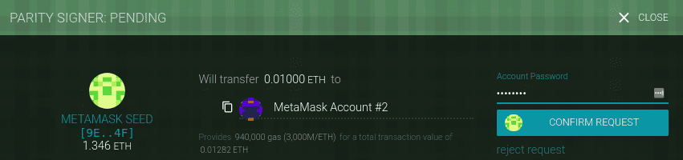
9.4.2. 有value（支付）data的交易
web3.eth.sendTransaction({from: src, to: dst, value: web3.toWei(0.01, "ether"), data: "0x1234"});我們的錢包顯示一個確認螢幕，指示要發送的value和data：
9.4.3. 0 value 的交易，只有數據
web3.eth.sendTransaction({from: src, to: dst, value: 0, data: "0x1234"});我們的錢包顯示一個確認螢幕，指示value為0並顯示data：
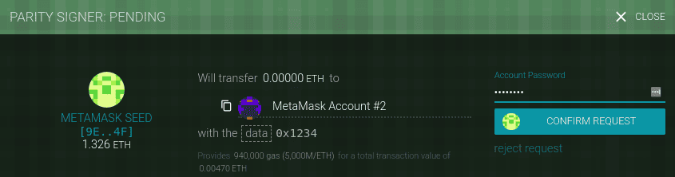
9.4.4. 既沒有value（支付）也沒有data的交易
web3.eth.sendTransaction({from: src, to: dst, value: 0, data: ""}));我們的錢包顯示確認螢幕，指示0 value並且沒有data：
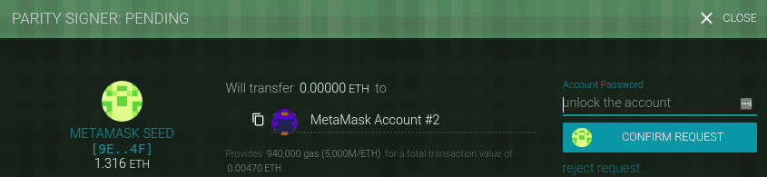
9.5. 將value傳遞給EOA和合約
當你構建包含 value 的以太坊交易時，它等同於_payment_。根據目的地址是否為合約，這些交易行為會有所不同。
對於EOA地址，或者更確切地說，對於未在區塊鏈中註冊為合約的任何地址，以太坊將記錄狀態更改，並將你發送的value添加到地址的餘額中。如果地址之前沒有被查看過，則會創建地址並將其餘額初始化為你的付款+value+。
如果目標地址（to）是合約，則EVM將執行合約並嘗試調用你的交易的 data 中指定的函數（參見 [invocation] ）。如果你的交易中沒有 data，那麼EVM將調用目標合約的 fallback 函數，如果該函數是payable，則將執行該函數以確定下一步該做什麼。
合約可以通過在調用付款功能時立即拋出異常或由付款功能中編碼的條件確定來拒絕收款。如果付款功能成功終止（沒有意外），則更新合約狀態以反映合約的ether餘額增加。
9.6. 將數據傳輸到EOA或合約
當你的交易包含+data+時，它很可能是發送到合約地址的。這並不意味著你無法向EOA發送+data+。事實上，你可以做到這一點。但是，在這種情況下，data+的解釋取決於你用來訪問EOA的錢包。大多數錢包會忽略它們控制的EOA交易中收到的任何+data。將來，可能會出現允許錢包以合約的方式解釋+data+編碼的標準，從而允許交易調用在用戶錢包內運行的函數。關鍵的區別在於，與合約執行不同，EOA對data的任何解釋都不受以太坊共識規則的約束。
現在，假設你的交易是向合約地址提供 data。在這種情況下，data 將被EVM解釋為 函數調用 function invocation，調用指定的函數並將任何編碼參數傳遞給該函數。
發送到合約的 data 是一個十六進制序列化的編碼：
- 函數選擇器（function selector）
-
函數_prototype_的Keccak256雜湊的前4個字節。這使EVM能夠明確地識別你希望調用的功能。
- 函數參數
-
函數的參數，根據EVM定義的各種基本類型的規則進行編碼。
我們來看一個簡單的例子，它來自我們的Faucet.sol : A Solidity contract implementing a faucet。在+Faucet.sol+中，我們為取款定義了一個函數：
function withdraw(uint withdraw_amount) public {
withdraw函數的_prototype_被定義為包含函數名稱的字串，隨後是括號中括起來的每個參數的數據類型，並用單個逗號分隔。函數名稱是+withdraw+，它只有一個參數是uint（它是uint256的別名）。所以+withdraw+的原型將是：
withdraw(uint256)
我們來計算這個字串的Keccak256雜湊值（我們可以使用truffle控制台或任何JavaScript web3控制台來做到這一點）：
web3.sha3("withdraw(uint256)");
'0x2e1a7d4d13322e7b96f9a57413e1525c250fb7a9021cf91d1540d5b69f16a49f'雜湊的前4個字節是 0x2e1a7d4d。這是我們的“函數選擇器”的值，它會告訴EVM我們想調用哪個函數。
接下來，讓我們計算一個值作為參數 withdraw_amount 傳遞。我們要取款0.01 ether。我們將它編碼為一個十六進制序列化的大端序無符號256位整數，以wei為單位：
withdraw_amount = web3.toWei(0.01, "ether");
'10000000000000000'
withdraw_amount_hex = web3.toHex(withdraw_amount);
'0x2386f26fc10000'現在，我們將函數選擇器添加到這個參數上（填充為32字節）：
2e1a7d4d000000000000000000000000000000000000000000000000002386f26fc10000
這就是我們的交易的 data，調用 withdraw 函數並請求0.01 ether作為 withdraw_amount。
9.7. 特殊交易：合約註冊
有一種特殊的帶有data，沒有value的交易。表示註冊一個新的合約。合約登記交易被發送到一個特殊的目的地地址，即零地址。簡而言之，合約註冊交易中的+to+欄位包含地址 0x0。該地址既不代表EOA（沒有相應的私人/公共密鑰對）也不代表合約。它永遠不會花費ether或啟動交易。它僅用作目的地，具有“註冊此合約”的特殊含義。
儘管零地址僅用於合約註冊，但它有時會收到來自各個地址的付款。對此有兩種解釋：無論是偶然的，導致ether的喪失，還是故意的_ ether燃燒_（見[burning_ether]）。如果你想進行有意識的ether燃燒，你應該向網路明確你的意圖，並使用專門指定的燃燒地址：
0x000000000000000000000000000000000000dEaD
|
發送至合約註冊地址 0x0 或指定燃燒地址 0x0 ... dEaD 的任何ether將變得不可消費並永遠丟失。 |
合約註冊交易不應包含ether value，只能包含合約編譯 Bytecode 的data。此次交易的唯一影響是註冊合約。
作為例子，我們可以發佈 [intro] 中使用的 Faucet.sol。合約需要編譯成二進制十六進制表示。這可以用Solidiy編譯器完成。
> solc --bin Faucet.sol ======= Faucet.sol:Faucet ======= Binary: 6060604052341561000f57600080fd5b60e58061001d6000396000f300606060405260043610603f576000357c0100000000000000000000000000000000000000000000000000000000900463ffffffff1680632e1a7d4d146041575b005b3415604b57600080fd5b605f60048080359060200190919050506061565b005b67016345785d8a00008111151515607757600080fd5b3373ffffffffffffffffffffffffffffffffffffffff166108fc829081150290604051600060405180830381858888f19350505050151560b657600080fd5b505600a165627a7a72305820d276ddd56041f7dc2d2eab69f01dd0a0146446562e25236cf4ba5095d2ee802f0029
相同的資訊也可以從Remix在線編譯器獲得。 現在我們可以創建交易。
> src = web3.eth.accounts[0];
> faucet_code = "0x6060604052341561000f57600080fd5b60e58061001d6000396000f300606060405260043610603f576000357c0100000000000000000000000000000000000000000000000000000000900463ffffffff1680632e1a7d4d146041575b005b3415604b57600080fd5b605f60048080359060200190919050506061565b005b67016345785d8a00008111151515607757600080fd5b3373ffffffffffffffffffffffffffffffffffffffff166108fc829081150290604051600060405180830381858888f19350505050151560b657600080fd5b505600a165627a7a72305820d276ddd56041f7dc2d2eab69f01dd0a0146446562e25236cf4ba5095d2ee802f0029"
> web3.eth.sendTransaction({from: src, data: faucet_code, gas: 113558, gasPrice: 200000000000})
"0x7bcc327ae5d369f75b98c0d59037eec41d44dfae75447fd753d9f2db9439124b"不需要指定+to+參數，將使用預設的零地址。你可以指定 gasPrice 和 gas 限制。 一旦合約被開採，我們可以在etherscan區塊瀏覽器上看到它。
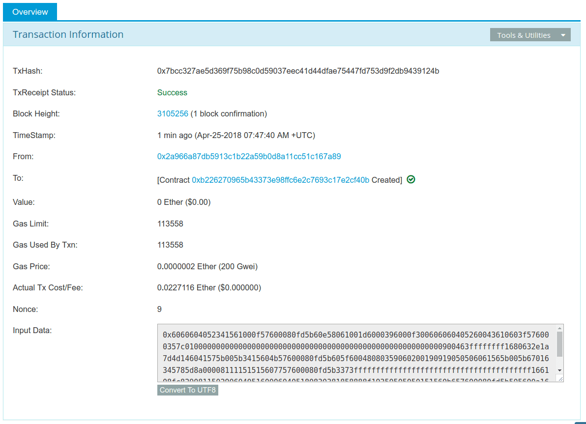
你可以查看交易的接收者以獲取有關合約的資訊。
> eth.getTransactionReceipt("0x7bcc327ae5d369f75b98c0d59037eec41d44dfae75447fd753d9f2db9439124b");
{
blockHash: "0x6fa7d8bf982490de6246875deb2c21e5f3665b4422089c060138fc3907a95bb2",
blockNumber: 3105256,
contractAddress: "0xb226270965b43373e98ffc6e2c7693c17e2cf40b",
cumulativeGasUsed: 113558,
from: "0x2a966a87db5913c1b22a59b0d8a11cc51c167a89",
gasUsed: 113558,
logs: [],
logsBloom: "0x00000000000000000000000000000000000000000000000000000000000000000000000000000000000000000000000000000000000000000000000000000000000000000000000000000000000000000000000000000000000000000000000000000000000000000000000000000000000000000000000000000000000000000000000000000000000000000000000000000000000000000000000000000000000000000000000000000000000000000000000000000000000000000000000000000000000000000000000000000000000000000000000000000000000000000000000000000000000000000000000000000000000000000000000000000000",
status: "0x1",
to: null,
transactionHash: "0x7bcc327ae5d369f75b98c0d59037eec41d44dfae75447fd753d9f2db9439124b",
transactionIndex: 0
}在這裡我們可以看到合約的地址。我們可以按照 將數據傳輸到EOA或合約 所示，從合約發送和接收資金。
> contract_address = "0xb226270965b43373e98ffc6e2c7693c17e2cf40b"
> web3.eth.sendTransaction({from: src, to: contract_address, value: web3.toWei(0.1, "ether"), data: ""});
"0x6ebf2e1fe95cc9c1fe2e1a0dc45678ccd127d374fdf145c5c8e6cd4ea2e6ca9f"
> web3.eth.sendTransaction({from: src, to: contract_address, value: 0, data: "0x2e1a7d4d000000000000000000000000000000000000000000000000002386f26fc10000"});
"0x59836029e7ce43e92daf84313816ca31420a76a9a571b69e31ec4bf4b37cd16e"過一段時間，這兩個交易都可以在ethescan上看到
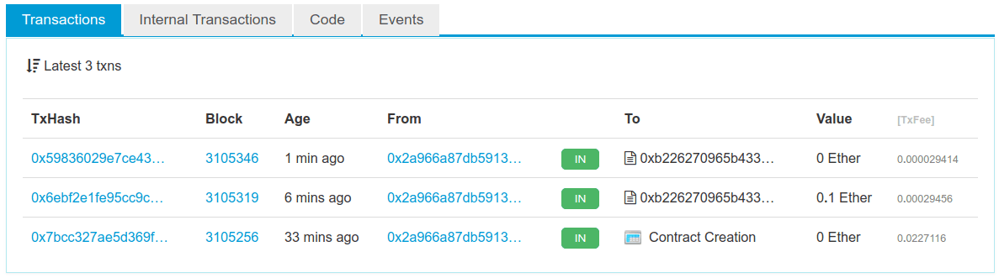
9.8. 數位簽章
到目前為止，我們還沒有深入探討“數位簽章”的細節。在本節中，我們將探討數位簽章是如何工作的,以及如何在不洩露私鑰的情況下提供私鑰所有權的證明。
9.8.1. 橢圓曲線數位簽章演算法（ECDSA）
以太坊中使用的數位簽章演算法是_Elliptic Curve Digital Signature Algorithm_，或_ECDSA_。ECDSA是用於基於橢圓曲線私鑰/公鑰對的數位簽章的演算法，如 橢圓曲線密碼學解釋 中所述。
數位簽章在以太坊中有三種用途（請參閱下面的邊欄）。首先，簽名證明私鑰的所有者，暗示著以太坊賬戶的所有者，已經授權支付ether或執行合約。其次，授權的證明是_undeniable_（不可否認）。第三，簽名證明交易數據在交易簽名後沒有也不能被任何人修改。
9.8.2. 數位簽章如何工作
數位簽章是一種數學簽名，由兩部分組成。第一部分是使用私鑰（簽名密鑰）從消息（交易）中創建簽名的演算法。第二部分是允許任何人僅使用消息和公鑰來驗證簽名的演算法。
創建數位簽章
在以太坊實現的ECDSA中，被簽名的“消息”是交易，或者更確切地說，來自交易的RLP編碼數據的Keccak256雜湊。簽名密鑰是EOA的私鑰。結果是簽名：
\(\(Sig = F_{sig}(F_{keccak256}(m), k)\)\)
其中:
-
_k_是簽名私鑰
-
_m_是RLP編碼的交易
-
Fkeccak256 是Keccak256雜湊函數
-
Fsig 是簽名演算法
-
Sig 是由此產生的簽名
更多關於ECDSA數學的細節可以在 ECDSA數學 中找到。
函數 Fsig 產生一個由兩個值組成的簽名+Sig+，通常稱為+R+和+S+：
Sig = (R, S)
9.8.3. 驗證簽名
要驗證簽名，必須有簽名（R+和+S），序列化交易和公鑰（與用於創建簽名的私鑰對應）。實質上，對簽名的驗證意味著“只有生成此公鑰的私鑰的所有者才能在此交易上產生此簽名。”
簽名驗證演算法採用消息（交易的雜湊或其部分），簽名者的公鑰和簽名（+R+和+S+值），如果簽名對此消息和公鑰有效，則返回TRUE。
9.8.4. ECDSA數學
如前所述，簽名由數學函數 Fsig 創建，該函數生成由兩個值_R_和_S_組成的簽名。在本節中，我們將更詳細地討論函數 Fsig 。
簽名演算法首先生成_ephemeral_（臨時的）私鑰/公鑰對。在涉及簽名私鑰和交易雜湊的轉換之後，此臨時密鑰對用於計算_R_和_S_值。
臨時密鑰對由兩個輸入值生成：
1.一個隨機數_q_，用作臨時私鑰 1.和橢圓曲線生成點_G_
從_q_和_G_開始，我們生成相應的臨時公鑰_Q_（以_Q = q * G_計算，與以太坊公鑰的派生方式相同，參見公鑰）。數位簽章的_R_值就是臨時公鑰_Q_的x座標。
然後，演算法計算簽名的_S_值，以便：
S ≡ q-1 (Keccak256(m) + k * R) (mod p)
其中:
-
_q_是臨時私鑰
-
_R_是臨時公鑰的x座標
-
_k_是簽名（EOA所有者）的私鑰
-
_m_是交易數據
-
_p_是橢圓曲線的質數階
驗證是簽名生成函數的反函數，使用_R_，S_值和公鑰來計算一個值_Q，它是橢圓曲線上的一個點（簽名創建中使用的臨時公鑰）：
Q ≡ S-1 * Keccak256(m) * G + S-1 * R * K (mod p)
其中:
-
_R_和_S_是簽名值
-
_K_是簽名者（EOA所有者）的公鑰
-
_m_是被簽名的交易數據
-
_G_是橢圓曲線生成點
-
_p_是橢圓曲線的質數階
如果計算的點_Q_的x座標等於_R_，則驗證者可以斷定該簽名是有效的。
請注意，在驗證簽名時，私鑰既不被知道也不會透露。
|
ECDSA必然是一門相當複雜的數學; 完整的解釋超出了本書的範圍。許多優秀的在線指南會一步一步地通過它：搜索“ECDSA explained”或嘗試這一個：http://bit.ly/2r0HhGB[]。 |
9.8.5. 實踐中的交易簽名
為了產生有效的交易，發起者必須使用橢圓曲線數位簽章演算法將數位簽章應用於消息。當我們說“簽署交易”時，我們實際上是指“簽署RLP序列化交易數據的Keccak256雜湊”。簽名應用於交易數據的雜湊，而不是交易本身。
|
在＃2,675,000塊，Ethereum實施了“Spurious Dragon”硬分叉，除其他更改外，還推出了包括交易重播保護的新簽名方案。這個新的簽名方案在EIP-155中指定（參見[eip155]）。此更改會影響簽名過程的第一步，在簽名之前向交易添加三個欄位（v，r，s）。 |
要在以太坊簽署交易，發件人必須：
-
創建一個包含九個欄位的交易資料結構：nonce，gasPrice，startGas，to，value，data，v，r，s
-
生成交易的RLP編碼的序列化消息
-
計算此序列化消息的Keccak256雜湊
-
計算ECDSA簽名，用發起EOA的私鑰簽名雜湊
-
在交易中插入ECDSA簽名計算出的 r 和 s 值
9.8.6. 原始交易創建和簽名
讓我們創建一個原始交易並使用 ethereumjs-tx 庫對其進行簽名。此範例的源程式碼位於GitHub儲存庫中的 raw_tx_demo.js 中：
// Load requirements first:
//
// npm init
// npm install ethereumjs-tx
//
// Run with: $ node raw_tx_demo.js
const ethTx = require('ethereumjs-tx');
const txData = {
nonce: '0x0',
gasPrice: '0x09184e72a000',
gasLimit: '0x30000',
to: '0xb0920c523d582040f2bcb1bd7fb1c7c1ecebdb34',
value: '0x00',
data: '',
v: "0x1c", // Ethereum main net chainID
r: 0,
s: 0
};
tx = new ethTx(txData);
console.log('RLP-Encoded Tx: 0x' + tx.serialize().toString('hex'))
txHash = tx.hash(); // This step encodes into RLP and calculates the hash
console.log('Tx Hash: 0x' + txHash.toString('hex'))
// Sign transaction
const privKey = Buffer.from('91c8360c4cb4b5fac45513a7213f31d4e4a7bfcb4630e9fbf074f42a203ac0b9', 'hex');
tx.sign(privKey);
serializedTx = tx.serialize();
rawTx = 'Signed Raw Transaction: 0x' + serializedTx.toString('hex');
console.log(rawTx)
運行範例程式碼：
$ node raw_tx_demo.js RLP-Encoded Tx: 0xe6808609184e72a0008303000094b0920c523d582040f2bcb1bd7fb1c7c1ecebdb348080 Tx Hash: 0xaa7f03f9f4e52fcf69f836a6d2bbc7706580adce0a068ff6525ba337218e6992 Signed Raw Transaction: 0xf866808609184e72a0008303000094b0920c523d582040f2bcb1bd7fb1c7c1ecebdb3480801ca0ae236e42bd8de1be3e62fea2fafac7ec6a0ac3d699c6156ac4f28356a4c034fda0422e3e6466347ef6e9796df8a3b6b05bed913476dc84bbfca90043e3f65d5224
9.8.7. 用EIP-155創建原始交易
EIP-155“簡單重播攻擊保護”標準在簽名之前指定了重播攻擊保護（replay-attack-protected）的交易編碼，其中包括交易數據中的_chain identifier_。這確保了為一個區塊鏈（例如以太坊主網）創建的交易在另一個區塊鏈（例如Ethereum Classic或Ropsten測試網路）上無效。因此，在一個網路上廣播的交易不能在另一個網路上廣播，因此得名“重放攻擊保護”。
EIP-155向交易資料結構添加了三個欄位 v，r+和+s。r+和+s 欄位被初始化為零。這三個欄位在編碼和雜湊_之前_被添加到交易數據中。因此，三個附加欄位會更改交易的雜湊，稍後將應用簽名。通過在被簽名的數據中包含鏈識別碼，交易簽名可以防止任何更改，因為如果鏈識別碼被修改，簽名將失效。因此，EIP-155使交易無法在另一個鏈上重播，因為簽名的有效性取決於鏈識別碼。
簽名前綴欄位+v+被初始化為鏈識別碼，其值為：
Chain |
Chain ID |
|
Ethereum main net |
1 |
|
Morden (obsolete), Expanse |
2 |
|
Ropsten |
3 |
|
Rinkeby |
4 |
|
Rootstock main net |
30 |
|
Rootstock test net |
31 |
|
Kovan |
42 |
|
Ethereum Classic main net |
61 |
|
Ethereum Classic test net |
62 |
|
Geth private testnets |
1337 |
由此產生的交易結構被進行RLP編碼，雜湊和簽名。簽名演算法也稍作修改，以在+v+前綴中對鏈ID進行編碼。
有關更多詳細資訊，請參閱EIP-155規範： https://github.com/ethereum/EIPs/blob/master/EIPS/eip-155.md
9.9. 簽名前綴值（v）和公鑰恢復
如交易的結構所述，交易消息不包含任何“from”欄位。這是因為發起者的公鑰可以直接從ECDSA簽名中計算出來。一旦你有公鑰，你可以很容易地計算出地址。恢復簽名者公鑰的過程稱為_公鑰恢復_。
給定 ECDSA數學 中計算的值 r 和 s，我們可以計算兩個可能的公鑰。
首先，我們根據簽名中的x座標 r 值計算兩個橢圓曲線點R和R'。有個兩點，因為橢圓曲線在x軸上是對稱的，所以對於任何值+x+，在x軸的兩側有兩個可能的值適合曲線。
從 r 開始，我們也計算r-1這是 r 的倒數。
最後我們計算 z，它是消息雜湊的最低位，其中n是橢圓曲線的階數。
然後兩個可能的公鑰是：
K1 = r-1 (sR - zG)
和
K2 = r-1 (sR' - zG)
其中:
-
K1 和 K2 是簽名者公鑰的兩種可能性
-
r-1是簽名的+r+值的倒數
-
s是簽名的+s+值
-
R和R'是臨時公鑰_Q_的兩種可能性
-
z是消息雜湊的最低位
-
G是橢圓曲線生成點
為了使事情更有效率，交易簽名包括一個前綴值 v，它告訴我們兩個可能的R值中哪一個是臨時的公鑰。如果 v 是偶數，那麼R是正確的值。如果 v 是奇數，那麼選擇R'。這樣，我們只需要計算R的一個值。
9.10. 分離簽名和傳輸（離線簽名）
一旦交易被簽署，它就可以傳送到以太坊網路。創建，簽署和廣播交易的三個步驟通常發生在單個函數中，例如使用+web3.eth.sendTransaction+。但是，正如我們在原始交易創建和簽名中看到的那樣，你可以通過兩個單獨的步驟創建和簽署交易。一旦你簽署了交易記錄，你就可以使用+web3.eth.sendSignedTransaction+傳輸該交易記錄，該方法採用十六進制編碼的簽名交易資訊並在Ethereum網路上傳輸。
你為什麼要分開交易的簽署和傳輸？最常見的原因是安全：簽名交易的計算機必須將解鎖的私鑰加載到記憶體中。傳輸的計算機必須連接到互聯網並運行以太坊客戶端。如果這兩個功能都在一臺計算機上，那麼你的在線系統上有私鑰，這非常危險。分離簽名和傳輸功能稱為 離線簽名 offline signing，是一種常見的安全措施。
根據你所需的安全級別，你的“離線簽名”計算機可能與在線計算機存在不同程度的分離，從隔離和防火牆子網（在線但隔離）到完全脫機系統，成為 氣隙 _air-gapped_系統 。在氣隙系統中根本沒有網路連接 - 計算機與在線環境是“空氣”隔離的。使用數據儲存介質或（更好）網路攝像頭和QR碼將交易記錄到氣隙計算機上，以簽署交易。當然，這意味著你必須手動傳輸你想要簽名的每個交易，不能批量化。
儘管沒有多少環境可以利用完全氣隙系統，但即使是小程度的隔離也具有顯著的安全優勢。例如，帶防火牆的隔離子網只允許通過消息隊列協議，可以提供大大降低的攻擊面，並且比在線系統上簽名的安全性高得多。許多公司使用諸如ZeroMQ（0MQ）的協議，因為它為簽名計算機提供了減少的攻擊面。有了這樣的設置，交易就被序列化並排隊等待簽名。排隊協議以類似於TCP套接字的方式將序列化的消息發送到簽名計算機。簽名計算機從隊列中讀取序列化的交易（仔細地），使用適當的密鑰應用簽名，並將它們放置在傳出隊列中。傳出隊列將簽名的交易傳輸到使用Ethereum客戶端的計算機上，客戶端將這些交易出隊並傳輸。
9.11. 交易傳播
以太坊網路使用“泛洪”路由協議。每個以太坊客戶端，在_Peer-to-Peer（P2P）中作為_node，（理想情況下）構成_mesh_網路。沒有網路節點是“特殊的”，它們都作為平等的對等體。我們將使用術語“節點”來指代連接並參與P2P網路的以太坊客戶端。
交易傳播開始於創建（或從離線接收）簽名交易的以太坊節點。交易被驗證，然後傳送到_直接_連接到始發節點的所有其他以太坊節點。平均而言，每個以太坊節點保持與至少13個其他節點的連接，稱為_鄰居_。每個鄰居節點在收到交易後立即驗證交易。如果他們同意這是有效的，他們會保存一份副本並將其傳播給所有的鄰居（除了它的鄰居）。結果，交易從始發節點向外漣漪式地遍歷網路，直到網路中的所有節點都擁有交易的副本。
幾秒鐘內，以太坊交易就會傳播到全球所有以太坊節點。從每個節點的角度來看，不可能辨別交易的起源。發送給我們節點的鄰居可能是交易的發起者，或者可能從其鄰居那裡收到它。為了能夠跟蹤交易的起源或干擾傳播，攻擊者必須控制所有節點的相當大的百分比。這是P2P網路安全和隱私設計的一部分，尤其適用於區塊鏈。
9.12. 記錄到區塊鏈中
雖然以太坊中的所有節點都是相同的對等節點，但其中一些節點由_礦工_操作，並將交易和數據塊提供給_挖礦農場_，這些節點是具有高性能圖形處理單元（GPU）的計算機。挖掘計算機將交易添加到候選塊，並嘗試查找使得候選塊有效的_Proof-of-Work_。我們將在[consensus]中更詳細地討論這一點。
不深入太多細節，有效的交易最終將被包含在一個交易塊中，並記錄在以太坊區塊鏈中。一旦開採成塊，交易還通過修改賬戶餘額（在簡單付款的情況下）或通過調用改變其內部狀態的合約來修改以太坊單例的狀態。這些更改將與交易一起以交易_收據_ receipt 的形式記錄，該交易也可能包含_事件_ events。我們將在 [evm] 中更詳細地檢查所有這些。
我們的交易已經完成了從創建到被EOA簽署，傳播以及最終採礦的旅程。它改變了單例的狀態，並在區塊鏈上留下了不可磨滅的印記。
9.13. 多重簽名（multisig）交易
如果你熟悉比特幣的腳本功能，那麼你就知道有可能創建一個比特幣多重簽名賬戶，該賬戶只能在多方簽署交易時花費資金（例如2個或3個或4個簽名）。以太坊的價值交易沒有多重簽名的規定，儘管可以部署任意條件的任意合約來處理ether和代幣的轉讓。
為了在多重簽名情況下保護你的ether，將它們轉移到多重簽名合約中。無論何時你想將資金轉入其他賬戶，所有必需的用戶都需要使用常規錢包軟體將交易發送至合約，從而有效授權合約執行最終交易。
這些合約也可以設計為在執行本地程式碼或觸發其他合約之前需要多個簽名。該方案的安全性最終由多重簽名合約程式碼確定。
10. 智能合約
我們在 [intro] 中發現，以太坊有兩種不同類型的帳戶：外部擁有帳戶（EOAs）和合約帳戶。EOAs由以太坊以外的軟體（如錢包應用程式）控制。合約帳戶由在以太坊虛擬機（EVM）內運行的軟體控制。兩種類型的帳戶都通過以太坊地址標識。在本節中，我們將討論第二種類型，合約帳戶和控制它們的軟體：智能合約。
10.1. 什麼是智能合約？
術語_smart contract_已被用於描述各種不同的事物。在二十世紀九十年代，密碼學家Nick Szabo提出了這個術語，並將其定義為“一組以數字形式規定的承諾，包括各方在其他承諾中履行的協議”。自那時以來，智能合約的概念得到了發展，尤其是在2009年比特幣發明引入了去中心化區塊鏈之後。在本書中，我們使用術語“智能合約”來指代在Ethereum虛擬機環境中確定性的運行的不可變的計算機程式，該虛擬機作為一個去中心化的世界計算機而運轉。
讓我們拆解這個定義：
計算機程式：智能合約只是計算機程式。合約這個詞在這方面沒有法律意義。 不可變的：一旦部署，智能合約的程式碼不能改變。與傳統軟體不同，修改智能合約的唯一方法是部署新實例。 確定性的：智能合約的結果對於運行它的每個人來說都是一樣的，包括調用它們的交易的上下文，以及執行時以太坊區塊鏈的狀態。 EVM上下文：智能合約以非常有限的執行上下文運行。他們可以訪問自己的狀態，調用它們的交易的上下文以及有關最新塊的一些資訊。 去中心化的世界計算機：EVM在每個以太坊節點上作為本地實例運行，但由於EVM的所有實例都在相同的初始狀態下運行併產生相同的最終狀態，因此整個系統作為單臺世界計算機運行。
10.2. 智能合約的生命週期
智能合約通常以高階語言編寫，例如Solidity。但為了運行，必須將它們編譯為EVM中運行的低級 Bytecode （請參見 [evm]）。一旦編譯完成，它們就會隨著轉移到特殊的合約創建地址的交易被部署到以太坊區塊鏈中。每個合約都由以太坊地址標識，該地址源於作為發起帳戶和隨機數的函數的合約創建交易。合約的以太坊地址可以在交易中用作接收者，可將資金發送到合約或調用合約的某個功能。
重要的是，如果合約只有被交易調用時才會運行。以太坊的所有智能合約均由EOA發起的交易執行。合約可以調用另一個合約，其中又可以調用另一個合約，等等。但是這種執行鏈中的第一個合約必須始終由EOA的交易調用。合約永遠不會“自行”運行，或“在後臺運行”。在交易觸發執行，直接或間接地作為合約調用鏈的一部分之前，合約在區塊鏈上實際上是“休眠”的。
交易是 原子性的 atomic，無論他們調用多少合約或這些合約在被調用時執行的是什麼。交易完全執行，僅在交易成功終止時記錄全局狀態（合約，帳戶等）的任何更改。成功終止意味著程式執行時沒有錯誤並且達到執行結束。如果交易由於錯誤而失敗，則其所有效果（狀態變化）都會“回滾”，就好像交易從未運行一樣。失敗的交易仍儲存在區塊鏈中，並從原始帳戶扣除gas成本，但對合約或帳戶狀態沒有其他影響。
合約的程式碼不能更改。然而合約可以被“刪除”，從區塊鏈上刪除程式碼和它的內部狀態（變數）。要刪除合約，你需要執行稱為 SELFDESTRUCT（以前稱為 SUICIDE ）的EVM操作碼，該操作碼將區塊鏈中的合約移除。該操作花費“負的gas”，從而激勵儲存狀態的釋放。以這種方式刪除合約不會刪除合約的交易歷史（過去），因為區塊鏈本身是不可變的。但它確實會從所有未來的區塊中移除合約狀態。
10.3. 以太坊高階語言簡介
EVM是一臺虛擬計算機，運行一種特殊形式的 機器程式碼 ，稱為_EVM Bytecode _，就像你的計算機CPU運行機器程式碼x86_64一樣。我們將在 [evm] 中更詳細地檢查EVM的操作和語言。在本節中，我們將介紹如何編寫智能合約以在EVM上運行。
雖然可以直接在 Bytecode 中編寫智能合約。EVM Bytecode 非常笨重，開發者難以閱讀和理解。相反，大多數以太坊開發人員使用高級符號語言編寫程式和編譯器，將它們轉換為 Bytecode 。
雖然任何高階語言都可以用來編寫智能合約，但這是一項非常繁瑣的工作。智能合約在高度約束和簡約的執行環境（EVM）中運行，幾乎所有通常的用戶界面，作業系統界面和硬體界面都是缺失的。從頭開始構建一個簡約的智能合約語言要比限制通用語言並使其適用於編寫智能合約更容易。因此，為編程智能合約出現了一些專用語言。以太坊有幾種這樣的語言，以及產生EVM可執行 Bytecode 所需的編譯器。
一般來說，程式語言可以分為兩種廣泛的編程範式：分別是宣告式和命令式，也分別稱為“函數式”和“過程式”。在宣告式編程中，我們編寫的函數表示程式的 邏輯 logic，而不是 流程 flow。宣告式編程用於創建沒有 副作用 side effects 的程式，這意味著在函數之外沒有狀態變化。宣告式程式語言包括Haskell，SQL和HTML等。相反，命令式編程就是開發者編寫一套程式的邏輯和流程結合在一起的程式。命令式程式語言包括例如BASIC，C，C++和Java。有些語言是“混合”的，這意味著他們鼓勵宣告式編程，但也可以用來表達一個必要的編程範式。這樣的混合體包括Lisp，Erlang，Prolog，JavaScript和Python。一般來說，任何命令式語言都可以用來在宣告式的範式中編寫，但它通常會導致不雅的程式碼。相比之下，純粹的宣告式語言不能用來寫入一個命令式的範例。在純粹的宣告式語言中，沒有“變數”。
雖然命令式編程更易於編寫和讀取，並且開發者更常用，但編寫按預期方式 準確 執行的程式可能非常困難。程式的任何部分改變狀態的能力使得很難推斷程式的執行，並引入許多意想不到的副作用和錯誤。相比之下，宣告式編程更難以編寫，但避免了副作用，使得更容易理解程式的行為。
智能合約給開發者帶來了很大的負擔：錯誤會花費金錢。因此，編寫不會產生意想不到的影響的智能合約至關重要。要做到這一點，你必須能夠清楚地推斷程式的預期行為。因此，宣告式語言在智能合約中比在通用軟體中扮演更重要的角色。不過，正如你將在下面看到的那樣，最豐富的智能合約語言是命令式的（Solidity）。
智能合約的高級程式語言包括（按大概的年齡排序）：
- LLL
-
一種函數式（宣告式）程式語言，具有類似Lisp的語法。這是以太坊智能合約的第一個高階語言，但今天很少使用。
- Serpent
-
一種過程式（命令式）程式語言，其語法類似於Python。也可以用來編寫函數式（宣告式）程式碼，儘管它並不完全沒有副作用。很少被使用。最早由Vitalik Buterin創建。
- Solidity
-
具有類似於JavaScript，C ++或Java語法的過程式（命令式）程式語言。以太坊智能合約中最流行和最常用的語言。最初由Gavin Wood（本書的合著者）創作。
- Vyper
-
最近開發的語言，類似於Serpent，並且具有類似Python的語法。旨在成為比Serpent更接近純粹函數式的類Python語言，但不能取代Serpent。最早由Vitalik Buterin創建。
- Bamboo
-
一種新開發的語言，受Erlang影響，具有明確的狀態轉換並且沒有迭代流（迴圈）。旨在減少副作用並提高可審計性。非常新，很少使用。
如你所見，有很多語言可供選擇。然而，在所有這些中，Solidity是迄今為止最受歡迎的，以至於成為了以太坊甚至是其他類似EVM的區塊鏈的事實上的高階語言。我們將花大部分時間使用Solidity，但也會探索其他高階語言的一些例子，以瞭解其不同的哲學。
10.4. 用Solidity構建智能合約
來自維基百科：
Solidity是編寫智能合約的“面向合約的”程式語言。它用於在各種區塊鏈平臺上實施智能合約。它由Gavin Wood，Christian Reitwiessner，Alex Beregszaszi，Liana Husikyan，Yoichi Hirai和幾位以前的以太坊核心貢獻者開發，以便在區塊鏈平臺（如以太坊）上編寫智能合約。
Solidity由GitHub上的Solidity項目開發團隊開發並維護：
Solidity項目的主要“產品”是_Solidity Compiler（solc）_，它將用Solidity語言編寫的程式轉換為EVM Bytecode ，並生成其他製品，如應用程式二進制接口（ABI）。Solidity編譯器的每個版本都對應於並編譯Solidity語言的特定版本。
要開始，我們將下載Solidity編譯器的二進制可執行檔案。然後我們會編寫一個簡單的合約。
10.4.1. 選擇一個Solidity版本
Solidity遵循一個稱為_semantic versioning_（https://semver.org/）的版本模型，該模型指定版本號結構為由點分隔的三個數字：MAJOR.MINOR.PATCH。"major"用於對主要的和“向前不兼容”的更改的遞增，“minor”在主要版本之間添加“向前兼容功能“時遞增，“patch”表示錯誤修復和安全相關的更改。
目前，Solidity的版本是+0.4.21+，其中+0.4+是主要版本，21是次要版本，之後指定的任何內容都是補丁版本。Solidity的0.5版本主要版本即將推出。
正如我們在[intro]中看到的那樣，你的Solidity程式可以包含一個+pragma+指令，用於指定與之兼容的Solidity的最小和最大版本，並且可用於編譯你的合約。
由於Solidity正在快速發展，最好始終使用最新版本。
10.4.2. 下載/安裝
有許多方法可以用來下載和安裝Solidity，無論是作為二進制發行版還是從源程式碼編譯。你可以在Solidity文件中找到詳細的說明：
在Installing solc on Ubuntu/Debian with apt package manager中，我們將使用 apt package manager 在Ubuntu/Debian作業系統上安裝Solidity的最新二進制版本：
$ sudo add-apt-repository ppa:ethereum/ethereum
$ sudo apt update
$ sudo apt install solc一旦你安裝了 solc，運行以下命令來檢查版本：
$ solc --version solc, the solidity compiler commandline interface Version: 0.4.21+commit.dfe3193c.Linux.g++
根據你的作業系統和要求，還有許多其他方式可以安裝Solidity，包括直接從源程式碼編譯。有關更多資訊，請參閱
10.4.3. 開發環境
要在Solidity中開發，你可以在命令行上使用任何文字編輯器和+solc+。但是，你可能會發現為開發而設計的一些文字編輯器（例如Atom）提供了附加功能，如語法突出顯示和宏，這些功能使Solidity開發變得更加簡單。
還有基於Web的開發環境，如Remix IDE（https://remix.ethereum.org/）和EthFiddle（https://ethfiddle.com/）。
使用可以提高生產力的工具。最後，Solidity程式只是純文字檔案。雖然花哨的編輯器和開發環境可以讓事情變得更容易，但除了簡單的文字編輯器（如vim（Linux / Unix），TextEdit（MacOS）甚至NotePad（Windows）），你無需任何其他東西。只需將程式源程式碼保存為+.sol+擴展名即可，Solidity編譯器將其識別為Solidity程式。
10.4.4. Writing a simple Solidity program
在[intro]中，我們編寫了我們的第一個Solidity程式，名為+Faucet+。當我們第一次構建+Faucet+時，我們使用Remix IDE來編譯和部署合約。在本節中，我們將重新查看，改進和修飾+Faucet+。
我們的第一次嘗試是這樣的：
1
2
3
4
5
6
7
8
9
10
11
12
13
14
15
16
17
// Our first contract is a faucet!
contract Faucet {
// Give out ether to anyone who asks
function withdraw(uint withdraw_amount) public {
// Limit withdrawal amount
require(withdraw_amount <= 100000000000000000);
// Send the amount to the address that requested it
msg.sender.transfer(withdraw_amount);
}
// Accept any incoming amount
function () public payable {}
}
從 [make_it_better] 開始，我們將在第一個範例的基礎上構建。
10.4.5. 用Solidity編譯器（solc）編譯
現在，我們將使用命令行上的Solidity編譯器直接編譯我們的合約。Solidity編譯器+solc+提供了多種選項，你可以通過+--help+參數來查看。
我們使用+solc+的 --bin 和 --optimize 參數來生成我們範例合約的優化二進制檔案：
$ solc --optimize --bin Faucet.sol ======= Faucet.sol:Faucet ======= Binary: 6060604052341561000f57600080fd5b60cf8061001d6000396000f300606060405260043610603e5763ffffffff7c01000000000000000000000000000000000000000000000000000000006000350416632e1a7d4d81146040575b005b3415604a57600080fd5b603e60043567016345785d8a0000811115606357600080fd5b73ffffffffffffffffffffffffffffffffffffffff331681156108fc0282604051600060405180830381858888f19350505050151560a057600080fd5b505600a165627a7a723058203556d79355f2da19e773a9551e95f1ca7457f2b5fbbf4eacf7748ab59d2532130029
+solc+產生的結果是一個可以提交給以太坊區塊鏈的十六進制序列化二進制檔案。
10.5. 以太坊合約應用程式二進制接口（ABI）
在計算機軟體中，應用程式二進制接口（ABI）是兩個程式模塊之間的接口；通常，一個在機器程式碼級別，另一個在用戶運行的程式級別。ABI定義了如何在*機器碼*中訪問資料結構和功能；不要與API混淆，API以高級的，通常是人類可讀的格式將訪問定義為*源程式碼*。因此，ABI是將數據編碼到機器碼，和從機器碼解碼數據的主要方式。
在以太坊中，ABI用於編碼EVM的合約調用，並從交易中讀取數據。ABI的目的是定義合約中的哪些函數可以被調用，並描述函數如何接受參數並返回數據。
合約ABI的JSON格式由一系列函數描述（參見[solidity_functions]）和事件（參見[solidity_events]）的陣列給出。函數描述是一個JSON物件，它包含`type`，name，inputs，outputs，constant`和`payable`欄位。事件描述物件具有`type，name，`inputs`和`anonymous`的欄位。
我們使用+solc+命令行Solidity編譯器為我們的+Faucet.sol+範例合約生成ABI：
solc --abi Faucet.sol
======= Faucet.sol:Faucet =======
Contract JSON ABI
[{"constant":false,"inputs":[{"name":"withdraw_amount","type":"uint256"}],"name":"withdraw","outputs":[],"payable":false,"stateMutability":"nonpayable","type":"function"},{"payable":true,"stateMutability":"payable","type":"fallback"}]
如你所見，編譯器會生成一個描述由 Faucet.sol 定義的兩個函數的JSON物件。這個JSON物件可以被任何希望在部署時訪問 Faucet 合約的應用程式使用。使用ABI，應用程式（如錢包或DApp瀏覽器）可以使用正確的參數和參數類型構造調用 Faucet 中的函數的交易。例如，錢包會知道要調用函數+withdraw+，它必須提供名為 withdraw_amount 的 uint256 參數。錢包可以提示用戶提供該值，然後創建一個編碼它並執行+withdraw+功能的交易。
應用程式與合約進行交互所需的全部內容是ABI以及合約的部署地址。
10.5.1. 選擇Solidity編譯器和語言版本
正如我們在 Compiling Faucet.sol with solc 中看到的，我們的 Faucet 合約在Solidity 0.4.21版本中成功編譯。但是如果我們使用了不同版本的Solidity編譯器呢？語言仍然不斷變化，事情可能會以意想不到的方式發生變化。我們的合約非常簡單，但如果我們的程式使用了僅添加到Solidity版本+0.4.19+中的功能，並且我們嘗試使用+0.4.18+進行編譯，該怎麼辦？
為了解決這些問題，Solidity提供了一個_compiler指令_，稱為_version pragma_，指示編譯器程式需要特定的編譯器（和語言）版本。我們來看一個例子：
pragma solidity ^0.4.19;
Solidity編譯器讀取版本編譯指示，如果編譯器版本與版本編譯指示不兼容，將會產生錯誤。在這種情況下，我們的版本編譯指出，這個程式可以由Solidity編譯器編譯，最低版本為+0.4.19+。但是，符號^表示我們允許編譯任何_minor修訂版_在+0.4.19+之上的，例如+0.4.20+，但不是+0.5.0+（這是一個主要版本，不是小修訂版） 。Pragma指令不會編譯為EVM Bytecode 。它們僅由編譯器用來檢查兼容性。
讓我們在我們的 Faucet 合約中添加一條編譯指示。我們將命名新檔案 Faucet2.sol，以便在我們繼續處理這些範例時跟蹤我們的更改：
1
2
3
4
5
6
7
8
9
10
11
12
13
14
15
16
17
18
19
20
// Version of Solidity compiler this program was written for
pragma solidity ^0.4.19;
// Our first contract is a faucet!
contract Faucet {
// Give out ether to anyone who asks
function withdraw(uint withdraw_amount) public {
// Limit withdrawal amount
require(withdraw_amount <= 100000000000000000);
// Send the amount to the address that requested it
msg.sender.transfer(withdraw_amount);
}
// Accept any incoming amount
function () public payable {}
}
添加版本 pragma 是最佳實踐，因為它避免了編譯器和語言版本不匹配的問題。我們將探索其他最佳實踐，並在本章中繼續改進+Faucet+合約。
10.6. 使用Solidity編程
在本節中，我們將看看Solidity語言的一些功能。正如我們在 [intro] 中提到的，我們的第一份合約範例非常簡單，並且在許多方面也存在缺陷。我們將逐漸改進這個例子，同時學習如何使用Solidity。然而，這不會是一個全面的Solidity教程，因為Solidity相當複雜且快速發展。我們將介紹基礎知識，併為你提供足夠的基礎，以便能夠自行探索其餘部分。Solidity的完整文件可以在以下網址找到：
10.6.1. 數據類型
首先，我們來看看Solidity中提供的一些基本數據類型：
- boolean (bool)
-
布林值, true 或 false, 以及邏輯操作符 ! (not), && (and), || (or), == (equal), != (not equal).
- 整數 (int/uint)
-
有符號 (int) 和 無符號 (uint) 整數，從 u/int8 到 u/int256以 8 bits 遞增，沒有大小後綴的話，表示256 bits。
- 定點數 (fixed/ufixed)
-
定點數, 定義為 u/fixedMxN，其中 M 是位大小（以8遞增），N 是小數點後的十進制數的個數。
- 地址
-
20字節的以太坊地址。address 物件有 balance (返回帳戶的餘額) 和 transfer (轉移 ether 到該帳戶) 成員方法。
- 字節陣列（定長）
-
固定大小的字節陣列，定義為+bytes1+到+bytes32+。
- 字節陣列 (動態)
-
動態大小的字節陣列，定義為+bytes+或+string+。
- enum
-
枚舉離散值的用戶定義類型。
- struct
-
包含一組變數的用戶定義的數據容器。
- mapping
-
+key ⇒ value+對的雜湊查找表。
除上述數據類型外，Solidity還提供了多種可用於計算不同單位的字面值：
- 時間單位
-
seconds, minutes, hours, 和 days 可用作後綴，轉換為基本單位 seconds 的倍數。
- 以太的單位
-
wei, finney, szabo, 和 ether 可用作後綴, 轉換為基本單位 wei 的倍數。
到目前為止，在我們的+Faucet+合約範例中，我們使用+uint+（這是+uint256+的別名），用於+withdraw_amount+變數。我們還間接使用了+address+變數，它是+ msg.sender+。在本章中，我們將在範例中使用更多數據類型。
讓我們使用單位的倍數之一來提高範例合約+Faucet+的可讀性。在+withdraw+函數中，我們限制最大提現額，將數量限制表示為+wei+，以太的基本單位：
require(withdraw_amount <= 100000000000000000);
這不是很容易閱讀，所以我們可以通過使用單位倍數 ether 來改進我們的程式碼，以ether而不是wei表示值：
require(withdraw_amount <= 0.1 ether);
10.6.2. 預定義的全域變數和函數
在EVM中執行合約時，它可以訪問一組較小範圍內的全局物件。這些包括 block，msg 和 tx 物件。另外，Solidity公開了許多EVM操作碼作為預定義的Solidity功能。在本節中，我們將檢查你可以從Solidity的智能合約中訪問的變數和函數。
調用交易/消息上下文
- msg
-
+msg+物件是啟動合約執行的交易（源自EOA）或消息（源自合約）。它包含許多有用的屬性：
- msg.sender
-
我們已經使用過這個。它代表發起消息的地址。如果我們的合約是由EOA交易調用的，那麼這是簽署交易的地址。
- msg.value
-
與消息一起發送的以太網值。
- msg.gas
-
調用我們的合約的消息中留下的gas量。它已經被棄用，並將被替換為Solidity v0.4.21中的gasleft()函數。
- msg.data
-
調用合約的消息中的數據。
- msg.sig
-
數據的前四個字節，它是函數選擇器。
|
每當合約調用另一個合約時，msg+的所有屬性的值都會發生變化，以反映新的調用者的資訊。唯一的例外是在原始+msg+上下文中運行另一個合約/庫的程式碼的 +delegatecall 函數。 |
交易上下文
- tx.gasprice
-
發起調用的交易中的gas價格。
- tx.origin
-
源自（EOA）的交易的完整調用堆疊。
區塊上下文
- block
-
包含有關當前塊的資訊的塊物件。
- block.blockhash(blockNumber)
-
指定塊編號的塊的雜湊，直到之前的256個塊。已棄用，並使用Solidity v.0.4.22中的+blockhash()+函數替換。
- block.coinbase
-
當前塊的礦工地址。
- block.difficulty
-
當前塊的難度（Proof-of-Work）。
- block.gaslimit
-
當前塊的區塊gas限制。
- block.number
-
當前塊號（高度）。
- block.timestamp
-
礦工在當前塊中放置的時間戳，自Unix紀元（秒）開始。
地址物件
任何地址（作為輸入傳遞或從合約物件轉換而來）都有一些屬性和方法：
- address.balance
-
地址的餘額，以wei為單位。例如，當前合約餘額是 address(this).balance。
- address.transfer(amount)
-
將金額（wei）轉移到該地址，並在發生任何錯誤時拋出異常。我們在+Faucet+範例中的+msg.sender+地址上使用了此函數，msg.sender.transfer()。
- address.send(amount)
-
類似於前面的+transfer+, 但是失敗時不拋出異常，而是返回+false+。
- address.call()
-
低級調用函數，可以用+value+，data+構造任意消息。錯誤時返回+false。
- address.delegatecall()
-
低級調用函數，保持發起調用的合約的+msg+上下文，錯誤時返回+false+。
內建函數
- addmod, mulmod
-
模加法和乘法。例如，addmod(x,y,k) 計算 (x + y) % k。
- keccak256, sha256, sha3, ripemd160
-
用各種標準雜湊演算法計算雜湊值的函數。
- ecrecover
-
從簽名中恢復用於簽署消息的地址。
10.6.3. 合約的定義
Solidity的主要數據類型是_contract_物件，它在我們的+Faucet+範例的頂部定義。與面嚮物件語言中的任何物件類似，合約是一個包含數據和方法的容器。
Solidity提供了另外兩個與合約類似的物件：
- interface
-
接口定義的結構與合約完全一樣，只不過沒有定義函數，它們只是宣告。這種類型的函數宣告通常被稱為 樁 stub，因為它告訴你有關函數的參數和返回值，沒有任何實現。它用來指定合約接口，如果繼承，每個函數都必須在子類中指定。
- library
-
一個庫合約是一個只能部署一次並被其他合約使用的合約，使用+delegatecall+方法（見地址物件）。
10.6.4. 函數
在合約中，我們定義了可以由EOA交易或其他合約調用的函數。在我們的+Faucet+範例中，我們有兩個函數：+withdraw+和（未命名的）_fallback_函數。
函數使用以下語法定義：
function FunctionName([parameters]) {public|private|internal|external} [pure|constant|view|payable] [modifiers] [returns (<return types>)]
我們來看看每個組件：
- FunctionName
-
定義函數的名稱，用於通過交易（EOA），其他合約或同一合約調用函數。每個合約中的一個功能可以定義為不帶名稱的，在這種情況下，它是_fallback_函數，在沒有指定其他函數時調用該函數。fallback函數不能有任何參數或返回任何內容。
- parameters
-
在名稱後面，我們指定必須傳遞給函數的參數，包括名稱和類型。在我們的+Faucet+範例中，我們將+uint withdraw_amount+定義為+withdraw+函數的唯一參數。
下一組關鍵字 (public, private, internal, external) 指定了函數的_可見性_：
- public
-
Public是預設的，這些函數可以被其他合約，EOA交易或合約內部調用。在我們的+Faucet+範例中，這兩個函數都被定義為public。
- external
-
外部函數就像public一樣，但除非使用關鍵字this作為前綴，否則它們不能從合約中調用。
- internal
-
內部函數只能在合約內部"可見"，不能被其他合約或EOA交易調用。他們可以被派生合約調用（繼承的）。
- private
-
private函數與內部函數類似，但不能由派生的合約調用（繼承的）。
請記住，術語 internal 和 private 有些誤導性。公共區塊鏈中的任何函數或數據總是_可見的_，意味著任何人都可以看到程式碼或數據。以上關鍵字僅影響函數的調用方式和時機。
下一組關鍵字（pure, constant, view, payable）會影響函數的行為：
- constant/view
-
標記為_view_的函數，承諾不修改任何狀態。術語_constant_是_view_的別名，將被棄用。目前，編譯器不強制執行_view_修飾器，只產生一個警告，但這應該成為Solidity v0.5中的強制關鍵字。
- pure
-
純(pure)函數不讀寫任何變數。它只能對參數進行操作並返回數據，而不涉及任何儲存的數據。純函數旨在鼓勵沒有副作用或狀態的宣告式編程。
- payable
-
payable函數是可以接受付款的功能。沒有payable的函數將拒絕收款，除非它們來源於coinbase（挖礦收入）或 作為 SELFDESTRUCT（合約終止）的目的地。在這些情況下，由於EVM中的設計決策，合約無法阻止收款。
正如你在+Faucet+範例中看到的那樣，我們有一個payable函數（fallback函數），它是唯一可以接收付款的函數。
10.6.5. 合約構造和自毀
有一個特殊函數只能使用一次。創建合約時，它還運行 構造函數 constructor function（如果存在），以初始化合約狀態。構造函數與創建合約時在同一個交易中運行。構造函數是可選的。事實上，我們的+Faucet+範例沒有構造函數。
構造函數可以通過兩種方式指定。到Solidity v.0.4.21，構造函數是一個名稱與合約名稱相匹配的函數：
contract MEContract {
function MEContract() {
// This is the constructor
}
}
這種格式的難點在於如果合約名稱被改變並且構造函數名稱沒有改變，它就不再是構造函數了。這可能會導致一些非常令人討厭的，意外的並且很難注意到的錯誤。想象一下，例如，如果構造函數正在為控制目的而設置合約的“所有者”。它不僅可以在創建合約時設置所有者，還可以像正常功能那樣“可調用”，允許任何第三方在合約創建後劫持合約併成為“所有者”。
為了解決構造函數的潛在問題，它基於與合約名稱相同的名稱，Solidity v0.4.22引入了一個+constructor+關鍵字，它像構造函數一樣運行，但沒有名稱。重命名合約並不會影響構造函數。此外，更容易確定哪個函數是構造函數。看起來像這樣：
pragma ^0.4.22
contract MEContract {
constructor () {
// This is the constructor
}
}
總而言之，合約的生命週期始於EOA或其他合約的創建交易。如果有一個構造函數，它將在相同的創建交易中調用，並可以在創建合約時初始化合約狀態。
合約生命週期的另一端是 合約銷燬 contract destruction。合約被稱為+SELFDESTRUCT+的特殊EVM操作碼銷燬。它曾經是+SUICIDE+，但由於該詞的負面性，該名稱已被棄用。在Solidity中，此操作碼作為高級內建函數+selfdestruct+公開，該函數採用一個參數：地址以接收合約帳戶中剩餘的餘額。看起來像這樣：
selfdestruct(address recipient);
10.6.6. 添加一個構造函數和selfdestruct到我們的+Faucet+範例
我們在[intro]中引入的+Faucet+範例合約沒有任何構造函數或自毀函數。這是永恆的合約，不能從區塊鏈中刪除。讓我們通過添加一個構造函數和selfdestruct函數來改變它。我們可能希望自毀僅由最初創建合約的EOA來調用。按照慣例，這通常儲存在稱為+owner+的地址變數中。我們的構造函數設置所有者變數，並且selfdestruct函數將首先檢查是否是所有者調用它。
首先是我們的構造函數：
// Version of Solidity compiler this program was written for
pragma solidity ^0.4.22;
// Our first contract is a faucet!
contract Faucet {
address owner;
// Initialize Faucet contract: set owner
constructor() {
owner = msg.sender;
}
[...]
我們已經更改了pragma指令，將v0.4.22指定為此範例的最低版本，因為我們使用的是僅存在於Solidity v.0.4.22中的constructor關鍵字。我們的合約現在有一個名為+owner+的+address+類型變數。名稱“owner”不是特殊的。我們可以將這個地址變數稱為“potato”，仍然以相同的方式使用它。名稱+owner+只是簡單明瞭的目的和目的。
然後，作為合約創建交易的一部分運行的constructor函數將+msg.sender+的地址分配給+owner+變數。我們使用 withdraw 函數中的 msg.sender 來 標識提款請求的來源。然而，在構造函數中，+msg.sender+是簽署合約創建交易的EOA或合約地址。這是事實，因為這是一個構造函數：它只運行一次，並且僅作為合約創建交易的結果。
好的，現在我們可以添加一個函數來銷燬合約。我們需要確保只有所有者才能運行此函數，因此我們將使用+require+語句來控制訪問。看起來像這樣：
// Contract destructor
function destroy() public {
require(msg.sender == owner);
selfdestruct(owner);
}
如果其他人用 owner 以外的地址調用 destroy 函數，則將失敗。但是，如果構造函數儲存在 owner 中的地址調用它，合約將自毀，並將剩餘餘額發送到 owner 地址。
10.6.7. 函數修飾器
Solidity提供了一種稱為_函數修飾器_的特殊類型的函數。通過在函數宣告中添加修飾器名稱，可以將修飾器應用於函數。修飾器函數通常用於創建適用於合約中許多函數的條件。我們已經在我們的+destroy+函數中有一個訪問控制語句。讓我們創建一個表達該條件的函數修飾器：
modifier onlyOwner {
require(msg.sender == owner);
_;
}
在 onlyOwner function modifier 中，我們看到函數修飾器的宣告，名為+onlyOwner+。此函數修飾器為其修飾的任何函數設置條件，要求儲存為合約的+owner+的地址與交易的+msg.sender+的地址相同。這是訪問控制的基本設計模式，只允許合約的所有者執行具有+onlyOwner+修飾器的任何函數。
你可能已經注意到我們的函數修飾器在其中有一個特殊的語法“佔位符”，下劃線後跟分號（_;）。此佔位符由正在修飾的函數的程式碼替換。本質上，修飾器“修飾”修飾過的函數，將其程式碼置於由下劃線字符標識的位置。
要應用修飾器，請將其名稱添加到函數宣告中。可以將多個修飾器應用於一個函數，作為逗號分隔的列表，以宣告的順序應用。
讓我們重新編寫+destroy+函數來使用+onlyOwner+修飾器：
function destroy() public onlyOwner {
selfdestruct(owner);
}
函數修飾器的名稱（onlyOwner）位於關鍵字+public+之後，並告訴我們+destroy+函數由+onlyOwner+修飾器修飾。基本上你可以把它寫成：“只有所有者才能銷燬這份合約”。實際上，生成的程式碼相當於由+onlyOwner+ “包裝” 的+destroy+程式碼。
函數修飾器是一個非常有用的工具，因為它們允許我們為函數編寫前提條件並一致地應用它們，使程式碼更易於閱讀，因此更易於審計安全問題。它們最常用於訪問控制，如範例中的“function_modifier_onlyowner”，但功能很多，可用於各種其他目的。
在修飾函數內部，可以訪問被修飾的函數的的所有可見符號（變數和參數）。在這種情況下，我們可以訪問在合約中宣告的+owner+變數。但是，反過來並不正確：你無法訪問修飾函數中的任何變數。
10.6.8. 合約繼承
Solidity的合約物件支持 繼承，這是一種用附加功能擴展基礎合約的機制。要使用繼承，請使用關鍵字+is+指定父合約：
contract Child is Parent {
}
通過這個構造，+Child+合約繼承了+Parent+的所有方法，功能和變數。Solidity還支持多重繼承，可以在關鍵字+is+之後用逗號分隔的合約名稱指定多重繼承：
contract Child is Parent1, Parent2 {
}
合約繼承使我們能夠以實現模塊化，可擴展性和重用的方式編寫我們的合約。我們從簡單的合約開始，實現最通用的功能，然後通過在更具體的合約中繼承這些功能來擴展它們。
在我們的+Faucet+合約中，我們引入了構造函數和析構函數，以及為構建時指定的owner提供的訪問控制。這些功能非常通用：許多合約都有它們。我們可以將它們定義為通用合約，然後使用繼承將它們擴展到+Faucet+合約。
我們首先定義一個基礎合約+owned+，它擁有一個+owner+變數，並在合約的構造函數中設置：
contract owned {
address owner;
// Contract constructor: set owner
constructor() {
owner = msg.sender;
}
// Access control modifier
modifier onlyOwner {
require(msg.sender == owner);
_;
}
}
接下來，我們定義一個基本合約 mortal，繼承自 owned：
contract mortal is owned {
// Contract destructor
function destroy() public onlyOwner {
selfdestruct(owner);
}
}
如你所見，mortal 合約可以使用在+owned+中定義的+ownOwner+函數修飾器。它間接地也使用+owner+ address變數和+owned+中定義的構造函數。繼承使每個合約變得更簡單，並專注於其類的特定功能，使我們能夠以模組化的方式管理細節。
現在我們可以進一步擴展+owned+合約，在+Faucet+中繼承其功能：
contract Faucet is mortal {
// Give out ether to anyone who asks
function withdraw(uint withdraw_amount) public {
// Limit withdrawal amount
require(withdraw_amount <= 100000000000000000);
// Send the amount to the address that requested it
msg.sender.transfer(withdraw_amount);
}
// Accept any incoming amount
function () public payable {}
}
通過繼承+mortal+，繼而繼承+owned+，+Faucet+合約現在具有構造函數和銷燬函數以及定義的owner。這些功能與+Faucet+中的功能相同，但現在我們可以在其他合約中重用這些功能而無需再次寫入它們。程式碼重用和模塊化使我們的程式碼更清晰，更易於閱讀，並且更易於審計。
10.6.9. 錯誤處理（assert, require, revert）
合約調用可以終止並返回錯誤。Solidity中的錯誤由四個函數處理：assert, require, revert, 和 throw（現在已棄用）。
當合約終止並出現錯誤時，如果有多個合約被調用，則所有狀態變化（變數，餘額等的變化）都會恢復，直至合約調用鏈的源頭。這確保交易是原子的，這意味著它們要麼成功完成，要麼對狀態沒有影響，並完全恢復。
assert+和+require+函數以相同的方式運行，如果條件為假，則評估條件並停止執行並返回錯誤。按照慣例，當結果預期為真時使用+assert，這意味著我們使用+assert+來測試內部條件。相比之下，在測試輸入（例如函數參數或交易欄位）時使用+require+，設置我們對這些條件的期望。
我們在函數修飾器+onlyOwner+中使用了+require+來測試消息發送者是合約的所有者：
require(msg.sender == owner);
require 函數充當_守護條件_，阻止執行函數的其餘部分，並在不滿足時產生錯誤。
從Solidity v.0.4.22開始，+require+還可以包含有用的文字消息，可用於顯示錯誤的原因。錯誤消息記錄在交易日誌中。所以我們可以通過在我們的+require+函數中添加一條錯誤消息來改進我們的程式碼：
require(msg.sender == owner, "Only the contract owner can call this function");
revert 和 throw 函數，停止執行合約並還原任何狀態更改。+throw+函數已過時，將在未來版本的Solidity中刪除 - 你應該使用+revert+代替。+revert+函數還可以將作為唯一參數的錯誤消息記錄在交易日誌中。
無論我們是否明確檢查它們，合約中的某些條件都會產生錯誤。例如，在我們的+Faucet+合約中，我們不檢查是否有足夠的ether來滿足提款請求。這是因為如果沒有足夠的餘額進行轉帳，+transfer+函數將失敗並恢復交易：
msg.sender.transfer(withdraw_amount);
但是，最好明確檢查，並在失敗時提供明確的錯誤消息。我們可以通過在轉移之前添加一個require語句來實現這一點：
require(this.balance >= withdraw_amount,
"Insufficient balance in faucet for withdrawal request");
msg.sender.transfer(withdraw_amount);
像這樣的其他錯誤檢查程式碼會略微增加gas消耗，但它比不檢查提供了更好的錯誤報告。在gas量和詳細錯誤檢查之間取得適當的平衡是你需要根據合約的預期用途來決定的。在為測試網路設計的+Faucet+的情況下，即使額外報告成本更高，我們也不冒險犯錯。也許對於一個主網合約，我們會選擇節約gas用量。
10.6.10. 事件（Events）
事件是便於生產交易日誌的Solidity構造。當一個交易完成（成功與否）時，它會產生一個 交易收據 transaction receipt，就像我們在 [evm] 中看到的那樣。交易收據包含_log_條目，用於提供有關在執行交易期間發生的操作的資訊。事件是用於構造這些日誌的Solidity高級物件。
事件在輕量級客戶端和DApps中特別有用，它可以“監視”特定事件並將其報告給用戶界面，或對應用程式的狀態進行更改以反映底層合約中的事件。
事件物件接收序列化的參數並記錄在區塊鏈的交易日誌中。你可以在參數之前應用關鍵字+indexed+，以使其值作為索引表（雜湊表）的一部分，可以由應用程式搜索或過濾。
到目前為止，我們還沒有在我們的+Faucet+範例中添加任何事件，所以讓我們來做。我們將添加兩個事件，一個記錄任何提款，一個記錄任何存款。我們將分別稱這些事件+Withdrawal+和+Deposit+。首先，我們在+Faucet+合約中定義事件：
contract Faucet is mortal {
event Withdrawal(address indexed to, uint amount);
event Deposit(address indexed from, uint amount);
[...]
}
我們選擇將地址標記為+indexed+，以允許任何訪問我們的+Faucet+的用戶界面中搜索和過濾。
接下來，我們使用 emit 關鍵字將事件數據合併到交易日誌中：
// Give out ether to anyone who asks
function withdraw(uint withdraw_amount) public {
[...]
msg.sender.transfer(withdraw_amount);
emit Withdrawal(msg.sender, withdraw_amount);
}
// Accept any incoming amount
function () public payable {
emit Deposit(msg.sender, msg.value);
}
Faucet.sol 合約現在看起來像：
1
2
3
4
5
6
7
8
9
10
11
12
13
14
15
16
17
18
19
20
21
22
23
24
25
26
27
28
29
30
31
32
33
34
35
36
37
38
39
40
41
42
43
44
45
46
47
48
49
50
51
52
53
54
55
56
57
58
59
60
61
62
63
64
65
66
67
68
69
70
71
72
73
74
75
76
77
78
79
80
81
82
83
84
// Version of Solidity compiler this program was written for
pragma solidity ^0.4.22;
contract owned {
address owner;
// Contract constructor: set owner
constructor() {
owner = msg.sender;
}
// Access control modifier
modifier onlyOwner {
require(msg.sender == owner, "Only the contract owner can call this function");
_;
}
}
contract mortal is owned {
// Contract destructor
function destroy() public onlyOwner {
selfdestruct(owner);
}
}
contract Faucet is mortal {
event Withdrawal(address indexed to, uint amount);
event Deposit(address indexed from, uint amount);
// Give out ether to anyone who asks
function withdraw(uint withdraw_amount) public {
// Limit withdrawal amount
require(withdraw_amount <= 0.1 ether);
require(this.balance >= withdraw_amount,
"Insufficient balance in faucet for withdrawal request");
// Send the amount to the address that requested it
msg.sender.transfer(withdraw_amount);
emit Withdrawal(msg.sender, withdraw_amount);
}
// Accept any incoming amount
function () public payable {
emit Deposit(msg.sender, msg.value);
}
}
// Version of Solidity compiler this program was written for
pragma solidity ^0.4.22;
contract owned {
address owner;
// Contract constructor: set owner
constructor() {
owner = msg.sender;
}
// Access control modifier
modifier onlyOwner {
require(msg.sender == owner, "Only the contract owner can call this function");
_;
}
}
contract mortal is owned {
// Contract destructor
function destroy() public onlyOwner {
selfdestruct(owner);
}
}
contract Faucet is mortal {
event Withdrawal(address indexed to, uint amount);
event Deposit(address indexed from, uint amount);
// Give out ether to anyone who asks
function withdraw(uint withdraw_amount) public {
// Limit withdrawal amount
require(withdraw_amount <= 0.1 ether);
require(this.balance >= withdraw_amount,
"Insufficient balance in faucet for withdrawal request");
// Send the amount to the address that requested it
msg.sender.transfer(withdraw_amount);
emit Withdrawal(msg.sender, withdraw_amount);
}
// Accept any incoming amount
function () public payable {
emit Deposit(msg.sender, msg.value);
}
}
捕捉事件
好的，所以我們已經建立了我們的合約來發布事件。我們如何看到交易的結果並“捕捉”事件？+web3.js+庫提供一個資料結構，作為包含交易日誌的交易的結果。在那裡，我們可以看到交易產生的事件。
讓我們使用+truffle+在修訂的+Faucet+合約上運行測試交易。按照 [truffle] 中的說明設置項目目錄並編譯+Faucet+程式碼。源程式碼可以在本書的GitHub儲存庫中找到：
code/truffle/FaucetEvents
$ truffle develop
truffle(develop)> compile
truffle(develop)> migrate
Using network 'develop'.
Running migration: 1_initial_migration.js
Deploying Migrations...
... 0xb77ceae7c3f5afb7fbe3a6c5974d352aa844f53f955ee7d707ef6f3f8e6b4e61
Migrations: 0x8cdaf0cd259887258bc13a92c0a6da92698644c0
Saving successful migration to network...
... 0xd7bc86d31bee32fa3988f1c1eabce403a1b5d570340a3a9cdba53a472ee8c956
Saving artifacts...
Running migration: 2_deploy_contracts.js
Deploying Faucet...
... 0xfa850d754314c3fb83f43ca1fa6ee20bc9652d891c00a2f63fd43ab5bfb0d781
Faucet: 0x345ca3e014aaf5dca488057592ee47305d9b3e10
Saving successful migration to network...
... 0xf36163615f41ef7ed8f4a8f192149a0bf633fe1a2398ce001bf44c43dc7bdda0
Saving artifacts...
truffle(develop)> Faucet.deployed().then(i => {FaucetDeployed = i})
truffle(develop)> FaucetDeployed.send(web3.toWei(1, "ether")).then(res => { console.log(res.logs[0].event, res.logs[0].args) })
Deposit { from: '0x627306090abab3a6e1400e9345bc60c78a8bef57',
amount: BigNumber { s: 1, e: 18, c: [ 10000 ] } }
truffle(develop)> FaucetDeployed.withdraw(web3.toWei(0.1, "ether")).then(res => { console.log(res.logs[0].event, res.logs[0].args) })
Withdrawal { to: '0x627306090abab3a6e1400e9345bc60c78a8bef57',
amount: BigNumber { s: 1, e: 17, c: [ 1000 ] } }
用+deployed()函數獲得部署的合約後，我們執行兩個交易。第一筆交易是一筆存款（使用+send），在交易日誌中發出+Deposit+事件：
Deposit { from: '0x627306090abab3a6e1400e9345bc60c78a8bef57',
amount: BigNumber { s: 1, e: 18, c: [ 10000 ] } }
接下來，我們使用+withdraw+函數進行提款。這會發出+Withdrawal+事件：
Withdrawal { to: '0x627306090abab3a6e1400e9345bc60c78a8bef57',
amount: BigNumber { s: 1, e: 17, c: [ 1000 ] } }
為了獲得這些事件，我們查看了作為結果（res）返回的+logs+陣列。第一個日誌條目（logs[0]）包含+logs[0].event+的事件名稱和+logs[0].args+的事件參數。通過在控制台上顯示這些資訊，我們可以看到發出的事件名稱和事件參數。
事件是一種非常有用的機制，不僅適用於合約內通信，還適用於開發過程中的調試。
10.6.11. 調用其他合約 (call, send, delegatecall, callcode)
在合約中調用其他合約是非常有用但有潛在危險的操作。我們將研究你可以實現的各種方法並評估每種方法的風險。
創建一個新的實例
調用另一份合約最安全的方法是你自己創建其他合約。這樣，你就可以確定它的接口和行為。要做到這一點，你可以簡單地使用關鍵字+new+來實例化它，就像任何物件導向的語言一樣。在Solidity中，關鍵字+new+將在區塊鏈上創建合約並返回一個可用於引用它的物件。假設你想從另一個名為+Token+的合約中創建並調用+Faucet+合約：
contract Token is mortal {
Faucet _faucet;
constructor() {
_faucet = new Faucet();
}
}
這種合約建造機制確保你知道合約的確切類型及其接口。合約+Faucet+必須在+Token+範圍內定義，如果定義位於另一個檔案中，你可以使用+import+語句來執行此操作：
import "Faucet.sol"
contract Token is mortal {
Faucet _faucet;
constructor() {
_faucet = new Faucet();
}
}
+new+關鍵字還可以接受可選參數來指定創建時傳輸的ether+值+以及傳遞給新合約構造函數的參數（如果有）：
import "Faucet.sol"
contract Token is mortal {
Faucet _faucet;
constructor() {
_faucet = (new Faucet).value(0.5 ether)();
}
}
如果我們賦予創建的+Faucet+一些ether，我們也可以調用+Faucet+函數，它們就像方法調用一樣操作。在這個例子中，我們從+Token+的+destroy+函數中調用+Faucet+的+destroy+函數：
import "Faucet.sol"
contract Token is mortal {
Faucet _faucet;
constructor() {
_faucet = (new Faucet).value(0.5 ether)();
}
function destroy() ownerOnly {
_faucet.destroy();
}
}
訪問現有的實例
我們可以用來調用合約的另一種方法是將現有合約的地址轉換為實例。使用這種方法，我們將已知接口應用於現有實例。因此，我們需要確切地知道，我們正在處理的事例實際上與我們所假設的類型相同，這一點非常重要。我們來看一個例子：
import "Faucet.sol"
contract Token is mortal {
Faucet _faucet;
constructor(address _f) {
_faucet = Faucet(_f);
_faucet.withdraw(0.1 ether)
}
}
在這裡，我們將地址作為參數提供給構造函數，並將其作為+Faucet+物件進行轉換。這比以前的機制風險大得多，因為我們實際上並不知道該地址是否實際上是+Faucet+物件。當我們調用+withdraw+時，我們假設它接受相同的參數並執行與我們的+Faucet+宣告相同的程式碼，但我們無法確定。就我們所知，在這個地址的+withdraw+函數可以執行與我們所期望的完全不同的事情，即使它的命名相同。因此，使用作為輸入傳遞的地址並將它們轉換成特定的物件中比自己創建合約要危險得多。
原始調用, delegatecall
Solidity為調用其他合約提供了一些更“低級”的功能。它們直接對應於具有相同名稱的EVM操作碼，並允許我們手動構建合約到合約的調用。因此，它們代表了調用其他合約最靈活和最危險的機制。
以下是使用 call 方法的相同範例：
contract Token is mortal {
constructor(address _faucet) {
_faucet.call("withdraw", 0.1 ether);
}
}
正如你所看到的，這種類型的+call+，是一個函數的_盲_ blind_調用，就像構建一個原始交易一樣，只是在合約的上下文中。它可能會使我們的合約面臨一些安全風險，最重要的是 _可重入性 reentrancy，我們將在 [reentrancy] 中更詳細地討論。如果出現問題，+call+函數將返回false，所以我們可以評估返回值以進行錯誤處理：
contract Token is mortal {
constructor(address _faucet) {
if !(_faucet.call("withdraw", 0.1 ether)) {
revert("Withdrawal from faucet failed");
}
}
}
call+的另一個變體是+delegatecall，它取代了更危險的+callcode+。+callcode+方法很快就會被棄用，所以不應該使用它。
正如地址物件中提到的，delegatecall+不同於+call，因為+msg+上下文不會改變。例如，call 將 msg.sender 的值更改為發起調用的合約，而+delegatecall+保持與發起調用的合約中的+msg.sender+相同。基本上，+delegatecall+在當前合約的上下文中運行另一個合約的程式碼。它最常用於從+library+調用程式碼。
應該謹慎使用+delegatecall+。它可能會有一些意想不到的效果，特別是如果你調用的合約不是作為庫設計的。
讓我們使用範例合約來演示+call+和+delegatecall+用於調用庫和合約的各種調用語義。我們使用一個事件來記錄每個調用的來源，並根據調用類型瞭解調用上下文如何變化：
1
2
3
4
5
6
7
8
9
10
11
12
13
14
15
16
17
18
19
20
21
22
23
24
25
26
27
28
29
30
31
32
33
34
35
36
37
38
39
40
41
42
43
44
45
46
47
48
49
50
51
52
53
54
55
56
57
58
59
60
61
62
pragma solidity ^0.4.22;
contract calledContract {
event callEvent(address sender, address origin, address from);
function calledFunction() public {
emit callEvent(msg.sender, tx.origin, this);
}
}
library calledLibrary {
event callEvent(address sender, address origin, address from);
function calledFunction() public {
emit callEvent(msg.sender, tx.origin, this);
}
}
contract caller {
function make_calls(calledContract _calledContract) public {
// Calling the calledContract and calledLibrary directly
_calledContract.calledFunction();
calledLibrary.calledFunction();
// Low level calls using the address object for calledContract
require(address(_calledContract).call(bytes4(keccak256("calledFunction()"))));
require(address(_calledContract).delegatecall(bytes4(keccak256("calledFunction()"))));
}
}
pragma solidity ^0.4.22;
contract calledContract {
event callEvent(address sender, address origin, address from);
function calledFunction() public {
emit callEvent(msg.sender, tx.origin, this);
}
}
library calledLibrary {
event callEvent(address sender, address origin, address from);
function calledFunction() public {
emit callEvent(msg.sender, tx.origin, this);
}
}
contract caller {
function make_calls(calledContract _calledContract) public {
// Calling the calledContract and calledLibrary directly
_calledContract.calledFunction();
calledLibrary.calledFunction();
// Low level calls using the address object for calledContract
require(address(_calledContract).call(bytes4(keccak256("calledFunction()"))));
require(address(_calledContract).delegatecall(bytes4(keccak256("calledFunction()"))));
}
}
我們的主要合約是+caller+，它調用庫 calledLibrary 和合約 calledContract。被調用的庫和合約有相同的函數 calledFunction，發送+calledEvent+事件。calledEvent+事件記錄三個數據：+msg.sender, tx.origin, 和 this。每次調用+calledFunction+時，都會有不同的上下文（不同的 msg.sender）取決於它是直接調用還是通過 delegatecall 調用。
在+caller+中，我們首先直接調用合約和庫的calledFunction()。然後，我們直接使用低級函數+call+和+delegatecall+調用+calledContract.calledFunction+。觀察多種調用機制的行為。
讓我們在truffle開發環境中運行並捕捉事件：
truffle(develop)> migrate
Using network 'develop'.
[...]
Saving artifacts...
truffle(develop)> web3.eth.accounts[0]
'0x627306090abab3a6e1400e9345bc60c78a8bef57'
truffle(develop)> caller.address
'0x8f0483125fcb9aaaefa9209d8e9d7b9c8b9fb90f'
truffle(develop)> calledContract.address
'0x345ca3e014aaf5dca488057592ee47305d9b3e10'
truffle(develop)> calledLibrary.address
'0xf25186b5081ff5ce73482ad761db0eb0d25abfbf'
truffle(develop)> caller.deployed().then( i => { callerDeployed = i })
truffle(develop)> callerDeployed.make_calls(calledContract.address).then(res => { res.logs.forEach( log => { console.log(log.args) })})
{ sender: '0x8f0483125fcb9aaaefa9209d8e9d7b9c8b9fb90f',
origin: '0x627306090abab3a6e1400e9345bc60c78a8bef57',
from: '0x345ca3e014aaf5dca488057592ee47305d9b3e10' }
{ sender: '0x627306090abab3a6e1400e9345bc60c78a8bef57',
origin: '0x627306090abab3a6e1400e9345bc60c78a8bef57',
from: '0x8f0483125fcb9aaaefa9209d8e9d7b9c8b9fb90f' }
{ sender: '0x8f0483125fcb9aaaefa9209d8e9d7b9c8b9fb90f',
origin: '0x627306090abab3a6e1400e9345bc60c78a8bef57',
from: '0x345ca3e014aaf5dca488057592ee47305d9b3e10' }
{ sender: '0x627306090abab3a6e1400e9345bc60c78a8bef57',
origin: '0x627306090abab3a6e1400e9345bc60c78a8bef57',
from: '0x8f0483125fcb9aaaefa9209d8e9d7b9c8b9fb90f' }
讓我們看看發生了什麼。我們調用+make_calls+函數並傳遞+calledContract+的地址，然後捕獲不同調用發出的四個事件。查看+make_calls+函數，讓我們逐步瞭解每一步。
第一個調用：
_calledContract.calledFunction();
在這裡，我們直接調用+calledContract.calledFunction+，使用稱為callFunction的高級ABI。發出的事件是：
sender: '0x8f0483125fcb9aaaefa9209d8e9d7b9c8b9fb90f', origin: '0x627306090abab3a6e1400e9345bc60c78a8bef57', from: '0x345ca3e014aaf5dca488057592ee47305d9b3e10'
如你所見，msg.sender+是+caller+合約的地址。+tx.origin+是我們的錢包+web3.eth.accounts[0]+的地址，錢包將交易發送給+caller。該事件由+calledContract+發出，我們從事件中的最後一個參數可以看到。
+make_calls+中的下一次調用是對庫的調用：
calledLibrary.calledFunction();
它看起來與我們調用合約的方式完全相同，但行為非常不同。我們來看看發出的第二個事件：
sender: '0x627306090abab3a6e1400e9345bc60c78a8bef57', origin: '0x627306090abab3a6e1400e9345bc60c78a8bef57', from: '0x8f0483125fcb9aaaefa9209d8e9d7b9c8b9fb90f'
這一次，msg.sender+不是+caller+的地址。相反，它是我們錢包的地址，與交易來源相同。這是因為當你調用一個庫時，這個調用總是+delegatecall+並且在調用者的上下文中運行。所以，當+calledLibrary+程式碼運行時，它繼承+caller+的執行上下文，就好像它的程式碼在+caller+中運行一樣。變數+this（在發出的事件中顯示為+from+）是+caller+的地址，即使它是從+calledLibrary+內部訪問的。
接下來的兩個調用，使用低級+call+和+delegatecall+，驗證我們的期望，發出與我們剛剛看到的事件相同的結果。
10.7. Gas 的考慮
Gas在 gas（Gas） 一節中有更詳細的描述，在智能合約編程中是一個非常重要的考慮因素。gas是限制以太坊允許交易消耗的最大計算量的資源。如果在計算過程中超過了gas限制，則會發生以下一系列事件：
-
引發“out of gas”異常。
-
函數執行前的合約狀態被恢復。
-
全部gas作為交易費用交給礦工，不予退還。
由於gas由創建該交易的用戶支付，因此不鼓勵用戶調用gas成本高的函數。因此，開發者最大限度地減少合約函數的gas成本。為此，在構建智能合約時建議採用某些做法，以儘量減少函數調用的gas成本。
10.7.1. 避免動態大小的陣列
函數中任何動態大小的陣列迴圈，對每個元素執行操作或搜索特定元素會引入使用過多gas的風險。在找到所需結果之前，或在對每個元素採取行動之前，合約可能會用盡gas。
10.7.2. 避免調用其他合約
調用其他合約，尤其是在其函數的gas成本未知的情況下，會導致用盡gas的風險。避免使用未經過良好測試和廣泛使用的庫。庫從其他開發者收到的審查越少，使用它的風險就越大。
10.7.3. 估算gas成本
例如，如果你需要根據調用參數估計執行某種合約函數所需的gas，則可以使用以下過程;
var contract = web3.eth.contract(abi).at(address);
var gasEstimate = contract.myAweSomeMethod.estimateGas(arg1, arg2, {from: account});gasEstimate 會告訴我們執行需要的gas單位。
為了獲得網路的 gas價格 可以使用：
var gasPrice = web3.eth.getGasPrice();然後估算 gas成本
var gasCostInEther = web3.fromWei((gasEstimate * gasPrice), 'ether');讓我們應用我們的天然氣估算函數來估計我們的+Faucet+範例的天然氣成本，使用此書程式碼庫中的程式碼：
code/truffle/FaucetEvents
我們以開發模式啟動truffle，並執行一個JavaScript檔案+gas_estimates.js+，其中包含：
var FaucetContract = artifacts.require("./Faucet.sol");
FaucetContract.web3.eth.getGasPrice(function(error, result) {
var gasPrice = Number(result);
console.log("Gas Price is " + gasPrice + " wei"); // "10000000000000"
// Get the contract instance
FaucetContract.deployed().then(function(FaucetContractInstance) {
// Use the keyword 'estimateGas' after the function name to get the gas estimation for this particular function (aprove)
FaucetContractInstance.send(web3.toWei(1, "ether"));
return FaucetContractInstance.withdraw.estimateGas(web3.toWei(0.1, "ether"));
}).then(function(result) {
var gas = Number(result);
console.log("gas estimation = " + gas + " units");
console.log("gas cost estimation = " + (gas * gasPrice) + " wei");
console.log("gas cost estimation = " + FaucetContract.web3.fromWei((gas * gasPrice), 'ether') + " ether");
});
});truffle開發控制台顯示：
$ truffle develop truffle(develop)> exec gas_estimates.js Using network 'develop'. Gas Price is 20000000000 wei gas estimation = 31397 units gas cost estimation = 627940000000000 wei gas cost estimation = 0.00062794 ether
建議你將函數的gas成本評估作為開發工作流程的一部分進行，以避免將合約部署到主網時出現意外。
10.8. 安全考慮
在編寫智能合約時，安全是最重要的考慮因素之一。與其他程式一樣，智能合約將完全按寫入的內容執行，這並不總是開發者所期望的。此外，所有智能合約都是公開的，任何用戶都可以通過創建交易來與他們進行交互。任何漏洞都可以被利用，損失幾乎總是無法恢復。
在智能合約編程領域，錯誤代價高昂且容易被利用。因此，遵循最佳實踐並使用經過良好測試的設計模式至關重要。
防禦性編程 _Defensive programming_是一種編程風格，特別適用於智能合約編程，具有以下特點：
- 極簡/簡約
-
複雜性是安全的敵人。程式碼越簡單，程式碼越少，發生錯誤或無法預料的效果的可能性就越小。當第一次參與智能合約編程時，開發人員試圖編寫大量程式碼。相反，你應該仔細查看你的智能合約程式碼，並嘗試找到更少的方法，使用更少的程式碼行，更少的複雜性和更少的“功能”。如果有人告訴你他們的項目產生了“數千行程式碼”，那麼你應該質疑該項目的安全性。更簡單更安全。
- 程式碼重用
-
儘可能不要“重新發明輪子”。如果庫或合約已經存在，可以滿足你的大部分需求，請重新使用它。在你自己的程式碼中，遵循DRY原則：不要重複自己。如果你看到任何程式碼片段重複多次，請問自己是否可以將其作為函數或庫進行編寫並重新使用。已被廣泛使用和測試的程式碼可能比你編寫的任何新程式碼更安全。謹防“Not-Invented-Here”的態度，如果你試圖通過從頭開始構建“改進”某個功能或組件。安全風險通常大於改進值。
- 程式碼質量
-
智能合約程式碼是無情的。每個錯誤都可能導致經濟損失。你不應該像通用編程一樣對待智能合約編程。相反，你應該採用嚴謹的工程和軟體開發方法論，類似於航空航天工程或類似的不容樂觀的工程學科。一旦你“啟動”你的程式碼，你就無法解決任何問題。
- 可讀性/可審核性
-
你的程式碼應易於理解和清晰。閱讀越容易，審計越容易。智能合約是公開的，因為任何人都可以對 Bytecode 進行逆向工程。因此，你應該使用協作和開源方法在公開場合開發你的工作。你應該編寫文件良好，易於閱讀的程式碼，遵循作為以太坊社區一部分的樣式約定和命名約定。
- 測試覆蓋
-
測試你可以測試的所有內容。智能合約運行在公共執行環境中，任何人都可以用他們想要的任何輸入執行它們。你絕不應該假定輸入（比如函數參數）是正確的，並且有一個良性的目的。測試所有參數以確保它們在預期的範圍內並且格式正確。
10.8.1. 常見的安全風險
智能合約開發者應該熟悉許多最常見的安全風險，以便能夠檢測和避免使他們面臨這些風險的編程模式。
重入 Re-entrancy
重入是編程中的一種現象，函數或程式被中斷，然後在先前調用完成之前再次調用。在智能合約編程的情況下，當合約A調用合約B中的一個函數時，可能會發生重入，合約B又調用合約A中的相同函數，導致遞迴執行。在合約狀態在關鍵性調用結束之後才更新的情況下，這可能是特別危險的。
為了理解這一點，想象一下通過錢包合約調用銀行合約的提現操作。合約A在合約B中調用提現功能，試圖提取金額X。這種情況將涉及以下操作：
-
合約B檢查A是否有必要的餘額來提取X。
-
B將X傳送到A的地址（運行A的payable fallback函數）
-
B更新A的餘額以反映此次提現
無論何時向合約發送付款（如本例中），接收方合約（A）都有機會執行_payable_函數，例如預設的fallback函數。但是，惡意攻擊者可以利用這種執行。想象一下，在A的payable fallback中，合約A_再次_調用B銀行的提款功能。B的提現功能現在將經歷重入，因為現在相同的初始交易正在引發迴圈調用。
"(1) A 調用 B (2) B 調用 A 的 payable 函數 (1) A 再次調用 B "
在B的退出提現函數的第二次迭代中，B將再次檢查A是否有可用餘額。由於步驟3（其更新了A的餘額）尚未執行，所以對於B來說，無論該函數被重新調用多少次，A仍然具有可用資金來提現。只要有gas可以繼續運行，就可以重複該迴圈。當A檢測到gas量不足時，它可以在payable函數中停止呼叫B. B將最終執行步驟3，從A的餘額中扣除X. 然而，這時，B可能已經執行了數百次轉帳，並且只扣除了一次費用。在這次襲擊中，A有效地洗劫了B的資金。
這個漏洞因其與DAO攻擊的相關性而特別出名。用戶利用了這樣一個事實，即在調用轉移並提取價值數百萬美元的ether後，合約中的餘額才發生變化。
為了防止重入，最好的做法是讓開發者使用_Checks-Effects-Interactions_模式，在進行調用之前應用函數調用的影響（例如減少餘額）。在我們的例子中，這意味著切換步驟3和2：在傳輸之前更新用戶的餘額。
在以太坊，這是完全沒問題的，因為交易的所有影響都是原子的，這意味著在沒有支付給用戶的情況下更新餘額是不可能的。要麼都發生，要麼拋出異常，都不會發生。這樣可以防止重入攻擊，因為所有後續調用原始提現函數的操作都會遇到正確的修改後餘額。通過切換這兩個步驟，可以防止A的提現金額超過其餘額。
10.8.2. 設計模式
任何編程範式的軟體開發人員通常都會遇到以行為，結構，交互和創建為主題的重複設計挑戰。通常這些問題可以概括並重新應用於未來類似性質的問題。當給定正式結構時，這些概括稱為*設計模式*。智能合約有自己的一系列重複出現的設計問題，可以使用下面描述的一些模式來解決。
在智能合約的發展中存在著無數的設計問題，因此無法討論所有這些問題 這裡。因此，本節將重點討論智能合約設計中最常見的三類問題分類：訪問控制（access control），狀態流（state flow）*和*資金支出（fund disbursement）。
在本節中，我們將制定一份合約，最終將包含所有這三種設計模式。該合約將運行投票系統，允許用戶對“真相”進行投票。該合約將提出一項宣告，例如“小熊隊贏得世界系列賽”。或者“紐約市正在下雨”，然後用戶會有機會選擇真或假。如果大多數參與者投票贊成"真"合約就認為該宣告為真，如果大多數參與者投票贊成“假”，則合約將認為該宣告為“假”。為了激勵真實性，每次投票必須向合約發送100 ether，而失敗的少數派出的資金將分給大多數。大多數參與者將從少數人中獲得他們的部分獎金以及他們的初始投資。
這個“真相投票”系統實際上是Gnosis的基礎，Gnosis是一個建立在以太坊之上的預測工具。有關Gnosis的更多資訊，請訪問：https://gnosis.pm/
訪問控制 Access control
訪問控制限制哪些用戶可以調用合約功能。例如，真相投票合約的所有者可能決定限制那些可以參與投票的人。 為了達到這個目標，合約必須施加兩個訪問限制：
-
只有合約的所有者可以將新用戶添加到“允許的選民”列表中
-
只有允許的選民可以投票
Solidity函數修飾器提供了一個簡潔的方式來實現這些限制。
_Note: 以下範例在修改器主體內使用下劃線分號。這是Solidity的功能，用於告知編譯器何時運行被修飾的函數的主體。開發人員可以認為被修飾的函數的主體將被複制到下劃線的位置。
pragma solidity ^0.4.21;
contract TruthVote {
address public owner = msg.sender;
address[] true_votes;
address[] false_votes;
mapping (address => bool) voters;
mapping (address => bool) hasVoted;
uint VOTE_COST = 100;
modifier onlyOwner() {
require(msg.sender == owner);
_;
}
modifier onlyVoter() {
require(voters[msg.sender] != false);
_;
}
modifier hasNotVoted() {
require(hasVoted[msg.sender] == false);
_;
}
function addVoter(address voter)
public
onlyOwner()
{
voters[voter] = true;
}
function vote(bool val)
public
payable
onlyVoter()
hasNotVoted()
{
if (msg.value >= VOTE_COST) {
if (val) {
true_votes.push(msg.sender);
} else {
false_votes.push(msg.sender);
}
hasVoted[msg.sender] = true;
}
}
}修飾器和函數的說明：
-
onlyOwner: 這個修飾器可以修飾一個函數，使得函數只能被地址與*owner*相同的發送者調用。
-
onlyVoter: 這個修飾器可以修飾一個函數，使得函數只能被已登記的選舉人調用。
-
addVoter(voter): 此函數用於將選民添加到選民列表。該功能使用*onlyOwner*修飾器，因此只有該合約的所有者可以調用它。
-
vote(val): 這個函數被投票者用來對所提出的命題投下真或假。它用*onlyVoter*修飾器裝飾，所以只有已登記的選民可以調用它。
狀態流 State flow
許多合約將需要一些操作狀態的概念。合約的狀態將決定合約的行為方式以及在給定的時間點提供的操作。讓我們回到我們的真實投票系統來獲得更具體的例子。
我們投票系統的運作可以分為三個不同的狀態。
-
Register: 服務已創建，所有者現在可以添加選民。
-
Vote: 所有選民投票。
-
Disperse: 投票付款被分給大多數參與者。
以下程式碼繼續建立在訪問控制程式碼的基礎上，但進一步將功能限制在特定狀態。 在Solidity中，使用枚舉值來表示狀態是司空見慣的事情。
pragma solidity ^0.4.21;
contract TruthVote {
enum States {
REGISTER,
VOTE,
DISPERSE
}
address public owner = msg.sender;
uint voteCost;
address[] trueVotes;
address[] falseVotes;
mapping (address => bool) voters;
mapping (address => bool) hasVoted;
uint VOTE_COST = 100;
States state;
modifier onlyOwner() {
require(msg.sender == owner);
_;
}
modifier onlyVoter() {
require(voters[msg.sender] != false);
_;
}
modifier isCurrentState(States _stage) {
require(state == _stage);
_;
}
modifier hasNotVoted() {
require(hasVoted[msg.sender] == false);
_;
}
function startVote()
public
onlyOwner()
isCurrentState(States.REGISTER)
{
goToNextState();
}
function goToNextState() internal {
state = States(uint(state) + 1);
}
modifier pretransition() {
goToNextState();
_;
}
function addVoter(address voter)
public
onlyOwner()
isCurrentState(States.REGISTER)
{
voters[voter] = true;
}
function vote(bool val)
public
payable
isCurrentState(States.VOTE)
onlyVoter()
hasNotVoted()
{
if (msg.value >= VOTE_COST) {
if (val) {
trueVotes.push(msg.sender);
} else {
falseVotes.push(msg.sender);
}
hasVoted[msg.sender] = true;
}
}
function disperse(bool val)
public
onlyOwner()
isCurrentState(States.VOTE)
pretransition()
{
address[] memory winningGroup;
uint winningCompensation;
if (trueVotes.length > falseVotes.length) {
winningGroup = trueVotes;
winningCompensation = VOTE_COST + (VOTE_COST*falseVotes.length) / trueVotes.length;
} else if (trueVotes.length < falseVotes.length) {
winningGroup = falseVotes;
winningCompensation = VOTE_COST + (VOTE_COST*trueVotes.length) / falseVotes.length;
} else {
winningGroup = trueVotes;
winningCompensation = VOTE_COST;
for (uint i = 0; i < falseVotes.length; i++) {
falseVotes[i].transfer(winningCompensation);
}
}
for (uint j = 0; j < winningGroup.length; j++) {
winningGroup[j].transfer(winningCompensation);
}
}
}修飾器和函數的說明：
-
isCurrentState: 在繼續執行裝飾函數之前，此修飾器將要求合約處於指定狀態。
-
pretransition: 在執行裝飾函數的其餘部分之前，此修飾器將轉換到下一個狀態
-
goToNextState: 將合約轉換到下一個狀態的函數
-
disperse: 計算大多數以及相應的瓜分獎金的功能。只有owner可以調用這個函數來正式結束投票。
-
startVote: 所有者可用於開始投票的功能。
注意到允許所有者隨意關閉投票流程可能會導致合約的濫用很重要。在更真實的實現中，投票期應在公眾理解的時間段後結束。對於這個例子，這沒問題。
現在增加的內容確保只有在owner決定開始投票階段時才允許投票，用戶只能在投票前由owner註冊，並且在投票結束後才能分配資金。
提現 Withdraw
許多合約將為用戶從中提取資金提供一些方法。在我們的範例中，屬於大多數的用戶在合約開始分配資金時直接接收資金。雖然這看起來有效，但它是一種欠考慮的解決方案。在*disperse*中*addr.send()調用的接收地址可以是一個合約，具有一個會失敗的fallback函數，會打斷*disperse。這有效地阻止了更多的參與者接收他們的收入。 一個更好的解決方案是提供一個用戶可以調用來收取收入的提款功能。
...
enum States {
REGISTER,
VOTE,
DETERMINE,
WITHDRAW
}
mapping (address => bool) votes;
uint trueCount;
uint falseCount;
bool winner;
uint winningCompensation;
modifier posttransition() {
_;
goToNextState();
}
function vote(bool val)
public
onlyVoter()
isCurrentStage(State.VOTE)
{
if (votes[msg.sender] == address(0) && msg.value >= VOTE_COST) {
votes[msg.sender] = val;
if (val) {
trueCount++;
} else {
falseCount++;
}
}
}
function determine(bool val)
public
onlyOwner()
isCurrentState(State.VOTE)
pretransition()
posttransition()
{
if (trueCount > falseCount) {
winner = true;
winningCompensation = VOTE_COST + (VOTE_COST*false_votes.length) / true_votes.length;
} else if (falseCount > trueCount) {
winner = false;
winningCompensation = VOTE_COST + (VOTE_COST*true_votes.length) / false_votes.length;
} else {
winningCompensation = VOTE_COST;
}
}
function withdraw()
public
onlyVoter()
isCurrentState(State.WITHDRAW)
{
if (votes[msg.sender] != address(0)) {
if (votes[msg.sender] == winner) {
msg.sender.transfer(winningCompensation);
}
}
}
...修飾器和（更新）功能的說明：
-
posttransition: 函數調用後轉換到下一個狀態。
-
determine: 此功能與以前的*disperse*功能非常相似，除了現在只計算贏家和獲勝賠償金額，實際上並未發送任何資金。
-
vote: 投票現在被添加到votes mapping，並使用真/假計數器。
-
withdraw: 允許投票者提取勝利果實（如果有）。
這樣，如果發送失敗，則只在一個特定的調用者上失敗，不影響其他用戶提取他們的勝利果實。
10.8.3. 合約庫
Github link: https://github.com/ethpm
Repository link: https://www.ethpm.com/registry
Website: https://www.ethpm.com/
Documentation: https://www.ethpm.com/docs/integration-guide
10.8.4. 安全最佳實踐
也許最基本的軟體安全原則是最大限度地重用可信程式碼。在區塊鏈技術中，這甚至會凝結成一句格言：“Do not roll your own crypto”。就智能合約而言，這意味著儘可能多地從經社區徹底審查的免費庫中獲益。
在Ethereum中，使用最廣泛的解決方案是https://openzeppelin.org/[OpenZeppelin]套件，從ERC20和ERC721的Token實現，到眾多眾包模型，到常見於“Ownable”，“Pausable”或“LimitBalance”等合約中的簡單行為。該儲存庫中的合約已經過廣泛的測試，並且在某些情況下甚至可以用作_de facto_標準實現。它們可以免費使用，並且由https://zeppelin.solutions[Zeppelin]和不斷增長的外部貢獻者列表構建和修復。
同樣來自Zeppelin的是https://zeppelinos.org/[zeppelin_os]，一個用於安全地開發和管理智能合約應用程式的服務和工具的開源平臺。zeppelin_os在EVM之上提供了一個層，使開發人員可以輕鬆發佈可升級的DApp，它們與經過良好測試的可自行升級的鏈上合約庫鏈接。這些庫的不同版本可以共存於區塊鏈中，憑證系統允許用戶在不同方向上提出或推動改進。該平臺還提供了一套用於調試，測試，部署和監控DApp的脫鏈工具。
10.8.5. 進一步閱讀
應用程式二進制接口（ABI）是強類型的，在編譯時和靜態時都是已知的。所有合約都有他們打算在編譯時調用的任何合約的接口定義。
關於Ethereum ABI的更嚴格和更深入的解釋可以在這找到：
https://solidity.readthedocs.io/en/develop/abi-spec.html.
該鏈接包括有關編碼的正式說明和各種有用範例的詳細資訊。
10.9. 部署智能合約
10.10. 測試智能合約
10.10.1. 測試框架
有幾個常用的測試框架（沒有特定的順序）：
- Truffle Test
-
Truffle框架的一部分，Truffle允許使用JavaScript（基於Mocha）或Solidity編寫單元測試。這些測試是針對TestRPC/Ganache運行的。編寫這些測試的更多細節位於 [truffle]。
- Embark Framework Testing
-
Embark與Mocha集成，運行用JavaScript編寫的單元測試。這些測試使用在TestRPC/Ganache上部署的合約執行。Embark框架自動部署智能合約，並在合約被更改時自動重新部署它們。它還跟蹤已部署的合約，並在真正需要時部署合約。Embark包括一個測試庫，它可以在EVM中快速運行和測試你的合約，並使用assert.equal()等函數。Embark測試將在目錄測試下運行任何測試檔案。
- DApp
-
DApp使用本地Solidity程式碼（一個名為ds-test的庫）和一個Parity構建的Rust庫（稱為Ethrun）執行以太坊 Bytecode ，然後斷言正確性。ds-test庫提供用於驗證控制台中數據記錄的正確性和事件的斷言功能。
斷言函數包括
assert(bool condition) assertEq(address a, address b) assertEq(bytes32 a, bytes32 b) assertEq(int a, int b) assertEq(uint a, uint b) assertEq0(bytes a, bytes b) expectEventsExact(address target)
日誌事件將資訊記錄到控制台，使其易於調試。
logs(bytes) log_bytes32(bytes32) log_named_bytes32(bytes32 key, bytes32 val) log_named_address(bytes32 key, address val) log_named_int(bytes32 key, int val) log_named_uint(bytes32 key, uint val) log_named_decimal_int(bytes32 key, int val, uint decimals) log_named_decimal_uint(bytes32 key, uint val, uint decimals)
- Populus
-
Populus使用python和自己的鏈仿真器來運行用Solidity編寫的合約。單元測試是用pytest庫編寫的。Populus支持專門用於測試的書面合約。這些合約檔案名應該與glob模式
Test*.sol`./tests/`下的任何位置。
Framework |
Test Language(s) |
Testing Framework |
Chain Emulator |
Website |
Truffle |
Javascript/Solidity |
Mocha |
TestRPC/Ganache |
truffleframework.com |
Embark |
Javascript |
Mocha |
TestRPC/Ganache |
embark.readthedocs.io |
DApp |
Solidity |
ds-test (custom) |
Ethrun (Parity) |
dapp.readthedocs.io |
Populus |
Python |
Pytes |
Python chain emulator |
populus.readthedocs.io |
10.10.2. 在區塊鏈上測試
儘管大多數測試不應發生在部署的合約上，但可以通過以太坊客戶端檢查合約的行為。以下命令可用於評估智能合約的狀態。這些命令應該在'geth'終端輸入，儘管任何web3調用也會支持這些命令。
eth.getTransactionReceipt(txhash);
可用於獲得在`txhash`處的合約地址。
eth.getCode(contractaddress)
獲取部署在`contractaddress`的合約程式碼。這可以用來驗證正確的部署。
eth.getPastLogs(options)
獲取位於地址的合約的完整日誌，在選項中指定。這有助於查看合約調用的歷史記錄。
eth.getStorageAt(address, position)
獲取位於 address 的儲存，並使用 position 的偏移量顯示該合約中儲存的數據。
11. 開發工具，框架和庫
11.1. 框架
框架可使以太坊智能合約開發變得輕鬆。自己做所有事情，你可以更好地理解所有事物如何結合在一起，但這是一項繁瑣而重複的工作。下面列出的框架可以自動執行某些任務並使開發變得輕而易舉。
11.2. Truffle
Truffle Boxes; http://Truffleframework.com/boxes/
npm package repository; https://www.npmjs.com/package/Truffle
11.2.1. 安裝 Truffle 框架
Truffle 框架由多個 NodeJS+包組成。在我們安裝+Truffle+之前，我們需要安裝+NodeJS+和Node Package Manager（+npm）的最新版。
推薦的安裝 NodeJS 和 npm 的方法是使用node版本管理器（NVM）nvm。一旦我們安裝了+nvm+，它將為我們處理所有依賴和更新。我們將按照以下網址中的說明進行操作：
一旦在你的作業系統上安裝了+nvm+，安裝+NodeJS+就很簡單了。我們使用+--lts+標誌告訴nvm我們想要最新的“長期支持（LTS）”版本+NodeJS+
$ nvm install --lts
確認你已安裝 node 和 npm：
$ node -v v8.9.4 $ npm -v 5.6.0
創建一個包含DApp支持的Node.js版本的隱藏檔案.nvmrc，這樣開發人員只需要在項目目錄的根目錄下運行`nvm install`，它就會自動安裝並切換到使用該版本。
$ node -v > .nvmrc $ nvm install
看起來不錯。現在安裝Truffle：
$ npm -g install Truffle + Truffle@4.0.6 installed 1 package in 37.508s
11.2.2. 集成預編譯的 Truffle 項目 (Truffle Box)
如果我們想要使用或創建一個建立在預先構建的樣板上的DApp，那麼在Truffle Boxes鏈接中，我們可以選擇一個現有的Truffle項目，然後運行以下命令來下載並提取它：
$ Truffle unbox <BOX_NAME>
11.2.3. 創建 Truffle 項目目錄
對於我們將使用Truffle的每個項目，我們創建一個項目目錄並在該目錄中初始化Truffle。Truffle將在我們的項目目錄中創建必要的目錄結構。通常，我們為項目目錄指定一個描述我們項目的名稱。對於這個例子，我們將使用Truffle從 一個簡單的合約：一個 test ether faucet 部署我們的Faucet合約，因此我們將命名項目檔案夾+Faucet+。
$ mkdir Faucet $ cd Faucet Faucet $
一旦進入 Faucet 目錄，我們初始化 Truffle：
Faucet $ Truffle init
Truffle創建了一個目錄結構和一些預設檔案：
Faucet ├── contracts │ └── Migrations.sol ├── migrations │ └── 1_initial_migration.js ├── test ├── Truffle-config.js └── Truffle.js
除了Truffle本身之外，我們還將使用一些JavaScript（nodeJS）支持包。我們可以用npm安裝這些。我們初始化npm目錄結構並接受npm建議的預設值：
$ npm init
package name: (faucet)
version: (1.0.0)
description:
entry point: (Truffle-config.js)
test command:
git repository:
keywords:
author:
license: (ISC)
About to write to Faucet/package.json:
{
"name": "faucet",
"version": "1.0.0",
"description": "",
"main": "Truffle-config.js",
"directories": {
"test": "test"
},
"scripts": {
"test": "echo \"Error: no test specified\" && exit 1"
},
"author": "",
"license": "ISC"
}
Is this ok? (yes)
現在，我們可以安裝我們用來使Truffle變得更容易的依賴關係：
$ npm install dotenv Truffle-wallet-provider ethereumjs-wallet
你現在有一個帶有數千個檔案的+node_modules+目錄。
在將DApp部署到雲生產或持續集成環境之前，指定 engines 欄位非常重要，以便你的Dapp使用正確的Node.js版本進行構建，並且會安裝相關的依賴關係。
Package.json“engines”欄位配置鏈接; https://docs.npmjs.com/files/package.json#engines
11.2.4. 配置 Truffle
Truffle 創建一些空的配置檔案，Truffle.js+和+Truffle-config.js。在Windows系統上，當你嘗試運行命令+Truffle+，Windows嘗試運行+Truffle.js+時，+ Truffle.js+名稱可能會導致衝突。為了避免這種情況，我們將刪除+Truffle.js+並使用+Truffle-config.js+來支持Windows用戶，他們的確已經受夠了。
$ rm Truffle.js
現在我們編輯 Truffle-config.js 並用下面的內容替換：
1
2
3
4
5
6
7
8
9
module.exports = {
networks: {
localnode: { // Whatever network our local node connects to
network_id: "*", // Match any network id
host: "localhost",
port: 8545,
}
}
};
以上配置是一個很好的起點。它設置了一個預設的以太坊網路（名為+localnode+），該網路假定你正在運行以太坊客戶端（如Parity），既可以作為完整節點，也可以作為輕客戶端。該配置將指示Truffle與連接埠8545上的本地節點通過RPC進行通信。Truffle將使用本地節點連接的任何以太網（如Ethereum主網路）或測試網路（如Ropsten）。本地節點也將提供錢包功能。
在下面的章節中，我們將配置其他網路供Truffle使用，比如+ganache+ test-RPC區塊鏈和託管網路提供商Infura。隨著我們添加更多網路，配置檔案將變得更加複雜，但它也將為我們的測試和開發工作流程提供更多選擇。
11.2.5. 使用Truffle部署合約
我們現在有一個針對我們的 Faucet 項目的基本工作目錄，並且我們已經配置了Truffle和它的依賴關係。合約在我們項目的+contracts 子目錄中。該目錄已經包含一個“helper”合約，+Migrations.sol+管理合約升級。我們將在後面的章節中研究 +Migrations.sol 的使用。
讓我們將 Faucet.sol 合約（Faucet.sol : A Solidity contract implementing a faucet）複製到+contracts+子目錄中，以便項目目錄如下所示：
Faucet ├── contracts │ ├── Faucet.sol │ └── Migrations.sol ...
我們現在可以讓Truffle編譯我們的合約：
$ Truffle compile Compiling ./contracts/Faucet.sol... Compiling ./contracts/Migrations.sol... Writing artifacts to ./build/contracts
11.2.6. Truffle migrations - 理解部署腳本
Truffle提供了一個名為_migration_的部署系統。如果你曾在其他框架中工作過，你可能會看到類似的東西：Ruby on Rails，Python Django和許多其他語言和框架都有+migrate+命令。
在所有這些框架中，migration的目的是處理不同版本軟體之間數據模式的變化。以太坊migration的目的略有不同。因為以太坊合約是不可變的，而且要消耗gas部署，所以Truffle提供了一個migration機制來跟蹤哪些合約（以及哪些版本）已經部署。在一個擁有數十個合約和複雜依賴關係的複雜項目中，你不希望為了重新部署尚未更改的合約而支付gas。你也不想手動跟蹤哪些合約的哪些版本已經部署了。Trufflemigration機制通過部署智能合約+Migrations.sol+完成所有這些工作，然後跟蹤所有其他合約部署。
我們只有一份合約，Faucet.sol，這至少意味著migration系統是大材小用的。不幸的是，我們必須使用它。但是，通過學習如何將它用於一個合約，我們可以開始練習一些良好的開發工作習慣。隨著事情變得更加複雜，這項努力將會得到回報。
Truffle的+migrations+目錄是找到遷移腳本的地方。現在，只有一個腳本 1_initial_migration.js，它會部署 Migrations.sol 合約本身：
[[1_initial_migration]] .1_initial_migration.js - the migration script for Migrations.sol
1
2
3
4
5
6
7
include::code/truffle/Faucet/migrations/1_initial_migration.js
var Migrations = artifacts.require("./Migrations.sol");
module.exports = function(deployer) {
deployer.deploy(Migrations);
};
我們需要第二個migration腳本來部署 Faucet.sol。我們稱之為+2_deploy_contracts.js+。它非常簡單，就像+1_initial_migration.js+一樣，只需稍作修改即可。實際上，你可以複製+ 1_initial_migration.js+的內容，並簡單地將+Migrations+的所有實例替換為+Faucet+：
[[2_deploy_contracts]] .2_deploy_contracts.js - the migration script for Faucet.sol
1
2
3
4
5
6
7
include::code/truffle/Faucet/migrations/2_deploy_contracts.js
var Faucet = artifacts.require("./Faucet.sol");
module.exports = function(deployer) {
deployer.deploy(Faucet);
};
腳本初始化變數+Faucet+，將+Faucet.sol+ Solidity源程式碼標識為定義+Faucet+的工件。然後，它調用部署功能來部署此合約。
我們都準備好了。我們使用 truffle migrate 來部署合約。我們必須使用+--network+參數指定在哪個網路上部署合約。我們只在配置檔案中指定了一個網路，我們將其命名為+localnode+。確保你的本地以太坊客戶端正在運行，然後輸入：
Faucet $ Truffle migrate --network localnode
因為我們使用本地節點連接到以太坊網路並管理我們的錢包，所以我們必須授權Truffle創建的交易。我正在運行+parity+連接到Ropsten測試區塊鏈，所以在Trufflemigration期間，我會在parity的Web控制台上看到一個彈出視窗：
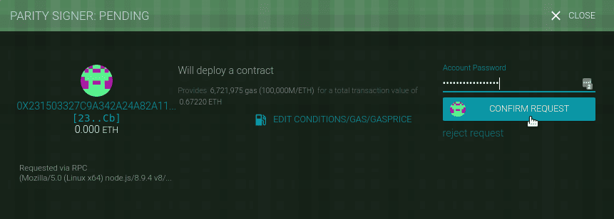
你將看到四筆交易，總計。一個部署+Migrations+，一個用於將部署計數器更新為+1+，一個用於部署+Faucet+，另一個用於將部署計數器更新為+2+。
Truffle將顯示migration完成情況，顯示每個交易並顯示合約地址：
$ Truffle migrate --network localnode Using network 'localnode'. Running migration: 1_initial_migration.js Deploying Migrations... ... 0xfa090db179d023d2abae543b4a21a1479e70ca7d35a469a5d1a98bfc6bd80fe8 Migrations: 0x8861c27715550bed8362c0345add158489df6db0 Saving successful migration to network... ... 0x985c4a32716826ddbe4eae284104bef8bc69e959899f62246a1b27c9dfcd6c03 Saving artifacts... Running migration: 2_deploy_contracts.js Deploying Faucet... ... 0xecdbeef77f0558edc689440e34b7bba0a3ba7a45e4b680b071b47c30a930e9d6 Faucet: 0xd01cd8e7bd29e4bff8c1693f59eee46137a9f300 Saving successful migration to network... ... 0x11f376bd7307edddfd40dc4a14c3f7cb84b6c921ac2465602060b67d08f9fd8a Saving artifacts...
11.2.7. 使用Truffle控制台
Truffle提供了一個JavaScript控制台，我們可以使用這個控制台與Ethereum網路（通過本地節點）進行交互，與已部署的合約進行交互，並與錢包提供商進行交互。在我們當前的配置（localnode）中，節點和錢包提供商是我們的本地parity客戶端。
讓我們開始Truffle控制台並嘗試一些命令：
$ Truffle console --network localnode Truffle(localnode)>
Truffle提示一個提示符，顯示所選的網路配置（localnode）。記住並瞭解我們正在使用哪個網路很重要。你不希望在Ethereum主網路上意外部署測試合約或進行交易。這可能是一個昂貴的錯誤！
Truffle控制台提供了自動補全功能，使我們可以輕鬆探索環境。如果我們在部分完成的命令後按+Tab+，Truffle將為我們完成命令。如果有多個命令與我們的輸入相匹配，按+Tab+兩次將顯示所有可能的完成。事實上，如果我們在空提示符下按兩次+Tab+，Truffle將列出所有命令：
Truffle(localnode)> Array Boolean Date Error EvalError Function Infinity JSON Math NaN Number Object RangeError ReferenceError RegExp String SyntaxError TypeError URIError decodeURI decodeURIComponent encodeURI encodeURIComponent eval isFinite isNaN parseFloat parseInt undefined ArrayBuffer Buffer DataView Faucet Float32Array Float64Array GLOBAL Int16Array Int32Array Int8Array Intl Map Migrations Promise Proxy Reflect Set StateManager Symbol Uint16Array Uint32Array Uint8Array Uint8ClampedArray WeakMap WeakSet WebAssembly XMLHttpRequest _ assert async_hooks buffer child_process clearImmediate clearInterval clearTimeout cluster console crypto dgram dns domain escape events fs global http http2 https module net os path perf_hooks process punycode querystring readline repl require root setImmediate setInterval setTimeout stream string_decoder tls tty unescape url util v8 vm web3 zlib __defineGetter__ __defineSetter__ __lookupGetter__ __lookupSetter__ __proto__ constructor hasOwnProperty isPrototypeOf propertyIsEnumerable toLocaleString toString valueOf
絕大多數錢包和節點相關功能由+web3+物件提供，該物件是 web3.js+庫的一個實例。+web3+物件將RPC接口抽象為我們的parity節點。你還會注意到兩個熟悉名稱的物件：+Migrations 和 Faucet。這些代表我們剛剛部署的合約。我們將使用Truffle控制台與合約進行交互。首先，讓我們通過 web3 物件檢查我們的錢包：
Truffle(localnode)> web3.eth.accounts [ '0x9e713963a92c02317a681b9bb3065a8249de124f', '0xdb5dc1a13e3a55cf3b4587cd8d1e5fdeb6738145' ]
我們的parity客戶端有兩個錢包，Ropsten有一些測試ether。web3.eth.accounts 屬性包含所有帳戶的列表。我們可以使用 getBalance 函數檢查第一個帳戶的餘額：
Truffle(localnode)> web3.eth.getBalance(web3.eth.accounts[0]).toNumber() 191198572800000000 Truffle(localnode)>
web3.js 是一個大型JavaScript庫，通過提供者（如本地客戶端）為以太坊系統提供全面的界面。我們將在[web3js]中更詳細地研究+web3.js+。現在讓我們嘗試與我們的合約進行交互：
Truffle(localnode)> Faucet.address '0xd01cd8e7bd29e4bff8c1693f59eee46137a9f300' Truffle(localnode)> web3.eth.getBalance(Faucet.address).toNumber() 0 Truffle(localnode)>
接下來，我們將使用 sendTransaction 發送一些測試ether，為 Faucet 提供資金。請注意使用+web3.toWei+為我們轉換ether單位。在沒有出錯的情況下輸入十八個零既困難又危險，因此使用單位轉換器來獲取值總是更好。以下是我們發送交易的方式：
Truffle(localnode)> web3.eth.sendTransaction({from:web3.eth.accounts[0], to:Faucet.address, value:web3.toWei(0.5, 'ether')});
'0xf134c75b985dc0e0c27c2f0412251e0860eb530a5055e660f21e7483ab336808'
切換到+parity+的Web控制台，你將看到一個彈出視窗，要求你確認該交易。等一下，一旦交易開始，你將能夠看到我們的+Faucet+合約的餘額：
Truffle(localnode)> web3.eth.getBalance(Faucet.address).toNumber() 500000000000000000
我們調用+withdraw+函數，從Faucet中取出一些測試ether：
Truffle(localnode)> Faucet.deployed().then(instance => {instance.withdraw(web3.toWei(0.1, 'ether'))}).then(console.log)
同樣，你需要批准parity Web控制台中的交易。Faucet+的餘額已經下降，我們的測試錢包已經收到+0.1 ether：
Truffle(localnode)> web3.eth.getBalance(Faucet.address).toNumber() 400000000000000000
Truffle(localnode)> Faucet.deployed().then(instance => {instance.withdraw(web3.toWei(1, 'ether'))})
StatusError: Transaction: 0xe147ae9e3610334ada8d863c9028c12bd0501be2d0cfd05865c18612b92d3f9c exited with an error (status 0).
11.4. OpenZeppelin
OpenZeppelin 是Solidity語言的一個可重複使用且安全的智能合約的開放框架。
它由社區驅動，由https://zeppelin.solutions/[Zeppelin]團隊領導，擁有超過一百名外部貢獻者。該框架的主要重點是安全，通過應用行業標準合約安全模式和最佳實踐，利用zeppelin開發者從https://blog.zeppelin.solutions/tagged/security[auditing]中獲得的所有經驗大量的合約，並通過社區的持續測試和審計，使用該框架作為其實際應用的基礎。
OpenZeppelin框架是以太坊智能合約使用最廣泛的解決方案。這是由於社區討論每個提議的解決方案並從這些解決方案的實施和整合中學習，這將變成一個不斷增長的反饋迴圈，改進現有合約並找到將它們結合在一個清晰安全的體系結構中的新可能性。它不斷增加新的可重用合約來解決越來越複雜的挑戰，或在以太坊區塊鏈上探索激動人心的新可能性。如前所述，該框架目前擁有豐富的合約庫，從ERC20和ERC721 token的實現，到眾多的crowdsale模型，到簡單的行為，例如`Ownable`，Pausable`或`LimitBalance。
在某些情況下，此儲存庫中的合約甚至作為_de facto_標準實現。
該框架擁有MIT許可證，並且所有合約都採用模塊化方法進行設計，以確保易用性和擴展性。這些都是乾淨而基本的構建塊，可以在你的下一個以太坊項目中使用。讓我們設置框架，並使用OpenZeppelin合約構建一個簡單的crowdsale，作為使用它的簡單例子。這個例子還強調了重用安全組件的重要性，而不是自己編寫安全組件，並給出了以太坊平臺及其社區成為可能的想法的一個小樣本。
首先，我們需要將npm中的openzepelin-solidity庫安裝到我們的工作區中。截至撰寫本文時的最新版本是`v1.9.0`，所以我們將使用該版本。
mkdir sample-crowdsale cd sample-crowdsale npm install openzeppelin-solidity@1.9.0 mkdir contracts
對於crowdsale而言，我們需要定義一個token，我們會給予投資者以換取其ether。在撰寫本文時，OpenZeppelin包含了遵循ERC20，ERC721和ERC827標準的多個基本token合約，具有不同的發行，限制，兌現，生命週期等特徵。
讓我們製作一個ERC20 token，這意味著初始供應從0開始，token所有者（在我們的例子中，是crowdsale合約）可以創建新的 token並分配給投資者。為此，使用以下內容創建`contracts/SampleToken.sol`檔案：
include::code/OpenZeppelin/contracts/SampleToken.sol
pragma solidity 0.4.23;
import 'openzeppelin-solidity/contracts/token/ERC20/MintableToken.sol';
contract SampleToken is MintableToken {
string public name = "SAMPLE TOKEN";
string public symbol = "SAM";
uint8 public decimals = 18;
}
OpenZeppelin已經提供了一個MintableToken合約，我們可以用它作為token的基礎，所以我們只定義特定於我們案例的細節。你可以相信社區已經付出很大的努力來確保合約的正確性，但最好自己核實一下。看看https://github.com/OpenZeppelin/openzeppelin-solidity/blob/v1.9.0/contracts/token/ERC20/MintableToken.sol[MintableToken]，https://github.com/OpenZeppelin的源程式碼/openzeppelin-solidity/blob/v1.9.0/contracts/token/ERC20/StandardToken.sol[StandardToken]和https://github.com/OpenZeppelin/openzeppelin-solidity/blob/v1.9.0/contracts/ownership/Ownable.sol[Ownable]瞭解新token的實現細節及其支持的功能。另外，看看https://github.com/OpenZeppelin/openzeppelin-solidity/blob/master/test/token/ERC20/MintableToken.test.js[automated tests]以確保所有可能的場景都已經被覆蓋，並且程式碼是安全的。
接下來，我們來製作Crowdsale（ICO）合約。就像 token一樣，OpenZeppelin已經提供了各種各樣的Crowdsale。目前，你將找到涉及分配、發行，價格和驗證的方案的合約。因此，假設你想為Crowdsale設定一個目標，並且如果在銷售完成時沒有達到目標，你想要退還所有投資者。為此，你可以使用https://github.com/OpenZeppelin/openzeppelin-solidity/blob/v1.9.0/contracts/crowdsale/distribution/RefundableCrowdsale.sol[RefundableCrowdsale]合約。也許你想定義一個價格上漲的眾籌來激勵早期買家：https://github.com/OpenZeppelin/openzeppelin-solidity/blob/v1.9.0/contracts/crowdsale/price/IncreasingPriceCrowdsale.sol[IncreasingPriceCrowdsale]，或者設定一個截止時間：https://github.com/OpenZeppelin/openzeppelin-solidity/blob/v1.9.0/contracts/crowdsale/validation/TimedCrowdsale.sol[TimedCrowdsale]，或者設定購買者白名單：https://github.com/OpenZeppelin/openzeppelin-solidity/blob/v1.9.0/contracts/crowdsale/validation/WhitelistedCrowdsale.sol[WhitelistedCrowdsale]。
正如我們之前所說的，OpenZeppelin合約是基本的構建塊。這些crowdsale合約被設計為可組合的，只需閱讀 Crowdsale合約的源程式碼即可瞭解關於如何擴展它的指導。對於我們token的crowdsale，我們需要在crowdsale合約收到ether時才發行token，所以讓我們使用https://github.com/OpenZeppelin/openzeppelin-solidity/blob/v1.9.0/contracts/crowdsale/emission/MintedCrowdsale.sol[MintedCrowdsale] 作為基礎。為了讓它更有趣，讓我們把它做成 PostDeliveryCrowdsale， token只能在眾籌結束後贖回。將以下內容寫入`contracts/SampleCrowdsale.sol`：
include::code/OpenZeppelin/contracts/SampleCrowdsale.sol
pragma solidity 0.4.23;
import './SampleToken.sol';
import 'openzeppelin-solidity/contracts/crowdsale/emission/MintedCrowdsale.sol';
import 'openzeppelin-solidity/contracts/crowdsale/distribution/PostDeliveryCrowdsale.sol';
contract SampleCrowdsale is PostDeliveryCrowdsale, MintedCrowdsale {
constructor(
uint256 _openingTime,
uint256 _closingTime
uint256 _rate,
address _wallet,
MintableToken _token
)
public
Crowdsale(_rate, _wallet, _token)
PostDeliveryCrowdsale(_openingTime, _closingTime)
{
}
}
同樣，我們幾乎不需要編寫任何程式碼，只是為了重用OpenZeppelin社區為我們提供的已經經過測試的程式碼。但是，需要注意的是，這種情況與我們的`SampleToken`合約不同。如果你訪問https://github.com/OpenZeppelin/openzeppelin-solidity/tree/v1.9.0/test/crowdsale[Crowdsale自動化測試]，你會看到它們被隔離測試。當你將不同的程式碼單元集成到一個更大的組件中時，單獨測試所有的單元是不夠的，因為它們之間的交互可能會導致你沒有預料到的行為。特別是，你會看到在這裡我們介紹了多重繼承，如果他們不瞭解Solidity編譯器的實現細節，這可能會讓開發人員感到意外。我們的`SampleCrowdsale`非常簡單，並且能夠像我們所期望的那樣工作，因為框架旨在使這些案例變得簡單明瞭；但不要因為這個框架引入的簡單性，放鬆你的安全性。每當你集成部分OpenZeppelin框架以構建更復雜的解決方案時，你必須全面測試解決方案的每個方面，以確保單元的所有交互按照你的意圖運行。
最後，在我們對我們的解決方案感到滿意並且我們已經徹底測試之後，我們需要部署它。OpenZeppelin與Truffle很好地集成在一起，所以我們可以按照上面的Truffle部分所述編寫一個migration檔案。在 migrations/2_deploy_contracts.js 中寫入以下內容：
include::code/OpenZeppelin/migrations/2_deploy_contracts.js
const SampleCrowdsale = artifacts.require('./SampleCrowdsale.sol');
const SampleToken = artifacts.require('./SampleToken.sol');
module.exports = function(deployer, network, accounts) {
const openingTime = web3.eth.getBlock('latest').timestamp + 2; // two secs in the future
const closingTime = openingTime + 86400 * 20; // 20 days
const rate = new web3.BigNumber(1000);
const wallet = accounts[1];
return deployer
.then(() => {
return deployer.deploy(SampleToken);
})
.then(() => {
return deployer.deploy(
SampleCrowdsale,
openingTime,
closingTime,
rate,
wallet,
SampleToken.address
);
});
};
這只是OpenZeppelin框架中一些合約的簡要概述。還有更多，社區總是提出新的想法，實施新的策略以使它們更安全，更簡單，更清晰，並儘早發現漏洞以防止主要網路合約中的漏洞。歡迎你加入社區進行學習和貢獻。
Website link; https://openzeppelin.org/
11.5. zeppelin_os
zeppelin_os 是一款開源的分佈式工具和服務平臺，位於EVM之上，安全地開發和管理智能合約應用程式。
與OpenZeppelin的程式碼每次都需要重新部署每個應用程式不同，zeppelin_os的程式碼處於鏈上。需要特定功能的應用程式（例如ERC20 token）不僅不需要重新設計和重新審計其實施（OpenZeppelin解決了這些問題），而且甚至不需要部署它。使用zeppelin_os，應用程式可直接與 鏈上的token實現進行交互，這與桌面應用程式與其底層作業系統的組件進行交互的方式大致相同。
利用OpenZeppelin的應用程式通過重用庫的組織和同行評審合約避免了“重新發明輪子”。然而，每當應用程式使用ERC20 token實現時，同一個ERC20 Bytecode 會一次又一次地部署到區塊鏈中。這種 Bytecode 在網路中無數次重複存在。現在，使用zeppelin_os的應用程式可以避免這種不必要的重複。他們並沒有部署自己的ERC20實施，而是鏈接到定義了社區接受的最新ERC20實現的合約。這種單一的中央實現僅部署在區塊鏈中，與Solidity的庫非常相似，但卻相當複雜。
與Solidity的庫不同，zeppelin_os提供的實現可以像常規合約一樣對待，即它們具有儲存空間。而且，它們是可升級的。如果在其中一個OS的官方實現中發現了一個漏洞，它可以簡單地與升級的漏洞交換。對於ERC20 token，對其實施的升級會立即波及到所有使用它的應用程式。作業系統不僅為其所有實現提供可升級性，還為用戶自己的合約提供升級能力，甚至為其自己的程式碼庫提供升級能力！開發人員決定應用程式何時以及如何實施升級，甚至決定要遵守哪種實施方案。
zeppelin_os的核心是一個非常聰明的合約，被稱為“代理（proxy）”。代理是一種能夠包裝任何其他合約，暴露其接口而無需手動實現setter和getter的合約，並且可以在不丟失狀態的情況下進行升級。在Solidity術語中，它可以被看作是一個正常的合約，其業務邏輯包含在一個庫中，隨時可以由一個新庫來交換，而不會丟失其狀態。代理鏈接到其實現的方式是完全自動的，並且封裝給開發人員。實際上，任何合約都可以升級，程式碼幾乎不變。關於zeppelin_os的代理機制的更多資訊可以在Zeppelin的博客中找到：https://blog.zeppelinos.org/[upgradeability-using-unstructured-storage]，
作業系統將其實現封裝在可使用ZepTokens擔保(vouched)的軟體包或“發行版”中。因此，可以針對某個版本押注ZepTokens，將其標識為社區可接受的實現集。任何人都可以提交新的發行版，由社區審查並最終被接受為官方的新版本。作為獎勵，發行版的開發者在它每次被押注時都會收到token。作為一名Dapp開發人員，擔保(vouching)提供了一種可測量的方式來確定給定發行版獲得的支持，以及可信度。
使用Zeppelin_os開發應用程式與使用NPM開發Javascript應用程式類似。AppManager處理應用程式的每個版本的應用程式包。包只是一個合約目錄，每個合約都可以有一個或多個可升級的代理。AppManager不僅為特定於應用程式的合約提供代理，而且還以標準庫的形式為Zeppelin_os實現提供代理。要查看這方面的完整範例，請訪問：https://github.com/zeppelinos/zos-lib/tree/master/[examples/complex]。
11.6. 實用程式
11.6.1. ethereumJS helpeth: 命令行實用程式
helpeth是一個命令行工具，使開發人員更容易的操作密鑰和交易。
它是基於JavaScript的庫和工具集合ethereumjs的一部分。
Usage: helpeth [command] Commands: signMessage <message> Sign a message verifySig <hash> <sig> Verify signature verifySigParams <hash> <r> <s> <v> Verify signature parameters createTx <nonce> <to> <value> <data> Sign a transaction <gasLimit> <gasPrice> assembleTx <nonce> <to> <value> <data> Assemble a transaction from its <gasLimit> <gasPrice> <v> <r> <s> components parseTx <tx> Parse raw transaction keyGenerate [format] [icapdirect] Generate new key keyConvert Convert a key to V3 keystore format keyDetails Print key details bip32Details <path> Print key details for a given path addressDetails <address> Print details about an address unitConvert <value> <from> <to> Convert between Ethereum units Options: -p, --private Private key as a hex string [string] --password Password for the private key [string] --password-prompt Prompt for the private key password [boolean] -k, --keyfile Encoded key file [string] --show-private Show private key details [boolean] --mnemonic Mnemonic for HD key derivation [string] --version Show version number [boolean] --help Show help [boolean]
11.6.2. dapp.tools
安裝:
$ curl https://nixos.org/nix/install | sh
$ nix-channel --add https://nix.dapphub.com/pkgs/dapphub
$ nix-channel --update
$ nix-env -iA dapphub.{dapp,seth,hevm,evmdis}11.6.3. Dapp
11.6.4. Seth
11.6.5. Hevm
11.6.6. SputnikVM
SputnikVM是一個獨立的可插拔的用於不同的基於以太坊的區塊鏈的虛擬機。它是用Rust編寫的，可以用作二進制，貨物箱，共享庫，或者通過FFI，Protobuf和JSON接口集成。它有一個單獨的用於測試目的的二進制sputnikvm-dev，它模擬大部分JSON RPC API和區塊挖掘。
Github link; https://github.com/etcdevteam/sputnikvm
11.7. Libraries
11.7.1. web3.js
web3.js是以太坊兼容的JS API，用於通過以太坊基金會開發的JSON RPC與客戶進行通信。
Github link; https://github.com/ethereum/web3.js
npm package repository link; https://www.npmjs.com/package/web3
Documentation link for web3.js API 0.2x.x; https://github.com/ethereum/wiki/wiki/JavaScript-API
Documentation link for web3.js API 1.0.0-beta.xx; https://web3js.readthedocs.io/en/1.0/web3.html
11.7.2. web3.py
web3.py 是一個用於與以太坊區塊鏈進行交互的Python庫。它現在也在以太坊基金會的GitHub中。
Github link; https://github.com/ethereum/web3.py
PyPi link; https://pypi.python.org/pypi/web3/4.0.0b9
Documentation link; https://web3py.readthedocs.io/
11.7.3. EthereumJS
以太坊的庫和實用程式集合。
Github link; https://github.com/ethereumjs
Website link; https://ethereumjs.github.io/
11.7.4. web3j
web3j 是Java和Android庫，用於與Ethereum客戶端集成並使用智能合約。
Github link; https://github.com/web3j/web3j
Website link; https://web3j.io
Documentation link; https://docs.web3j.io
11.7.5. Etherjar
Etherjar 是與Ethereum集成並與智能合約一起工作的另一個Java庫。它專為基於Java 8+的伺服器端項目而設計，提供RPC的低層和高層封裝，以太坊資料結構和智能合約訪問。
Github link; https://github.com/infinitape/etherjar
11.7.6. Nethereum
Nethereum 是以太坊的.Net集成庫。
Github link; https://github.com/Nethereum/Nethereum
Website link; http://nethereum.com/
Documentation link; https://nethereum.readthedocs.io/en/latest/
11.7.7. ethers.js
ethers.js 庫是一個緊湊，完整，功能齊全，經過廣泛測試的以太坊庫，完全根據MIT許可證獲得，並且已收到來自以太坊基金會的DevEx資助以擴展和維護。
GitHub link: https://github.com/ethers-io/ethers.js
Documentation: https://docs.ethers.io
11.7.8. Emerald Platform
Emerald Platform提供了庫和UI組件，可以在以太坊上構建Dapps。Emerald JS和Emerald JS UI提供了一組模塊和React組件來構建Javascript應用程式和網站，Emerald SVG Icons是一組區塊鏈相關的圖示。除了Javascript庫之外，它還有Rust庫來操作私鑰和交易簽名。所有Emerald庫和組件都使用 Apache 2許可。
Github link; https://github.com/etcdevteam/emerald-platform
Documentation link; https://docs.etcdevteam.com
12. Tokens
12.1. 什麼是Token?
單詞_Token_來源於古英語“tacen”，意思是符號或符號。常用來表示私人發行的類似硬幣的物品，價值不大，例如交通Token，洗衣Token，遊樂場Token。
如今，基於區塊鏈的Token將這個詞重新定義為基於區塊鏈的抽象概念，可以被擁有，並代表資產，貨幣或訪問權。
“Token”一詞與微不足道的價值之間的聯繫與物理Token的使用限制有很大關係。通常僅限於特定的企業，組織或地點，物理Token不易交換，不能用於多個功能。通過區塊鏈標記，這些限制被刪除。這些Token中的許多Token在全球範圍內有多種用途，可以在全球流動市場中相互交易或與其他貨幣交易。隨著這些限制的消失，“微不足道的價值”的期望也成為過去。
在本節中，我們將看到Token的各種用法以及它們的創建方式。我們還討論Token的屬性，如可互換性和內在性等。最後，我們通過基於構建自己的Token的實驗來檢驗它們的標準和技術。
12.2. 如何使用Token？
Token最明顯的用途是作為數字私人貨幣。但是，這只是一個可能的用途。Token可以被編程為提供許多不同的功能，通常是重疊的。例如，Token可以同時傳達投票權，訪問權和資源所有權。貨幣只是第一個“應用程式”。
- 貨幣
-
Token可以作為一種貨幣形式，其價值通過私人交易來確定。例如，ether或bitcoin。
- 資源
-
Token可以表示在共享經濟或資源共享環境中獲得或生成的資源。例如，表示可通過網路共享的資源的儲存或CPU的Token。
- 資產
-
Token可以代表內在或外在，有形或無形資產的所有權。例如，黃金，房地產，汽車，石油，能源等
- 訪問
-
Token可以代表訪問權限，可以訪問數字或實體資產，例如論壇，專屬網站，酒店房間，租車。
- 權益
-
Token可以代表數字組織（例如DAO）或法律虛擬主體（例如公司）中的股東權益
- 投票
-
Token可以代表數字或法律系統中的投票權。
- 收藏品
-
Token可以代表數字（例如CryptoPunks）或物理收藏品（例如繪畫）
- 身份
-
Token可以代表數字（例如頭像）或合法身份（例如國家ID）。
- 證明
-
Token可以代表某些機構或去中心化的信用系統（例如婚姻記錄，出生證明，大學學位）的認證或事實證明。
- 實際用途
-
Token可用於訪問或支付服務。
通常，單個Token包含其中幾個功能。有時它們之間很難辨別，因為物理等價物一直是密不可分的。例如，在物理世界中，駕駛執照（認證）也是身份證件（身份證明），兩者不能分開。在數字領域，以前的混合功能可以獨立分離和開發（例如匿名認證）。
12.3. Tokens和可互換性
來自Wikipedia:
在經濟學中，可互換性是一種商品或商品的財產，其獨立單位本質上是可以互換的。
當我們可以將Token的任何單個單元替換為另一個Token而其價值或功能沒有任何差異時，Token是可替代的。例如，ether是一種可替代的Token，因為任何ether的單位具有相同的值並且與任何其他單位的ether一起使用。
嚴格地說，如果可以跟蹤Token的歷史出處，那麼它就不是完全可替代的。追蹤出處的能力可能導致黑名單和白名單，從而降低或消除互通性。我們將在[privacy]中進一步研究。
不可互換的Token是代表獨特的有形或無形商品的Token，因此不可互換。例如，表示_特定的_ Van Gogh繪畫所有權的Token不等同於代表畢加索的另一個Token。同樣，表示特定數字收藏的Token，如特定的CryptoKitty（請參閱[cryptoKitties]）與任何其他CryptoKitty都不可互換。每個不可互換的Token與唯一識別碼相關聯，例如序列號。
本節後面我們將看到可替換和不可替換Token的例子。
12.4. 交易對手風險
交易對手風險是交易中的其他方不能履行其義務的風險。由於在交易中增加了兩個以上的交易方，某些類型的交易會產生額外的交易對手風險。例如，如果你持有貴金屬存款證明並將其出售給某人，則該交易中至少有三方：賣方，買方和貴金屬的保管人。有人持有有形資產，必要時他們成為一方併為涉及該資產的任何交易添加交易對手風險。當資產通過交換所有權資訊而間接交易時，資產託管人有額外的交易對手風險。他們有資產嗎？他們是否會根據Token的轉讓（例如證書，契約，所有權或數字Token）識別（或允許）所有權的轉移？在數字Token的世界中，瞭解誰持有由Token表示的資產以及適用於該基礎資產的規則很重要。
12.5. Tokens和內在性
單詞 "intrinsic" 源於拉丁詞 "intra", 表示"來自內部".
一些Token代表對區塊鏈來說是 內在的 的數字項目。這些數字資產受共識規則的約束，就像Token本身一樣。這具有重要的意義：代表固有資產的Token不會帶來額外的交易對手風險。如果你持有1 ether的密鑰，就沒有其他方為你持有那個以太。區塊鏈共識規則的應用，使得你對私鑰的所有權（控制權）等同於資產的所有權，無需任何中介。
相反，許多Token用於表示 外在的 _extrinsic_事物，如房地產，公司投票股票，商標，金條。這些項目的所有權不屬於區塊鏈，屬於法律，習慣和政策，與管理Token的共識規則分開。換句話說，Token發行人和所有者可能仍然依賴現實世界的非智能合約。因此，這些外部資產會帶來額外的交易對手風險，因為它們由託管人持有，記錄在外部註冊管理機構中，或由區塊鏈環境以外的法律和政策控制。
基於區塊鏈的Token最重要的後果之一是能夠將外部資產轉換為內部資產，從而消除交易對手風險。一個很好的例子就是從一家公司的股權（外部）轉向一個 去中心化的自治組織 或類似的（內部）組織的股權或投票權。
12.6. 使用Tokens：效用或權益
今天以太坊的幾乎所有項目都以某種形式發佈。但是，所有這些項目真的需要一個Token嗎？使用Token有什麼缺點，或者我們會看到口號“將所有東西Token化”的口號是否成熟？
首先，讓我們首先澄清Token在新項目中的作用。大多數項目都以兩種方式之一使用Token：要麼是“實用Token”，要麼是“權益Token”。很多時候，這兩個角色是混合在一起的，難以區分。
實用Token是那些需要使用Token來支付服務，應用程式或資源的Token。實用Token的例子包括代表資源的Token，如共享儲存，訪問社交媒體網路等服務，或將ether作為以太坊平臺的gas。相比之下，權益Token是代表創業公司股票的Token。
股權Token可以像享有利潤和分紅的無投票權股份一樣有限，或者向去中心化自治組織的有投票權的股票一樣廣泛，其中平臺是通過Token持有者的多數投票管理的。
12.6.1. 它不是一隻鴨子
僅僅因為Token用於為初創公司籌款，並不意味著它必須用作服務的支付，反之亦然。然而，許多初創公司面臨著一個難題：Token是一種很好的籌款機制，但向大眾提供證券（股權）是大多數司法管轄區的受監管活動。通過將股權Token偽裝成實用Token，許多創業公司希望能夠繞過這些監管限制，並從公開募股籌集資金，同時將其作為預售的實用Token。這些稀薄的股權產品是否能夠擺脫監管機構仍有待觀察。
正如俗語所說：“如果它像鴨子一樣走路，像鴨子一樣嘎嘎叫 - 它就是一隻鴨子。” 監管機構不會因這些語義扭曲而分心，恰恰相反，他們更有可能將這種法律詭辯看作是企圖欺騙公眾。
12.6.2. 實用Token：誰需要它們？
真正的問題是實用Token為初創公司帶來了重大風險和被採用障礙。也許在遙遠的將來，“將所有事物Token化”成為現實。但是，目前，獲得，理解和使用Token的人數是已經很小的密碼貨幣市場的一個子集。
對於創業公司而言，每項創新都代表著風險和市場過濾。創新走的是人跡罕至的路，遠離傳統的道路。它已經是一個孤獨的散步。如果一家創業公司試圖在一個新的技術領域進行創新，比如P2P網路上的儲存共享，那麼這是一條足夠孤單的道路。為該創新添加實用Token並要求用戶採用Token以使用該服務會增加風險並增加被採用的障礙。它走出了已然孤獨的P2P儲存創新之路，進入荒野。
將每項創新視為過濾器。它限制了可以成為這種創新的早期採用者的市場子集。添加第二個過濾器化合物，會進一步限制可找到的市場。你要求你的早期採用者採用的不僅僅是兩種全新的技術：你構建的新穎應用程式/平臺/服務以及Token經濟。
對於初創公司而言，每項創新都會帶來風險，從而增加創業失敗的可能性。如果你已經採取冒險的創業想法並添加實用Token，則也同時增加了所有底層平臺（以太坊），更廣泛的經濟（交易所，流動性），監管環境（股票/商品監管機構）和技術（智能合約，Token標準）的風險。這對創業公司來說是一個很大的風險。
“Tokenize all the things”的倡導者可能會通過採用Token來反對上述說法，他們也繼承了整個Token經濟的市場熱情，早期採用者，技術，創新和流動性。這也是事實。問題是收益和熱情是否超過風險和不確定性。
儘管如此，一些最具創新性的商業理念確實發生在加密領域。如果監管機構不能快速通過法律並支持新的商業模式，人才和企業家將尋求在更加加密友好的其他司法轄區開展業務。這實際上正在發生。
最後，在本章開始時，介紹Token時，我們將Token的口語意義解釋為“微不足道的價值”。大多數Token的價值微不足道的根本原因是因為它們只能用在非常狹窄的環境中：一家巴士公司，一家洗衣店，一家商場，一家酒店，一家公司商店。流動性有限，適用性有限，轉換成本高，一路降低Token的價值，直到它只有“Token”那麼小的價值。因此，當你將實用Token添加到你的平臺上，但該Token只能在你自己的一個平臺上使用且市場很小時，則會重新創建使物理Token毫無價值的條件。如果為了使用你的平臺，用戶必須將某些東西轉換為你的實用Token，使用它，然後將其餘部分再轉換回更普遍有用的東西，你實際是創建了公司憑證。數字Token的轉換成本比沒有市場的物理Token低了幾個數量級，但轉換成本並不是零。在整個行業中工作的實用Token將非常有趣並且可能非常有價值。但是，如果你將創業公司設定為必須引導整個行業標準才能成功，那麼你可能已經失敗了。
在像以太坊這樣的通用平臺上部署服務的好處之一就是能夠連接智能合約，增加流動性和Token效用的潛力。
為了正確的理由做出這個決定。採用Token是因為你的應用程式_不使用Token無法工作_ （例如以太坊）。採用它是因為Token解決了基本的市場障礙或訪問問題。不要因為這是你可以快速籌集資金的唯一方式而引入實用Token，你需要假裝它不是公開發行的證券。
12.7. Token 標準
區塊鏈標記在以太坊之前就已存在。在某些方面，第一塊區塊鏈貨幣比特幣本身就是一種Token。在Ethereum之前，還在比特幣和其他密碼貨幣上開發了許多Token平臺。然而，在以太坊上引入第一個Token標準導致Token爆炸。
Vitalik Buterin建議將Token作為通用可編程區塊鏈（如以太坊）最明顯和最有用的應用之一。事實上，在以太坊的第一年，經常看到Vitalik和其他人穿著印有Ethereum標誌的T恤和背面的智能合約樣本。這件T恤有幾種變化，但最常見的是一種Token的實現。
12.7.1. ERC20 Token 標準
第一個標準由Fabian Vogelsteller於2015年11月引入，作為以太坊徵求意見（ERC）。它被自動分配了GitHub發行號碼20，從而獲得了名字“ERC20 Token”。絕大多數Token目前都基於ERC20。ERC20徵求意見最終成為以太坊改進建議EIP20，但大多仍以原名ERC20提及。你可以在這裡閱讀標準：
ERC20是_可替換Token_的標準，意味著ERC20標記的不同單元是可互換的，沒有唯一屬性。
ERC20標準為實現Token的合同定義了一個通用接口，這樣任何兼容的Token都可以以相同的方式訪問和使用。該接口包含許多必須存在於標準的每個實現中的函數，以及可能由開發人員添加的一些可選函數和屬性。
ERC20 必須的函數和事件
- totalSupply
-
返回當前存在的Token的總單位。ERC20Token可以有固定或可變的供應量。
- balanceOf
-
給定一個地址，返回該地址的Token餘額。
- transfer
-
給定一個地址和數量，將該數量的Tokens從執行該方法的地址的餘額轉移到該地址。
- transferFrom
-
給定發送者，接收人和數量，將Token從一個帳戶轉移到另一個帳戶。與+approve+結合使用。
- approve
-
在給定接收者地址和數量的情況下，授權該地址從發佈批准的帳戶執行多次轉帳，直到到達指定的數量。
- allowance
-
給定一個所有者地址和一個消費者地址，返回該消費者被批准從所有者的取款的剩餘金額。
- Transfer event
-
成功轉移時觸發的事件（調用+transfer+或+transferFrom+）（即使對於零值轉移）。
- Approval event
-
成功調用+approve+時記錄的事件。
ERC20 可選函數
- name
-
返回Token的可讀名稱（例如“US Dollars”）。
- symbol
-
返回Token的人類可讀符號（例如“USD”）。
- decimals
-
返回用於分割Token數量的小數位數。例如，如果小數為2，則將Token數除以100以獲取其用戶表示。
在Solidity中定義的ERC20接口
以下是在Solidity中ERC20接口規範的樣子：
contract ERC20 {
function totalSupply() constant returns (uint theTotalSupply);
function balanceOf(address _owner) constant returns (uint balance);
function transfer(address _to, uint _value) returns (bool success);
function transferFrom(address _from, address _to, uint _value) returns (bool success);
function approve(address _spender, uint _value) returns (bool success);
function allowance(address _owner, address _spender) constant returns (uint remaining);
event Transfer(address indexed _from, address indexed _to, uint _value);
event Approval(address indexed _owner, address indexed _spender, uint _value);
}
ERC20 資料結構
如果你檢查任何ERC20實現，它將包含兩個資料結構，一個用於追蹤餘額，另一個用於追蹤配額（allowances）。在Solidity中，它們使用_data mapping_實現。
第一個data mapping按擁有者實現了Token餘額的內部表。這允許Token合約跟蹤誰擁有Token。每次轉帳都是從一個餘額中扣除的，並且是對另一個餘額的增加。
mapping(address => uint256) balances;
第二個資料結構是配額的data mapping。正如我們將在ERC20工作流程：“transfer”和“approve & transferFrom”中看到的那樣，使用ERC20Token，Token的所有者可以將權限委託給花錢者，允許他們從所有者的餘額中花費特定金額（配額）。ERC20合同通過二維映射追蹤配額，主關鍵字是Token所有者的地址，映射到一個花費者地址和配額金額：
mapping (address => mapping (address => uint256)) public allowed;
ERC20工作流程：“transfer”和“approve & transferFrom”
ERC20Token標準具有兩種傳輸功能。你可能想知道為什麼？
ERC20允許兩種不同的工作流程。第一個是使用+transfer+函數的單次交易，簡單的工作流程。這個工作流程是錢包用來將Token發送給其他錢包的工作流程。絕大多數Token交易都發生在+transfer+工作流程中。
執行轉讓合同非常簡單。如果愛麗絲希望向鮑勃發送10個Token，她的錢包會向Token合約的地址發送一個交易，並用Bob的地址和“10”作為參數調用+transfer+函數。Token合約調整Alice的餘額（-10）和Bob的餘額（+10）併發出+Transfer+事件。
第二個工作流程是使用+approve+和+transferFrom+的雙交易工作流程。該工作流程允許Token所有者將其控制權委託給另一個地址。它通常用於委託控制權給合約來分配Token，但它也可以被交易所使用。例如，如果一家公司為ICO出售Token，他們可以+approve+一個crowdsale合同地址來分發一定數量的Token。然後crowdsale合同可以用+transferFrom+轉移給Token的每個買家。
然後，眾包合約可以+從代幣合約所有者的餘額轉移到每個代幣買家，如圖所示 The two-step approve & transferFrom workflow of ERC20 Tokens. 例如，如果一家公司為 ICO 出售代幣，他們可以+批准+一個眾包合約 (crowdsale contract) 地址來分發一定數量的代幣。
|
Initial Coin Offering（ICO）是一種眾籌機制，公司和組織通過銷售代幣來籌集資金。該術語源自首次公開發行（IPO），即上市公司向證券交易所的投資者出售股票之過程。與高度監管的IPO市場不同，ICO是開放的、全球化並且混亂的。 本書中 ICO 的例子和解釋並不是在為類籌款作背書。 |
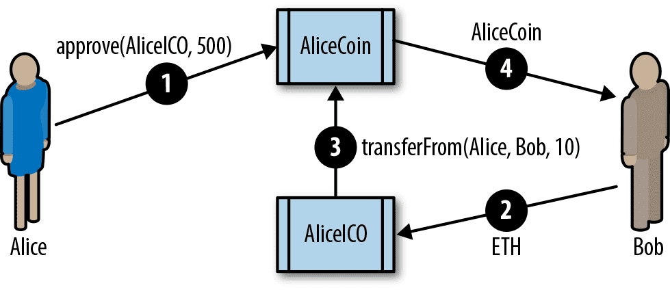
對於 approve & transferFrom 工作流程，需要兩個交易。假設Alice希望允許AliceICO合同將所有AliceCoin Token的50％賣給像Bob和Charlie這樣的買方。首先，Alice發佈AliceCoin ERC20合同，將所有AliceCoin發放到她自己的地址。然後，Alice發佈可以以ether出售Token的AliceICO合同。接下來，Alice啟動+approve & transferFrom+工作流程。她向AliceCoin發送一個交易，調用+approve+，參數是AliceICO的地址和+totalSupply+的50％。這將觸發+Approval+事件。現在，AliceICO合同可以出售AliceCoin了。
當AliceICO從Bob那收到ether，它需要發送一些AliceCoin給Bob作為回報。在AliceICO合約內是AliceCoin和ether之間的匯率。Alice在創建AliceICO時設置的匯率決定了Bob將根據他發送給AliceICO的ether數量能得到多少Token。當AliceICO調用AliceCoin transferFrom+函數時，它將Alice的地址設置為發送者，將Bob的地址設置為接收者，並使用匯率來確定將在“value”欄位中將多少AliceCoin Token傳送給Bob。AliceCoin合同將餘額從Alice的地址轉移到Bob的地址並觸發 +Transfer 事件。只要不超過Alice設定的審批限制，AliceICO合同可以調用 transferFrom 無限次數。AliceICO合同可以通過調用+allowance+函數來跟蹤它能賣出多少AliceCoinToken。
ERC20 實現
雖然可以在約三十行Solidity程式碼中實現兼容ERC20的Token，但大多數實現都更加複雜，以解決潛在的安全漏洞。在EIP20標準中提到了兩種實現：
- Consensys EIP20
-
簡單易讀的ERC20兼容Token的實現。
你可以在此處閱讀Consensys實現的Solidity程式碼： https://github.com/ConsenSys/Tokens/blob/master/contracts/eip20/EIP20.sol
- OpenZeppelin StandardToken
-
此實現與ERC20兼容，並具有額外的安全防範措施。它構成了OpenZeppelin庫的基礎，實現了更復雜的與ERC20兼容的Token，包括籌款上限，拍賣，歸屬時間表和其他功能。
你可以在這裡看到OpenZeppelin StandardToken的Solidity程式碼： https://github.com/OpenZeppelin/zeppelin-solidity/blob/master/contracts/Token/ERC20/StandardToken.sol
12.7.2. 發佈我們自己的ERC20Token
讓我們創建併發布我們自己的Token。在這個例子中，我們將使用+truffle+ 框架（參見[truffle]）。該範例假設你已經安裝了+truffle+，進行了配置，並熟悉其基本操作。
我們將稱之為“Mastering Ethereum Token”，標誌為“MET”。
你可以在本書的GitHub倉庫中找到這個例子： https://github.com/ethereumbook/ethereumbook/blob/develop/code/truffle/METoken
首先，讓我們創建並初始化一個Truffle項目目錄，就像我們在[truffle_project_directory]中所做的那樣。運行這四個命令並接受任何問題的預設答案：
$ mkdir METoken $ cd METoken METoken $ truffle init METoken $ npm init
你現在應該具有以下目錄結構：
METoken/ ├── contracts │ └── Migrations.sol ├── migrations │ └── 1_initial_migration.js ├── package.json ├── test ├── truffle-config.js └── truffle.js
編輯+truffle.js+或+truffle-config.js+配置檔案以設置+Truffle+環境，或複製我們使用的環境：
如果使用範例+truffle-config.js+，請記住在包含你的測試私鑰的+METoken+檔案夾中創建檔案+.env+，以便在公共以太網測試網路（如ganache或Kovan）上進行測試和部署。你可以從MetaMask中匯出你的測試網路私鑰。
之後你的目錄看起來像：
METoken/ ├── contracts │ └── Migrations.sol ├── migrations │ └── 1_initial_migration.js ├── package.json ├── test ├── truffle-config.js ├── truffle.js └── .env *new file*
|
只能使用不用於在以太坊主網路上持有資金的測試密鑰或測試助記符。切勿使用持有真正金錢的鑰匙進行測試。 |
對於我們的範例，我們將匯入OpenZeppelin StandardContract，它實現了一些重要的安全檢查並且易於擴展。讓我們匯入該庫：
$ npm install zeppelin-solidity + zeppelin-solidity@1.6.0 added 8 packages in 2.504s
+ zeppelin-solidity 包將在 node_modules +目錄下添加約250個檔案。OpenZeppelin庫包含的不僅僅是ERC20Token，但我們只使用它的一小部分。
接下來，讓我們編寫我們的Token合約。創建一個新檔案+METoken.sol+並從GitHub複製範例程式碼：
https://github.com/ethereumbook/ethereumbook/blob/develop/code/truffle/METoken/contracts/METoken.sol
我們的合同非常簡單，因為它繼承了OpenZeppelin StandardToken庫的所有功能：
1
2
3
4
5
6
7
8
9
10
11
12
13
14
15
16
pragma solidity ^0.4.18;
import 'zeppelin-solidity/contracts/token/ERC20/StandardToken.sol';
contract METoken is StandardToken {
string public constant name = 'Mastering Ethereum Token';
string public constant symbol = 'MET';
uint8 public constant decimals = 2;
uint constant _initial_supply = 2100000000;
function METoken() public {
totalSupply_ = _initial_supply;
balances[msg.sender] = _initial_supply;
Transfer(address(0), msg.sender, _initial_supply);
}
}
在這裡，我們定義可選變數+name+，symbol+和+decimals。我們還定義了一個+_initial_supply+變數，設置為2,100萬個Token，以及兩個小數細分（總共21億）。在契約的初始化（構造函數）函數中，我們將+totalSupply+設置為等於+_initial_supply+，並將所有+_initial_supply+分配給創建 METoken 契約的帳戶餘額（msg.sender）。
我們現在使用+truffle+編譯+METoken+程式碼：
$ truffle compile Compiling ./contracts/METoken.sol... Compiling ./contracts/Migrations.sol... Compiling zeppelin-solidity/contracts/math/SafeMath.sol... Compiling zeppelin-solidity/contracts/Token/ERC20/BasicToken.sol... Compiling zeppelin-solidity/contracts/Token/ERC20/ERC20.sol... Compiling zeppelin-solidity/contracts/Token/ERC20/ERC20Basic.sol... Compiling zeppelin-solidity/contracts/Token/ERC20/StandardToken.sol...
如你所見，+truffle+包含了OpenZeppelin庫的必要依賴關係，並編譯了這些契約。
我們建立一個migration腳本，部署 METoken+合約。在+METoken/migrations+檔案夾中創建一個新檔案+2_deploy_contracts.js。從Github儲存庫中的範例複製內容：
以下是它包含的內容：
1
2
3
4
5
6
var METoken = artifacts.require("METoken");
module.exports = function(deployer) {
// Deploy the METoken contract as our only task
deployer.deploy(METoken);
};
在我們部署其中一個以太坊測試網路之前，讓我們開始一個本地區塊鏈來測試一切。正如我們在[using_ganache]中所做的那樣，從 ganache-cli 的命令行或從圖形用戶界面啟動 ganache 區塊鏈。
一旦 ganache 啟動，我們就可以部署我們的METoken合約，看看是否一切都按預期工作：
$ truffle migrate --network ganache Using network 'ganache'. Running migration: 1_initial_migration.js Deploying Migrations... ... 0xb2e90a056dc6ad8e654683921fc613c796a03b89df6760ec1db1084ea4a084eb Migrations: 0x8cdaf0cd259887258bc13a92c0a6da92698644c0 Saving successful migration to network... ... 0xd7bc86d31bee32fa3988f1c1eabce403a1b5d570340a3a9cdba53a472ee8c956 Saving artifacts... Running migration: 2_deploy_contracts.js Deploying METoken... ... 0xbe9290d59678b412e60ed6aefedb17364f4ad2977cfb2076b9b8ad415c5dc9f0 METoken: 0x345ca3e014aaf5dca488057592ee47305d9b3e10 Saving successful migration to network... ... 0xf36163615f41ef7ed8f4a8f192149a0bf633fe1a2398ce001bf44c43dc7bdda0 Saving artifacts...
在+ganache+控制台上，我們應該看到我們的部署創建了4個新的交易：
12.7.3. 使用Truffle控制台與METoken交互
我們可以使用+Truffle控制台+與我們的+ganache+區塊鏈合同進行互動。這是一個交互式的JavaScript環境，可以訪問Truffle環境，並通過Web3訪問區塊鏈。在這種情況下，我們將+Truffle控制台+連接到+ganache+區塊鏈：
$ truffle console --network ganache truffle(ganache)>
+truffle(ganache)>+ 提示符表明我們已連接到 +ganache+區塊鏈並準備輸入我們的命令。+Truffle控制台+支持所有的Truffle命令，所以我們可以從控制台+compile+和+migrate+。我們已經運行過這些命令，所以讓我們直接看看合同本身。METoken合約作為Truffle環境內的JavaScript物件存在。在提示符下鍵入+METoken+，它將轉儲整個合約定義：
truffle(ganache)> METoken
{ [Function: TruffleContract]
_static_methods:
\[...]
currentProvider:
HttpProvider {
host: 'http://localhost:7545',
timeout: 0,
user: undefined,
password: undefined,
headers: undefined,
send: [Function],
sendAsync: [Function],
_alreadyWrapped: true },
network_id: '5777' }
+METoken+物件還公開幾個屬性，例如合同的地址（由+migrate+命令部署）：
truffle(ganache)> METoken.address '0x345ca3e014aaf5dca488057592ee47305d9b3e10'
如果我們想要與已部署的合同進行交互，我們必須以JavaScript“promise”的形式使用異步調用。我們使用+deployment+函數來獲取合約實例，然後調用+totalSupply+函數：
truffle(ganache)> METoken.deployed().then(instance => instance.totalSupply())
BigNumber { s: 1, e: 9, c: [ 2100000000 ] }
接下來，讓我們使用由+ganache+創建的帳戶來檢查我們的METoken餘額並將一些METoken發送到另一個地址。首先，讓我們獲取帳戶地址：
truffle(ganache)> let accounts
undefined
truffle(ganache)> web3.eth.getAccounts((err,res) => { accounts = res })
undefined
truffle(ganache)> accounts[0]
'0x627306090abab3a6e1400e9345bc60c78a8bef57'
accounts 列表現在包含由+ganache+創建的所有帳戶，而+account[0]+是部署了該METoken合約的帳戶。它應該有METoken的餘額，因為我們的METoken構造函數將全部Token提供給了創建它的地址。讓我們檢查：
truffle(ganache)> METoken.deployed().then(instance => { instance.balanceOf(accounts[0]).then(console.log) })
undefined
BigNumber { s: 1, e: 9, c: [ 2100000000 ] }
最後，通過調用合約的 transfer+函數，讓我們從+account[0] 向 account[1] 轉移1000.00 METoken：
truffle(ganache)> METoken.deployed().then(instance => { instance.transfer(accounts[1], 100000) })
undefined
truffle(ganache)> METoken.deployed().then(instance => { instance.balanceOf(accounts[0]).then(console.log) })
undefined
truffle(ganache)> BigNumber { s: 1, e: 9, c: [ 2099900000 ] }
undefined
truffle(ganache)> METoken.deployed().then(instance => { instance.balanceOf(accounts[1]).then(console.log) })
undefined
truffle(ganache)> BigNumber { s: 1, e: 5, c: [ 100000 ] }
|
METoken具有2位精度的小數，這意味著1個METoken在合同中是100個單位。當我們傳輸1000個METoken時，我們在傳輸函數中將該值指定為100,000。 |
如你所見，在控制台中，+ account [0] 現在擁有20,999,000 MET， account [1] +擁有1000 MET。
如果切換到+ganache+圖形用戶界面，你將看到名為+transfer+函數的交易：
12.7.4. 將ERC20Token發送到合同地址
到目前為止，我們已經設置了ERC20Token並從一個帳戶轉移到另一個帳戶。我們用於這些示範的所有帳戶都是外部擁有帳戶（EOAs），這意味著它們由私鑰控制，而不是合同。如果我們將MET發送到合同地址會發生什麼？讓我們看看！
首先，我們將其他合約部署到我們的測試環境中。對於這個例子，我們將使用我們的第一個合同+Faucet.sol+。我們將它添加到METoken項目中，方法是將它複製到+contracts+目錄。我們的目錄應該是這樣的：
METoken/ ├── contracts │ ├── Faucet.sol │ ├── METoken.sol │ └── Migrations.sol
我們還會添加一個migration，從+METoken+單獨部署+Faucet+：
var Faucet = artifacts.require("Faucet");
module.exports = function(deployer) {
// Deploy the Faucet contract as our only task
deployer.deploy(Faucet);
};
讓我們從Truffle控制台編譯和遷移合同：
$ truffle console --network ganache truffle(ganache)> compile Compiling ./contracts/Faucet.sol... Writing artifacts to ./build/contracts truffle(ganache)> migrate Using network 'ganache'. Running migration: 1_initial_migration.js Deploying Migrations... ... 0x89f6a7bd2a596829c60a483ec99665c7af71e68c77a417fab503c394fcd7a0c9 Migrations: 0xa1ccce36fb823810e729dce293b75f40fb6ea9c9 Saving artifacts... Running migration: 2_deploy_contracts.js Replacing METoken... ... 0x28d0da26f48765f67e133e99dd275fac6a25fdfec6594060fd1a0e09a99b44ba METoken: 0x7d6bf9d5914d37bcba9d46df7107e71c59f3791f Saving artifacts... Running migration: 3_deploy_faucet.js Deploying Faucet... ... 0x6fbf283bcc97d7c52d92fd91f6ac02d565f5fded483a6a0f824f66edc6fa90c3 Faucet: 0xb18a42e9468f7f1342fa3c329ec339f254bc7524 Saving artifacts...
現在讓我們將一些MET發送到 Faucet 合約：
truffle(ganache)> METoken.deployed().then(instance => { instance.transfer(Faucet.address, 100000) })
truffle(ganache)> METoken.deployed().then(instance => { instance.balanceOf(Faucet.address).then(console.log)})
truffle(ganache)> BigNumber { s: 1, e: 5, c: [ 100000 ] }
好的，我們已將1000 MET轉移到 Faucet+合約。現在，我們如何從 +Faucet 提款呢？
請記住，Faucet.sol+是一個非常簡單的合同。它只有一個功能，+withdraw，這是提取_ether_。它沒有提取MET或任何其他ERC20Token的功能。如果我們使用+withdraw+它將嘗試發送ether，但由於Faucet還沒有ether的餘額，它將失敗。
METoken+合約知道+Faucet+有餘額，但它可以轉移該餘額的唯一方法是它從合約地址收到+transfer+調用。無論如何，我們需要讓+Faucet 合約調用+MET+中的+transfer+函數。
如果你在思考下一步該做什麼，不必了。這個問題沒有解決辦法。MET發送到+Faucet+將永遠卡住。只有+Faucet+合約可以轉讓它，+Faucet+合約沒有調用ERC20Token合約的+transfer+函數的程式碼。
也許你預料到了這個問題。最有可能的是，你沒有。實際上，數百名以太坊用戶也無意將各種Token轉讓給沒有任何ERC20能力的合同。據估計，價值超過250萬美元的Token被這樣“卡住”，並且永遠丟失。
ERC20Token的用戶可能無意中在轉移中丟失其Token的方式之一是當他們嘗試轉移到交易所或其他服務時。他們從交易所的網站上覆制以太坊地址，認為他們可以簡單地向其發送Token。但是，許多交易所都公佈實際上是合同的接收地址！這些合同具有許多不同的功能，通常將發送給他們的所有資金清掃到“冷儲存”或另一個集中的錢包。儘管有許多警告說“不要將Token發送到這個地址”，但許多Token會以這種方式丟失。
12.7.5. 演示 approve & transferFrom 流程
我們的+Faucet+合同無法處理ERC20Token。使用+transfer+函數發送Token給它，會導致這些Token的丟失。我們重寫合同，並處理ERC20Token。具體來說，我們將把它變成一個Faucet，將MET發給任何詢問的人。
對於這個例子，我們製作了Truffle項目目錄的副本，將其稱為 METoken_METFaucet，初始化Truffle，npm，安裝OpenZeppelin依賴項並複製+METoken.sol+合同。有關詳細說明，請參閱我們的第一個範例發佈我們自己的ERC20Token。
現在，讓我們創建一個新的Faucet合同，稱之為+METFaucet.sol+。它看起來像這樣：
1
2
3
4
5
6
7
8
9
10
11
12
13
14
15
16
17
18
19
20
21
22
23
24
25
26
27
28
29
30
31
32
33
34
35
36
37
38
39
40
41
42
43
44
45
46
47
48
49
50
51
52
53
54
55
56
57
58
59
60
61
62
63
64
65
66
67
68
69
// Version of Solidity compiler this program was written for
pragma solidity ^0.4.19;
import 'zeppelin-solidity/contracts/token/ERC20/StandardToken.sol';
// A faucet for ERC20 token MET
contract METFaucet {
StandardToken public METoken;
address public METOwner;
// METFaucet constructor, provide the address of METoken contract and
// the owner address we will be approved to transferFrom
function METFaucet(address _METoken, address _METOwner) public {
// Initialize the METoken from the address provided
METoken = StandardToken(_METoken);
METOwner = _METOwner;
}
function withdraw(uint withdraw_amount) public {
// Limit withdrawal amount to 10 MET
require(withdraw_amount <= 1000);
// Use the transferFrom function of METoken
METoken.transferFrom(METOwner, msg.sender, withdraw_amount);
}
// REJECT any incoming ether
function () public payable { revert(); }
}
// Version of Solidity compiler this program was written for
pragma solidity ^0.4.19;
import 'zeppelin-solidity/contracts/Token/ERC20/StandardToken.sol';
// A faucet for ERC20 Token MET
contract METFaucet {
StandardToken public METoken;
address public METOwner;
// METFaucet constructor, provide the address of METoken contract and
// the owner address we will be approved to transferFrom
function METFaucet(address _METoken, address _METOwner) public {
// Initialize the METoken from the address provided
METoken = StandardToken(_METoken);
METOwner = _METOwner;
}
function withdraw(uint withdraw_amount) public {
// Limit withdrawal amount to 10 MET
require(withdraw_amount <= 1000);
// Use the transferFrom function of METoken
METoken.transferFrom(METOwner, msg.sender, withdraw_amount);
}
// REJECT any incoming ether
function () public payable { revert(); }
}
我們對基本的Faucet範例做了很多改動。由於METFaucet將使用+METoken+中的+transferFrom+函數，它將需要兩個額外的變數。其中一個將保存已部署的+METoken+合約地址。另一個將持有MET所有者的地址，他們將提供Faucet提款的批准。+METFaucet+將調用+METoken.transferFrom+並指示它將MET從所有者移至Faucet提取請求所來自的地址。
我們在這裡宣告這兩個變數：
StandardToken public METoken; address public METOwner;
由於我們的Faucet需要使用+METoken+和+METOwner+的正確地址進行初始化，因此我們需要宣告一個自定義構造函數：
// METFaucet constructor, provide the address of METoken contract and
// the owner address we will be approved to transferFrom
function METFaucet(address _METoken, address _METOwner) public {
// Initialize the METoken from the address provided
METoken = StandardToken(_METoken);
METOwner = _METOwner;
}
下一個改變是+withdraw+函數。METFaucet+使用+METoken+中的+transferFrom+函數，並要求+METoken+將MET傳輸給Faucet的接收者，而不是調用+transfer。
// Use the transferFrom function of METoken METoken.transferFrom(METOwner, msg.sender, withdraw_amount);
最後，由於我們的Faucet不再發送ether，我們應該阻止任何人將ether送到+METFaucet+，因為我們不希望它被卡住。我們更改fallback函數以拒絕發進來的ether，使用+revert+功能還原任何收款：
// REJECT any incoming ether
function () public payable { revert(); }
現在我們的+METFaucet.sol+程式碼已準備就緒，我們需要修改migration腳本來部署它。這個migration腳本會有點複雜，因為+METFaucet+依賴於+METoken+的地址。我們將使用JavaScript promise按順序部署這兩個合約。創建+2_deply_contracts.js+，如下所示：
[[2_deploy_contracts]]
var METoken = artifacts.require("METoken");
var METFaucet = artifacts.require("METFaucet");
var owner = web3.eth.accounts[0];
module.exports = function(deployer) {
// Deploy the METoken contract first
deployer.deploy(METoken, {from: owner}).then(function() {
// then deploy METFaucet and pass the address of METoken
// and the address of the owner of all the MET who will approve METFaucet
return deployer.deploy(METFaucet, METoken.address, owner);
});
}
現在，我們可以測試Truffle控制台中的所有內容。首先，我們使用+migrate+來部署合同。當+METoken+部署時，它會將所有MET分配給創建它的帳戶，web3.eth.accounts[0]。然後，我們在METoken中調用+approve+函數來批准+METFaucet+代表+web3.eth.accounts[0]+發送1000 MET。最後，為了測試我們的Faucet，我們從+web3.eth.accounts[1]+調用+METFaucet.withdraw+並嘗試提取10個MET。以下是控制台命令：
$ truffle console --network ganache
truffle(ganache)> migrate
Using network 'ganache'.
Running migration: 1_initial_migration.js
Deploying Migrations...
... 0x79352b43e18cc46b023a779e9a0d16b30f127bfa40266c02f9871d63c26542c7
Migrations: 0xaa588d3737b611bafd7bd713445b314bd453a5c8
Saving artifacts...
Running migration: 2_deploy_contracts.js
Replacing METoken...
... 0xc42a57f22cddf95f6f8c19d794c8af3b2491f568b38b96fef15b13b6e8bfff21
METoken: 0xf204a4ef082f5c04bb89f7d5e6568b796096735a
Replacing METFaucet...
... 0xd9615cae2fa4f1e8a377de87f86162832cf4d31098779e6e00df1ae7f1b7f864
METFaucet: 0x75c35c980c0d37ef46df04d31a140b65503c0eed
Saving artifacts...
truffle(ganache)> METoken.deployed().then(instance => { instance.approve(METFaucet.address, 100000) })
truffle(ganache)> METoken.deployed().then(instance => { instance.balanceOf(web3.eth.accounts[1]).then(console.log) })
truffle(ganache)> BigNumber { s: 1, e: 0, c: [ 0 ] }
truffle(ganache)> METFaucet.deployed().then(instance => { instance.withdraw(1000, {from:web3.eth.accounts[1]}) } )
truffle(ganache)> METoken.deployed().then(instance => { instance.balanceOf(web3.eth.accounts[1]).then(console.log) })
truffle(ganache)> BigNumber { s: 1, e: 3, c: [ 1000 ] }
從結果中可以看出，我們可以使用 approve and transferFrom 工作流來授權一個合約轉移另一個Token中定義的Token。如果使用得當，ERC20Token可以由EOA和其他合同使用。
但是，正確管理ERC20Token的負擔會推送到用戶界面。如果用戶錯誤地嘗試將ERC20Token轉移到合同地址，並且該合同沒有配備接收ERC20Token的功能，則Token將丟失。
12.7.6. ERC20Token的問題
ERC20Token標準的採用確實是爆炸性的。成千上萬的Token已經啟動，既可以嘗試新的功能，也可以通過各種“眾籌”拍賣和初始投幣產品（ICO）籌集資金。然而，正如我們在將Token轉移到合同地址的問題所看到的那樣，存在一些潛在的陷阱。
ERC20Token不太明顯的問題之一是它們暴露了Token和ether本身之間的細微差別。如果ether通過以接收者地址為目的地的交易轉移，則Token轉移發生在 specific Token contract state 中，並且將Token合同作為其目的地，而不是接收者的地址。Token合同跟蹤餘額併發布事件。在Token傳輸中，實際上沒有交易發送給Token的接收者。相反，接收者的地址將被添加到Token合約本身的映射中。將ether發送到地址的交易會改變地址的狀態。將Token轉移到地址的交易只會改變Token合約的狀態，而不會改變接收者地址的狀態。即使是支持ERC20Token的錢包，也不會意識到Token的餘額，除非用戶明確將特定Token合約添加到“監視”中。一些錢包觀察最受歡迎的Token合約，以檢測由他們控制的地址持有的餘額，但這僅限於ERC20合同的一小部分。
事實上，用戶不太可能會追蹤所有可能的ERC20Token合約中的所有餘額。許多ERC20Token更像是垃圾郵件，而不是可用的Token。他們自動為擁有ether活動的帳戶創建餘額，以吸引用戶。如果你有一個活動歷史悠久的以太坊地址，特別是如果它是在預售中創建的，你會發現它充滿了憑空出現的“垃圾”Tokens。當然，這個地址並不是真的充滿了Token，而是那些Token合約有你的地址。如果你用於查看地址的資源管理器或錢包正在監視這些Token合約，才能看到這些餘額。
Token不像ether。Ether通過+send+功能發送，並由合同中的任何payable函數或任何EOA接受。Token僅使用在ERC20合同中存在的+transfer+ 或+approve＆transferFrom+函數發送，並且不會（至少在ERC20中）觸發收款合同中的任何payable函數。Token的功能就像ether這樣的密碼貨幣，但它們帶有一些細微的區別，可以打破這種錯覺。
考慮另一個問題。要發送ether，或使用任何以太坊合同，你需要ether來支付gas。發送Token，你_也需要ether_。你無法用Token支付交易的gas，而Token合同也無法為你支付gas費用。這可能會導致一些相當奇怪的用戶體驗。例如，假設你使用交易所或Shapeshift將某些比特幣轉換為Token。你在錢包中“收到”該Token，該錢包會跟蹤該Token的合同並顯示你的餘額。它看起來與你錢包中的任何其他密碼貨幣相同。現在嘗試發送Token，你的錢包會通知你，你需要ether才能這樣做。你可能會感到困惑 - 畢竟你不需要ether接收Token。也許你沒有ether。也許你甚至不知道該Token是以太坊上的ERC20Token，也許你認為這是一個擁有自己的區塊鏈的密碼貨幣。錯覺就這樣被打破了。
其中一些問題是ERC20Token特有的。其他更一般的問題涉及到以太坊內的抽象和界面邊界。有些可以通過更改Token接口來解決，其他可能需要更改以太坊內的基礎結構（例如EOAs和合同之間以及交易和消息之間的區別）。有些可能不完全“可解決”，並且可能需要用戶界面設計來隱藏細微差別並使用戶體驗一致，而不管其底層區別如何。
在接下來的部分中，我們將看看試圖解決其中一些問題的各種提案。
12.7.7. ERC223 - 一種建議的Token合同接口標準
ERC223提案試圖通過檢測目的地地址是否是合同來解決無意中將Token轉移到合同（可能支持或不支持Token）的問題。ERC223要求用於接受Token的契約實現名為+TokenFallback+的函數。如果傳輸的目的地是合同並且合同不支持Token（即不實現+TokenFallback+），則傳輸失敗。
為了檢測目標地址是否為契約，ERC223參考實現使用了一小段內聯 Bytecode ，並採用了一種頗具創造性的方式：
function isContract(address _addr) private view returns (bool is_contract) {
uint length;
assembly {
//retrieve the size of the code on target address, this needs assembly
length := extcodesize(_addr)
}
return (length>0);
}
你可以在這裡看到有關ERC223提案的討論：
ERC223合同接口規範是：
interface ERC223Token {
uint public totalSupply;
function balanceOf(address who) public view returns (uint);
function name() public view returns (string _name);
function symbol() public view returns (string _symbol);
function decimals() public view returns (uint8 _decimals);
function totalSupply() public view returns (uint256 _supply);
function transfer(address to, uint value) public returns (bool ok);
function transfer(address to, uint value, bytes data) public returns (bool ok);
function transfer(address to, uint value, bytes data, string custom_fallback) public returns (bool ok);
event Transfer(address indexed from, address indexed to, uint value, bytes indexed data);
}ERC223沒有得到廣泛的實施，ERC討論中有一些關於向前兼容性和在合同接口級別或用戶界面上實現更改之間的折衷的爭論。爭論仍在繼續。
12.7.8. ERC777 - 一種建議的Token合同接口標準
另一項改進Token合同標準的提案是ERC777。該提案有幾個目標，包括：
-
提供ERC20兼容性界面
-
使用+send+功能傳輸Token，類似於ether傳輸
-
與ERC820兼容Token合同註冊
-
合同和地址可以通過在發送之前調用+TokensToSend+函數來控制它們發送的Token
-
通過在接收者中調用+TokensReceived+函數來通知合同和地址
-
Token傳輸交易包含 userData 和 operatorData 欄位中的元數據
-
無論是發送到合同還是EOA，都以相同的方式運作
有關ERC777的詳細資訊和正在進行的討論可以在這裡找到：
ERC777合同接口規範是：
interface ERC777Token {
function name() public constant returns (string);
function symbol() public constant returns (string);
function totalSupply() public constant returns (uint256);
function granularity() public constant returns (uint256);
function balanceOf(address owner) public constant returns (uint256);
function send(address to, uint256 amount) public;
function send(address to, uint256 amount, bytes userData) public;
function authorizeOperator(address operator) public;
function revokeOperator(address operator) public;
function isOperatorFor(address operator, address TokenHolder) public constant returns (bool);
function operatorSend(address from, address to, uint256 amount, bytes userData, bytes operatorData) public;
event Sent(address indexed operator, address indexed from, address indexed to, uint256 amount, bytes userData, bytes operatorData);
event Minted(address indexed operator, address indexed to, uint256 amount, bytes operatorData);
event Burned(address indexed operator, address indexed from, uint256 amount, bytes userData, bytes operatorData);
event AuthorizedOperator(address indexed operator, address indexed TokenHolder);
event RevokedOperator(address indexed operator, address indexed TokenHolder);
}ERC777的參考實現與提案相關聯。ERC777依賴於ERC820中關於註冊合同的並行提案。關於ERC777的一些爭論是關於同時採用兩個大變化的複雜性：一個新的Token標準和一個註冊標準。討論仍在繼續。
12.7.9. ERC721 - 不可替代的Token（契據）標準
我們目前看到的所有Token標準都是_可互換_Token，這意味著Token的每個單元都是完全可以互換的。ERC20Token標準僅跟蹤每個帳戶的最終餘額，並且（明確地）跟蹤任何Token的出處。
ERC721提案是_不可互換的_ Tokens標準，也稱為_契據_ deeds。
牛津詞典：
契約：簽署和交付的法律檔案，尤其是關於財產或合法權利所有權的法律檔案。
契約一詞的使用旨在反映“財產所有權”部分，即使這些部分在任何司法管轄區都不被承認為“法律檔案”，至少目前不是。
不可互換的Token追蹤獨特事物的所有權。擁有的東西可以是數字項目，例如遊戲物品或數字收藏品。或者，這種東西可以是物理事物，其物主通過Token進行跟蹤，例如房屋，汽車，藝術品等。契約也可以代表負值的東西，例如貸款（債務），留置權，地役權等。ERC721標準對所有權由契約追蹤的事物的性質沒有限制或期望，只是它可以是唯一標識，在這個標準的情況下是由256位識別碼實現的。
標準和討論的細節在兩個不同的GitHub位置進行跟蹤：
要掌握ERC20和ERC721之間的基本差異，只需查看ERC721中使用的內部資料結構即可：
// Mapping from deed ID to owner
mapping (uint256 => address) private deedOwner;ERC20跟蹤屬於每個所有者的餘額，所有者是映射的主鍵，ERC721跟蹤每個契約ID以及誰擁有它，契約ID是映射的主鍵。從這個基本差異衍生出不可替代的Token的所有屬性。
ERC721 合同接口規範是：
interface ERC721 /* is ERC165 */ {
event Transfer(address indexed _from, address indexed _to, uint256 _deedId);
event Approval(address indexed _owner, address indexed _approved, uint256 _deedId);
event ApprovalForAll(address indexed _owner, address indexed _operator, bool _approved);
function balanceOf(address _owner) external view returns (uint256 _balance);
function ownerOf(uint256 _deedId) external view returns (address _owner);
function transfer(address _to, uint256 _deedId) external payable;
function transferFrom(address _from, address _to, uint256 _deedId) external payable;
function approve(address _approved, uint256 _deedId) external payable;
function setApprovalForAll(address _operateor, boolean _approved) payable;
function supportsInterface(bytes4 interfaceID) external view returns (bool);
}ERC721還支持兩個_*可選*_接口，一個用於元數據，一個用於枚舉契約和所有者。
用於元數據的ERC721可選接口是：
interface ERC721Metadata /* is ERC721 */ {
function name() external pure returns (string _name);
function symbol() external pure returns (string _symbol);
function deedUri(uint256 _deedId) external view returns (string _deedUri);
}用於枚舉的ERC721可選接口是：
interface ERC721Enumerable /* is ERC721 */ {
function totalSupply() external view returns (uint256 _count);
function deedByIndex(uint256 _index) external view returns (uint256 _deedId);
function countOfOwners() external view returns (uint256 _count);
function ownerByIndex(uint256 _index) external view returns (address _owner);
function deedOfOwnerByIndex(address _owner, uint256 _index) external view returns (uint256 _deedId);
}12.8. Token標準
在本節中，我們回顧幾個建議的標準和幾個廣泛部署的Token合約標準。這些標準究竟做了什麼？你應該使用這些標準嗎？你應該如何使用它們？你應該添加超出這些標準的功能嗎？你應該使用哪些標準？接下來我們將研究所有這些問題。
12.8.1. 什麼是Token標準？他們的目的是什麼？
Token標準是實現的_最小_規範。這意味著為了符合ERC20的要求，你至少需要實施ERC20規定的功能和行為。你還可以通過實現不屬於標準的功能來自由添加功能。
這些標準的主要目的是鼓勵合同之間的互用性。因此，所有錢包，交易所，用戶界面和其他基礎設施組件都可以以可預見的方式與任何遵循規範的合同進行交流。
標準的目的是 描述性的 descriptive，而不是_規定性的_ prescriptive。你如何選擇實現這些功能取決於你 - 合同的內部功能與標準無關。它們有一些功能要求，它們管理特定情況下的行為，但它們沒有規定實現。例如，如果值設置為零，則傳遞函數的行為。
12.8.2. 你應該使用這些標準嗎？
鑑於所有這些標準，每個開發人員都面臨兩難選擇：使用現有標準還是創新超出他們施加的限制？
這種困境並不容易解決。標準必然會限制你的創新能力，創造一個你必須遵循的狹窄“車轍”。另一方面，基本標準來自數百個應用程式的經驗，並且通常與99％的用例非常吻合。
作為這一考慮的一部分，還有一個更大的問題：互操作性和廣泛採用的價值。如果你選擇使用現有標準，你將獲得設計用於該標準的所有系統的價值。如果你選擇偏離標準，則必須考慮自己構建所有基礎架構的成本，或者說服其他人支持你新標準的實施。建立自己的道路並忽視現有標準的傾向被稱為“Not Invented Here”，並且與開源文化相對立。另一方面，進步和創新有時依靠背離傳統。這是一個棘手的選擇，所以仔細考慮吧！
Not Invented Here是由社會，企業或機構文化採取的立場，由於其外部起源和成本（如版稅），避免使用或購買已有產品，研究，標準或知識。
12.9. 安全成熟度
除了標準的選擇之外，還有_implementation_的並行選擇。當你決定使用標準（如ERC20）時，你必須決定如何實施兼容Token。以太坊生態系統中廣泛使用了一些現有的“參考”實現。或者你可以從頭開始寫你自己的。再次，這個選擇代表了一個可能產生嚴重安全隱患的困境。
現有的實施是“戰鬥測試”。雖然不可能證明它們是安全的，但其中許多都支持數百萬美元的Token。他們一再受到攻擊，並且受到了強烈的攻擊。到目前為止，沒有發現重大的漏洞。寫你自己的並不容易 - 有許多微妙的方式可以讓合約受到損害。使用經過充分測試的廣泛使用的實現更加安全。在我們上面的例子中，我們使用了ERC20標準的OpenZeppelin實現，因為這個實現從頭到尾都是安全的。
如果你使用現有的實現，你也可以擴展它。再次小心這種衝動。複雜性是安全的敵人。你添加的每一行程式碼都會擴展合約的_受攻擊面_，並可能代表處於等待狀態的漏洞。你可能沒有注意到一個問題，直到你在合同上投入了很多價值並且有人打破了它。
12.10. Token接口標準的擴展
本節中討論的Token標準以非常小的接口開始，功能有限。許多項目已經創建了擴展實現，以支持他們的應用程式所需的功能。其中一些包括：
- 所有者控制
-
特定地址或一組地址（多重簽名）具有特殊功能，例如黑名單，白名單，鑄造，恢復等。
- 燃燒
-
Token燃燒是指Token被轉移到不可靠的地址或刪除餘額並減少供應時故意銷燬。
- Minting
-
以可預測的速率添加Token的總供應量的能力，或通過Token創建者的“命令”添加的能力。
- Crowdfunding
-
提供Token銷售的能力，例如通過拍賣，市場銷售，反向拍賣等。
- 上限
-
總供給的預定義和不可改變的限制，與“minting”功能相反。
- 恢復“後門”
-
恢復資金，反向傳輸或拆除由指定地址或一組地址激活的Token（多重簽名）的功能。
- 白名單
-
限制Token傳輸僅限於列出的地址的功能。在經過不同司法管轄區的規則審核後，最常用於向“經認可的投資者”提供Token。通常有一種更新白名單的機制。
- 黑名單
-
通過禁止特定地址來限制Token傳輸的能力。通常有更新黑名單的功能。
在OpenZeppelin庫中有許多這些功能的參考實現。其中一些是面向特定用例的，僅在少數Token中實現。到目前為止，這些功能的接口還沒有被廣泛接受的標準。
如前所述，擴展具有附加功能的Token標準的決定代表了創新/風險與互操作性/安全性之間的權衡。
12.11. Tokens 和 ICOs
Token已經成為以太坊生態系統中的爆炸性發展。它們可能是所有智能合約平臺（如以太坊）中非常重要的基礎組件。
儘管如此，這些標準的重要性和未來影響不應該與當前Token產品的認可相混淆。就像在任何早期階段的技術一樣，第一波產品和公司幾乎都會失敗。今天在Ethereum上提供的許多Token幾乎都是偽裝的騙局，傳銷和金錢爭奪。
訣竅是將這種技術的長期願景和影響與可能非常大的Token ICO的短期泡沫區分開來，這種泡沫充斥著欺詐行為。兩者在同一時間都可以是真實的。Token標準和平臺將在目前的Token狂熱中倖存下來，然後他們可能會改變世界。
13. 去中心化應用 (DApps)
點對點（P2P，peer-to-peer）運動使數百萬互聯網用戶能夠連接在一起。USENET是被稱為第一個點對點架構的一種分佈式消息傳遞系統，它於1979年成立，是第一個“互聯網”ARPANET的繼承者。ARPANET是一個客戶端 - 伺服器網路，參與者運行節點請求和提供內容，但由於除了簡單的基於地址的路由，缺乏提供任何上下文的能力，USENET很有希望實施一個分散的控制模型，即客戶端 - 伺服器模型，分別從用戶或客戶角度為新聞組伺服器提供自組織方法。
1999年，著名的音樂和檔案共享應用程式Napster出現了。Napster是點對點網路運動演變為BitTorrent的開始，參與用戶建立了一個虛擬網路，完全獨立於物理網路，無需遵守任何管理機構或限制。
由於點對點機制可用於訪問任何類型的分佈式資源，因此它們在去中心化應用程式中起著核心作用。
13.1. 什麼是DApp？
與傳統應用程式不同，去中心化應用（DApp）不僅屬於單個提供者或伺服器，而是整個棧將在P2P網路上以分佈式方式部署和操作。
典型的DApp棧包括前端，後端和數據儲存。創建DApp有許多優點，典型集中式架構無法提供：
1）彈性：在智能合約上編寫業務邏輯意味著DApp後端將在區塊鏈上完全分發和管理。與在中央伺服器上部署應用程式不同，DApp不會有停機時間，只要區塊鏈仍在運行，它就會繼續存在。
2）透明性：DApp的開源特性允許任何人分叉程式碼並在區塊鏈上運行相同的應用程式。同樣，任何與區塊鏈的互動都將永久儲存，任何擁有區塊鏈副本的人都可以獲得對它的訪問權限。值得注意的是，可能無法將 Bytecode 反編譯為源碼並完全理解合約的程式碼。尋求提供合約行為完全透明的開發人員必須發佈供用戶閱讀，編譯和驗證的源程式碼。
3）抗審查：只要用戶可以訪問以太坊節點，用戶將始終能夠與DApp交互而不受集中機構控制的干擾。一旦在網路上部署程式碼，任何服務提供商，甚至智能合約的所有者都不能更改程式碼。
13.2. DApp的組件
13.2.1. 區塊鏈（智能合約）
智能合約用於儲存去中心化應用程式的業務邏輯，狀態和計算; 將智能合約視為常規應用程式中的伺服器端組件。
在以太坊智能合約上部署伺服器端邏輯的一個優點是，你可以構建一個更復雜的架構，智能合約可以在其中相互讀取和寫入數據。部署智能合約後，未來許多其他開發人員都可以使用你的業務邏輯，而無需你管理和維護程式碼。
將智能合約作為核心業務邏輯功能運行的一個主要問題是在部署程式碼後無法更改程式碼。此外，一個非常龐大的智能合約可能需要耗費大量gas來部署和運行。因此，某些應用程式可能會選擇離線計算和外部數據源。請記住，DApp的核心業務邏輯依賴於外部數據或伺服器意味著你的用戶必須信任這些外部事物。
13.2.2. 前端（Web用戶界面(UI)）
與DApp的業務邏輯需要開發人員瞭解EVM和新語言（如Solidity）不同，DApp的客戶端界面使用基本的Web前端技術（HTML，CSS，JavaScript）。這允許傳統的Web開發人員使用他們熟悉的工具，庫和框架。與DApp的交互（例如簽名消息，發送交易和密鑰管理）通常通過瀏覽器本身使用Mist瀏覽器或Metamask瀏覽器擴展等工具進行。
雖然也可以創建行動DApp，但由於缺少可用作具有密鑰管理功能的輕客戶端的行動客戶端，目前沒有創建行動DApp前端的最佳實踐。
13.2.3. 數據儲存
由於gas成本高，智能合約目前不適合儲存大量數據。因此，大多數DApps將利用去中心化儲存（如IPFS或Swarm）來儲存和分發大型靜態資產，如圖像，視頻和客戶端應用程式（HTML，CSS，JavaScript）。
內容的雜湊值通常使用鍵值映射儲存為智能合約中的字節。然後，通過你的前端應用程式調用智能合約查詢資產，以獲取每個資產的URL。
上鏈 vs. 脫鏈
IPFS
Swarm
Swarm開發人員的入門指南: https://github.com/ethersphere/swarm/wiki/swarm
Ethereum’s Swarm 和 IPFS 的相似之處與不同之處; https://github.com/ethersphere/go-ethereum/wiki/IPFS-&-SWARM
中心化數據
集中式資料庫是伺服器上的數據儲存，其特徵與描述相關聯。它們使用客戶端 - 伺服器網路架構，這允許客戶端或用戶修改儲存在集中式伺服器上的數據。資料庫的控制權仍由指定的管理員進行，管理員在提供對資料庫的訪問之前對客戶端的憑據進行身份驗證。如果管理員的安全性受到損害，則可以更改甚至刪除數據，因為管理員是唯一負責管理資料庫的人。
13.3. DApp框架
有許多不同的開發框架和庫，以多種語言編寫，使得開發人員可以在創建和部署DApp時獲得更好的體驗。
13.3.1. Truffle
Truffle是一種流行的選擇，為以太坊提供可管理的開發環境，測試框架和資產管道。
有了Truffle，你會得到：
-
內建智能合約編譯，鏈接，部署和二進制管理。
-
與Mocha和Chai進行自動合約測試。
-
可配置的構建管道，支持自定義構建過程。
-
可編寫腳本的部署和遷移框架。
-
用於部署到許多公共和專用網路的網路管理。
-
直接與合約溝通的交互式控制台。
-
在開發過程中即時重建資產。
-
在Truffle環境中執行腳本的外部腳本運行器。
入門和文件：http://truffleframework.com/docs
Github：https://github.com/trufflesuite/truffle
Website：https://truffleframework.com
13.3.2. Embark Embark框架專注於使用以太坊，IPFS和其他平臺的無伺服器去中心化應用。Embark目前與EVM區塊鏈（Ethereum），去中心化儲存（IPFS）和去中心化通信平臺（Whisper和Orbit）集成。
-
區塊鏈（以太坊）
-
自動部署合約並使其在JS程式碼中可用。啟動監視更改，如果你更新合約，Embark將自動重新部署合約（如果需要）和DApp。
-
JS通過Promises使用合約。
-
使用Javascript與合約進行測試驅動開發。
-
跟蹤已部署的合約; 只在真正需要時部署。
-
管理不同的鏈（例如，測試網，私人網，livenet）
-
輕鬆管理相互依賴合約的複雜系統。
-
-
去中心化儲存（IPFS）
-
通過EmbarkJS輕鬆儲存和查詢DApp上的數據，包括上傳和查詢檔案。
-
將完整的應用程式部署到IPFS或Swarm。
-
-
去中心化通信 (Whisper, Orbit)
-
通過Whisper或Orbit輕鬆通過P2P渠道發送/接收消息。
-
-
網路技術
-
與任何網路技術集成，包括React，Foundation等。
-
使用你想要的任何構建管道或工具，包括grunt，gulp和webpack。
-
入門和文件：https://embark.readthedocs.io
Github：https://github.com/embark-framework/embark
Website：https://github.com/embark-framework/embark
13.3.3. Emerald
Emerald Platform 是一個框架和工具集，用於簡化Dapps的開發以及現有服務與基於以太坊的區塊鏈的集成。
Emerald提供：
-
Javascript庫和React組件構建Dapp
-
區塊鏈項目常見的SVG圖示
-
用於管理私鑰的Rust庫，包括硬體錢包和簽名交易
-
可以集成到現有app命令行或JSON RPC API中的現成的組件和服務
-
SputnikVM，一個獨立的EVM實現，可用於開發和測試
它與平臺無關，為各種目標提供工具：
-
與Electron捆綁的桌面應用程式
-
行動應用程式
-
網路應用程式
-
命令行應用程式和腳本工具
入門和文件：https://docs.etcdevteam.com
Github：https://github.com/etcdevteam/emerald-platform
Website：https://emeraldplatform.io
[[dapp_develotment_tool_sec] ==== DApp（開發工具） DApp是一個用於智能合約開發的簡單命令行工具。它支持以下常見用例：
-
包管理
-
源程式碼構建
-
單元測試
-
簡單的合約部署
入門和文件：https://dapp.readthedocs.io/en/latest/
13.4. 活躍的DApps
以下列出了以太坊網路上的活躍DApp：
13.4.1. EthPM
一個旨在將包管理帶入以太坊生態系統的項目。
Website：https://www.ethpm.com/
13.4.2. Radar Relay
DEX（去中心化交易所）專注於直接從錢包到錢包交易基於以太坊的tokens。
Website：https://radarrelay.com/
13.4.3. CryptoKitties
在以太坊上部署的遊戲，允許玩家購買，收集，繁殖和銷售各種類型的虛擬貓 它代表了為休閒和悠閒目的部署區塊鏈技術的最早嘗試之一。
Website：https://www.cryptokitties.co
13.4.4. Ethlance
Ethlance是一個連接自由職業者和開發者的平臺，用ether支付和收款。
Website：https://ethlance.com/
13.4.5. Decentraland
Decentraland是以太坊區塊鏈支持的虛擬現實平臺。用戶可以創建，體驗內容和應用程式並從中獲利。
Website：https://decentraland.org/
14. 預言機 (Oracles)
在本章中，我們將討論預言機 oracles，它是可以為以太坊智能合約提供外部數據源的系統。華人區塊鏈裡翻譯 oracle 為預言機；“神諭” Oracle一詞來自希臘神話，它提到了一個與神靈交流的人，他們可以看到未來的願景。 在區塊鏈的上下文中，oracle 是一個回答問題的系統，它可以回答來自於以太坊之外問題。 理想情況下，oracles 是不可靠 (trustless) 的系統，按造中心化原則 (decentralized)，這意味著它們不需要被信任。
14.1. 為什麼預言機是剛需
以太坊平台中的一個關鍵元件是以太坊虛擬機，這虛擬機能夠執行程式，並且在共識算法的規則約束中，能夠在去中心化網路中的任何一節點上更新乙太坊的狀態。為了保持共識，EVM 的執行必須是完全有確定性的 (deterministic)，並且該執行只能基於乙太坊狀態以及簽名交易的共享執行脈落進行。這有兩個特別重要的後果：第一個是 EVM 和智能合約沒有任何內在的隨機性來源；第二，外部之數據僅能以交易中資料封包 (data payload) 的方式來進入。
讓我們進一步分析這兩種後果。要了解在 EVM 中禁止使用真正的隨機函數為智能合約提供隨機性，請考慮執行此類功能後對達成共識的嘗試的影響：節點A將執行命令並代表智能合約存儲 3 在其存儲中，執行相同智能合約的節點B會存儲 7。因此，儘管在相同的上下文中運行了完全相同的代碼，但節點A和B將得出關於結果狀態應該是什麼的不同結論。確實，每次評估智能合約時，都有可能獲得不同的結果狀態。這樣一來，網絡由於其眾多節點在世界各地獨立運行，將無法就結果狀態應達成分散式共識。在實踐中，它將很快變得比本示例差很多，因為包括醚轉移在內的連鎖效應將成倍增加。
注意，偽隨機函數，例如加密安全散列函數（它們是確定性的，因此可以是，實際上是EVM的一部分），對於許多應用來說是不夠的。 採取模擬硬幣翻轉的賭博遊戲來解決投注支出，這需要隨機化頭部或尾部 - 礦工可以通過玩遊戲獲得優勢，並且僅包括他們將贏得的區塊中的交易。 那麼我們如何解決這個問題呢？ 那麼，所有節點都可以就簽名交易的內容達成一致，因此可以引入外部信息，包括隨機性，價格信息，天氣預報等，作為發送到網絡的交易的數據部分。 但是，這些數據根本無法信任，因為它來自無法核實的來源。 因此，我們剛剛推遲了這個問題。 我們使用oracles嘗試解決這些問題，我們將在本章的其餘部分詳細討論這些問題。
14.2. 預言機的使用例子 (Use Case) 及範例
理想情況下，神諭提供了一種無信任（或至少近乎無信任）的方式來獲取外在的（即“真實世界”或鏈下"off-chain"）信息，例如足球比賽的結果，黃金的價格，或真正的隨機數字，在以太坊平台上使用智能合約。它們還可用於直接將數據安全地中繼到 DApp 前端。因此，可以將神諭視為彌合脫軌世界與智能合約之間差距的機制。允許智能合約基於真實世界的事件和數據來強制執行合同關係，從而大大擴展了它們的範圍。但是，這也會給以太坊的安全模型帶來外部風險。考慮一個“聰明意志”合同，當一個人去世時分配資產。這是智能合約空間中經常討論的內容，並突出了可信任的oracle的風險。如果由這樣的合同控制的繼承金額足夠高，那麼在所有者死亡之前攻擊oracle並觸發資產分配的動機是非常高的。
請注意，某些oracles提供特定於特定私有數據源的數據，例如學術證書或政府ID。 這些數據的來源，如大學或政府部門，是完全可信的，數據的真實性是主觀的（真相只能通過訴諸來源的權威來確定）。 因此，不能無信地提供這樣的數據 - 即，不信任來源 - 因為沒有獨立可驗證的客觀事實。 因此，我們將這些數據源包含在我們對“神諭”的定義中，因為它們還為智能合約提供了數據橋樑。 他們提供的數據通常採用證明的形式，如護照或成就記錄。 考試將成為未來區塊鏈平台成功的重要組成部分，特別是在驗證身份或聲譽的相關問題方面，因此探索區塊鏈平台如何為其提供服務非常重要。
可能由oracles提供的更多數據示例包括：
-
來自物理來源的隨機數/熵（例如量子/熱現象）：公平地選擇彩票智能合約中的贏家
-
與自然災害相關的參數觸發器：觸發巨災債券智能合約（對於颶風債券來說的風速）
-
匯率數據：將穩定幣與法定貨幣準確掛鉤
-
資本市場數據：代幣化資產/證券的定價籃子
-
基準參考數據：將利率納入智能金融衍生品
-
靜態/僞靜態數據：安全識別碼，國家/地區程式碼，貨幣程式碼
-
時間和間隔數據：事件觸發器以精確的SI時間測量爲基礎
-
天氣數據：基於天氣預報的保險費計算
-
政治事件：預測市場決議
-
體育賽事：預測市場決議和幻想體育合約
-
地理位置數據：供應鏈跟蹤
-
損害賠償：保險合約
-
其他區塊鏈上發生的事件：互操作函數
-
交易天然氣價格：gas價格oracles
-
航班延誤：保險合約
在本節中，我們將在Solidity中檢查oracles的主要功能，oracle訂閱模式，計算oracles，去中心化的oracles和oracle客戶端實現。
14.3. 主要功能
實際上，oracle可以實現爲鏈上智能合約系統和用於監控請求，查詢和返回數據的離線基礎設施。來自去中心化應用的數據請求通常是涉及許多步驟的異步過程。
首先，外部擁有帳戶將與去中心化應用進行交易，從而與oracle智能合約中定義的函數進行交互。此函數初始化對oracle的請求，除了可能包含回調函數和調度參數的補充資訊之外，還使用相關參數詳細說明所請求的數據。一旦驗證了此事務，就可以將oracle請求視爲oracle合約發出的EVM事件，或者狀態更改； 參數可以被取出並用於從脫鏈數據源執行實際查詢。oracle可能需要處理請求的費用，回調的gas費用，以及訪問所請求數據的權限/權限。最後，結果數據由oracle所有者簽署，基本上證明在給定時間數據的價值，並在交易中交付給作出請求的去中心化應用 - 直接或通過oracle合約。根據調度參數，oracle可以定期廣播進一步更新數據的事務，例如日終定價資訊。
可能有一系列替代方案。可以從外部擁有帳戶請求數據並直接返回數據，從而無需使用oracle智能合約。類似地，可以向物聯網啓用的硬體傳感器發出請求和響應。因此，oracles可以是人類，軟體或基於硬體的。
oracle的主要功能可概括如下：
-
迴應去中心化應用的查詢
-
解析查詢
-
檢查是否符合付款和數據權限/權利義務
-
從脫鏈源查詢數據
-
在交易中籤署數據
-
向網路廣播交易
-
進一步安排交易
14.4. 訂閱模式
上述訂閱模式是典型的請求——響應模式，常見於客戶端——伺服器體系結構中。雖然這是一種有用的消息傳遞模式，允許應用程式進行雙向對話，但它是一種相對簡單的模式，在某些條件下可能不合適。例如，需要oracle提供利率的智能債券可能需要在請求-響應模式下每天請求數據，以確保利率始終是正確的。鑑於利率不經常變化，發佈——訂閱模式在這裏可能更合適，尤其是考慮到以太坊的有限帶寬。
發佈——訂閱是一種模式，其中發佈者，這裏是oracles，不直接向接收者發送消息，而是將發佈的消息分到不同的類中。訂閱者能夠表達對一個或多個類的興趣並僅查詢那些感興趣的消息。在這種模式下，oracle可以將利率寫入其自己的內部儲存，當且僅當它發生變化時。多個訂閱的去中心化應用可以簡單地從oracle合約中讀取它，從而減少對網路帶寬的影響，同時最大限度地降低儲存成本。
在廣播或多播模式中，oracle會將所有消息發佈到一個頻道，訂閱合約將在各種訂閱模式下收聽該頻道。例如，oracle可能會將消息發佈到密碼貨幣匯率通道。訂閱智能合約如果需要時間序列，例如移動平均計算，則可以請求信道的全部內容; 另一個可能只需要最後一個價格來計算現貨價格。在oracle不需要知道訂閱合約的身份的情況下，廣播模式是合適的。
14.5. 數據認證
如果我們假設去中心化應用查詢的數據源既具有權威性又值得信賴，那麼一個懸而未決的問題仍然存在：假設oracle和查詢/響應機制可能由不同的實體操作，我們如何才能信任這種機制？數據在傳輸過程中可能會被篡改，因此脫鏈方法能夠證明返回數據的完整性至關重要。數據認證的兩種常用方法是真實性證明和可信執行環境（TEE）。
真實性證明是加密保證，證明數據未被篡改。基於各種證明技術（例如，數位簽章證明），它們有效地將信任從數據載體轉移到證明者，即證明方法的提供者。通過在鏈上驗證真實性，智能合約能夠在對其進行操作之前驗證數據的完整性。Oraclize[1]是利用各種真實性證明的oracle服務的一個例子。目前可用於以太坊主網路的數據查詢是TLSNotary Proof [2]。TLSNotary Proofs允許客戶端向第三方提供客戶端和伺服器之間發生HTTPS Web流量的證據。雖然HTTPS本身是安全的，但它不支持數據簽名。結果是，TLSNotary證明依賴於TLSNotary（通過PageSigner [3]）簽名。TLSNotary Proofs利用傳輸層安全性（TLS）協議，使得在訪問數據後對數據進行簽名的TLS主密鑰在三方之間分配：伺服器（oracle），受審覈方（Oraclize）和核數師。Oraclize使用Amazon Web Services（AWS）虛擬機實例作爲審覈員，可以證明自它實例化以來未經修改[4]。此AWS實例儲存TLSNotary機密，允許其提供誠實證明。雖然它提供了比純信任查詢/響應機制更高的數據篡改保證，但這種方法確實需要假設亞馬遜本身不會篡改VM實例。
TownCrier [5,6]是基於可信執行環境的經過身份驗證的數據饋送oracle系統; 這些方法採用不同的機制，利用基於硬體的安全區域來驗證數據的完整性。TownCrier使用英特爾的SGX（Software Guard eXtensions）來確保HTTPS查詢的響應可以被驗證爲可靠。SGX提供完整性保證，確保在安全區內運行的應用程式受到CPU的保護，防止任何其他進程被篡改。它還提供機密性，確保在安全區內運行時應用程式的狀態對其他進程不透明。最後，SGX允許證明，通過生成數位簽章的證據，證明應用程式 - 通過其構建的雜湊安全地識別 - 實際上是在安全區內運行。通過驗證此數位簽章，去中心化式應用程式可以證明TownCrier實例在SGX安全區內安全運行。反過來，這證明實例沒有被篡改，因此TownCrier發出的數據是真實的。機密性屬性還允許TownCrier通過允許使用TownCrier實例的公鑰加密數據查詢來處理私有數據。通過在諸如SGX的安全區內運行oracle的查詢/響應機制，可以有效地將其視爲在受信任的第三方硬體上安全運行，確保所請求的數據被返回到未被禁用的狀態（假設我們信任Intel/SGX）。
14.6. 計算 oracles
到目前爲止，我們只是在請求和提供數據的背景下討論了oracles。然而，oracles也可用於執行任意計算，這一功能在以太坊固有的區塊gas限制和相對昂貴的計算成本的情況下特別有用; Vitalik本人指出，與現有的集中服務相比，以太坊的計算成本效率低了一百萬倍[7]。計算oracles可以用於對一組輸入執行相關計算，而不是僅僅中繼查詢結果，並返回計算結果，這可能是在鏈上計算不可行的。例如，可以使用計算oracle執行計算密集型迴歸計算，以估計債券合約的收益率。
Oraclize提供的服務允許去中心化應用請求輸出在沙盒AWS虛擬機中執行的計算。AWS實例從包含在上傳到IPFS的存檔中的用戶配置的Dockerfile創建可執行容器。根據請求，Oraclize使用其雜湊查詢此存檔，然後在AWS上初始化並執行Docker容器，將作爲環境變數提供給應用程式的任何參數傳遞。容器化應用程式根據時間限制執行計算，並且必須將結果寫入標準輸出，Oraclize可以將其返回到去中心化應用。Oraclize目前在可審覈的t2.micro AWS實例上提供此服務。
作爲可驗證的oracle真理的標準，“cryptlet”的概念已被正式化爲Microsoft更廣泛的ESC框架[8]的一部分。Cryptlet在加密的封裝內執行，該封裝抽象出基礎設施，例如I/O，並附加了CryptoDelegate，以便自動對傳入和傳出的消息進行簽名，驗證和驗證。Cryptlet支持分佈式事務，因此合約邏輯可以以ACID方式處理複雜的多步驟，多區塊鏈和外部系統事務。這允許開發人員創建便攜，隔離和私有的真相解決方案，以便在智能合約中使用。Cryptlet遵循以下格式：
public class SampleContractCryptlet : Cryptlet
{
public SampleContractCryptlet(Guid id, Guid bindingId, string name, string address, IContainerServices hostContainer, bool contract)
: base(id, bindingId, name, address, hostContainer, contract)
{
MessageApi =
new CryptletMessageApi(GetType().FullName, new SampleContractConstructor())
TrueBit [9]是可擴展和可驗證的離線計算的解決方案。它引入了一個求解器和驗證器系統，分別執行計算和驗證。如果解決方案受到挑戰，則在鏈上執行對計算子集的迭代驗證過程 - 一種“驗證遊戲”。遊戲通過一系列迴圈進行，每個迴圈遞迴地檢查計算的越來越小的子集。遊戲最終進入最後一輪，挑戰是微不足道的，以至於評委 - 以太坊礦工 - 可以對挑戰是否合理，在鏈上進行最終裁決。實際上，TrueBit是一個計算市場的實現，允許去中心化應用支付可在網路外執行的可驗證計算，但依靠以太坊來強制執行驗證遊戲的規則。理論上，這使無信任的智能合約能夠安全地執行任何計算任務。
TrueBit等系統有廣泛的應用，從機器學習到任何工作量證明的驗證。後者的一個例子是Doge-Ethereum橋，它利用TrueBit來驗證Dogecoin的工作量證明，Scrypt，一種難以在以太坊塊gas限制內計算的記憶體密集和計算密集型函數。通過在TrueBit上執行此驗證，可以在以太坊的Rinkeby測試網路上的智能合約中安全地驗證Dogecoin交易。
14.7. 去中心化的 oracles
上面概況的機制都描述了依賴於可信任權威的集中式oracle系統。雖然它們應該足以滿足許多應用，但它們確實代表了以太坊網路中的中心故障點。已經提出了許多圍繞去中心化oracle作爲確保數據可用性手段的方案，以及利用鏈上數據聚合系統創建獨立數據提供者網路。
ChainLink [10]提出了一個去中心化oracle網路，包括三個關鍵的智能合約：信譽合約，訂單匹配合約，彙總合約和數據提供商的脫鏈註冊。信譽合約用於跟蹤數據提供商的績效。聲譽合約中的分數用於填充離線註冊表。訂單匹配合約使用信譽合約從oracles中選擇出價。然後，它最終確定服務級別協議（SLA），其中包括查詢參數和所需的oracles數量。這意味着購買者無需直接與個別的oracles交易。聚合合約從多個oracles收集使用提交/顯示方案提交的響應，計算查詢的最終集合結果，
這種去中心化方法的主要挑戰之一是彙總函數的制定。ChainLink建議計算加權響應，允許爲每個oracle響應報告有效性分數。在這裏檢測“無效”分數是非常重要的，因爲它依賴於前提：由對等體提供的響應偏差測量的外圍數據點是不正確的。基於響應分佈中的oracle響應的位置來計算有效性分數可能會使正確答案超過普通答案。因此，ChainLink提供了一組標準的聚合合約，但也允許指定自定義的聚合合約。
一個相關的想法是SchellingCoin協議[11]。在這裏，多個參與者報告價值，並將中位數作爲“正確”答案。報告者必須提供重新分配的存款，以支持更接近中位數的價值，從而激勵報告與其他價值相似的價值。一個共同的價值，也稱爲Schelling Point，受訪者可能認爲這是一個自然而明顯的協調目標，預計將接近實際價值。
Teutsch最近提出了一種新的去中心化脫鏈數據可用性設計oracle [12]。該設計利用專用的工作證明區塊鏈，該區塊鏈能夠正確地報告在給定時期內的註冊數據是否可用。礦工嘗試下載，儲存和傳播所有當前註冊的數據，因此保證數據在本地可用。雖然這樣的系統在每個挖掘節點儲存和傳播所有註冊數據的意義上是昂貴的，但是系統允許通過在註冊週期結束之後釋放數據來重用儲存。
14.8. Solidity中的Oracle客戶端接口
下面是一個Solidity範例，演示如何使用API從Oraclize連續輪詢ETH/USD價格並以可用的方式儲存結果。：
/*
ETH/USD price ticker leveraging CryptoCompare API
This contract keeps in storage an updated ETH/USD price,
which is updated every 10 minutes.
*/
pragma solidity ^0.4.1;
import "github.com/oraclize/ethereum-api/oraclizeAPI.sol";
/*
"oraclize_" prepended methods indicate inheritance from "usingOraclize"
*/
contract EthUsdPriceTicker is usingOraclize {
uint public ethUsd;
event newOraclizeQuery(string description);
event newCallbackResult(string result);
function EthUsdPriceTicker() payable {
// signals TLSN proof generation and storage on IPFS
oraclize_setProof(proofType_TLSNotary | proofStorage_IPFS);
// requests query
queryTicker();
}
function __callback(bytes32 _queryId, string _result, bytes _proof) public {
if (msg.sender != oraclize_cbAddress()) throw;
newCallbackResult(_result);
/*
* parse the result string into an unsigned integer for on-chain use
* uses inherited "parseInt" helper from "usingOraclize", allowing for
* a string result such as "123.45" to be converted to uint 12345
*/
ethUsd = parseInt(_result, 2);
// called from callback since we're polling the price
queryTicker();
}
function queryTicker() public payable {
if (oraclize_getPrice("URL") > this.balance) {
newOraclizeQuery("Oraclize query was NOT sent, please add some ETH to cover for the query fee");
} else {
newOraclizeQuery("Oraclize query was sent, standing by for the answer..");
// query params are (delay in seconds, datasource type, datasource argument)
// specifies JSONPath, to fetch specific portion of JSON API result
oraclize_query(60 * 10, "URL", "json(https://min-api.cryptocompare.com/data/price?fsym=ETH&tsyms=USD,EUR,GBP).USD");
}
}
}
要與Oraclize集成，合約EthUsdPriceTicker必須是usingOraclize的子項；usingOraclize合約在oraclizeAPI檔案中定義。數據請求是使用oraclize_query()函數生成的，該函數繼承自usingOraclize合約。這是一個重載函數，至少需要兩個參數：
-
支持的數據源，例如URL，WolframAlpha，IPFS或計算
-
給定數據源的參數，可能包括使用JSON或XML解析助手
價格查詢在queryTicke()函數中執行。爲了執行查詢，Oraclize要求在以太網中支付少量費用，包括將結果傳輸和處理到callback()函數的gas成本以及隨附的服務附加費。此數量取決於數據源，如果指定，則取決於所需的真實性證明類型。一旦查詢到數據，callback()函數由Oraclize控制的帳戶調用，該帳戶被允許進行回調; 它傳遞響應值和唯一的queryId參數，作爲範例，它可用於處理和跟蹤來自Oraclize的多個掛起的回調。
金融數據提供商Thomson Reuters還爲以太坊提供了一項名爲BlockOne IQ的oracle服務，允許在私有或許可網路上運行的智能合約請求市場和參考數據[13]。下面是oracle的接口，以及將發出請求的客戶端合約：
pragma solidity ^0.4.11;
contract Oracle {
uint256 public divisor;
function initRequest(uint256 queryType, function(uint256) external onSuccess, function(uint256) external onFailure) public returns (uint256 id);
function addArgumentToRequestUint(uint256 id, bytes32 name, uint256 arg) public;
function addArgumentToRequestString(uint256 id, bytes32 name, bytes32 arg) public;
function executeRequest(uint256 id) public;
function getResponseUint(uint256 id, bytes32 name) public constant returns(uint256);
function getResponseString(uint256 id, bytes32 name) public constant returns(bytes32);
function getResponseError(uint256 id) public constant returns(bytes32);
function deleteResponse(uint256 id) public constant;
}
contract OracleB1IQClient {
Oracle private oracle;
event LogError(bytes32 description);
function OracleB1IQClient(address addr) public payable {
oracle = Oracle(addr);
getIntraday("IBM", now);
}
function getIntraday(bytes32 ric, uint256 timestamp) public {
uint256 id = oracle.initRequest(0, this.handleSuccess, this.handleFailure);
oracle.addArgumentToRequestString(id, "symbol", ric);
oracle.addArgumentToRequestUint(id, "timestamp", timestamp);
oracle.executeRequest(id);
}
function handleSuccess(uint256 id) public {
assert(msg.sender == address(oracle));
bytes32 ric = oracle.getResponseString(id, "symbol");
uint256 open = oracle.getResponseUint(id, "open");
uint256 high = oracle.getResponseUint(id, "high");
uint256 low = oracle.getResponseUint(id, "low");
uint256 close = oracle.getResponseUint(id, "close");
uint256 bid = oracle.getResponseUint(id, "bid");
uint256 ask = oracle.getResponseUint(id, "ask");
uint256 timestamp = oracle.getResponseUint(id, "timestamp");
oracle.deleteResponse(id);
// Do something with the price data..
}
function handleFailure(uint256 id) public {
assert(msg.sender == address(oracle));
bytes32 error = oracle.getResponseError(id);
oracle.deleteResponse(id);
emit LogError(error);
}
}
使用initRequest()函數啓動數據請求，該函數除了兩個回調函數之外，還允許指定查詢類型（在此範例中，是對日內價格的請求）。 這將返回一個uint256識別碼，然後可以使用該識別碼提供其他參數。addArgumentToRequestString()函數用於指定RIC（Reuters Instrument Code），此處用於IBM股票，addArgumentToRequestUint()允許指定時間戳。現在，傳入block.timestamp的別名將查詢IBM的當前價格。然後由executeRequest()函數執行該請求。處理完請求後，oracle合約將使用查詢識別碼調用onSuccess回調函數，允許查詢結果數據，否則在查詢失敗時使用錯誤程式碼進行onFailure回調。成功查詢的可用欄位包括開盤價，最高價，最低價，收盤價（OHLC）和買/賣價。
Reality Keys [14]允許使用POST請求對事實進行離線請求。響應以加密方式簽名，允許在鏈上進行驗證。在這裏，請求使用blockr.io API在特定時間檢查比特幣區塊鏈上的帳戶餘額：
wget -qO- https://www.realitykeys.com/api/v1/blockchain/new --post-data="chain=XBT&address=1F1tAaz5x1HUXrCNLbtMDqcw6o5GNn4xqX&which_total=total_received&comparison=ge&value=1000&settlement_date=2015-09-23&objection_period_secs=604800&accept_terms_of_service=current&use_existing=1"
對於此範例，參數允許指定區塊鏈，要查詢的金額（總收到金額或最終餘額）以及要與提供的值進行比較的結果，從而允許真或假的響應。除了“signature_v2”欄位之外，生成的JSON物件還包括返回值，該欄位允許使用ecrecover()函數在智能合約中驗證結果：
"machine_resolution_value" : "29665.80352",
"signature_v2" : {
"fact_hash" : "aadb3fa8e896e56bb13958947280047c0b4c3aa4ab8c07d41a744a79abf2926b",
"ethereum_address" : "6fde387af081c37d9ffa762b49d340e6ae213395",
"base_unit" : 1,
"signed_value" : "0000000000000000000000000000000000000000000000000000000000000001",
"sig_r" : "a2cd9dc040e393299b86b1c21cbb55141ef5ee868072427fc12e7cfaf8fd02d1",
"sig_s" : "8f3199b9c5696df34c5193afd0d690241291d251a5d7b5c660fa8fb310e76f80",
"sig_v" : 27
}
爲了驗證簽名，ecrecover()可以確定數據確實由ethereum_address簽名，如下所示。fact_hash和signed_value經過雜湊處理，並將三個簽名參數傳遞給ecrecover（）：
bytes32 result_hash = sha3(fact_hash, signed_value); address signer_address = ecrecover(result_hash, sig_v, sig_r, sig_s); assert(signer_address == ethereum_address); uint256 result = uint256(signed_value) / base_unit; // Do something with the result..
14.9. 參考
[1] http://www.oraclize.it/
[2] https://tlsnotary.org/
[3] https://tlsnotary.org/pagesigner.html
[4] https://bitcointalk.org/index.php?topic=301538.0
[5] http://hackingdistributed.com/2017/06/15/town-crier/
[6] https://www.cs.cornell.edu/~fanz/files/pubs/tc-ccs16-final.pdf
[7] https://www.crowdfundinsider.com/2018/04/131519-vitalik-buterin-outlines-off-chain-ethereum-smart-contract-activity-at-deconomy/
[8] https://github.com/Azure/azure-blockchain-projects/blob/master/bletchley/EnterpriseSmartContracts.md
[9] https://people.cs.uchicago.edu/~teutsch/papers/truebit.pdf
[10] https://link.smartcontract.com/whitepaper
[11] https://blog.ethereum.org/2014/03/28/schellingcoin-a-minimal-trust-universal-data-feed/
[12] http://people.cs.uchicago.edu/~teutsch/papers/decentralized_oracles.pdf
[13] https://developers.thomsonreuters.com/blockchain-apis/blockone-iq-ethereum
[14] https://www.realitykeys.com
14.10. 其他鏈接
https://ethereum.stackexchange.com/questions/201/how-does-oraclize-handle-the-tlsnotary-secret
https://blog.oraclize.it/on-decentralization-of-blockchain-oracles-94fb78598e79
https://medium.com/@YondonFu/off-chain-computation-solutions-for-ethereum-developers-507b23355b17
https://blog.oraclize.it/overcoming-blockchain-limitations-bd50a4cfb233
https://medium.com/@jeff.ethereum/optimising-the-ethereum-virtual-machine-58457e61ca15
http://docs.oraclize.it/#ethereum
https://media.consensys.net/a-visit-to-the-oracle-de9097d38b2f
https://blog.ethereum.org/2014/07/22/ethereum-and-oracles/
http://www.oraclize.it/papers/random_datasource-rev1.pdf
https://blog.oraclize.it/on-decentralization-of-blockchain-oracles-94fb78598e79
https://www.reddit.com/r/ethereum/comments/73rgzu/is_solving_the_oracle_problem_a_paradox/
https://medium.com/truebit/a-file-system-dilemma-2bd81a2cba25
https://medium.com/@roman.brodetski/introducing-oracul-decentralized-oracle-data-feed-solution-for-ethereum-5cab1ca8bb64
15. gas（Gas）
Gas是以太坊用於衡量程式執行一個或一組動作所需計算量的單位。交易或合約執行的每項操作都需要一定數量的gas; 所需的gas數量與正在執行的計算步驟的類型和數量有關。與僅以千字節（kB）計算交易規模的比特幣交易費相比，以太坊交易費必須考慮智能合約程式碼可以執行的任意數量的計算步驟。程式執行的操作數越多，運行完成的成本就越高。
每次操作都需要固定量的gas。以太坊黃皮書的的一些例子：
-
添加兩個數字需要3個gas
-
計算Keccak256雜湊值，需要30個gas+ 每256位數據被雜湊6個gas
-
發送交易成本為21000 gas
gas是以太坊的重要組成部分，具有雙重作用。一，作為以太坊價格（具有波動性）和礦工對其工作的獎勵之間的抽象層。另一種是抵禦拒絕服務攻擊。為了防止網路中的意外或惡意無限迴圈或其他計算浪費，每個交易的發起者需要設置他們願意花費在gas上的金額的限制。因此，gas系統阻止攻擊者發送垃圾郵件交易，因為他們必須按比例支付他們消耗的計算，帶寬和儲存資源。
15.1. 停機問題
交易費和會計的想法似乎很實用，但你可能想知道為什麼以太坊首先需要gas。gas是關鍵，因為它不僅可以解決停機問題，而且對安全和活力也至關重要。什麼是停機問題，安全和活力，為什麼要關心？
15.2. 支付gas
雖然gas有價格，但它不能“擁有”也不能“花”。gas僅存在於以太坊虛擬機（EVM）內部，作為計算工作量的計數。發起方被收取ether交易費，然後轉換為gas，然後轉回到ether，作為礦工的塊獎勵。這些轉換步驟用於將計算的價格（與“工作量”相關）與ether的價格（與市場波動相關）分開。
15.3. gas成本與gas價格
雖然gas成本是EVM中執行的操作步驟的度量，但gas本身也具有以ether測量的gas價格。在執行交易時，發起方指定他們願意為每個gas單位支付的gas價格（以ether為單位），允許市場決定ether的價格與計算操作的成本之間的關係（以gas衡量） 。
total gas used * gas price paid = transaction fee，以ether為單位
此金額將在交易執行開始時從發起方的帳戶中扣除。發起方不是設置“total gas used”，而是設置gas limit，該限制應足以覆蓋執行交易所需的gas量。
15.4. gas成本限制和gas耗盡
在發送交易之前，發起方必須指定gas limit - 他們願意購買的最大gas數量。他們還必須指定gas price - 他們願意為每單位gas支付的以太價格。
以ether計算的`gas limit * gas price`在交易執行開始時從發起方的帳戶中扣除作為存款。這是為了防止發送者在執行中期“破產”並且無法支付gas費用。由於這個原因，用戶也無法設置超出其帳戶餘額的gas限制。
理想情況下，發起方將設置一個高於或等於實際使用的gas的gas限制。如果gas限制設置高於消耗的gas量，發貨人將收到超額金額的退款，因為礦工只獲得他們實際工作的補償。
在這種情況下：
(gas limit - excess gas) * gas price ether作為礦工的區塊獎勵
excess gas * gas price ether退回發起方
但是，如果使用的gas超過規定的gas限制，即如果在執行期間交易“runs out of gas”，則操作終止。雖然交易不成功，但由於礦工已經完成了計算工作，不會退回發送人的交易費用，礦工因此得到補償。
15.4.1. 範例
如果交易是從外部擁有帳戶（EOA）發送的，則從EOA的餘額中扣除gas費。換句話說，交易的發起人正在支付gas費。發起人為交易消耗的總gas以及隨後的任何子執行提供資金。這意味著如果發起者X附加1000個gas來調用合約A，其在計算上花費500個gas然後向合約B發送另一個消息，則A用於將消息發送到B的gas也會再已開始從X的gas限制中扣除。
EOA帳戶X啟動交易並調用合約帳戶A上的功能，附帶1000個gas
合約A在計算上花費500gas，並向合約B發送消耗100gas的消息
合約B在計算上花費300個gas並完成交易。
100個gas退還給X.因此，如果該交易的發起人在開始時沒有附加足夠高的gas費，那麼在交易中執行一部分操作的中間合約（例如，在我們的範例中為合約A）理論上可以耗盡gas。如果合約在執行中期用完，除了gas費支付外，所有狀態變更都會被撤銷。
15.5. 估算 Gas
通過假裝交易已經被包含在區塊鏈中來估算gas，然後返回如果操作是真實的那麼可以收取的確切gas量。換句話說，它使用與礦工用來計算實際費用但從未開採過區塊鏈的完全相同的程式。
請注意，由於各種原因（包括EVM機制和節點性能），估計值可能遠遠超過交易實際使用的gas量。
var result = web3.eth.estimateGas({
to: "0xc4abd0339eb8d57087278718986382264244252f",
data: "0xc6888fa10000000000000000000000000000000000000000000000000000000000000003"
});
console.log(result); // "0x0000000000000000000000000000000000000000000000000000000000000015"15.6. gas價格和交易優先順序
gas價格是交易發起方願意為每個gas單位支付的ether量。開採下一個區塊的礦工決定要包括哪些交易。由於gas價格被計入他們將作為獎勵的交易費中，他們更可能首先包括具有最高gas價格的交易。如果發起方將gas價格設置得太低，他們可能需要等待很長時間才能將其交易進入一個區塊。
礦工還可以決定塊中包含交易的順序。由於多個礦工競爭將其區塊附加到區塊鏈，因此區塊內的交易順序由“獲勝”礦工任意決定，然後其他礦工用該訂單核實。雖然可以任意排列來自不同帳戶的交易，但是來自個人帳戶的交易是按照自動遞增的隨機數的順序執行的。
15.7. 區塊gas限制
區塊gas限制是區塊中允許的最大gas量，用於確定區塊中可以容納的交易數量。例如，假設我們有5個交易，其中每個交易的gas限制為10,20,30,40和50.如果區塊gas限制為100，那麼前四個交易可以適合該區塊，而交易5必須等待未來的區塊。如前所述，礦工決定在一個區塊中包含哪些交易。不同的礦工可以嘗試包括塊中的最後2個交易（50 + 40），並且它們僅具有包括第一個交易（10）的空間。如果你嘗試包含的交易需要的gas量超過當前的gas限制，則網路將拒絕該交易，你的以太坊客戶將向你發送消息“交易超過區塊gas限制。根據https://etherscan.io的數據，目前區塊的gas限制在500萬左右。即一個區塊可以容納約238個交易，每個交易消耗21000個gas。
15.8. 誰來決定區塊gas限制是多少？
網路上的礦工決定區塊gas限制是什麼。想要在以太坊網路上挖礦的個人使用挖礦程式，例如ethminer，它連接到Geth或Parity Ethereum客戶端。以太坊協議有一個內建機制，礦工可以對gas限制進行投票，因此無需在硬分叉上進行協調就可以增加容量。塊的礦工能夠在任一方向上將塊氣限制調整1/1024（0.0976％）。其結果是根據當時網路的需要調整塊大小。這一機制與預設的開採策略結合在一起，礦工預設將投票決定至少470萬的gas限制，但如果這一數字更高的話，將把目標對準最近的(1024區塊指數移動)平均gas的150%，從而使數量有機地增加。礦工們可以選擇改變這一點，但是他們中的許多人不這樣做，並保留預設值。
15.9. gas退款
以太坊通過退還高達一半的gas費用來鼓勵刪除儲存的變數。 EVM中有2個負的gas操作：
清理合約是-24,000（SELFDESTRUCT） 清理儲存為-15,000（SSTORE [x] = 0）
15.9.1. GasToken
GasToken是一種符合ERC20標準的token，允許任何人在gas價格低時“儲存”gas，並在gas價格高時使用gas。通過使其成為可交易的資產，它基本上創造了一個gas市場。 它的工作原理是利用前面描述的gas退款機制。
你可以在 gastoken.io 瞭解計算盈利能力以及如何使用釋放gas所涉及的數學
15.10. 租金
目前，以太坊社區提出了一項關於向智能合約收取“租金”以保持活力的建議。
在沒有支付租金的情況下，智能合約將被“睡眠”，即使是簡單的讀取操作也無法獲得數據。需要通過支付租金和提交Merkle證據來喚醒進入睡眠狀態的合約。
16. 以太坊虛擬機 (The Ethereum Virtual Machine)
以太坊虛擬機，簡稱 EVM，是以太坊協議和運作的心臟。 正如您可能從名稱中猜到的那樣，它是一個計算引擎，與或者是其他字節碼編譯(bytecode-complied)的編程語言（如Java）的直譯器，或是像 Microsoft .NET Framework的虛擬機，並沒有太大差別。 在本章中，我們將會詳細介紹 EVM, 在乙太坊狀態更新的執行脈落之中，介紹包含指令集 (instruction set), 結構以及運作。
16.1. 什麼是以太坊虛擬機 (EVM) ?
以太坊虛擬機 (EVM) 是以太坊的一部份，用來處理智能合約的部署以及執行。當外部擁有帳戶 (EOA) 送交易至其它接收者時，若是交易中只用到 value 欄位時，就不需要動到以太坊虛擬機的運算。但是實際上來說，大部份的情形都會需要作到狀態 (state) 的更新，而狀態更新就會運用 EVM 的計算。從高階的角度來看，以太坊區塊鏈上所執行的 EVM 可以被想成一個全域的去中心化電腦，此電腦上面包有數以百萬計的可執行物件，每個物件都擁有永久的數據儲存空間。
EVM 是一個類圖靈完備的狀態機; 用“類”來形容是因為EVM上所有執行程序都有計算步數的限制，因為啟動智能合約之執行時，會設定 Gas 的總量限制。有鑒於此，停機問題(halting problem)就被解決了，所有程式文本之執行都有其終點。當惡意或意外的不當程式被執行時，程序本來將會永遠無法停止，但因為有 Gas 的限制，所以能夠避免該狀況；所以說，以太坊平台遇到這些不當程式時，並不會停機。
EVM 具有基於堆疊的體系結構，將所有記憶體內(in-memory) 的值存儲在堆疊中。它的字(word)大小為256位元（主要用於簡化原生散列和橢圓曲線操作），並具有多個可尋址的數據組件：
-
一個不可變的程序代碼 (program code) ROM，加載了可執行的智能合約字節碼 (bytecode)
-
揮發性記憶體 (volatile memory) 中每個位置都明確初始化為零
-
作為以太坊狀態的一部分的永久存儲器，也是零初始化的
在執行期間還有一組可用的環境變量和數據。我們將在本章後面詳細介紹這些內容。
以太坊虛擬機 (EVM) 架構與執行脈落 顯示以太坊虛擬機架構及執行脈落
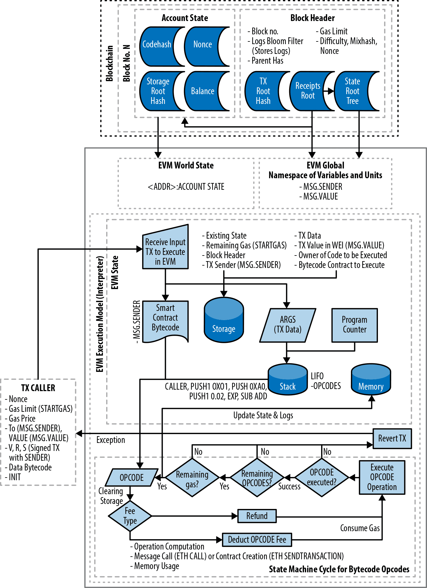
16.1.1. 與現有的虛擬機科技作比較
-
虛擬機（Virtual Machine）（Virtualbox, QEMU, 雲計算）
-
Java 虛擬機（VM）
虛擬機技術（如Virtualbox和QEMU / KVM）與EVM的不同之處在於它們的目的是提供管理程式功能，或者處理客戶作業系統與底層主機作業系統和硬體之間的系統調用，任務調度和資源管理的軟體抽象。
然而，Java VM（JVM）規範的某些方面確實包含與EVM的相似之處。從高級概述來看，JVM 旨在提供與底層主機作業系統或硬體無關的運行時環境，從而實現各種系統的兼容性。在JVM上運行的高級程式語言（如Java或Scala）被編譯到相應的指令集 Bytecode 中。這與編譯要在EVM上運行的Solidity源檔案相當。
16.1.2. EVM機器語言（ Bytecode 操作）
EVM機器語言分為特定的指令集組，例如算術運算，邏輯和比較運算，控制流，系統調用，堆疊操作和儲存器操作。除典型的 Bytecode 操作外，EVM還必須管理帳戶資訊（即地址和餘額），當前gas價格和區塊資訊。
- 通用堆疊操作
-
堆疊和記憶體管理的操作碼指令：
POP // 項目出棧 PUSH // 項目入棧 MLOAD // 將項目加載到記憶體中 MSTORE // 在記憶體中儲存項目 JUMP // 改變程式計數器的位置 PC // 程式計數器 MSIZE // 活動的記憶體大小 GAS // 交易可用的gas數量 DUP // 複製棧項目 SWAP // 交換棧項目
- 通用系統操作
-
執行程式的系統的操作碼指令：
CREATE // 創建新的帳戶 CALL // 在帳戶間傳遞消息的指令 RETURN // 執行停機 REVERT // 執行停機，恢復狀態更改 SELFDESTRUCT // 執行停機，並標記帳戶為刪除的
- 算術運算
-
通用算術運算程式碼指令：
添加//添加 MUL //乘法 SUB //減法 DIV //整數除法 SDIV //有符號整數除法 MOD // Modulo（剩餘）操作 SMOD //簽名模運算 ADDMOD //模數加法 MULMOD //模數乘法 EXP //指數運算 STOP //停止操作
- 環境操作碼
-
處理執行環境資訊的通用操作碼：
ADDRESS //當前執行帳戶的地址 BALANCE //帳戶餘額 CALLVALUE //執行環境的交易值 ORIGIN //執行環境的原始地址 CALLER //執行調用者的地址 CODESIZE //執行環境程式碼大小 GASPRICE //gas價格狀態 EXTCODESIZE //帳戶的程式碼大小 RETURNDATACOPY //從先前的記憶體調用輸出的數據的副本
16.1.3. 狀態
與任何計算系統一樣，狀態概念也很重要。就像CPU跟蹤執行過程一樣，EVM必須跟蹤各種組件的狀態以支持交易。這些組件的狀態最終會推動總體區塊鏈的變化程度。這方面導致將以太坊描述為_基於交易的狀態機_，包含以下組件：
- World State
-
160位地址識別碼和帳戶狀態之間的映射，在不可變的_Merkle Patricia Tree_資料結構中維護。
- Account State
-
包含以下四個組件：
-
nonce：表示從該相應帳戶發送的交易數量的值。
-
balance：帳戶地址擁有的_wei_的數量。
-
storageRoot：Merkle Patricia Tree根節點的256位雜湊值。
-
codeHash：各個帳戶的EVM程式碼的不可變雜湊值。
-
- Storage State
-
在EVM上運行時維護的帳戶特定狀態資訊。
- Block State
-
交易所需的狀態值包括以下內容：
-
blockhash：最近完成的塊的雜湊值。
-
coinbase：收件人的地址。
-
timestamp：當前塊的時間戳。
-
number：當前塊的編號。
-
difficulty：當前區塊的難度。
-
gaslimit：當前區塊的gas限制。
-
- Runtime Environment Information
-
用於使用交易的資訊。
-
gasprice：當前gas價格，由交易發起人指定。
-
codesize：交易程式碼庫的大小。
-
caller：執行當前交易的帳戶的地址。
-
origin：當前交易原始發件人的地址。
-
狀態轉換使用以下函數計算：
- 以太坊狀態轉換函數
-
用於計算_valid state transition_。
- 區塊終結狀態轉換函數
-
用於確定最終塊的狀態，作為挖礦過程的一部分，包含區塊獎勵。
- 區塊級狀態轉換函數
-
應用於交易狀態時的區塊終結狀態轉換函數的結果狀態。
16.1.4. 將Solidity編譯為EVM Bytecode
可以通過命令行完成將Solidity源檔案編譯為EVM Bytecode 。有關其他編譯選項的列表，只需運行以下命令：
$ solc --help
使用_—opcodes_命令行選項可以輕鬆實現生成Solidity源檔案的原始操作碼流。此操作碼流會遺漏一些資訊（_—asm_選項會生成完整資訊），但這對於第一次介紹是足夠的。例如，編譯範例Solidity檔案_Example.sol_並將操作碼輸出填充到名為_BytecodeDir_的目錄中，使用以下命令完成：
$ solc -o BytecodeOutputDir --opcodes Example.sol
或
$ solc -o BytecodeOutputDir --asm Example.sol
以下命令將為我們的範例程式生成 Bytecode 二進制檔案：
$ solc -o BytecodeOutputDir --bin Example.sol
生成的輸出操作碼檔案將取決於Solidity源檔案中包含的特定合約。我們的簡單Solidity檔案_Example.sol_ [simple_solidity_example]只有一個名為“example”的合約。
pragma solidity ^0.4.19;
contract example {
address contractOwner;
function example() {
contractOwner = msg.sender;
}
}
如果查看_BytecodeDir_目錄，你將看到操作碼檔案_example.opcode_（請參閱[simple_solidity_example]），其中包含“example”合約的EVM機器語言操作碼指令。在文字編輯器中打開_example.opcode_檔案將顯示以下內容：
PUSH1 0x60 PUSH1 0x40 MSTORE CALLVALUE ISZERO PUSH1 0xE JUMPI PUSH1 0x0 DUP1 REVERT JUMPDEST CALLER PUSH1 0x0 DUP1 PUSH2 0x100 EXP DUP2 SLOAD DUP2 PUSH20 0xFFFFFFFFFFFFFFFFFFFFFFFFFFFFFFFFFFFFFFFF MUL NOT AND SWAP1 DUP4 PUSH20 0xFFFFFFFFFFFFFFFFFFFFFFFFFFFFFFFFFFFFFFFF AND MUL OR SWAP1 SSTORE POP PUSH1 0x35 DUP1 PUSH1 0x5B PUSH1 0x0 CODECOPY PUSH1 0x0 RETURN STOP PUSH1 0x60 PUSH1 0x40 MSTORE PUSH1 0x0 DUP1 REVERT STOP LOG1 PUSH6 0x627A7A723058 KECCAK256 JUMP 0xb9 SWAP14 0xcb 0x1e 0xdd RETURNDATACOPY 0xec 0xe0 0x1f 0x27 0xc9 PUSH5 0x9C5ABCC14A NUMBER 0x5e INVALID EXTCODESIZE 0xdb 0xcf EXTCODESIZE 0x27 EXTCODESIZE 0xe2 0xb8 SWAP10 0xed 0x
使用_—asm_選項編譯範例會在_BytecodeDir_目錄中生成一個檔案 example.evm。這包含詳細的EVM機器語言說明：
/* "Example.sol":26:132 contract example {... */
mstore(0x40, 0x60)
/* "Example.sol":74:130 function example() {... */
jumpi(tag_1, iszero(callvalue))
0x0
dup1
revert
tag_1:
/* "Example.sol":115:125 msg.sender */
caller
/* "Example.sol":99:112 contractOwner */
0x0
dup1
/* "Example.sol":99:125 contractOwner = msg.sender */
0x100
exp
dup2
sload
dup2
0xffffffffffffffffffffffffffffffffffffffff
mul
not
and
swap1
dup4
0xffffffffffffffffffffffffffffffffffffffff
and
mul
or
swap1
sstore
pop
/* "Example.sol":26:132 contract example {... */
dataSize(sub_0)
dup1
dataOffset(sub_0)
0x0
codecopy
0x0
return
stop
sub_0: assembly {
/* "Example.sol":26:132 contract example {... */
mstore(0x40, 0x60)
0x0
dup1
revert
auxdata: 0xa165627a7a7230582056b99dcb1edd3eece01f27c9649c5abcc14a435efe3bdbcf3b273be2b899eda90029
}
--bin 選項產生以下內容：
60606040523415600e57600080fd5b336000806101000a81548173 ffffffffffffffffffffffffffffffffffffffff 021916908373 ffffffffffffffffffffffffffffffffffffffff 160217905550603580605b6000396000f3006060604052600080fd00a165627a7a7230582056b99dcb1e
讓我們檢查前兩條指令（參考[common_stack_opcodes]）：
PUSH1 0x60 PUSH1 0x40
這裡我們有_mnemonic_“PUSH1”，後跟一個值為“0x60”的原始字節。這對應於EVM指令，該操作將操作碼之後的單字節解釋為文字值並將其推入堆疊。可以將大小最多為32個字節的值壓入堆疊。例如，以下 Bytecode 將4字節值壓入堆疊：
PUSH4 0x7f1baa12
第二個push操作碼將“0x40”儲存到堆疊中（在那裡已存在的“0x60”之上）。
接下來的兩個指令：
MSTORE CALLVALUE
MSTORE是一個堆疊/記憶體操作（參見[common_stack_opcodes]），它將值保存到記憶體中，而CALLVALUE是一個環境操作碼（參見[common_environment_opcodes]），它返回正在執行的消息調用的存放值。
16.1.5. 執行EVM Bytecode
16.1.6. Gas，會計
對於每個交易，都有一個關聯的_gas-limit_和_gas-price_，它們構成了EVM執行的費用。這些費用用於促進交易的必要資源，例如計算和儲存。gas還用於創建帳戶和智能合約。
16.1.7. 圖靈完備性和gas
簡單來說，如果系統或程式語言可以解決你輸入的任何問題，它是_圖靈完備的_。這在以太坊黃皮書中討論過：
It is a quasi-Turing complete machine; the quasi qualification comes from the fact that the computation is intrinsically bounded through a parameter, gas, which limits the total amount of computation done.
ETHEREUM: A SECURE DECENTRALISED GENERALISED TRANSACTION LEDGER
雖然EVM理論上可以解決它收到的任何問題，但gas可能會阻止它這樣做。這可能在以下幾個方面發生：
1）在以太坊開採的塊具有與之相關的gas限制; 也就是說，區塊內所有交易所使用的總gas不能超過一定限度。 2）由於gas和gas價格齊頭並進，即使取消了gas限制，高度複雜的交易也可能在經濟上不可行。
但是，對於大多數用例，EVM可以解決提供給它的任何問題。
16.1.8. Bytecode 與運行時 Bytecode
編譯合約時，你可以獲得_合約 Bytecode _或_運行時 Bytecode _。
合約 Bytecode 包含實際上最終位於區塊鏈上的 Bytecode _以及_將 Bytecode 放在區塊鏈上並運行合約構造函數所需的 Bytecode 。
另一方面，運行時 Bytecode 只是最終位於區塊鏈上的 Bytecode 。這不包括初始化合約並將其放在區塊鏈上所需的 Bytecode 。
讓我們以前面創建的簡單`Faucet.sol`合約為例。
// Version of Solidity compiler this program was written for
pragma solidity ^0.4.19;
// Our first contract is a faucet!
contract Faucet {
// Give out ether to anyone who asks
function withdraw(uint withdraw_amount) public {
// Limit withdrawal amount
require(withdraw_amount <= 100000000000000000);
// Send the amount to the address that requested it
msg.sender.transfer(withdraw_amount);
}
// Accept any incoming amount
function () public payable {}
}
要獲得合約 Bytecode ，我們將運行`solc --bin Faucet.sol`。如果我們只想要運行時 Bytecode ，我們將運行`solc --bin-runtime Faucet.sol`。
如果比較這些命令的輸出，你將看到運行時 Bytecode 是合約 Bytecode 的子集。換句話說，運行時 Bytecode 完全包含在合約 Bytecode 中。
16.1.9. 反彙編 Bytecode
反彙編EVM Bytecode 是瞭解高級別Solidity在EVM中的作用的好方法。你可以使用一些反彙編程式來執行此操作：
-
Porosity 是一個流行的開源反編譯器：https://github.com/comaeio/porosity
-
Ethersplay 是Binary Ninja的EVM插件，一個反彙編程式：https://github.com/trailofbits/ethersplay
-
IDA-Evm 是IDA的EVM插件，另一個反彙編程式：https://github.com/trailofbits/ida-evm
在本節中，我們將使用 Binary Ninja 的 Ethersplay 插件。
在獲取Faucet.sol的運行時 Bytecode 後，我們可以將其提供給Binary Ninja（在匯入Ethersplay插件之後）以查看EVM指令。
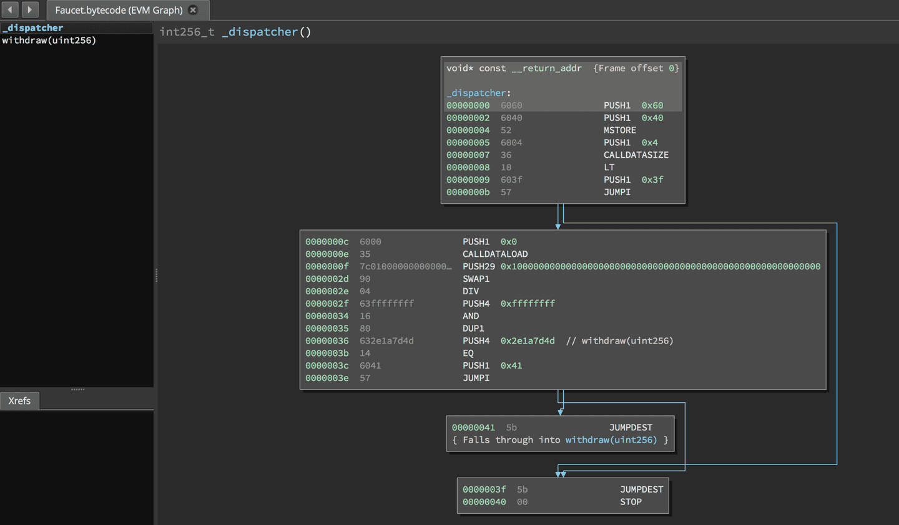
當你將交易發送到智能合約時，交易首先會與該智能合約的調度員（dispatcher）進行交互。調度程式讀入交易的數據欄位並將其發送到適當的函數。
在熟悉的MSTORE指令之後，我們在編譯的Faucet.sol合約中看到以下創建：
PUSH1 0x4 CALLDATASIZE LT PUSH1 0x3f JUMPI
"PUSH1 0x4" 將0x4置於堆疊頂部，棧初始為空。“CALLDATASIZE”獲取接收到的交易的calldata的大小（以字節為單位）並將其推送到堆疊中。當前堆疊如下所示：
| Stack |
|---|
0x4 |
length of calldata from tx (msg.data) |
下一條指令是“LT”，是“小於（less than）”的縮寫。LT指令檢查堆疊上的頂部項是否小於堆疊上的下一項。在我們的例子中，它檢查CALLDATASIZE的結果是否小於4個字節。
為什麼EVM會檢查交易的calldata是否至少為4個字節？因為函數識別碼的工作原理。每個函數由其keccak256雜湊的前四個字節標識。通過將函數的名稱和它所採用的參數放入keccak256雜湊函數，我們可以推匯出它的函數識別碼。在我們的合約中，我們有：
keccak256("withdraw(uint256)") = 0x2e1a7d4d...因此，“withdraw（uint256）”函數的函數識別碼是0x2e1a7d4d，因為它們是結果雜湊的前四個字節。函數識別碼總是4個字節長，所以如果發送給合約的交易的整個數據欄位小於4個字節，那麼除非定義了_fallback函數_，否則沒有交易可能與之通信的函數。因為我們在Faucet.sol中實現了這樣的fallback函數，所以當calldata的長度小於4個字節時，EVM會跳轉到此函數。
如果msg.data欄位少於4個字節，LT將彈出堆疊的前兩個值並將1推到其上。否則，它會推入0。在我們的例子中，讓我們假設發送給我們的合約的transaciton的msg.data欄位_was_少於4個字節。
“PUSH1 0x3f”指令將字節“0x3f”壓入堆疊。在此指令之後，堆疊如下所示：
| Stack |
|---|
1 |
0x3f |
下一條指令是“JUMPI”，代表“jump if”。它的工作原理如下：
jumpi(label, cond) // Jump to "label" if "cond" is true
在我們的例子中，“label”是0x3f，這是我們的fallback函數存在於我們的智能合約中的地方。“cond”參數為1，它來自之前LT指令的結果。要將整個序列放入單詞中，如果交易數據少於4個字節，則合約將跳轉到fallback函數。
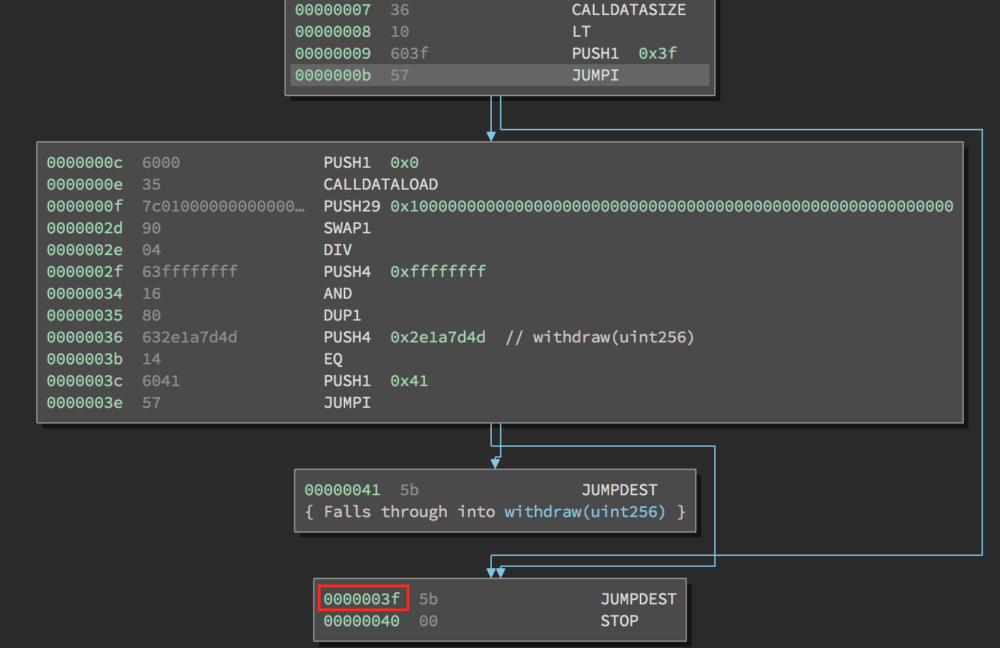
我們來看一下調度員的核心程式碼塊。假設我們收到的長度大於4個字節的calldata，“JUMPI”指令不會跳轉到回退函數。相反，程式碼執行將遵循下一條指令：
PUSH1 0x0 CALLDATALOAD PUSH29 0x1000000... SWAP1 DIV PUSH4 0xffffffff AND DUP1 PUSH4 0x2e1a7d4d EQ PUSH1 0x41 JUMPI
“PUSH1 0x0”將0壓入堆疊，否則為空。“CALLDATALOAD”接受發送到智能合約的calldata中的索引作為參數，並從該索引讀取32個字節，如下所示：
calldataload(p) // call data starting from position p (32 bytes)
由於0是從PUSH1 0x0命令傳遞給它的索引，因此CALLDATALOAD從字節0開始讀取32字節的calldata，然後將其推送到堆疊的頂部（在彈出原始0x0之後）。在“PUSH29 0x1000000 …”指令之後，堆疊如下所示：
| Stack |
|---|
32 bytes of calldata starting at byte 0 |
0x1000000… (29 bytes in length) |
“SWAP1”用它後面的_第i個_元素交換堆疊頂部元素。在這裡，它與密鑰數據交換0x1000000 … 新堆疊如下所示：
| Stack |
|---|
0x1000000… (29 bytes in length) |
32 bytes of calldata starting at byte 0 |
下一條指令是“DIV”，其工作方式如下：
div(x, y) // x / y
在這裡，x = 32字節的calldata從字節0開始，y = 0x100000000 …（總共29個字節）。你能想到調度員為什麼要進行劃分嗎？這是一個提示：我們從索引0開始從calldata讀取32個字節。該calldata的前四個字節是函數識別碼。
我們之前推送的0x100000000 ….長度為29個字節，由開頭的1組成，後跟全0。將我們的32字節的calldata除以此0x100000000 ….將只留下從索引0開始的callataload的_topmost 4字節_這四個字節 - 從索引0開始的calldataload中的前四個字節 - 是函數識別碼，並且這就是EVM如何提取該欄位。
如果你不清楚這一部分，可以這樣想：在base10，1234000/1000 = 1234。在base16中，這沒有什麼不同。不是每個地方都是10的倍數，它是16的倍數。正如在我們的較小的例子中除以103（1000）只保留最頂部的數字，將我們的32字節基數16值除以1629做同樣的事。
DIV（函數識別碼）的結果被推送到堆疊上，我們的新堆疊如下：
| Stack |
|---|
function identifier sent in msg.data |
由於“PUSH4 0xffffffff”和“AND”指令是冗餘的，我們可以完全忽略它們，因為堆疊在完成後將保持不變。“DUP1”指令複製堆疊上的1st項，這是函數識別碼。下一條指令“PUSH4 0x2e1a7d4d”將抽取（uint256）函數的計算函數識別碼推送到堆疊。堆疊現在看起來如下：
| Stack |
|---|
function identifier sent in msg.data |
function identifier sent in msg.data |
0x2e1a7d4d |
下一條指令“EQ”彈出堆疊的前兩項並對它們進行比較。這是調度程式完成其主要工作的地方：它比較交易的msg.data欄位中發送的函數識別碼是否與withdraw（uint256）匹配。如果它們相等，則EQ將1推入堆疊，這最終將用於跳轉到fallback函數。否則，EQ將0推入堆疊。
假設發送給我們合約的交易確實以withdraw（uint256）的函數識別碼開頭，我們的新棧看起來如下：
| Stack |
|---|
function identifier sent in msg.data |
1 |
接下來，我們有“PUSH1 0x41”，這是withdraw（uint256）函數在合約中的地址。在此指令之後，堆疊如下所示：
| Stack |
|---|
function identifier sent in msg.data |
1 |
0x41 |
接下來是JUMPI指令，它再次接受堆疊上的前兩個元素作為參數。在這種情況下，我們有“jumpi（0x41,1）”，它告訴EVM執行跳轉到withdraw（uint256）函數的位置。
16.2. EVM工具參考
-
[ByteCode To Opcode Disassembler](https://etherscan.io/opcode-tool) (用於檢查/調試編譯是否完整運行，如果源程式碼未發佈則可用於逆向工程) == 共識
以太坊網路中的共識是指多個節點或代理在給定的時間點就區塊鏈狀態達成一致的能力。這與傳統的定義爲個人或羣體之間的一般協議的共識密切相關但不同。在這裏，社區必須解決在技術上（在網路內）和社交上達成共識的挑戰（以確保協議不會分叉或破裂）。本章將概述建立共識的一些技術方法。
當涉及區塊鏈上分散記錄保存和驗證的核心功能時，單獨依靠信任來確保添加到帳本的資訊是正確的可能會成爲問題。這種挑戰在去中心化網路中更爲明顯，因爲沒有中央實體來決定什麼應該和不應該被視爲是真實的。缺乏一箇中央決策實體是區塊鏈受歡迎程度的主要吸引力之一，因爲系統能夠抵抗審查制度，並且無需對許可或資訊獲取權限的依賴。然而，這些好處可能帶來成本，因爲如果沒有可信的仲裁員，任何分歧，欺騙或差異都需要使用數學，經濟或社會技術進行協調。因此，分散的系統更有抵禦攻擊的能力，但在應對變化時卻不那麼果斷。
獲得共識和信任資訊的能力將對區塊鏈技術作爲資產類別和技術的未來採用和實用具有重要意義。爲了應對這一挑戰並保持權力下放的重要性，社區不斷嘗試不同共識模式，我們將在本章中探討。
16.3. 共識度量
共識度量是可測量的數據，區塊鏈網路的節點必須在該數據上達成一致，以便爲每個塊中包含的數據建立並保持一致。在區塊鏈技術中，每次將新塊添加到鏈中時，每個網路節點都會測量並批准一致性度量。作爲共識度量的結果，區塊鏈充當了從一個確定可驗證的事實延伸到下一個事實的真理鏈。由於共識度量，區塊鏈協議的節點變爲 迷你公證人 mini-notaries，能夠從真實的節點中立即分辨出區塊鏈的錯誤副本，並將該事實報告給整個網路。這些措施是必需的，以便阻止通過提交包含虛假資訊的區塊來欺騙網路不良行爲者。由於一致性度量，區塊鏈不僅建立了的完整性，而且長期保持不變。共識度量有多種形式，但對於此討論而言，最重要的兩種是基於風險的度量和基於工作量的度量。
16.4. 基於Hash的度量
通常稱爲工作量證明（PoW）度量，這些度量建立了共識，因爲使用它們的協議將計算機設置爲查找難題的答案。找到適合網路參數的雜湊的難題要求節點提交處理能力並使用電力與其他節點競爭以提出有效的雜湊。爲了便於說明，可以考慮超級計算機，它的唯一工作就是在整數空間中搜索質數。現在考慮由普通計算機組成的整個網路。這些計算機放在一起時，可以說具有超級計算機的組合計算能力。這個計算機網路的唯一工作類似於搜索另一種稱爲SHA-256雜湊的數字的可能數字。這些數字具有獨特的屬性，就像質數一樣，儘管在生成符合網路設定標準的雜湊方面存在很大困難，但在發現時可以輕鬆驗證它們。想象計算雜湊和驗證雜湊的一種方法是使用拼圖遊戲類比。這個難題非常困難且耗時，但是一眼就能看出它是否已經完成。
當準確計算SHA-256雜湊值時，它們可用作證明已使用一定量的計算能力來查找數字的證明。最新的質數是asciimath：[2^(77,232,917）- 1]。它是由計算機發現的，就像計算機發現的SHA-256雜湊一樣。SHA-256雜湊比新質數更容易找到，但是找到雜湊的固有難點在於基於雜湊的度量得出它們的能力。
每個SHA-256雜湊都有64個十六進制字符。例如，這裏是單詞“yank”的SHA-256雜湊。
“yank”（SHA-256）= 45F1B9FC8FD5F760A2134289579DF920AA55830F2A23DCF50D34E16C1292D7E0
將其與三個字母“yan”的SHA-256雜湊：
“yan”（SHA-256）= 281ACA1A80B52620BD717E8B14A0386B8ADA92AE859AC2C8A2AC222EFA02EDBB
兩個字母“ya”的SHA-256雜湊：
“ya”（SHA-256）= 6663103A3E47EFC879EA31FA38458BE23BE0CE0895F3D8B27B7EA19A1120B3D4
單個字母“y”的SHA-256雜湊：
“y”（SHA-256）= A1FCE4363854FF888CFF4B8E7875D600C2682390412A8CF79B37D0B11148B0FA
16.5. 基於雜湊的度量驗證
如果你對足夠多的隨機短語進行了雜湊，有點像打字機上的猴子，最終你會發現一個匹配特定模式的雜湊。在雜湊爲“ya”的情況下，請注意它以模式“666”開頭。這類似於比特幣，但比特幣要求找到與以“000”開頭的模式匹配的雜湊值。可以通過將前一個區塊中的資訊插入到SHA-256雜湊演算法中來創建的任何雜湊，並用於創建下一個塊，只要它在數字中具有正確數量的前導零，網路就會認可，並且區塊獎勵將是你的。
由於想要挖掘比特幣的人數不斷增加，因此每秒尋找SHA-256雜湊值的算力總是越來越多。比特幣軟體通過自動調整共識度量的難度來處理這種意外事件，增加前導零的數量以形成共識。這可以保證新塊的創建時間與前面的塊大致相同。對於比特幣網路，爲十分鐘，但可以輕鬆更改。在以太坊中，平均區塊生成時間約爲10秒。
17. 基於風險的度量
通常稱爲Proof-of-Stake（PoS）度量，這些度量基於以下事實建立共識：選擇創建無效區塊的每個人都會失去比通過創建有效區塊獲得的更多的東西。該度量是通過關於鏈內數據的共識創造的，而不是關於鏈外數據的共識。基於雜湊的共識度量主要關注SHA-256雜湊的質量和精確性。基於風險的度量主要關注任何特定節點在添加新塊時所承擔的風險。
所有節點在這裏達成一致的度量是哪些節點創建了正確的塊，哪些節點沒有。在某種程度上，這已經內建在比特幣協議中。比特幣協議假定正確的塊是大多數節點正在挖掘的塊。它假設礦工不會選擇不正確的區塊，因爲這不利於挖掘壞區塊。
另一方面，基於風險的鏈依賴於對未能創建網路中其他節點認可的塊的創建者的快速，即時和不可逆轉的影響。通過強制執行資源丟失的風險，基於雜湊的度量（也依賴於不想浪費資源的人員）過程可以以更簡單的方式進行縮短和實施。目前正在研究在以太坊中實現這種共識度量模型。
工作量證明是一種共識協議，它將網路中的有效區塊鏈視爲創建計算成本最高的鏈。這裏提到的計算工作是將所有塊添加到當前區塊鏈所必須完成的工作。這項工作由網路節點完成，並且必須在計算上很困難，以便使工作變得非常重要，但也必須是可行的，以便在經過合理的努力之後可以實現。最終，網路將依賴於提供此PoW的節點以維持區塊鏈，因此，網路的最佳利益是需要合理的PoW。
在以太坊網路以及許多其他區塊鏈網路中，獲取PoW需要找到要添加到區塊鏈的塊的雜湊。這個雜湊是通過雜湊由塊的數據和隨機數組成的字串獲得的（創建此字串的方法可能會有所不同，但整個過程是相同的）。該雜湊必須小於某個閾值（由網路的難度確定），並且一旦節點發現產生該雜湊的隨機數，則接受相應的塊並將其添加到區塊鏈中。
找到這個有效雜湊的方法是修改nonce，通常將其初始化爲零並在每次迭代時遞增，直到產生低於網路閾值的雜湊。此過程稱爲挖掘。由於挖掘中使用的雜湊函數的性質，找到有效隨機數的唯一方法是通過暴力搜索，即檢查隨機數的每個可能值，直到找到滿足網路要求的雜湊。因此，提供有效的隨機數被認爲是PoW。
17.1. PoS
權益證明（PoS，Proof-of-Stake）是公共區塊鏈的一類共識演算法，它依賴於驗證者在網路中的經濟利益。在基於工作量證明（PoW）的公共區塊鏈（例如比特幣和以太坊的當前實現）中，該演算法獎勵解密加密謎題的參與者，以便驗證交易並創建新的塊（即挖掘）。在基於PoS的公共區塊鏈中（例如以太坊即將發佈的Casper實現），一組驗證者輪流對下一個塊進行建議和投票，每個驗證者的投票權重取決於其存款的大小（即賭注）。PoS的顯着優勢包括安全性，降低集中風險和能源效率。
通常，權益證明演算法如下。區塊鏈跟蹤一組驗證者，任何持有區塊鏈基本密碼貨幣的人（在以太坊的情況下是ether）都可以通過發送一種特殊類型的交易來將其以太幣鎖定到存款中，從而成爲驗證者。然後，通過所有當前驗證者都可以參與的一致性演算法來完成創建和同意新塊的過程。
有許多種共識演算法，以及許多方法可以爲參與共識演算法的驗證人分配獎勵，因此有許多“口味”的權益證明。從演算法的角度來看，有兩種主要類型：基於鏈的權益證明和BFT風格的權益證明。
-
在基於鏈的證明中，演算法在每個時隙中僞隨機地選擇一個驗證者（例如，每個10秒的週期可能是一個時隙），併爲該驗證者分配創建單個塊的權限，這個塊必須指向一些前一個塊（通常是前一個最長鏈末端的塊），因此隨着時間的推移，大多數塊會聚成一個不斷增長的鏈。
-
在BFT風格的股權證明中，驗證者被隨機分配提出區塊的權利，但是通過多輪過程來確定哪個區塊是規範的，其中每個驗證者在每輪中發送對某個特定區塊的“投票”，在流程結束時，所有（誠實和在線）驗證者永久同意任何給定的塊是否屬於鏈條的一部分。請注意，塊可能仍然鏈接在一起; 關鍵的區別在於塊上的共識可以在一個塊內，並且不依賴於它之後的鏈的長度或大小。
17.1.1. PoA
授權證明（PoA）是PoS一致性演算法的子集，主要由測試網和私有或聯盟網路使用。在基於PoA的區塊鏈中，交易有效性最終由一組經批准的鏈上帳戶確定，稱爲“授權節點”。確定授權節點的標準是通過網路治理結構中編寫的方法確定性地決定的。
PoA被廣泛認爲是達成共識的最快途徑，但依賴於驗證節點尚未受到損害的假設。非驗證參與者可以像公共以太網那樣訪問和使用網路（通過利用p2p交易，合約，帳戶等）
PoA共識依賴於驗證者的聲譽和過去的表現。這個想法是驗證者節點將其身份/聲譽放到我的身上。私人聯盟網路的一個重要方面是鏈上地址與已知的現實世界身份之間的聯繫。因此，我們可以說驗證節點正在盯着他們的“身份”或“聲譽”（而不是他們的經濟持有）。這爲驗證者創建了一定程度的問責制，最適合企業，私有或測試網路。
PoA目前由測試網路Kovan（PoA網路）使用，並且可以在Parity中輕鬆配置用於私人聯盟網路。
17.1.2. DPoS
代理權益證明（DPoS）是一種經過修改的權益證明形式，網路參與者投票選舉一系列代表（也稱爲證人）來驗證和保護區塊鏈。這些代表有點類似於PoA中的權威節點，除非他們的權限可能被選民撤銷。
在DPoS共識中，與PoS一樣，投票權重與用戶注入的投注金額成正比。這就產生了一個場景，即較多token持有者比較少token的持有者擁有更多的投票權。從遊戲理論的角度來看，這是有道理的，因爲那些具有更多經濟的“遊戲中的皮膚”的人自然會有更大的動力來選出最有效的代表證人。
此外，代表證人會收到驗證每個區塊的獎勵，因此被激勵保持誠實和有效 - 以免被替換。然而，有一些方法可以使“賄賂”變得相當合理; 例如，交易所可以提供存款利率（或者更加含糊地，使用交易所自己的資金建立一個很好的界面和功能），交易所運營商可以使用大量存款進行DPoS共識投票。。
18. 以太坊的共識
18.1. Ethash簡介
Ethash是以太坊*工作量證明（PoW）演算法*，它依賴於數據集的初始紀元的生成，該數據集的大小約爲1GB，稱爲有向無環圖（DAG）。DAG*使用 Dagger-Hashimoto演算法*的版本，它是*Vitalik Buterin的Dagger演算法*和*Thaddeus Dryja的Hashimoto演算法*的組合。* Dagger-Hashimoto演算法*是以太坊1.0使用的挖掘演算法。隨着時間的推移，DAG*線性增長，每*紀元（30,000塊，125小時）更新一次。
18.1.1. 種子，緩存，數據生成
PoW演算法*涉及：
- 通過掃描*DAG*的先前塊頭來計算每個塊的*Seed。+
- Cache 是一個16MB的僞隨機緩存，根據種子計算，用於輕量級客戶端中的儲存。
- 來自cache的*DAG* Data Generation 在完整客戶端和礦工上用於儲存 (數據集中的每一項只依賴cache中的一小部分項目）+
- *礦工*通過隨機抽取數據集的片段並將它們混合在一起進行挖掘。可以使用儲存的緩存和低記憶體進行驗證，以重新生成所需的數據集的特定部分。
-
Ethash-DAG: https://github.com/ethereum/wiki/wiki/Ethash-DAG
-
Ethash Specification: https://github.com/ethereum/wiki/wiki/Ethash
-
Mining Ethash DAG: https://github.com/ethereum/wiki/wiki/Mining#ethash-dag
-
Dagger-Hashimoto Algorithm: https://github.com/ethereum/wiki/blob/master/Dagger-Hashimoto.md
-
DAG Explanation and Images: https://ethereum.stackexchange.com/questions/1993/what-actually-is-a-dag
-
Ethash in Ethereum Yellowpaper: https://ethereum.github.io/yellowpaper/paper.pdf#appendix.J
-
Ethash C API Example Usage: https://github.com/ethereum/wiki/wiki/Ethash-C-API
18.2. Polkadot簡介
Polkadot是一種鏈間區塊鏈協議，包括與權益證明（PoS）鏈的整合，允許Parachain在沒有內部共識的情況下獲得共識。
-
Relay-Chains 連接到所有Parachains並協調區塊鏈之間的共識和交易傳遞，並使用*驗證函數*通過驗證PoV候選塊的正確性來促進Parachain交易的最終確定。
-
Parachains（跨網路的並行鏈），它們是區塊鏈，用於收集和並行處理交易以實現可伸縮性。
-
無需信任，交易直接在區塊鏈之間轉移，而不是通過中間人或分散交易所。
-
彙總安全，根據共識協議規則（Rules）檢查Parachain交易有效性。通過結合由動態治理系統確定的每個集團成員的一定比例的權益token資本來實現安全性。羣組成員資格需要綁定來自Validators和Nominators的賭注token的輸入，如果出現不良行爲，可以在試驗中使用不當行爲證明進行扣除。
-
Bridges 通過解耦具有不同共識架構機制的區塊鏈網路之間的鏈接來提供可擴展性。
-
Collators 負責監管和維護特定的Parachain，方法是將其可用交易整理爲有效性證明（PoV）候選塊，向Validators報告以證明交易有效並在塊中正確執行。如果它有winning ticket（由最接近Golden Ticket的Polkadot地址的Collator簽名）並且變得規範和最終確定，則通過支付他們從創建PoV候選區塊所收集的任何交易費來激勵他們。Collators被給予Polkadot地址。膠合劑不與鉚接標記粘合。
-
*Golden Ticket*是包含獎勵的每個Parachain的每個區塊中的特定Polkadot地址。Collators被賦予一個Polkadot地址，並向Validator提供由Collator簽名的PoV候選塊。獎勵的獲獎者在PoV候選區塊中有一個Collator Polkadot地址，該區域最接近Golden Ticket Polkadot地址
-
Fisherman 監控Polkadot網路交易，以發現Polkadot社區的不良行爲。將驗證者帶到法庭並證明他們表現得很糟糕的Fisherman會被確認者的債券激勵，因爲債券被用作懲罰不良行爲的懲罰。
-
驗證者 是Parachain社區中的維護者，他們被部署到不同的Parachains來監管系統。驗證者同意Merkle Trees的根源。驗證者必須使交易可用。漁民可以將驗證員帶到法庭，因爲沒有進行交易，相關的Collators可能會質疑該交易是否可以作爲整理證明。
-
提名者（類似於PoW挖掘）被動監督並投票給他們認爲可以通過賭注代幣資助他們認可的確認者。
Polkadot的Relay-Chains使用*Proof of Stake（PoS*系統，其中結構化狀態機（SM）並行執行多個拜占庭容錯（BFT）共識，以便SM過程收斂于越多個Parachain維度的包含有效候選者的解決方案跨的塊。每個Parachain中的有效候選塊是根據交易的可用性和有效性確定的，因爲根據共識機制，目標驗證者（下一個塊）只有在具有足夠的交易資訊時才能從源驗證者（前一個塊）執行傳入消息。可用和有效。驗證人投票選擇Collators使用規則達成共識的有效候選區塊。
-
Polkadot link: https://polkadot.network
-
Polkadot presentation at Berlin Parity Ethereum link: https://www.youtube.com/watch?v=gbXEcNTgNco == Vyper: 面向合約的程式語言
- 研究表明，具有跟蹤漏洞的智能合約可能導致意外執行。https://arxiv.org/pdf/1802.06038.pdf[最近的一項研究] 分析了970,898份合約。它概述了跟蹤漏洞的三個基本類別（已經導致以太坊用戶的災難性資金損失）。這些類別包括
-
-
自殺合約。可以被任意地址殺死的合約
-
貪婪的合約，在某個執行狀態後無法釋放ether
-
浪費合約，不經意地將ether釋放到任意地址
-
Vyper是一種面向合約的實驗性程式語言，面向以太坊虛擬機（EVM）。Vyper致力於通過簡化程式碼並使其對人類可讀而提供卓越的審計能力。Vyper的一個原則是讓開發人員幾乎不可能編寫誤導性程式碼。這可以通過多種方式完成，我們將在下面介紹。
18.3. 與 Solidity 比較
本節是那些正在考慮使用Vyper程式語言開發智能合約的人的參考。該部分主要對比了Vyper與Solidity的對比； 概覽，合理的推理，為什麼Vyper不包括以下傳統的物件導向編程（OOP）概念：
- Modifiers
-
在Solidity中，你可以使用修飾器編寫函數。例如，以下函數`changeOwner`將在一個名為`onlyBy`的修飾器中運行程式碼，作為其執行的一部分。
function changeOwner(address _newOwner) public onlyBy(owner) { owner = _newOwner; }正如我們在下面看到的，名為`onlyBy`的修飾器強制執行與所有權相關的規則。雖然修飾器很強大（能夠改變函數體中發生的事情），但它們也可能導致誤導性的程式碼執行。例如，確保`changeOwner`函數邏輯的唯一方法是每次實現程式碼時檢查並測試`onlyBy`修飾器。顯然，如果將來更改修改器，則調用它的函數可能會產生與最初預期不同的結果。
modifier onlyBy(address _account) { require(msg.sender == _account); _; }
總的來說，修飾器的通常用例是在函數執行之前執行單個檢查。鑑於這種情況，Vyper的建議是完全取消修飾器，並簡單地使用內聯檢查和斷言作為函數的一部分。這樣做將提高審計能力和可讀性，因為Vyper函數將在明顯的視線中遵循邏輯內聯序列，而不必引用已在別處編寫的修飾器程式碼。
- 類繼承
-
繼承允許開發者通過從現有軟體庫中獲取預先存在的功能，屬性和行為來利用預先編寫的程式碼。繼承功能強大，可以促進程式碼的重用。Solidity支持多重繼承以及多態，雖然這些被認為是物件導向編程的一些最重要的特性，但Vyper並不支持它們。Vyper堅持認為繼承的實現要求編碼人員和審計人員在多個檔案之間跳轉，以便了解程式正在做什麼。Vyper還了解優先級規則以及多個繼承如何使程式碼過於複雜而無法理解。鑑於Solidity 關於繼承的文件給出了多重繼承為何有問題的例子，這是一個公平的陳述。
- 內聯彙編
-
內聯彙編為開發人員提供了以低級別訪問以太坊虛擬機（EVM）的機會。使用內聯彙編程式碼（在更高級別的源程式碼中）時，開發人員可以通過直接訪問EVM操作碼指令來執行操作。例如，以下內聯彙編程式碼通過使用EVM操作碼mload在記憶體位置0x80處添加3。
3 0x80 mload add 0x80 mstore
如前所述，Vyper致力於為開發人員和程式碼審計人員提供最易讀的程式碼。雖然內聯彙編可以提供強大的細粒度控制，但Vyper程式語言不支持它。
- 函數重載
-
具有相同名稱和不同參數選項的多個函數定義會導致在任何給定時間調用哪個函數時會產生很多混淆。隨著函數重載，編寫誤導程式碼會更容易（ foo（“hello”）記錄“hello”但foo（“hello”，“world”）竊取你的資金。）函數重載的另一個問題是它使程式碼更難以搜索，因為你必須跟蹤哪個調用指的是哪個功能。
- 變數類型轉換
-
類型轉換是一種允許開發者將變數從一種數據類型轉換為另一種數據類型的機制。
- 前置條件和後置條件
-
Vyper明確處理前置條件，後置條件和狀態更改。雖然這會產生冗餘程式碼，但它也允許最大的可讀性和安全性。在Vyper中編寫智能合約時，開發人員應遵守以下3點。理想情況下，應仔細考慮3個點中的每個點，然後在程式碼中進行詳細記錄。這樣做將改進程式碼的設計，最終使程式碼更具可讀性和可審計性。
-
條件 - 以太坊狀態變數的當前狀態/條件是什麼
-
效果 - 這個智能合約程式碼對執行狀態變數的條件有什麼影響，即什麼會影響，什麼不會受到影響？這些影響是否與智能合約的意圖一致？
-
交互 - 現在已經詳盡地處理了前兩個步驟，現在是運行程式碼的時候了。在部署之前，邏輯上逐步執行程式碼並考慮執行程式碼的所有可能的永久結果，後果和方案，包括與其他合約的交互。
-
18.4. 一種新的編程範式
Vyper的創作為新的編程範式打開了大門。例如，Vyper正在刪除類繼承以及其他功能，因此可以說Vyper偏離了傳統的物件導向編程（OOP）範例，這很好。
歷史上，OOP提供了一種表示現實世界物件的機制。例如，OOP允許實例化可以從person類繼承的employee物件。然而，從價值轉移和/或智能合約的角度來看，那些渴望功能性編程範式的人會同意，交易性編程絕不適合上述傳統的OOP範式。簡而言之，交易計算是與現實世界物件分開的世界。例如，你最後一次持有交易或正向鏈接業務規則的時間是什麼時候？
似乎Vyper沒有與OOP範例或函數式編程範例完全一致（完整的原因列表超出了本章的範圍）。出於這個原因，在開發的早期階段，我們能夠如此大膽地推出新的軟體開發範例嗎？一個致力於未來證明區塊鏈可執行程式碼的人。一個可以防止在不可改變的環境中造成災難性資金損失的人。區塊鏈革命中經歷的過去事件有機地為這一領域的進一步研究和發展創造了新的機會。也許這種研究和開發的結果最終可能導致軟體開發的新的不變性範式分類。
18.5. 裝飾符
向 @private @public @constant @payable 這樣的裝飾符在每個函數的開頭宣告。
- Private
-
@private使合約外部的函數無法訪問此函數。 - Public
-
@public使該函數公開可見和可執行。例如，即使是以太坊錢包也會在查看合約時顯示公共函數。 - Constant
-
以
@constant開始的函數不允許狀態變數的改變，實際上，如果函數嘗試更改狀態變數，編譯器將拒絕整個程式（帶有適當的警告）。如果該函數用於更改狀態變數，則不要在函數的開頭使用`@ constant`。 - Payable
-
只有以
@payable開頭宣告的函數才能接收價值。
Vyper明確地實現了裝飾符的邏輯。例如，如果一個函數前面有一個`@appay`裝飾符和一個`@ constant`裝飾符，那麼Vyper程式碼編譯過程就會失敗。當然，這是有道理的，因為常量函數（僅從全局狀態讀取的函數）永遠不需要參與值的轉移。此外，每個Vyper函數必須以`@ public`或`@private`裝飾符開頭，以避免編譯失敗。同時使用`@public`裝飾符和`@private`裝飾符的Vyper函數也會導致編譯失敗。
18.6. 在線程式碼編輯器和編譯器
Vyper在以下URL <https://vyper.online> 上有自己的在線程式碼編輯器和編譯器。這個Vyper在線編譯器允許你僅使用Web瀏覽器編寫智能合約，然後將其編譯為 Bytecode ，ABI和LLL。Vyper在線編譯器具有各種預先編寫的智能合約，以方便你使用。這些包括簡單的公開拍賣，安全的遠程購買，ERC20 token等。
18.7. 使用命令行編譯
每個Vyper合約都保存在擴展名為.v.py的單個檔案中。 安裝完成後，Vyper可以通過運行以下命令來編譯和提供 Bytecode
vyper ~/hello_world.v.py
通過運行以下命令可以獲得人類可讀的ABI程式碼（JSON格式）
vyper -f json ~/hello_world.v.py
18.8. 讀寫數據
智能合約可以將數據寫入兩個地方，即以太坊的全球狀態查找樹或以太坊的鏈數據。雖然儲存，讀取和修改數據的成本很高，但這些儲存操作是大多數智能合約的必要組成部分。
- 全局狀態
-
給定智能合約中的狀態變數儲存在以太坊的全局狀態查找樹中，給定的智能合約只能儲存，讀取和修改與該合約地址相關的數據（即智能合約無法讀取或寫入其他智能合約）。
- Log
-
如前所述，智能合約也可以通過日誌事件寫入以太坊的鏈數據。雖然Vyper最初使用 __log__ 語法來宣告這些事件，但已經進行了更新，使Vyper的事件宣告更符合Solidity的原始語法。例如，Vyper宣告的一個名為MyLog的事件最初是
MyLog: __log__({arg1: indexed(bytes[3])})，Vyper的語法現在變為MyLog: event({arg1: indexed(bytes[3])})。需要注意的是，在Vyper中執行日誌事件仍然是如下log.MyLog("123")。
雖然智能合約可以寫入以太坊的鏈數據（通過日誌事件），但智能合約無法讀取他們創建的鏈上日誌事件。儘管如此，通過日誌事件寫入以太坊的鏈數據的一個好處是，可以在公共鏈上由輕客戶端發現和讀取日誌。例如，挖到的塊中的logsBloom值可以指示是否存在日誌事件。一旦建立，就可以通過日誌路徑獲取 logs → data inside a given transaction receipt。
18.9. ERC20令牌接口實現
Vyper已將ERC20實施為預編譯合約，並允許預設使用它。 Vyper中的合約必須宣告為全域變數。宣告ERC20變數的範例可以是
token: address(ERC20)
18.10. 操作碼（OPCODES）
智能合約的程式碼主要使用Solidity或Vyper等高階語言編寫。編譯器負責獲取高級程式碼並創建它的低級解釋，然後可以在以太坊虛擬機（EVM）上執行。編譯器可以提取程式碼的最低表示（在EVM執行之前）是操作碼。在這種情況下，需要高階語言（如Vyper）的每個實現來提供適當的編譯機制（編譯器）以允許（除其他之外）將高級程式碼編譯到通用預定義的EVM操作碼中。一個很好的例子是Vyper實現了以太坊的分片操作碼。
19. 節點間的通信 —— 一個簡單的視角
以太坊節點之間通過簡單的線路協議進行通信，形成一個虛擬或覆蓋良好的網路 為實現這一目標，該協議稱為*ÐΞVp2p*，使用*RLP*等技術和標準。
19.1. 傳輸協議
為了提供機密性並防止網路中斷，ÐΞVp2p*節點使用*RLPx*消息，一種加密且經過身份驗證的_transport協議。 *RLPx*使用類似於*Kademlia*的路由演算法，*Kademlia*是用於分散的對等計算機網路的分佈式雜湊表（ DHT ）。 *RLPx，作為底層傳輸協議，允許_“節點發現和網路形成”。 *RLPx*的另一個顯著特徵是通過單個連接支持_多個協議。
當*ÐΞVp2p*節點通過Internet進行通信時（通常情況下），它們使用TCP，它提供面向連接的介質，但實際上*ÐΞVp2p*節點通過使用底層傳輸協議*RLPx*所提供的所謂設施（或消息），以數據包通信，允許它們通信發送和接收數據包。
數據包是 動態構建 dynamicically framed，前綴為_RLP_編碼標頭，經過加密和驗證。通過幀頭實現多路複用，幀頭指定分組的目的協議。
19.1.1. 加密握手
通過握手建立連接，並且一旦建立，就將數據包加密並封裝為幀。
此握手將分兩個階段進行，第一階段涉及密鑰交換，第二階段將執行身份驗證，作為*DEVp2p*的一部分，還將交換每個節點的功能。
19.1.2. 安全 - 基本考慮因素
所有加密操作都基於*secp256k1*，並且每個節點都應該維護一個靜態私鑰，該私鑰在會話之間保存和恢復。
在實施加密之前，數據包具有時間戳屬性，以減少執行重放攻擊的時間視窗。 建議接收方只接受最近3秒內創建的數據包。
數據包被簽名。通過從簽名中恢復公鑰並檢查它是否與預期值匹配來執行驗證。
19.2. ÐΞVp2p 消息和子協議
使用*RLP*，我們可以編碼不同類型的數據，其類型由RLP的第一個條目中使用的整數值確定。 這樣，ÐΞVp2p，基礎線路協議 basic wire protocol，支持_任意的子協議_。
`0x00-0x10`之間的_Message IDs_保留用於*ÐΞVp2p*消息。因此，假定_sub-protocols_的消息ID從“0x10”開始。
未在對等節點之間共享的子協議是_忽略的_。 如果共享相同（同名）子協議的多個版本，則數字最高的勝出。
19.2.1. 基本建立通信 - 基本ÐΞVp2p消息
作為一個非常基本的例子，當兩個對等節點發起他們的通信時，每個對等節點用另一個稱為*“Hello”的特殊*ÐΞVp2p*消息來迎接另一個，該消息由“0x00”消息ID標識。 通過這個特定的*ÐΞVp2p *“Hello”*消息，每個節點將向其對等的相關數據公開，從而允許通信以非常基本的級別開始。
在此步驟中，每個對等方將知道有關其對等方的以下資訊。
-
P2P協議的實現*版本*。現在必須是'1`。
-
客戶端軟體標識，作為人類可讀的字串（例如`Ethereum（++）/ 1.0.0`）。
-
對等節點的*capability name*為長度為3的ASCII字串。當前支持的能力名稱為“eth”和“shh”。
-
對等節點的*capability version*為正整數。目前支持的版本是`eth`為`34`，
shh`為`1。 -
客戶端正在偵聽的*連接埠*。如果為“0”則表示客戶端沒有收聽。
-
*節點的唯一標識*指定為512位雜湊。
19.2.2. 斷開連接 - 基本ÐΞVp2p消息
要執行有序的斷開連接，要斷開連接的節點將發送名為*“Disconnect”的*ÐΞVp2p*消息，該消息由_“0x01”_消息ID標識。此外，節點使用參數“reason”*指定斷開的原因。
-
“reason”參數可以取值從“0x00”到“0x10”，例如“0x00”表示原因“請求斷開連接”和“0x04”表示“太多對等節點”*。
19.2.3. 狀態 - 以太坊子協議範例
該子協議由`+0x00`消息-id標識。
此消息應在初始握手之後和任何與以太坊相關的消息之前發送，並通知其當前狀態。
為此，節點向其對等方公開以下數據;
-
Protocol version
-
Network Id
-
Total Difficulty of the best chain
-
Hash of the best known block
-
Hash of the Genesis block
已知的當前網路ID
這裡是目前已知的網路ID列表：
-
0: Olympic; 以太坊公共預發佈測試網
-
1: Frontier; Homestead，Metropolis，以太坊公共主網
-
1: Classic; (un)forked 公共以太坊Classic主網路，鏈ID 61
-
1: Expanse; 另一個以太坊實現，鏈ID 2
-
2: Morden; 公共以太坊測試網，現在是以太坊經典測試網
-
3: Ropsten; 公共跨客戶端以太坊測試網
-
4: Rinkeby: 公共Geth以太坊測試網
-
42: Kovan; 公共Parity以太坊測試網
-
77: Sokol; 公共POA測試網
-
99: POA; 公共權威證明（PoA）以太網網路
-
7762959: Musicoin; 音樂區塊鏈
19.2.4. GetBlocks - 另一個子協議範例
該子協議由`+ 0x05` message-id標識。
通過此消息，節點通過其自己的雜湊向其對等方請求指定的塊。
請求節點的方式是通過包含它們所有雜湊值的列表，將消息採用以下形式;
[+0x05: P, hash_0: B_32, hash_1: B_32, ...]
請求節點必須沒有包含所有請求的塊的響應消息，在這種情況下，它必須再次請求那些尚未由其對等方發送的消息。
19.3. 節點標識和聲譽
*ÐΞVp2p*節點的標識是*secp256k1*公鑰。
客戶端可以自由標記新節點並使用節點ID作為_決定節點的信譽_的方法。
他們可以儲存給定ID的評級並相應地給予優先權。
Appendix A: 以太坊標準
A.1. 以太坊改進提案（EIPs）
來自EIP-1：
EIP代表以太坊改進提案。EIP是一個設計文件，為以太坊社區提供資訊，或描述以太坊或其過程或環境的新功能。EIP應提供該功能的簡明技術規範和該功能的基本原理。EIP作者負責在社區內建立共識並記錄不同意見。
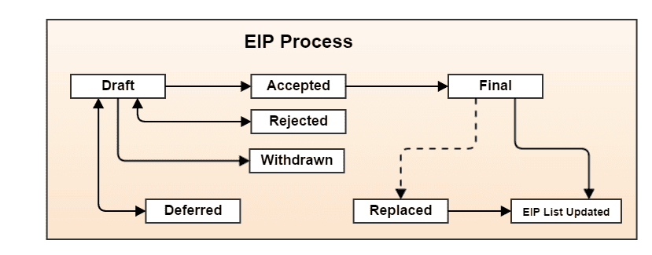
A.2. 以太坊徵求意見（ERCs）
Request for Comments（RFC）是一種用於為互聯網引入技術和組織指南的方法，因為它們是由https://www.ietf.org[Internet Engineering Task Force]提出的。ERCS包括為以太坊網路設置標準的類似指南。以下部分提供了由以太坊開發人員社區開發和接受的最新列表。
ERCs的增加是通過https://github.com/ethereum/EIPs[EIPs]，以太坊改進協議來完成的，這是對比特幣自己的BIP的致敬。EIP由開發人員編寫並提交給同行評審，評估其有用性，並且能夠增加現有ERC的實用性。如果他們被接受，他們最終將成為ERC標準的一部分。
A.3. 最重要的EIP和ERC表
| EIP/ERC # | Title | Author | Layer | Status | Created |
|---|---|---|---|---|---|
EIP Purpose and Guidelines |
Martin Becze, Hudson Jameson |
Meta |
Final |
||
Homestead Hard-fork Changes |
Vitalik Buterin |
Core |
Final |
||
Gas Usage for |
Christian Reitwiessner |
Core |
Draft |
||
Renaming Suicide Opcode |
Hudson Jameson |
Interface |
Final |
||
|
Vitalik Buterin |
Core |
Final |
||
devp2p Forward Compatibility Requirements for Homestead |
Felix Lange |
Networking |
Final |
||
ERC-20 Token Standard. Describes standard functions a token contract may implement to allow DApps and Wallets to handle tokens across multiple interfaces/DApps. Methods include: |
Fabian Vogelsteller, Vitalik Buterin |
ERC |
Final |
Frontier |
|
ERC-55 Mixed-case checksum address encoding |
Vitalik Buterin |
ERC |
Final |
||
Setting the stage for "abstracting out" account security, and allowing users creation of "account contracts" toward a model where in the long-term all accounts are contracts that can pay for gas, and users are free to defined their own security model (that perform any desired signature verification and nonce checks instead of using the in-protocol mechanism where ECDSA and default nonce scheme are the only "standard" way to secure an account, which is currently hard-coded into transaction processing). |
Vitalik Buterin |
Core |
Deferred (to be replaced) |
Constantinople |
|
Setting the Blockhash and state root refactoring to store blockhashes in the state to reduce protocol complexity and need for client implementation complexity necessary to process the |
Vitalik Buterin |
Core |
Deferred |
Constantinople |
|
Change formula that computes the difficulty of a block (difficulty adjustment algorithm) to target mean block time and take uncles into account. |
Vitalik Buterin |
Core |
Final |
Metropolis Byzantinium |
|
Serenity Currency and Crypto Abstraction. Abstracting Ether up a level with the benefit of allowing Ether and sub-Tokens to be treated similarly by contracts, reducing level of indirection required for custom-policy accounts such as Multisigs, and purifying the underlying Ethereum protocol by reducing the minimal consensus implementation complexity |
Vitalik Buterin |
Active |
Serenity feature |
Serenity Casper |
|
"Sharding scaffolding" EIP to allow Ethereum transactions to be parallelised using a binary tree sharding mechanism, and to set the stage for a later sharding scheme. Research in progress: https://github.com/ethereum/sharding |
Vitalik Buterin |
Active |
Serenity feature |
Serenity Casper |
|
Ethereum Domain Name Service - Specification |
Nick Johnson |
ERC |
Final |
||
Add |
Alex Beregszaszi, Nikolai Mushegian |
Core |
Final |
Metropolis Byzantinium |
|
Designated invalid EVM instruction |
Alex Beregszaszi |
Core |
Final |
||
Bitwise shifting instructions in EVM |
Alex Beregszaszi, Paweł Bylica |
Core |
Deferred |
||
Gas cost changes for IO-heavy operations |
Vitalik Buterin |
Core |
Final |
||
Simple Replay Attack Protection. Replay Attack allows any transaction using a pre-EIP155 Ethereum Node or Client to become signed so it is valid and executed on both the Ethereum and Ethereum Classic chains. |
Vitalik Buterin |
Core |
Final |
Homestead |
|
State clearing |
Vitalik Buterin |
Core |
Superseded |
||
EXP cost increase |
Vitalik Buterin |
Core |
Final |
||
State trie clearing (invariant-preserving alternative[EIP-161] |
Gavin Wood |
Core |
Final |
||
ERC-162 ENS support for reverse resolution of Ethereum addresses |
Maurelian, Nick Johnson |
ERC |
Final |
||
ERC-165 Standard Interface Detection |
Christian Reitwiessner |
Interface |
Draft |
||
Contract code size limit |
Vitalik Buterin |
Core |
Final |
||
ERC-181 ENS support for reverse resolution of Ethereum addresses |
Nick Johnson |
ERC |
Final |
||
ERC-190 Ethereum Smart Contract Packaging Standard |
Merriam, Coulter, Erfurt, Catalano, Matias |
ERC |
Final |
||
Precompiled contracts for addition and scalar multiplication operations on the elliptic curve alt_bn128, which are required in order to perform zkSNARK verification within the block gas limit |
Christian Reitwiessner |
Core |
Final |
Metropolis Byzantinium |
|
Precompiled contracts for optimal Ate pairing check of a pairing function on a specific pairing-friendly elliptic curve alt_bn128 and is combined with EIP 196 |
Vitalik Buterin, Christian Reitwiessner |
Core |
Final |
Metropolis Byzantinium |
|
Precompile to support big integer modular exponentiation enabling RSA signature verification and other cryptographic applications |
Vitalik Buterin |
Core |
Final |
Metropolis Byzantinium |
|
New opcodes: |
Christian Reitwiessner |
Core |
Final |
Metropolis Byzantinium |
|
New opcode: |
Vitalik Buterin, Christian Reitwiessner |
Core |
Final |
Metropolis Byzantinium |
|
Rinkeby Testnet using Proof-of-Authority where blocks only mined by trusted signers |
Homestead |
||||
Add |
Micah Zoltu |
Interface |
Draft |
||
Subroutines and Static Jumps for the EVM |
Greg Colvin |
Core |
Draft |
||
SIMD Operations for the EVM |
Greg Colvin |
Core |
Draft |
||
ERC-681 URL Format for Transaction Requests |
Daniel A. Nagy |
Interface |
Draft |
||
Metropolis Difficulty Bomb Delay and Block Reward Reduction - Delay of the Ice Age (aka the Difficulty Bomb by 1 year), and reduction of the block reward from 5 to 3 ether. |
Afri Schoedon, Vitalik Buterin |
Core |
Final |
Metropolis Byzantinium |
|
Embedding transaction status code in receipts. Fetch and embed status field indicative of success or failure state to transaction receipts for callers, as was no longer able to assume the transaction failed if and only if (iff) it consumed all gas after the introduction of the |
Nick Johnson |
Core |
Final |
Metropolis Byzantinium |
|
DEVp2p snappy compression |
Péter Szilágyi |
Networking |
Final |
||
ERC-721 Non-Fungible Token (NFT) Standard. It is a standard API that would allow smart contracts to operate as unique tradable non-fungible tokens (NFT) that may be tracked in standardised wallets and traded on exchanges as assets of value, similar to ERC-20. CryptoKitties was the first popularly-adopted implementation of a digital NFT in the Ethereum ecosystem. |
William Entriken, Dieter Shirley, Jacob Evans, Nastassia Sachs |
Standard |
Draft |
||
Subscriptions and filters for transaction return data |
Jack Peterson |
Interface |
Draft |
||
ERC-801 Canary Standard |
ligi |
Interface |
Draft |
||
ERC-827 A extension of the standard interface ERC20 for tokens with methods that allows the execution of calls inside transfer and approvals. This standard provides basic functionality to transfer tokens, as well as allow tokens to be approved so they can be spent by another on-chain third party. Also it allows to execute calls on transfers and approvals. |
Augusto Lemble |
ERC |
Draft |
||
ERC-930 The ES (Eternal Storage) contract is owned by an address that have write permissions. The storage is public, which means everyone has read permissions. It store the data on mappings, using one mapping per type of variable. The use of this contract allows the developer to migrate the storage easily to another contract if needed. |
Augusto Lemble |
ERC |
Draft |
20. 以太坊分叉歷史
大多數硬分叉計劃作為路線圖的一部分，幷包含社區普遍認同的更新; 這通常被稱為共識。然而，一些硬分叉並不總是保持共識，這導致多個不同的區塊鏈。導致以太坊/以太坊經典分裂的事件就是這種情況。
20.1. 以太坊經典（ETC）
在以太坊社區的成員繼續使用時間敏感的硬分叉（“DAO Hard Fork”）之後，以太坊經典就出現了。2016年7月20日，在以192萬的區塊高度上，以太坊通過硬分叉引入了不規則的狀態變化，從而退還大約360萬的ether，這些以太幣來自一個名為The DAO的智能合約。
社區中的一些人不同意這種變化，認為這違反了以太坊的不變性; 他們選擇在以太坊經典的綽號下繼續保持原有的鏈條。雖然分裂本身最初是意識形態的，但兩個鏈條已經發展成為它們各自獨立的實體。
20.2. 去中心化的自治組織（The DAO）
DAO是由Slock.It創建的; 一支技術精湛的開發團隊，包括以前的以太坊創始成員。Slock.It 將DAO視為基於社區為項目提供的資金的一種方式。其核心思想是提交提案，管理者人將管理提案，資金將從以太坊社區的投資者籌集，如果項目證明成功，那麼投資者將獲得一部分利潤。
DAO也是以太坊 token中的第一個實驗之一。參與者不是直接用Ether資助項目，而是將他們的以太幣交換為DAO代幣，使用它們對項目資金進行投票，然後能夠將它們交換為以太幣。
DAO token能夠在2016年4月5日至4月30日期間的眾籌中購買，佔據了當時總價值約1.5億美元的全部以太存款的近14％[1]。
20.3. 重入（ Re-Entrancy ）Bug
6月9日，開發商Peter Vessenes和Chriseth報告稱，大多數基於以太坊的合約管理基金都可能容易受到可以清空合約資金的漏洞<<[2]>>的影響。幾天後（6月12日）斯蒂芬·塔爾（Slock.It的創始人）報告說，DAO的程式碼並不容易受到彼得和克里斯描述的錯誤的影響。<<[3]>> 令人擔憂的DAO貢獻者暫時鬆了一口氣，直到5天后（6月17日），一名未知的攻擊者（“DAO攻擊者”）開始使用類似於6月9日描述的漏洞利用DAO <<[4]>> 。最終，DAO攻擊者從DAO中吸取了大約360萬個ether。
同時，一群自稱為Robinhood Group（RHG）的志願者開始使用相同的漏洞來提取剩餘的資金。6月21日，RHG宣佈<<[5]>>他們已經獲得了另外70％的DAO，約720萬以太，並計劃將其退還社區。RHG的快速行動和思考被給予了很多感謝和讚揚，這有助於保護社區的大部分ether。
20.3.1. Re-Entrancy技術
雖然Phil Daian <<[6]>> 描述了對該錯誤的更詳細和詳盡的解釋，但簡短的解釋是可以在以太坊虛擬機上同時多次調用合約函數）。這允許DAO攻擊者反覆請求提取ether，並且在合約記錄DAO攻擊者已經提取之前，攻擊者再次提取。
20.3.2. Re-Entrancy 攻擊流程
想象一下，你的銀行帳戶中有100美元，你可以向你的銀行出納員提取任意數量的提款單。銀行出納員按順序為你提供每張單據的金額，並且只有在所有單據結束時才會記錄你的提款。如果你給他們帶來三張單，每張100美元怎麼辦？如果你給他們帶來三千個怎麼辦？
換句話說，流程是：
-
DAO攻擊者要求DAO合約提取DAO tokens。
-
在合約更新其DAO被提取的記錄之前，DAO攻擊者要求合約再次提取DAO。
-
儘可能重複第二步。
-
合約最終記錄了一次DAO的提取，失去了在此期間發生的取款。
20.4. DAO硬分叉
DAO中的一想安全措施是所有提款請求都要延遲28天。這為社區提供了一個簡短的時間來討論如何處理漏洞利用。從大約6月17日到7月20日，DAO攻擊者將無法將他們的DAO token轉換為ether。
一些開發人員專注於尋找可行的解決方案，並在這麼短的時間內探索了多種途徑。其中包括6月24日宣佈的DAO軟分叉推遲DAO的退出，直到達成共識<<[7]>>，以及7月15日宣佈的DAO硬分叉，以不正常的方式扭轉DAO攻擊影響的狀態改變<<[8]>>。
6月28日，開發人員在DAO軟分叉<<[9]>>中發現了一個DoS漏洞，並得出結論，DAO硬分叉將是fork之路上的唯一可行選擇。DAO硬分叉將把所有投資於DAO的ether轉移到新的退款智能合約中，允許ether的原始所有者要求全額退款。這為返還被黑的資金提供瞭解決方案，但也意味著干擾網路上特定地址的餘額；但他們是孤立的。在DAO的部分中也會有一些剩餘的ether，稱為childDAO <<[12]>>。一組受託人將手動授權剩餘的ether；當時的價值約為6-7百萬美元<<[8]>>。
隨著時間的推移，多個以太坊開發團隊創建了允許用戶決定是否要啟用此分叉的客戶端。但是，客戶端創建者想要決定是否選擇 opt-in（預設不分叉），或選擇opt-out（預設分叉）。7月15日，Carbonvote.com上的投票開始了<<[10]>>。7月16日，在塊[1,894,000] <<[11]>>，它被關閉。在以太供應總票數的5.5％中，約80％的選票（約佔總供應量的4.5％）投票選擇opt-out。選擇opt-out的投票的四分之一來自單一地址<<[12]>>。
最終決定成為選擇opt-out，反對DAO硬分叉的人需要通過更改他們運行的軟體中的配置選項來不分叉。
7月20日，在塊1,920,000 <<[13]>> 以太坊實施了DAO硬分叉 <<[14]>>，因此創建了兩個以太坊，一個支持不規則的狀態變化，另一個與它相對。
當硬分叉的以太坊（現今的以太坊）獲得了大部分採礦權時，許多人認為達成共識並且少數群體鏈將逐漸消失; 和以前的分叉一樣。儘管如此，以太坊社區的相當大一部分開始支持原來的區塊鏈，後來被稱為以太坊經典。
幾天之內，幾個交易所開始列出以太坊（“ETH”）和以太坊經典（“ETC”）。由於硬分叉的性質，所有在分拆時持有ether的以太網用戶現在都在兩個區塊鏈中都持有資金，在Poloniex於7月24日列出ETC後，ETC的市場價值很快就建立了 <<[15]>>。
20.4.1. 硬分叉的討論
在DAO硬分叉前幾周，/r/ethereum subreddit上發生了很多討論。一些流行/關鍵的論點總結如下。
| 論點 | 原因 | 反對 |
|---|---|---|
責任/正義 |
如果可能的話，社區可以負責確定是否發生了盜竊並且應該糾正。有道德要求。 |
確定盜竊是否已經發生並且應該糾正的責任應該只由法律機構來完成。如果受影響的各方參與決策，則無法消除偏見。 |
DAO協議 |
DAO的大多數參與者無法正確評估程式碼，因此他們不能同意受DAO程式碼的約束。 |
DAO的條款和條件<<[23]>>的開頭段落宣告“…… DAO的程式碼控制並闡述了DAO創作的所有條款。” |
區塊鏈不變性 |
區塊鏈不變性是一種社會結構，因此如果多數人同意，我們可以改變它。 |
區塊鏈不變性是一種社會結構，因此強制執行不變性非常重要。 |
選擇加入與選擇退出 |
社區可以選擇Hard Fork是選擇加入還是選擇退出。我們投票決定是選擇退出。 |
歷史上Hard Forks是選擇加入（即比特幣）而非投票是不投票。在約1天的時間內，選擇退出投票僅佔總供應投票的4.5％。<< [12] >> |
20.5. DAO硬分叉的時間線
-
4月5日：Slock.It 在Dejavu Security<<[16]>>的安全審計之後創建了DAO
-
4月30日：DAO眾籌推出<<[17]>>
-
5月27日：DAO眾籌結束
-
6月9日：發現了潛在的遞迴調用錯誤，並認為它會影響跟蹤用戶餘額的許多Solidity合約<<[2]>>
-
6月12日：Stephen Tual宣佈DAO資金沒有風險<<[3]>>
-
6月17日：DAO被利用，發現的bug的一個變種（稱為“重新進入的bug”）被用來開始耗盡資金; 最終攫取了約30％的資金。<<[6]>>
-
6月21日：RHG宣佈它已經確保了儲存在DAO中的其他~70％的以太網。<<[5]>>
-
6月24日：通過Geth和Parity客戶通過選擇加入信號宣佈軟叉投票。這旨在暫時扣留資金，直到社區可以更好地決定做什麼。<<[7]>>
-
6月28日：軟叉中發現了一個漏洞，它已被廢棄。<<[9]>>
-
6月28日至7月15日：用戶辯論是否硬分叉。大多數爭論發生在/r/ethereum subreddit上。
-
7月15日：DAO Hard Fork被提議撤銷DAO攻擊。<<[8]>>
-
7月15日：對carbonvote進行投票以決定DAO Hard Fork是否選擇加入（預設情況下不分叉）或選擇退出（預設為fork）。<<[10]>>
-
7月16日：以太供應總票數的5.5％，約80％的選票（約佔總供應量的4.5％）是選擇退出硬分叉。支持投票的四分之一來自一個地址。<<[11]>> <<[12]>>
-
7月20日：硬分叉發生在1,920,000塊。<<[13]>> <<[14]>>
-
7月20日：反對DAO Hard Fork的人繼續運行舊的非硬分叉客戶端軟體。這會導致在兩個鏈上重放交易的問題。<<[18]>>
-
7月24日：Poloniex在股票程式碼ETC下列出原始的以太坊鏈; 這是第一次交換。<<[15]>>
-
8月10日：RHG將290萬回收的ETC轉移至Poloniex，以便在Bity SA的建議下將其轉換為ETH。RHG總持有量的14％從ETC轉換為ETH和其他密碼貨幣。Poloniex凍結了另外86％的沉積ETH。<<[19]>>
-
8月30日：凍結的資金由Poloniex發送回RHG。然後RHG在ETC鏈上設立退款合約。<<[20]>> <<[21]>>
-
12月11日：IOHK的ETC開發團隊組建。由以太坊創始成員Charles Hoskinson領導。
-
2017年1月13日：更新ETC網路以解決交易重播問題。這兩個鏈現在在功能上是分開的。<<[22]>>
-
2月20日：ETCDEVTeam表格。早期ETC開發人員Igor Artamonov（splix）領導。
20.6. 以太坊和以太坊經典
雖然最初的分裂以DAO為中心，但以太坊和以太坊經典現在是獨立的項目。完整的差異是不斷髮展的，而且過於廣泛而無法在本章涵蓋，值得注意的是，這些鏈條在核心發展和社區結構方面確實存在顯著差異。
20.7. 技術差異
20.7.1. EVM
20.7.2. 核心網路開發
所有區塊鏈最終都有很多用戶和貢獻者。但是，由於開發此類軟體所需的專業知識，核心網路開發（運行網路的程式碼）通常由分散的小組完成。因此，這些小組生成的程式碼與實際運行網路的程式碼密切相關。
| Ethereum | Ethereum Classic |
|---|---|
以太坊基金會和志願者。 |
ETCDEV, IOHK, 和志願者 |
20.8. 意識形態差異
以太坊和以太坊經典之間最大的物質差異之一是意識形態，它以兩種主要方式表現出來：不變性和社區結構。
20.8.1. 不變性
在區塊鏈的背景下，不變性指的是區塊鏈歷史的保存。
| Ethereum | Ethereum Classic |
|---|---|
遵循一種俗稱“治理”的哲學。這種理念允許參與者以不同程度的代表性投票，在某些情況下（例如DAO攻擊）改變區塊鏈。 |
遵循一種理念，即一旦數據出現在區塊鏈上，就不能被其他人修改。這是與比特幣，Litecoin和其他密碼貨幣共享的理念。 |
20.8.2. 社區結構
雖然區塊鏈旨在分散，但它們周圍的世界大部分都是集中的。以太坊和以太坊經典以不同的方式處理這一現實。
| Ethereum | Ethereum Classic |
|---|---|
_以太坊基金會所有：/r/ethereum Subreddit, ethereum.org 網站, 論壇, GitHub (ethereum), Twitter (@ethereum), Facebook, 和 Google+ account. |
_由單獨的實體所有：/r/ethereumclassic Subreddit, the ethereumclassic.org 網站, 論壇, GitHubs (ethereumproject, ethereumclassic, etcdevteam, iohk, ethereumcommonwealth), Twitter (@eth_classic), Telegrams, 和 Discord. |
20.9. 著名的以太坊分叉的時間表
在以太坊也發生了其他幾個分叉。其中一些是硬分叉，因為它們直接從預先存在的以太坊網路中分離出來。其他是軟分叉：它們使用以太坊的客戶端/節點軟體，但運行完全獨立的網路，沒有與以太坊共享的任何歷史記錄。在以太坊的生活中可能會有更多的分叉。
還有一些其他項目聲稱是以太坊分叉，但實際上是基於ERC20 token並在以太坊網路上運行。其中兩個例子是EtherBTC（ETHB）和以太坊修改（EMOD）。這些不是傳統意義上的分叉，有時也可稱為空投。
-
Expanse是以太坊區塊鏈的第一個獲得牽引力的分支。它是在2015年9月7日通過比特幣談話論壇宣佈的。實際的分叉發生在一週後的2015年9月14日，塊高度為800,000。它最初由Christopher Franko和James Clayton創立。他們的願景是創建一個先進的鏈：“身份，治理，慈善，商業和公平”。
-
EthereumFog（ETF）於2017年12月14日推出，分塊高度為4730660。他們的目標是通過專注於霧計算和分散儲存來開發“世界分散霧計算”。關於這實際上會帶來什麼的資訊仍然很少。
-
EtherZero（ETZ）於2018年1月19日發佈，塊高4936270，塊高4936270。其值得注意的創新是引入了masternode架構並取消了智能合約的交易費用，以實現更廣泛的DAPP。以太網社區的一些著名成員MyEtherWallet和MetaMask遭到了一些批評，原因是圍繞開發缺乏明確性以及對可能的網路釣魚的一些指責。
-
EtherInc（ETI）於2018年2月13日發佈，高度為5078585，重點是建立分散的組織。他們還宣佈減少封鎖時間，增加礦工獎勵，取消叔叔獎勵並設置可開採硬幣的上限。它們使用與以太坊相同的私鑰，並實施了重放保護，以保護原始非重製鏈上的ether。
參考
-
[[[2]]] http://vessenes.com/more-ethereum-attacks-race-to-empty-is-the-real-deal/
-
[[[4]]] http://hackingdistributed.com/2016/06/18/analysis-of-the-dao-exploit
-
[[[5]]] https://www.reddit.com/r/ethereum/comments/4p7mhc/update_on_the_white_hat_attack/
-
[[[6]]] http://hackingdistributed.com/2016/06/18/analysis-of-the-dao-exploit/
-
[[[7]]] https://blog.ethereum.org/2016/06/24/dao-wars-youre-voice-soft-fork-dilemma/
-
[[[8]]] https://blog.slock.it/hard-fork-specification-24b889e70703
-
[[[9]]] https://blog.ethereum.org/2016/06/28/security-alert-dos-vulnerability-in-the-soft-fork/
-
[[[10]]] https://blog.ethereum.org/2016/07/15/to-fork-or-not-to-fork/
-
[[[11]]] https://etherscan.io/block/1894000
-
[[[12]]] https://elaineou.com/2016/07/18/stick-a-fork-in-ethereum/
-
[[[13]]] https://etherscan.io/block/1920000
-
[[[14]]] https://blog.ethereum.org/2016/07/20/hard-fork-completed/
-
[[[15]]] https://twitter.com/poloniex/status/757068619234803712
-
[[[16]]] https://blog.slock.it/deja-vu-dao-smart-contracts-audit-results-d26bc088e32e
-
[[[17]]] https://blog.slock.it/the-dao-creation-is-now-live-2270fd23affc
-
[[[18]]] https://gastracker.io/block/0x94365e3a8c0b35089c1d1195081fe7489b528a84b22199c916180db8b28ade7f
-
[[[20]]] https://medium.com/@jackfru1t/the-robin-hood-group-and-etc-bdc6a0c111c3
-
[[[23]]] https://web.archive.org/web/20160429141714/https://daohub.org/explainer.html/
-
[[[24]]] https://ethereumclassic.github.io/blog/2016-12-12-TeamGrothendieck/
全書完結